| Possible_composition | p | Ways_to_produce_data | Plausibility |
|---|---|---|---|
| (a,a,a,a,a,a,a,a) | 0.000 | 0 | 0.000 |
| (p,a,a,a,a,a,a,a) | 0.125 | 343 | 0.210 |
| (p,p,a,a,a,a,a,a) | 0.250 | 432 | 0.270 |
| (p,p,p,a,a,a,a,a) | 0.375 | 375 | 0.230 |
| (p,p,p,p,a,a,a,a) | 0.500 | 256 | 0.160 |
| (p,p,p,p,p,a,a,a) | 0.625 | 135 | 0.080 |
| (p,p,p,p,p,p,a,a) | 0.750 | 48 | 0.030 |
| (p,p,p,p,p,p,p,a) | 0.875 | 7 | 0.004 |
| (p,p,p,p,p,p,p,p) | 1.000 | 0 | 0.000 |
Statistical_Rethinking_RM
Chapter 1: The Golem of Prague
Chapter 1 urged us to rethink the “popular statistical and scientific philosophy” by pointing out the flaws in classical statistical tools and reasoning.
According to the author, “classical tools are not diverse enough to handle many common research questions…And if we keep adding new types of tools, soon there will be far too many to keep track of.” I agree with these statements. The author also talked about how Fisher’s exact test is used “whenever the cell counts are small” and he had “never seen it used appropriately” except Fisher’s original use of the test. It would be nice if the author gave some examples and explanations of those inappropriate uses- I can’t decide whether to accept without more information.
The author mentioned why deductive falsification is impossible in scientific context:
“Hypotheses are not models. The relations among hypotheses and different kinds of models are complex. Many models correspond to the same hypothesis, and many hypotheses correspond to a single model. This makes strict falsification impossible.
Measurement matters. Even when we think the data falsify a model, another observer will debate our methods and measures. They don’t trust the data. Sometimes they are right.
For both of these reasons, deductive falsification never works. The scientific method cannot be reduced to a statistical procedure, and so our statistical methods should not pretend.”
Hypotheses are not models
He gave an example of the first statement in evolutionary context. His conclusion was:
“Any given statistical model (M) may correspond to more than one process model (P).
Any given hypothesis (H) may correspond to more than one process model (P).
Any given statistical model (M) may correspond to more than one hypothesis (H).”
In other words, it doesn’t matter whether we reject or fail to reject the null. It won’t have “much inferential power” or give any useful insights due to possible existence of models- other than the ones under study- which can also align with the null or alternative hypotheses. The author gave a solution to this dilemma- “explicitly compare predictions of more than one model.” This is a very nice solution, as I think it will allow analysis of hypothesis or whatever you want to study in real-world conditions. And that is much more powerful than any classical tests.
In that case, should we disregard all studies that rely on NHST? Should we reject all findings made by rejecting the null hypothesis as senseless? And are the multiple process models the only way to go? The frequentists’ way to solve this problem is to control the conditions of the experiment/study. In nutrition studies, this can be in the form of inclusion or exclusion criteria and strict control of test subjects (and conditions) throughout the duration of the study. This is to ensure the observed effect (or lack of) is caused by (or related to) the variables of interest and not by uncontrolled confounders. If a NHST research was done well with proper control, then we could ‘more or less’ have confidence in the research’s findings.
Measurement matters
In the section “measurement matters,” the author reinforced the first statement, and explained the fallacy of falsification principle, stating two reasons:
“Observations are prone to error, especially at the boundaries of scientific knowledge.
Most hypotheses are quantitative, concerning the degrees of existence, rather than discrete, concerning total presence or absence.”
Observation error
The author gave two examples of observation error. The first example pointed out possible bias or errors in observations, and potential type 1 and type 2 errors (false positives and false negatives) in classical frequentist researches. And the second example talked about errors in measurements (or studies/ experiments). Both are valid concerns and those errors are not uncommon in frequentist researches.
There are several ways to overcome these shortcomings, depending on research design. For example, we can increase sample size or run more tests to reduce type 1 and type 2 errors. Errors in measurements can be avoided by following protocols- taking at least two measurements for each sample, consistency in measurements, etc. However, there is no guarantee that any particular researcher or research group will follow a strict protocol without compromising, and that can lead to observation error. To prevent this, we usually avoid using finding from a single research, and wait till the findings are backed by systematic reviews and made into guidelines.
In both woodpecker and neutrino examples, the author’s key concerns were “whether falsification is real or spurious,” and that “both true-detection and false-detection plausible.” The null hypothesis in the woodpecker example was “The Ivory-billed Woodpecker is extinct.” According to the author, it will only take a single woodpecker to falsify this theory, and that the 2005 evidence on existence of a woodpecker was doubted by many. Since no other evidences emerged, the question remained unresolved. That means finding was not conclusive yet, and research was still ongoing. As I mentioned above, we don’t accept findings from a single research as concrete or irrefutable evidence. Thus, the dilemma over falsification and type 1 or type 2 error in the woodpecker case was not really a concern- we would just need to conduct more surveys (wider location for longer period?) or simply wait for new evidences. However, I think this is not a good case to use the null hypothesis testing. The falsification of hypothesis in this case will be simply the result of patience or luck, rather than proper research design or statistical tests. In the neutrino example, the problem was the human error which they solved by replication of experiments. This is not unusual in frequentist research. Replicating or reconducting experiment is a common occurrence, especially when lab analyses are involved. It may be an inconvenience, but it does not imply the utter failure of the theory of falsification or the null hypothesis testing.
Continuous hypotheses
The author noted “…it is a good practice to design experiments and observations that can differentiate competing hypotheses. But in many cases, the comparison must be probabilistic, a matter of degree, not kind.” Two examples of null hypotheses that support the above statement were given: “80% of swans are white” and “Black swans are rare.” The author pointed out the modus tollens swan story would not be applicable in this case, since the problem is not to prove or disprove the hypothesis but to estimate the distribution of swan coloration. He added “You might object that the hypothesis above is just not a good scientific hypothesis, because it isn’t easy to disprove. But if that’s the case, then most of the important questions about the world are not good scientific hypotheses.”
In my opinion, it is not difficult to disprove both hypotheses. The two hypothese are not good hypotheses simply because they are not specific and fail to form sensible research question or outcome- not because it is “a matter of degree.” Let’s break down the two hypotheses. First, we think about the possible research question for the hypothesis “80% of swan are white.” The research question could be “Are 80% of swan white?” or “Do 80% of swan have white feathers?” In this case, this hypothesis would be disprove if survey found any percent of white swan other than 80%. It wouldn’t matter if the actual percent was 90 or 95- we could stop the research once the number passed the threshold of 80%. Now it is clear that the problem with this hypothesis is the pointless outcome. What are we trying to achieve knowing whether 80% of swan are white, or 40% or any percentage of swan are white in color? A more sensible hypothesis would be “White coloration is the dominant trait in swan.” We can falsify this hypothesis by conducting surveys- like the author suggested- or genetic analysis, etc. Still, it is not a good hypothesis for an original research since the scope is too broad. The hypothesis only specify swan- not a particular speices or geographical location, meaning all swan species in the world are included in the research. That would be a hard task for any single researcher or research group. Hence, this hypothesis is more suitable at review level- not original research level. For original research, we can specify the species of swan and extent of study area based on the available funding.
The second hypothesis “Black swans are rare” has the similar problem- lack of specificity. We need to determine what is considered rare- 1 in 100 or 1 in a million? Once we have that specification, it is not difficult to tackle the second hypothesis. But we need to be aware that the second hypothesis also includes all swan species in the world- or even universe or parallel universes.
Another thing is the modus tollens swan story was merely to explain a theory- not a definitive example of how we should write hypothesis. I have yet to see a research with hypothesis written like the one in modus tollens swan story. All hypotheses that I have seen so far address “the degree, not kind”-like the author suggested. Hence, the author’s concern over hypotheses is somehow invalid.
Falsification is consensual
The author said “falsification is always consensual, not logical,” and “evidence often— but not always— has something to do with such falsification.” He also highlighted the arguments towards “consensus about meaning of evidence” and the danger of “historical revisionism.” I think the author is right. We hold such reverence towards the famous scientists in history, that their formulas are still widely applied to this day, without contesting their suitability in this age. Many researches were done following the same mould, that they gave similar results, which became our gold-standard- the guidelines. And those guidelines are not set in stone. They are regularly updated- albeit minor changes. Occasionally, some guidelines are completely proven false and replaced by new ones. These occasions are rare that they are called groundbreaking discovery. I remembered the day everyone at the department was talking about the guideline change on egg consumption- may seem insignificant to outsiders but we were really excited! It could be that such new discoveries are rare because we are doing the same thing over and over again, and are content when our findings (even vaguely) agree the current consensus- we seek validation from previous works by researchers more venerable than us. And that is dangerous to our patients and the public. We may be feeling relaxed because we think the worst that can happen from such findings is “the treatment is ineffective but not harmful.” We pour scorn on some of the treatments given by the healthcare providers some hundred years ago as harmful and ineffective. We can do so because we now have the knowledge collected over time. It is very possible our best guidelines may seem ‘folly’ to the researchers in the next hundred years. Thus, I agree with the author that it’s time we should do things differently.
Three tools for golem engineering
The author gave alternative to falsification- that is to build models. According to the author, “Models can be made into testing procedures— all statistical tests are also models— but they can also be used to measure, forecast, and argue.” He also mentioned three models that are “in demand in both the social and biological sciences.”
Bayesian data analysis
Multilevel models
Model comparison using information criteria
Bayesian data analysis
As explained by the author, Bayesian data analysis uses uncertainty or chance to “describe plausibility of different possibilities,” and “…we can use probability theory as a general way to represent plausibility, whether in reference to countable events in the world or rather theoretical constructs like parameters.” The author then compared this approach to frequentist approach— “Bayesian probability is a very general approach to probability…The frequentist approach requires that all probabilities be defined by connection to countable events and their frequencies in very large samples.” And the author pointed out “…This leads to frequentist uncertainty being premised on imaginary resampling of data— if we were to repeat the measurement many many times, we would end up collecting a list of values that will have some pattern to it. It means also that parameters and models cannot have probability distributions, only measurements can. The distribution of these measurements is called a sampling distribution. This resampling is never done, and in general it doesn’t even make sense…”
He also quoted “one of the most important frequentist statisticians of the 20th century,” Sir Ronald Fisher:
“[…] the only populations that can be referred to in a test of significance have no objective reality, being exclusively the product of the statistician’s imagination […]”
But, Fisher’s criticism was already rebuked by his contemporary Professor Egon Pearson in his “Statistical Concepts in Their Relation to Reality”. Pearson said:
“…If probability is to be justly applied to the analysis of data, it follows that a random process must have been introduced or been naturally present at some stage in the collection of these data. Is there not then an appeal to the imagination in taking as the hypothetical population of samples that which would have been generated by repetition of this random process?…”
According to Pearson, Fisher was “often tilting at views which those whom he attacks have never held.” And I can use Pearson’s argument to address the “telescope” example given by the author.
“…Since the telescope was primitive, it couldn’t really focus the image very well. Saturn always appeared blurred. This is a statistical problem, of a sort. There’s uncertainty about the planet’s shape, but notice that none of the uncertainty is a result of variation in repeat measurements. We could look through the telescope a thousand times, and it will always give the same blurred image (for any given position of the Earth and Saturn). So the sampling distribution of any measurement is constant, because the measurement is deterministic— there’s nothing “random” about it. Frequentist statistical inference has a lot of trouble getting started here…”
I think, like Fisher, the author is also “tilting at views” which frequentists have never held. The problem with the telescope example is that repeated measurements were done on “ONE” sample only. That’s why he made assumption that “…none of the uncertainty is a result of variation in repeat measurements…So the sampling distribution of any measurement is constant, because the measurement is deterministic— there’s nothing “random” about it.” I have yet to see a research that only measures “one” sample repeatedly to solve a research question at population level or in real-world situations. It would be akin to asking a single child- using different sets of questions- repeatedly about what the child eats in a day to know the dietary pattern of all the children in the region. It makes no sense. Furthermore, sample representativeness play a major role in such researches. The author representation of a frequentist research has no place for sample representativeness- there is only one sample and nothing else.
The author also criticized about “imagined repeat sampling.” If taken out of context, such idea can be quite preposterous. But, it can actually be logical if we explain it in terms of sample representativeness. We are not imagining repeated sampling- beyond our chosen sample sets- to justify the results from our samples are applicable to the population. For example, if we were to study the dietary pattern of an ethnic group reside in the mountain, we do not need to ask dietary-related questions to every individual in the group. We select a fraction of the group- chosen at random- to infer the dietary pattern of the whole group. Such fraction (samples) should be high enough in number and have traits similar to the whole group. If results obtained from samples said “fish constitutes only a small part of their diet,” then we can assume that we will have the same result if we did the same survey repeatedly with different sample sets obtained from the group. In this case, the so-called “imagined repeat sampling” can work because samples are representative of the population.
The author continued in the next paragraph that “..even when a Bayesian procedure and frequentist procedure give exactly the same answer, our Bayesian golems aren’t justifying their inferences with imagined repeat sampling.” Such narrative can give a result totally opposite of what the author wants. The author wants the readers to “rethinking statistics,” by pointing out flaws in the classical statistic tests and research methodology. However, all the examples given by the author can be easily rebuked. More rebuttals will come if such narrative is introduced in a frequestist community- like academics in the nutrition field. But, these academics are not really protecting Karl Popper or E.S. Pearson. They are not defensive about the theories postulated years ago by scientists in the past. They are simply protecting their works- their findings. Majority- if not all- of these academics will not “rethink statistics” if Bayesian approach begins with denouncing the frequentist approach, especially when counter-arguments can easily be made. It will be similar to the author stabbing them with a knife first before offering a treatment. All or most of them will not accept the treatment. They will run away- either scared or hateful. Some may even stab him back. Even if they were forced to accept it, the acceptance would be superficial. Instead, we should offer them beautiful roses with exquisite scent- meaning we should focus on what Bayesian analysis can offer which frequentist apporach can’t, rather than attacking them. The thorns may still prick their fingers, but they will not be able to resist the charm of the roses. And we can offer them balm to soothe their fingers. They will be thankful, and meaningful collaborations will be made.
Multilevel models
The author introduced the concept of multilevel model in this section. Statistical models “contain parameters. And parameters support inference. Upon what do parameters themselves stand? Sometimes, in some of the most powerful models, it’s parameters all the way down. What this means is that any particular parameter can be usefully regarded as a placeholder for a missing model. Given some model of how the parameter gets its value, it is simple enough to embed the new model inside the old one. This results in a model with multiple levels of uncertainty, each feeding into the next—a multilevel model.”
The author also mentioned “four typical and complementary reasons to sue multilevel models:”
To adjust estimates for repeat sampling. When more than one observation arises from the same individual, location, or time, then traditional, single-level models may mislead us.
To adjust estimates for imbalance in sampling. When some individuals,locations,or times are sampled more than others, we may also be misled by single-level models.
To study variation. If our research questions include variation among individuals or other groups within the data, then multilevel models are a big help, because they model variation explicitly.
To avoid averaging. Frequently, scholars pre-average some data to construct variables for a regression analysis. This can be dangerous, because averaging removes variation. It therefore manufactures false confidence. Multilevel models allow us to preserve the uncertainty in the original, pre-averaged values, while still using the average to make predictions.
And there are also “diverse model types that turn out to be multilevel: models for missing data (imputation), measurement error, factor analysis, some time series models, types of spatial and network regression, and phylogenetic regressions all are special applications of the multilevel strategy.”
The author added “this is why grasping the concept of multilevel modeling may lead to a perspective shift. Suddenly single- level models end up looking like mere components of multilevel models. The multilevel strategy provides an engineering principle to help us to introduce these components into a particular analysis, exactly where we think we need them.”
Based on the author’s explanation, multilevel models sound really promising, and I’m eager to learn more about them.
Model comparison and information criteria
Information criteria were developed to compare “structurally different models based upon future predictive accuracy, using different approximations for different model types.”
Popular information criterion AIC, and related metrics- such as DIC and WAIC- “explicitly build a model of the prediction task and use that model to estimate performance of each model you might wish to compare. Because the prediction is modeled, it depends upon assumptions. So information criteria do not in fact achieve the impossible, by seeing the future. They are still golems.” The author also mentioned that they are known as “information criteria, because they develop their measure of model accuracy from information theory.”
These criteria can help researchers with two common difficulties in model comparison:
Overfitting. Future data will not be exactly like past data, and so any model that is unaware of this fact tends to make worse predictions than it could. So if we wish to make good predictions, we cannot judge our models simply on how well they fit our data. Information criteria provide estimates of predictive accuracy, rather than merely fit. So they compare models where it matters.
Comparison of multiple non-null models to the same data. Frequently, several plausible models of a phenomenon are known to us. In some empirical contexts, like social networks and evolutionary phylogenies, there are no reasonable or uniquely “null” models. This was also true of the neutral evolution example. In such cases, it’s not only a good idea to explicitly compare models. It’s also mandatory. Information criteria aren’t the only way to conduct the comparison. But they are an accessible and widely used way.
Chapter 2: Small Worlds and Large Worlds
The garden of forking data
“In order to make good inference about what actually happened, it helps to consider everything that could have happened. A Bayesian analysis is a garden of forking data, in which alternative sequences of events are cultivated. As we learn about what did happen, some of these alternative sequences are pruned. In the end, what remains is only what is logically consistent with our knowledge.”
Counting possibilities
A bag of avocado and pear (total 8)
- Conjectures: (a,a,a,a,a,a,a,a); (p,a,a,a,a,a,a,a); (p,p,a,a,a,a,a,a); (p,p,p,a,a,a,a,a); (p,p,p,p,a,a,a,a); (p,p,p,p,p,a,a,a); (p,p,p,p,p,p,a,a); (p,p,p,p,p,p,p,a); (p,p,p,p,p,p,p,p)
Shake the bag to give equal chance and pick 4 fruits; replace the fruit after each pick
- Data: (a,p,a,a)
Count the possible ways to have that exact data sequence for each conjecture
(a,a,a,a,a,a,a,a) → 8 * 0 * 8 * 8 = 0
(p,a,a,a,a,a,a,a) → 7 * 1 * 7 * 7 = 343
(p,p,a,a,a,a,a,a) → 6 * 2 * 6 * 6 = 432
(p,p,p,a,a,a,a,a) → 5 * 3 * 5 * 5 = 375
(p,p,p,p,a,a,a,a) → 4 * 4 * 4 * 4 = 256
(p,p,p,p,p,a,a,a) → 3 * 5 * 3 * 3 = 135
(p,p,p,p,p,p,a,a) → 2 * 6 * 2 * 2 = 48
(p,p,p,p,p,p,p,a) → 1 * 7 * 1 * 1 = 7
(p,p,p,p,p,p,p,p) → 0 * 8 * 0 * 0 = 0
“So what good are these counts? By comparing these counts, we have part of a solution for a way to rate the relative plausibility of each conjectured bag composition. But it’s only a part of a solution, because in order to compare these counts we first have to decide how many ways each conjecture could itself be realized. We might argue that when we have no reason to assume otherwise, we can just consider each conjecture equally plausible and compare the counts directly. But often we do have reason to assume otherwise.”
Using prior information
Two possible choices to incorporate prior information: add a new layer to the garden or multiply prior count by the new count. “It turns out that these two methods are mathematically identical, as long as the new observation is logically independent of the previous observations.”
“First we count the numbers of ways each conjecture could produce the new observation. Then we multiply each of these new counts by the previous numbers of ways for each conjecture.”
We select one more fruit from the bag. Now the data sequence is “a,p,a,a,p”
(a,a,a,a,a,a,a,a) → 0 * 0 = 0
(p,a,a,a,a,a,a,a) → 343 * 1 = 343
(p,p,a,a,a,a,a,a) → 432 * 2 = 864
(p,p,p,a,a,a,a,a) → 375 * 3 = 1125
(p,p,p,p,a,a,a,a) → 256 * 4 = 1024
(p,p,p,p,p,a,a,a) → 135 * 5 = 675
(p,p,p,p,p,p,a,a) → 48 * 6 = 288
(p,p,p,p,p,p,p,a) → 7 * 7 = 49
(p,p,p,p,p,p,p,p) → 0 * 8 = 0
“This updating approach amounts to nothing more than asserting that (1) when we have previous information suggesting there are Wprior ways for a conjecture to produce a previous observation Dprior and (2) we acquire new observations Dnew that the same conjecture can produce in Wnew ways, then (3) the number of ways the conjecture can account for both Dprior as well as Dnew is just the product Wprior × Wnew.”
Incorporating new data types different from prior data
New information: There are fewer pears than avocados. For every bag containing 5 pears and 3 avocados, there are two bags containing 4 pears and 4 avocados, three bags containing 5 avocados and 3 pears, and four bags containing 2 pears and 6 avocados. Each bag contains at least 2 pears and 2 avocados.
(a,a,a,a,a,a,a,a) → 0 * 0 = 0
(p,a,a,a,a,a,a,a) → 343 * 0 = 0
(p,p,a,a,a,a,a,a) → 864 * 4 = 3456
(p,p,p,a,a,a,a,a) → 1125 * 3 = 3375
(p,p,p,p,a,a,a,a) → 1024 * 2 = 2048
(p,p,p,p,p,a,a,a) → 675 * 1 = 675
(p,p,p,p,p,p,a,a) → 288 * 0 = 0
(p,p,p,p,p,p,p,a) → 49 * 0 = 0
(p,p,p,p,p,p,p,p) → 0 * 0 = 0
I made a mental note in the beginning that the bag contained 4 pears and 4 avocados. Now, using the counting method has gotten me nearer to the truth, but it makes no difference since I will get the wrong answer anyway. The author asked “Is there a threshold difference in these counts at which we can safely decide that one of the conjectures is the correct one?”, when one conjecture is barely more possible than the other. I think the answer is no (correct answer is in chapter 3).
“Which assumption should we use, when there is no previous information about the conjectures? The most common solution is to assign an equal number of ways that each conjecture could be correct, before seeing any data. This is sometimes known as the principle of indifference: When there is no reason to say that one conjecture is more plausible than another, weigh all of the conjectures equally. The issue of choosing a representation of “ignorance” is surprisingly complicated. The issue will arise again in later chapters. For the sort of problems we examine in this book, the principle of indifference results in inferences very comparable to mainstream non-Bayesian approaches, most of which contain implicit equal weighting of possibilities. For example a typical non-Bayesian confidence interval weighs equally all of the possible values a parameter could take, regardless of how implausible some of them are. Many non-Bayesian procedures have moved away from this, through the use of penalized likelihood and other methods.”
From counts to probability
If p is the proportion of pear and Dnew = {a,p,a,a}
plausibility of p after Dnew ∝ ways p can produce Dnew × prior plausibility of p
“The above just means that for any value p can take, we judge the plausibility of that value p as proportional to the number of ways it can get through the garden of forking data. This expression just summarizes the calculations you did in the tables of the previous section.
Finally, we construct probabilities by standardizing the plausibility so that the sum of the plausibilities for all possible conjectures will be one. All you need to do in order to standardize is to add up all of the products, one for each value p can take, and then divide each product by the sum of products:”
OR
[1] 0.000000000 0.214912281 0.270676692 0.234962406 0.160401003 0.084586466
[7] 0.030075188 0.004385965 0.000000000“These plausibilities are also probabilities— they are non-negative (zero or positive) real numbers that sum to one. And all of the mathematical things you can do with probabilities you can also do with these values. Specifically, each piece of the calculation has a direct partner in applied probability theory. These partners have stereotyped names, so it’s worth learning them, as you’ll see them again and again.
• A conjectured proportion of pears, p, is usually called a parameter value. It’s just a way of indexing possible explanations of the data.
• The relative number of ways that a value p can produce the data is usually called a likelihood. It is derived by enumerating all the possible data sequences that could have happened and then eliminating those sequences inconsistent with the data.
• The prior plausibility of any specific p is usually called the prior probability.
• The new, updated plausibility of any specific p is usually called the posterior probability.
If we really have shuffled a deck of cards enough to erase any prior knowledge of the ordering- in randomization process-, then the order the cards end up in is very likely to be one of the many orderings with high information entropy.”
Building a model
“Designing a simple Bayesian model benefits from a design loop with three steps.
Data story: Motivate the model by narrating how the data might arise.
Update: Educate your model by feeding it the data.
Evaluate: All statistical models require supervision, leading possibly to model revision.”
A data story
“Bayesian data analysis usually means producing a story for how the data came to be. This story may be descriptive, specifying associations that can be used to predict outcomes, given observations. Or it may be causal, a theory of how some events produce other events. Typically, any story you intend to be causal may also be descriptive. But many descriptive stories are hard to interpret causally. But all data stories are complete, in the sense that they are sufficient for specifying an algorithm for simulating new data.
You can motivate your data story by trying to explain how each piece of data is born. This usually means describing aspects of the underlying reality as well as the sampling process.
The data story is then translated into a formal probability model. This probability model is easy to build, because the construction process can be usefully broken down into a series of component decisions.”
Bayesian updating
“A Bayesian model begins with one set of plausibilities assigned to each of these possibilities. These are the prior plausibilities. Then it updates them in light of the data, to produce the posterior plausibilities. This updating process is a kind of learning, called Bayesian updating.
Notice that every updated set of plausibilities becomes the initial plausibilities for the next observation. Every conclusion is the starting point for future inference. However, this updating process works backwards, as well as forwards. Knowing the final observation, it is possible to mathematically divide out the observation, to infer the previous plausibility curve. So the data could be presented to your model in any order, or all at once even. In most cases, you will present the data all at once, for the sake of convenience. But it’s important to realize that this merely represents abbreviation of an iterated learning process.
Bayesian estimates are valid for any sample size. This does not mean that more data isn’t helpful—it certainly is. Rather, the estimates have a clear and valid interpretation, no matter the sample size. But the price for this power is dependency upon the initial estimates, the prior. If the prior is a bad one, then the resulting inference will be misleading.”
Evaluate
“If there are important differences between the model and reality, then there is no logical guarantee of large world performance. And even if the two worlds did match, any particular sample of data could still be misleading. So it’s worth keeping in mind at least two cautious principles: (1) the model’s certainty is no guarantee that the model is a good one and (2) it is important to supervise and critique your model’s work.
Note that the goal is not to test the truth value of the model’s assumptions. All manner of small world assumptions about error distributions and the like can be violated in the large world, but a model may still produce a perfectly useful estimate. Instead, the objective is to check the model’s adequacy for some purpose. This usually means asking and answering additional questions, beyond those that originally constructed the model.”
Components of the model
“The usual way we build a statistical model involves choosing distributions and devices for each that represent the relative numbers of ways things can happen. These distributions and devices are
a likelihood function- the number of ways each conjecture could produce an observation
one or more parameters- the accumulated number of ways each conjecture could produce the entire data
a prior- the initial plausibility of each conjectured cause of the data”
Likelihood
“The likelihood is a mathematical formula that specifies the plausibility of the data. What this means is that the likelihood maps each conjecture onto the relative number of ways the data could occur, given that possibility.”
Binomial distribution
each event is independent of other events
the probability of “an observation” is the same on every event
the common “coin tossing” distribution where there is only two possible answers (e.g., land or water in globe example; failure or success, etc.)
In the given globe example, there are two possible outcomes: either land or water. Out of 9 tosses (n), 6 tosses land on water. The probability of getting water (p) is the same (0.5%) on every toss. Then, we can use binomial distribution formula in R to compute the “likelihood of data w (water)- 6 W’s in 9 tosses- under any value of p with”:
Code
dbinom( 6, size = 9, prob = 0.5)[1] 0.1640625If probability for getting water is 0.2,
Code
dbinom(6, size = 9, prob = 0.2)[1] 0.002752512“The job of the likelihood is to tell us the relative number of ways to see the data w, given values for p and n.”
Parameters
“It is typical to conceive of data and parameters as completely different kinds of entities. Data are measured and known; parameters are unknown and must be estimated from data. Usefully, in the Bayesian framework the distinction between a datum and a parameter is fuzzy. A datum can be recast as a very narrow probability density for a parameter, and a parameter as a datum with uncertainty. This continuity between certainty (data) and uncertainty (parameters) can be exploited (Ch 14) to incorporate measurement error and missing data into your modeling.
In globe tossing example, n and w are data, and p is unknown parameter. Your Bayesian machine can tell you what the data say about any parameter, once you tell it the likelihood and which bits have been observed. In some cases, the golem will just tell you that not much can be learned—Bayesian data analysis isn’t magic, after all. But it is usually an advance to learn that our data don’t discriminate among the possibilities.”
Prior
“A Bayesian machine must have an initial plausibility assignment for each possible value of the parameter. The prior is this initial set of plausibilities. Priors are useful for constraining parameters to reasonable ranges, as well as for expressing any knowledge we have about the parameter, before any data are observed.
Within Bayesian data analysis in the natural and social sciences, the prior is considered to be just part of the model. As such it should be chosen, evaluated, and revised just like all of the other components of the model. In practice, the subjectivist and the non-subjectivist will often analyze data in nearly the same way.
If you don’t have a strong argument for any particular prior, then try different ones. Because the prior is an assumption, it should be interrogated like other assumptions: by altering it and checking how sensitive inference is to the assumption.”
Posterior
“Once you have chosen a likelihood, which parameters are to be estimated, and a prior for each parameter, a Bayesian model treats the estimates as a purely logical consequence of those assumptions. For every unique combination of data, likelihood, parameters, and prior, there is a unique set of estimates. The resulting estimates—the relative plausibility of different parameter values, conditional on the data—are known as the posterior distribution. The posterior distribution takes the form of the probability of the parameters, conditional on the data: Pr(p|n, w).
Bayes Theorem
The mathematical procedure that defines the logic of the posterior distribution is Bayes’ theorem. The joint probability of the data w and any particular value of p is: Pr(w, p) = Pr(w|p) Pr(p)- the probability of w and p is the product of likelihood Pr(w|p) and the prior probability Pr(p).”
Example- the probability of mango both sweet and yellow is equal to the probability that mango is sweet given that it is yellow, multiplies by the probability that it is yellow: Pr(s, y) = Pr(s|y) Pr(y)
OR the probability of mango both sweet and yellow is equal to the probability that mango is yellow given that it is sweet, multiplies by the probability that it is sweet: Pr(s, y) = Pr(y|s) Pr(s)
Now since both right-hand sides are equal to the same thing, we can set them equal to one another and solve for the posterior probability:
Bayes’ theorem: the probability of any particular value of p, considering the data, is equal to the product of the likelihood and prior, divided by this thing Pr(w), which I’ll call the average likelihood. In word form:
Average Likelihood:
commonly called “evidence” or “probability of the data”
Likelihood of the data averaged over the prior
To standardize the posterior, to ensure it sums (integrates) to one
Making the model go
“Bayesian model is a machine, a figurative golem. It has built-in definitions for the likelihood, the parameters, and the prior. And then at its heart lies a motor that processes data, producing a posterior distribution. The action of this motor can be thought of as conditioning the prior on the data.
Three different conditioning engines, numerical techniques for computing posterior distributions, that can accommodate whichever prior is most useful for inference:
Grid approximation
Quadratic approximation
Markov chain Monte Carlo (MCMC)”
Grid approximation
While most parameters are continuous, capable of taking on an infinite number of values, it turns out that we can achieve an excellent approximation of the continuous posterior distribution by considering only a finite grid of parameter values. At any particular value of a parameter, p′, it’s a simple matter to compute the posterior probability: just multiply the prior probability of p′ by the likelihood at p′. Repeating this procedure for each value in the grid generates an approximate picture of the exact posterior distribution. This procedure is called grid approximation.
But in most of your real modeling, grid approximation isn’t practical. The reason is that it scales very poorly, as the number of parameters increases.
Building a grid approximation
Define the grid- decide how many points to use in estimating the posterior, and then make a list of the parameter values on the grid.
Compute the value of the prior at each parameter value on the grid.
Compute the likelihood at each parameter value.
Compute the unstandardized posterior at each parameter value, by multiplying the prior by the likelihood.
Finally, standardize the posterior, by dividing each value by the sum of all values.
Building a grid approximation for globe tossing example
Code
# define grid
p_grid <- seq( from=0 , to=1 , length.out=20 )
# define prior
prior <- rep( 1 , 20 )
# compute likelihood at each value in grid
likelihood <- dbinom( 6 , size=9 , prob=p_grid )
# compute product of likelihood and prior
unstd.posterior <- likelihood * prior
# standardize the posterior, so it sums to 1
posterior <- unstd.posterior / sum(unstd.posterior)
# Display the posterior distribution
plot( p_grid , posterior , type="b" ,
xlab="probability of water" , ylab="posterior probability" )
mtext( "20 points" )
Try with a 5-point grid
Code
# define grid
p_grid <- seq(from = 0, to = 1, length.out = 5)
# define prior
prior <- rep(1, 5) # 1 form a uniform prior distribution, assigning equal probability to each value in the grid. Using a decimal here will mean the same but may assume less degree of uncertainty?
# compute likelihood at each value in the grid
likelihood <- dbinom(6, size = 9, prob = p_grid)
# compute product of likelihood and prior
unstd.posterior <- likelihood * prior
# standardize the posterior, so it sums to 1
std.posterior <- unstd.posterior / sum(unstd.posterior)
# plot the posterior distribution
plot(p_grid, std.posterior, type = "b",
xlab = "probability of water", ylab = "posterior probability")
mtext("5 points")
Try with a 100-point grid
Code
# define a grid
p_grid <- seq(from = 0, to = 1, length.out = 100)
# define a prior
prior <- rep(1, 100)
# compute likelihood at each value in grid
likelihood <- dbinom(6, size = 9, prob = p_grid)
# compute the unstandardized posterior
unstd.posterior <- likelihood * prior
# standardize the posterior
posterior <- unstd.posterior / sum(unstd.posterior)
# plot the posterior
plot(p_grid, posterior, type = "b",
xlab = "probability of water", ylab = "posterior distribution")
mtext("100 points")
In this simple example, you can go crazy and use 100,000 points, but there won’t be much change in inference after the first 100.
Try with a step prior
Code
# define a grid
p_grid <- seq(from = 0, to = 1, length.out = 40)
# define a prior
prior <- ifelse(p_grid < 0.5, 0, 1) #ifelse(test, yes, no)
# calculate the likelihood
likelihood <- dbinom(6, size = 9, prob = p_grid)
# calculate unstandardized posterior
unstd.posterior <- likelihood * prior
# standardize the posterior
posterior <- unstd.posterior / sum(unstd.posterior)
# plot the posterior
plot(p_grid, posterior, type = "o",
xlab = "probability of water", ylab = "posterior distribution")
mtext("40 points")
Try with a peaked prior
Code
# define a grid
p_grid <- seq(from = 0, to = 1, length.out = 40)
# define a prior
prior <- exp(-5*abs(p_grid - 0.5))
# calculate the likelihood
likelihood <- dbinom(6, size = 9, prob = p_grid)
# calculate unstandardised posterior
unstd.posterior <- likelihood * prior
# standardize the posterior
posterior <- unstd.posterior / sum(unstd.posterior)
# plot the posterior distribution
plot(p_grid, posterior, type = "b",
xlab = "probability of water", ylab = "posterior distribution")
mtext("40 points")
Quadratic approximation
Under quite general conditions, the region near the peak of the posterior distribution will be nearly Gaussian—or “normal”—in shape. This means the posterior distribution can be usefully approximated by a Gaussian distribution. A Gaussian distribution is convenient, because it can be completely described by only two numbers: the location of its center (mean) and its spread (variance).
A Gaussian approximation is called “quadratic approximation” because the logarithm of a Gaussian distribution forms a parabola. And a parabola is a quadratic function. So this approximation essentially represents any log-posterior with a parabola.
The procedure to carry out quadratic approximation in R contains two steps:
Find the posterior mode. This is usually accomplished by some optimization algorithm, a procedure that virtually “climbs” the posterior distribution, as if it were a mountain. The golem doesn’t know where the peak is, but it does know the slope under its feet. There are many well-developed optimization procedures, most of them more clever than simple hill climbing. But all of them try to find peaks.
Once you find the peak of the posterior, you must estimate the curvature near the peak. This curvature is sufficient to compute a quadratic approximation of the entire posterior distribution. In some cases, these calculations can be done analytically, but usually your computer uses some numerical technique instead.
Compute the quadratic approximation to the globe tossing data
Code
mean sd 5.5% 94.5%
p 0.6666663 0.1571339 0.4155361 0.9177966To use map, you provide a formula, a list of data, and a list of start values for the parameters. The formula defines the likelihood and prior.
The function precis presents a brief summary of the quadratic approximation. In this case, it shows a MAP value of p = 0.67, which it calls the “Mean.” The curvature is labeled “Std- Dev” This stands for standard deviation. This value is the standard deviation of the posterior distribution, while the mean value is its peak. Finally, the last two values in the precis output show the 89% percentile interval. You can read this kind of approximation like: Assuming the posterior is Gaussian, it is maximized at 0.67, and its standard deviation is 0.16.
Since we already know the posterior, let’s compare to see how good the approximation is. I’ll use the analytical approach here, which uses dbeta.
Code
# analytical calculation
w <- 6
n <- 9
curve( dbeta( x , w+1 , n-w+1 ) , from=0 , to=1 )
# Use Laplace's rule of succession- add one to both w and n-w to avoid assigning zero
# probability, ensure at least there's one w and one n-w, even if none have been observed yet
# quadratic approximation
curve( dnorm( x , 0.67 , 0.16 ) , lty=2 , add=TRUE )Double the sample size
Code
mean sd 5.5% 94.5%
p 0.6666662 0.1111104 0.4890902 0.8442421Code

Quadruple the sample size
Code
mean sd 5.5% 94.5%
p 0.6666667 0.07856689 0.5411016 0.7922317Code

This phenomenon, where the quadratic approximation improves with the amount of data, is very common. It’s one of the reasons that so many classical statistical procedures are nervous about small samples: Those procedures use quadratic (or other) approximations that are only known to be safe with infinite data. Often, these approximations are useful with less than infinite data, obviously. But the rate of improvement as sample size increases varies greatly depending upon the details. In some model types, the quadratic approximation can remain terrible even with thousands of samples.
Maximum likelihood estimation: The quadratic approximation, either with a uniform prior or with a lot of data, is usually equivalent to a maximum likelihood estimate (MLE) and its standard error. The MLE is a very common non-Bayesian parameter estimate. This equivalence between a Bayesian approximation and a common non-Bayesian estimator is both a blessing and a curse. It is a blessing, because it allows us to re-interpret a wide range of published non-Bayesian model fits in Bayesian terms. It is a curse, because maximum likelihood estimates have some curious drawbacks.
Markov chain Monte Carlo
The conceptual challenge with MCMC lies in its highly non-obvious strategy. Instead of attempting to compute or approximate the posterior distribution directly, MCMC techniques merely draw samples from the posterior. You end up with a collection of parameter values, and the frequencies of these values correspond to the posterior plausibilities. You can then build a picture of the posterior from the histogram of these samples.
We nearly always work directly with these samples, rather than first constructing some mathematical estimate from them. And the samples are in many ways more convenient than having the posterior, because they are easier to think with.
Practice
Easy
2E1. (2), (4)
2E2. (3)
2E3. (1), (4)
2E4. In the context of the globe tossing example, “the probability of water is 0.7” means we estimates there is 70% chance of landing on water in the next toss, based on the observed data (the previous tosses). We may as well say 70% of the earth is water. This is a probability, but the “probability does not exist-” our best guess is 70% of earth is water based on previously observed data, but it may or may not reflect reality. If the next toss fell on land, the probability of water would be less than 70% for the subsequent toss. We can get a consistent probability of water after enough tosses, but we cannot say for sure this is the actual distribution of water on earth. Therefore, it remains as a probability. Once we have a concrete measurement of actual percentage of earth covered by water, it becomes an objective reality- a factual statement. At that point, the need for probability ceases.
Medium
2M1.
(1) W, W, W
Code
# define a grid
p_grid <- seq(from = 0, to = 1, length.out = 100)
# choose 100 coz chapter says not much difference after 100
# define a uniform prior
prior <- rep(1, 100)
# calculate likelihood
likelihood <- dbinom(3, size = 3, prob = p_grid)
# calculate unstandardized posterior
unstd.posterior <- likelihood * prior
# standardize the posterior
posterior <- unstd.posterior / sum(unstd.posterior)
# plot the posterior distribution
plot(p_grid, posterior, type = "l",
xlab = "probability of water", ylab = "posterior distribution")
mtext("100 points")(2) W, W, W, L
Code
# define a grid
p_grid <- seq(from = 0, to = 1, length.out = 100)
# define a uniform prior
prior <- rep(1, 100)
# calculate likelihood
likelihood <- dbinom(3, size = 4, prob = p_grid)
# calculate unstandardized posterior
unstd.posterior <- likelihood * prior
# standardize the posterior
posterior <- unstd.posterior / sum(unstd.posterior)
# plot the posterior distribution
plot(p_grid, posterior, type = "l",
xlab = "probability of water", ylab = "posterior distribution")
mtext("100 points")(3) L, W, W, L, W, W, W
Code
# define a grid
p_grid <- seq(from = 0, to = 1, length.out = 100)
# define a uniform prior
prior <- rep(1, 100)
# calculate likelihood
likelihood <- dbinom(5, size = 7, prob = p_grid)
# calculate unstandardized posterior
unstd.posterior <- likelihood * prior
# standardize the posterior
posterior <- unstd.posterior / sum(unstd.posterior)
# plot the posterior distribution
plot(p_grid, posterior, type = "l",
xlab = "probability of water", ylab = "posterior distribution")
mtext("100 points")2M2. Assume a prior for p that is equal to zero when p < 0.5 and is a positive constant when p ≥ 0.5.
(1) W, W, W
Code
# define a grid
p_grid <- seq(from = 0, to = 1, length.out = 100)
# define a prior
prior <- ifelse(p_grid < 0.5, 0, 1)
# calculate likelihood
likelihood <- dbinom(3, size = 3, prob = p_grid)
# calculate unstandardized posterior
unstd.posterior <- likelihood * prior
# standardize the posterior
posterior <- unstd.posterior / sum(unstd.posterior)
# plot the posterior distribution
plot(p_grid, posterior, type = "l",
xlab = "probability of water", ylab = "posterior distribution")
mtext("100 points")(2) W, W, W, L
Code
# define a grid
p_grid <- seq(from = 0, to = 1, length.out = 100)
# define a prior
prior <- ifelse(p_grid < 0.5, 0, 1)
# calculate likelihood
likelihood <- dbinom(3, size = 4, prob = p_grid)
# calculate unstandardized posterior
unstd.posterior <- likelihood * prior
# standardize the posterior
posterior <- unstd.posterior / sum(unstd.posterior)
# plot the posterior distribution
plot(p_grid, posterior, type = "l",
xlab = "probability of water", ylab = "posterior distribution")
mtext("100 points")(3) L, W, W, L, W, W, W
Code
# define a grid
p_grid <- seq(from = 0, to = 1, length.out = 100)
# define a prior
prior <- ifelse(p_grid < 0.5, 0, 1)
# calculate likelihood
likelihood <- dbinom(5, size = 7, prob = p_grid)
# calculate unstandardized posterior
unstd.posterior <- likelihood * prior
# standardize the posterior
posterior <- unstd.posterior / sum(unstd.posterior)
# plot the posterior distribution
plot(p_grid, posterior, type = "l",
xlab = "probability of water", ylab = "posterior distribution")
mtext("100 points")2M3. Suppose there are two globes, one for Earth and one for Mars. The Earth globe is 70% covered in water. The Mars globe is 100% land. Further suppose that one of these globes—you don’t know which—was tossed in the air and produced a “land” observation. Assume that each globe was equally likely to be tossed. Show that the posterior probability that the globe was the Earth, conditional on seeing “land” (Pr(Earth|land)), is 0.23.
# Probability land on earth, given that 70% of earth is water
Pr(land|earth) = 0.3
# Probability of land on mars
Pr(land|mars) = 1
# Probability that earth is tossed
Pr(earth) = 0.5
# Probability that mars is tossed
Pr(mars) = 0.5
# Probability that it is both land and earth
Pr(land, earth) = Pr(land|earth) * Pr(earth)
= 0.3 * 0.5
= 0.15
# Probability that it is both land and mars
Pr(land, mars) = Pr(land|mars) * Pr(mars)
= 1 * 0.5
= 0.5
# Total probability of land in all possible scenarios (both on earth and mars)
Pr(land) = Pr(land, earth) + Pr(land, mars)
= 0.15 + 0.5
= 0.65
# Find the probability of earth, conditional on seeing land
Pr(earth|land) = (Pr(land|earth) * Pr(earth))/ Pr(land)
= (0.3 * 0.5)/ 0.65
= 0.2307692
2M4. Suppose you have a deck with only three cards. Each card has two sides, and each side is either black or white. One card has two black sides. The second card has one black and one white side. The third card has two white sides. Now suppose all three cards are placed in a bag and shuffled. Someone reaches into the bag and pulls out a card and places it flat on a table. A black side is shown facing up, but you don’t know the color of the side facing down. Show that the probability that the other side is also black is 2/3. Use the counting method (Section 2 of the chapter) to approach this problem. This means counting up the ways that each card could produce the observed data (a black side facing up on the table).
# First card has two black sides
C1 <- b,b
# Second card has one black and one white side
C2 <- b,w
# Third card has two white sides
C3 <- w,w
# Possible conjectures
conjectures <- (b,b), (b,w), (w,w)
# One card is drawn with black side facing up
data <- b
# Count the possible ways to have the observe data for each conjecture (data: b)
(b,b) -> 2
(b,w) -> 1
(w,w) -> 0
total ways to see a black side up -> 3
# Count the possible ways that the other side is also black (data: b,b)
(b,b) -> 2 x 1 -> 2
(b,w) -> 1 x 0 -> 0
(w,w) -> 0 x 0 -> 0
total ways to see another side also black -> 2
# Possible ways to get both side black
(b,b) -> total ways to see another side also black / total ways to see a black side up
-> 2/3
If we calculate probability as shown in chapter 2
2M5. Now suppose there are four cards: B/B, B/W, W/W, and another B/B. Again suppose a card is drawn from the bag and a black side appears face up. Again calculate the probability that the other side is black.
# Possible conjectures
conjectures: (B/B), (B/W), (W/W), (B/B)
# First observation
data: B
# Possible ways to get the observed data for each conjecture
(B/B) -> 2
(B/W) -> 1
(W/W) -> 0
(B/B) -> 2
Total ways to get initial black side -> 5
# Probability to see black on second observation (data: B/B)
(B/B) -> 2 x 1 = 2
(B/W) -> 1 x 0 = 0
(W/W) -> 0 x 0 = 0
(B/B) -> 2 x 1 = 2
Total ways to get another black side -> 4
Hence, the probability of getting a card with both sides black by counting method is 4/5.
2M6. Imagine that black ink is heavy, and so cards with black sides are heavier than cards with white sides. As a result, it’s less likely that a card with black sides is pulled from the bag. So again assume there are three cards: B/B, B/W, and W/W. After experimenting a number of times, you conclude that for every way to pull the B/B card from the bag, there are 2 ways to pull the B/W card and 3 ways to pull the W/W card. Again suppose that a card is pulled and a black side appears face up. Show that the probability the other side is black is now 0.5. Use the counting method, as before.
# Possible conjectures
conjectures : (B/B), (B/W), (W/W)
# New information
Pr(B/B) < Pr(B/W) < Pr(W/W)
1 (B/B) = 2 (B/W) + 3 (W/W)
# Likelihood of drawing each card
(B/B) -> 1
(B/W) -> 2
(W/W) -> 3
# Count the possible ways to get data (B)
(B/B) -> 2 x 1 = 2
(B/W) -> 1 x 2 = 2
(W/W) -> 0 x 3 = 0
Total counts of way to get initial B = 4
# Count the possible ways to get data (B/B)
(B/B) -> 2 x 1 = 2
(B/W) -> 2 x 0 = 0
(W/W) -> 0 x 0 = 0
Total counts of way to get B/B = 2
Probability the other side is also black = 2/4 = 0.5
2M7. Assume again the original card problem, with a single card showing a black side face up.Before looking at the other side, we draw another card from the bag and lay it face up on the table. The face that is shown on the new card is white. Show that the probability that the first card, the one showing a black side, has black on its other side is now 0.75. Use the counting method, if you can. Hint: Treat this like the sequence of globe tosses, counting all the ways to see each observation, for each possible first card.
# Possible conjectures
conjectures: (B/B), (B/W), (W/W)
# Count the possible ways to get data (B)
(B/B) -> 2
(B/W) -> 1
(W/W) -> 0
# Count the possible ways to get data (W)
(B/B) -> 0
(B/W) -> 1
(W/W) -> 2
# Count the possible ways to get data (B/x, W/x)
(B/B) , (B/W) -> 2 x 1 = 2
(B/B) , (W/W) -> 2 x 2 = 4
(B/W) , (B/B) -> 1 x 0 = 0
(B/W) , (W/W) -> 1 x 2 = 2
Total counts of ways to get data (B/x, W/x) = 8
# Count the possible ways to get data (B/B, W/x)
(B/B) , (B/W) -> 2 x 1 = 2
(B/B) , (W/W) -> 4 x 1 = 4
(B/W) , (B/B) -> 0 x 0 = 0
(B/W) , (W/W) -> 2 x 0 = 0
Total counts of ways to get data (B/B, W/x) = 6
Probability that the first card has both black sides = 6/8 = 0.75
Hard
2H1. Suppose there are two species of panda bear. Both are equally common in the wild and live in the same places. They look exactly alike and eat the same food, and there is yet no genetic assay capable of telling them apart. They differ however in their family sizes. Species A gives birth to twins 10% of the time, otherwise birthing a single infant. Species B births twins 20% of the time, otherwise birthing singleton infants. Assume these numbers are known with certainty, from many years of field research. Now suppose you are managing a captive panda breeding program. You have a new female panda of unknown species, and she has just given birth to twins. What is the probability that her next birth will also be twins?
# Probability of species A gives birth to twins
Pr(twin|SpA) = 0.1
# Probability of species B gives birth to twins
Pr(twin|SpB) = 0.2
# Probability that the new female panda belongs to species A or species B
Pr(SpA) = 0.5
Pr(SpB) = 0.5
# Total probability of having twins (average likelihood)
Pr(twins) = (Pr(twins|SpA) * Pr(SpA)) + (Pr(twins|SpB) * Pr(SpB))
= (0.1 * 0.5) + (0.2 * 0.5)
= 0.15
# Total probability of having two set of twins (average likelihood)
Pr(2twins) = (Pr(2twins|SpA) * Pr(SpA)) + (Pr(2twins|SpB) * Pr(SpB))
= (0.01 * 0.5) + (0.04 * 0.5)
= 0.025
# Probability of having another set of twins given that the first set is twin, regardless of species
Pr (second_twins|first_twins) = Pr(first_twins, second_twins)/ Pr(twins)
= Pr(2twins)/ Pr(twins)
= 0.025/ 0.15
= 0.1666667
2H2. Recall all the facts from the problem above. Now compute the probability that the panda we have is from species A, assuming we have observed only the first birth and that it was twins.
# Probability of panda from species A giving birth to twins
Pr(twins|SpA) = 0.1
Pr(twin|SpB) = 0.2
# Probability that the new female panda belongs to species A or species B
Pr(SpA) = 0.5
Pr(SpB) = 0.5
# Total probability of having twins (average likelihood)
Pr(twins) = (Pr(twins|SpA) * Pr(SpA)) + (Pr(twins|SpB) * Pr(SpB))
= (0.1 * 0.5) + (0.2 * 0.5)
= 0.15
# Probability that panda is from species A after observing first birth of twins
Pr(SpA|twins) = (Pr(twins|SpA) * Pr(SpA))/ Pr(twins)
= (0.1 * 0.5)/ 0.15
= 0.3333333
2H3. Continuing on from the previous problem, suppose the same panda mother has a second birth and that it is not twins, but a singleton infant. Compute the posterior probability that this panda is species A.
# Probability that the new female panda belongs to species A or species B
Pr(SpA) = 0.5
Pr(SpB) = 0.5
# Probability of panda from species A and B giving birth to twins
Pr(twins|SpA) = 0.1
Pr(twin|SpB) = 0.2
# Probability of panda from species A and B giving birth to singleton
Pr(singleton|SpA) = 0.9
Pr(singleton|SpB) = 0.8
# Probability of panda from species A and B having a twin and a singleton
Pr(singleton, twins|SpA) = 0.1 * 0.9 = 0.09
Pr(singleton, twins|SpB) = 0.2 * 0.8 = 0.16
# Total probability of having a twin and a singleton (average likelihood)
Pr(singleton, twins) = (Pr(singleton, twins|SpA) * Pr(SpA)) + (Pr(singleton, twins|SpB) * Pr(SpB))
= (0.09 * 0.5) + (0.16 * 0.5)
= 0.125
# Probability that the new panda is from species A given the birth of a singleton and a twins
Pr(SpA|sigleton, twins) = (Pr(singleton, twins|SpA) * Pr(SpA))/ Pr(singleton, twins)
= (0.09 * 0.5)/ 0.125
= 0.36
OR
# Probability of the new panda is from species A or B after the first birth of twins
Pr(SpA) = 0.33
Pr(SpB) = 0.67
# Probability of panda from species A and B giving birth to singleton
Pr(singleton|SpA) = 0.9
Pr(singleton|SpB) = 0.8
# Total probability of having singleton after the first birth of twins (average likelihood)
Pr(singleton) = (Pr(singleton|SpA) * Pr(SpA)) + (Pr(singleton|SpB) * Pr(SpB))
= (0.9 * 0.33) + (0.8 * 0.67)
= 0.833
# Probability that the new panda is from species A given the second birth of a singleton
Pr(SpA|singleton) = (Pr(singleton|SpA) * Pr(SpA))/ Pr(singleton)
= (0.9 * 0.33)/ 0.833
= 0.3565426
2H4. A common boast of Bayesian statisticians is that Bayesian inference makes it easy to use all of the data, even if the data are of different types. So suppose now that a veterinarian comes along who has a new genetic test that she claims can identify the species of our mother panda. But the test, like all tests, is imperfect. This is the information you have about the test: • The probability it correctly identifies a species A panda is 0.8. • The probability it correctly identifies a species B panda is 0.65. The vet administers the test to your panda and tells you that the test is positive for species A. First ignore your previous information from the births and compute the posterior probability that your panda is species A. Then redo your calculation, now using the birth data as well.
# Without using birth data
# Initital probability of speacies A and B
Pr(SpA) = 0.5
Pr(SpB) = 0.5
# Probability that the test correctly identifies a species A or B panda
Pr(correct_A|SpA) = 0.8
Pr(correct_B|SpB) = 0.65
# Probability that the test wrongly identifies a species A or B panda
Pr(wrong_A|SpA) = 0.2
Pr(wrong_B|SpB) = 0.35
# Total probability that the test correctly identifies species A (average likelihood)
Pr(correct_A) = (Pr(correct_A|SpA) * Pr(SpA)) + (Pr(wrong_B|SpB) * Pr(SpB))
= (0.8 * 0.5) + (0.35 * 0.5)
= 0.575
# Probability that the panda is from species A, given the correct test result
Pr(SpA|correct_A) = (Pr(correct_A|SpA) * Pr(SpA))/ Pr(correct_A)
= (0.8 * 0.5)/ 0.575
= 0.6956522
# Using birth data
# Probability that the test correctly identifies a species A or B panda
Pr(correct_A|SpA) = 0.8
Pr(correct_B|SpB) = 0.65
# Probability that the test wrongly identifies a species A or B panda
Pr(wrong_A|SpA) = 0.2
Pr(wrong_B|SpB) = 0.35
# Prior probability of species A and B
Pr(SpA) = 0.36
Pr(SpB) = 0.64
# Total probability that the test correctly identifies species A (average likelihood)
Pr(correct_A) = (Pr(correct_A|SpA) * Pr(SpA)) + (Pr(wrong_B|SpB) * Pr(SpB))
= (0.8 * 0.36) + (0.35 * 0.64)
= 0.512
# Probability that the panda is from species A, given the test result
Pr(SpA|correct_A) = (Pr(correct_A|SpA) * Pr(SpA))/ Pr(correct_A)
= (0.8 * 0.36)/ 0.512
= 0.5625
Chapter 3: Sampling the Imaginary
Sampling from a grid-approximate posterior
Compute the posterior for the globe tossing model, using grid approximation
Code
Draw the samples
Now we wish to draw 10,000 samples from this posterior. Imagine the posterior is a bucket full of parameter values, numbers such as 0.1, 0.7, 0.5, 1, etc. Within the bucket, each value exists in proportion to its posterior probability, such that values near the peak are much more common than those in the tails. We’re going to scoop out 10,000 values from the bucket. Provided the bucket is well mixed, the resulting samples will have the same proportions as the exact posterior density. Therefore the individual values of p will appear in our samples in proportion to the posterior plausibility of each value.
Code
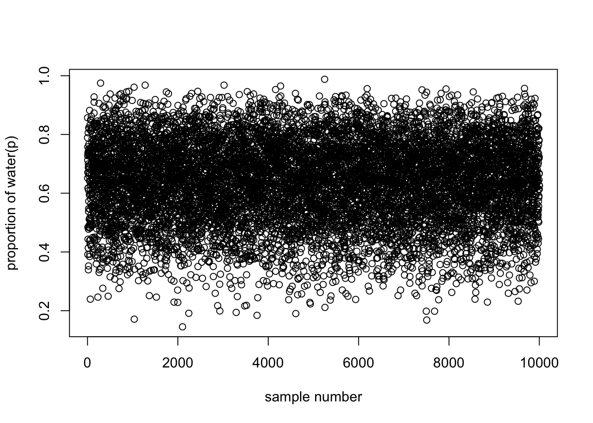
Code
# The workhorse here is sample, which randomly pulls values from a vector.
# The vector in this case is p_grid, the grid of parameter values.
# The probability of each value is given by posterior, which you computed just above.
dens(samples, xlab= "proportion of water(p)", ylab= "Density") 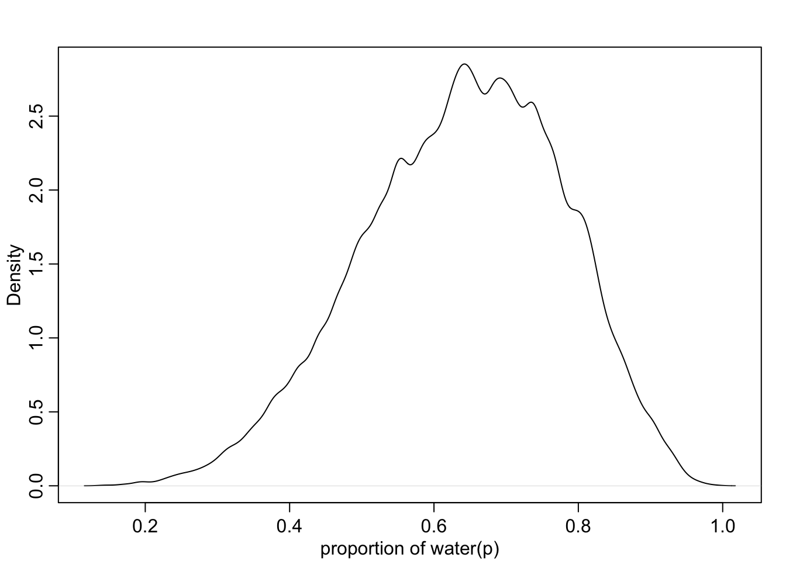
Code
# show density estimate computed from the samples
# You can see that the estimated density is very similar to ideal posterior you computed
# via grid approximation.
# Draw more samples
samples <- sample(p_grid, prob = posterior, size = 1e6, replace = TRUE)
plot(samples, xlab="sample number", ylab="proportion of water(p)")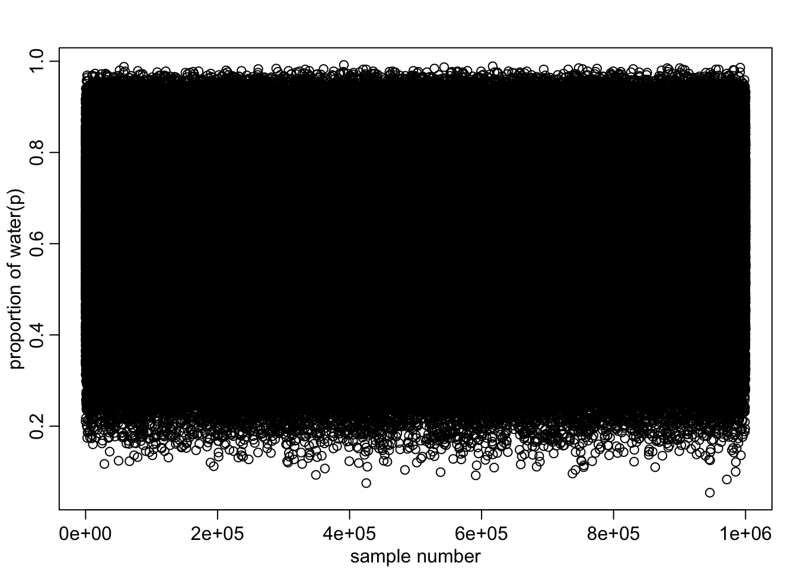
Code
dens(samples, xlab= "proportion of water(p)", ylab= "Density") Code
# If you draw even more samples, maybe 1e5 or 1e6, the density estimate will get more
# and more similar to the ideal.
# All you’ve done so far is crudely replicate the posterior density you had already computed.Sampling to summarize
It is necessary to summarize and interpret the posterior distribution. Exactly how it is summarized depends upon your purpose. But common questions include:
• How much posterior probability lies below some parameter value?
• How much posterior probability lies between two parameter values?
• Which parameter value marks the lower 5% of the posterior probability?
• Which range of parameter values contains 90% of the posterior probability?
• Which parameter value has highest posterior probability?
These simple questions can be usefully divided into questions about:
intervals of defined boundaries,
intervals of defined probability mass, and
point estimates.
Intervals of defined boundaries
Suppose I ask you for the posterior probability that the proportion of water is less than 0.5. Using the grid-approximate posterior, you can just add up all of the probabilities, where the corresponding parameter value is less than 0.5:
Code
# add up posterior probability where p < 0.5
sum( posterior[ p_grid < 0.5 ] )[1] 0.1718746So let’s see how to perform the same calculation, using samples from the posterior. This approach does generalize to complex models with many parameters, and so you can use it everywhere. All you have to do is similarly add up all of the samples below 0.5, but also divide the resulting count by the total number of samples. In other words, find the frequency of parameter values below 0.5:
Code
sum(samples < 0.5)/ 1e4[1] 17.2103Code
# The answer is the posterior probability below a parameter value of 0.5.And that’s nearly the same answer as the grid approximation provided, although your answer will not be exactly the same, because the exact samples you drew from the posterior will be different.
Using the same approach, you can ask how much posterior probability lies between 0.5 and 0.75:
Code
sum(samples > 0.5 & samples < 0.75)/ 1e4[1] 60.493Code
# So about 61% of the posterior probability lies between 0.5 and 0.75.Counting with sum
In the R code examples just above, I used the function sum to effectively count up how many samples fulfill a logical criterion. Why does this work? It works because R internally converts a logical expression, like samples < 0.5, to a vector of TRUE and FALSE results, one for each element of samples, saying whether or not each element matches the criterion.Go ahead and enter samples < 0.5 on the R prompt, to see this for yourself. Then when you sum this vector of TRUE and FALSE, R counts each TRUE as 1 and each FALSE as 0. So it ends up counting how many TRUE values are in the vector, which is the same as the number of elements in samples that match the logical criterion.
Intervals of defined mass
It is more common to see scientific journals reporting an interval of defined mass, usually known as a confidence interval. An interval of posterior probability, such as the ones we are working with, may instead be called a credible interval, although the terms may also be used interchangeably.
These posterior intervals report two parameter values that contain between them a specified amount of posterior probability, a probability mass. For this type of interval, it is easier to find the answer by using samples from the posterior than by using a grid approximation.
Code
# Suppose for example you want to know the boundaries of the lower 80% posterior probability.
# You know this interval starts at p = 0. To find out where it stops, think of the samples as data
# and ask where the 80th percentile lies:
quantile(samples, 0.8) 80%
0.7607608 Code
10% 90%
0.4484484 0.8128128 Code
# Intervals of this sort are called percentile intervals (PI).Percentile Intervals (PI)
Intervals which assign equal probability mass to each tail
Do a good job of communicating the shape of a distribution, as long as the distribution isn’t too asymmetrical
Not perfect for supporting inferences about which parameters are consistent with the data, see the figure and computation below:
Code
# This posterior is consistent with observing three waters in three tosses and a uniform (flat) prior.
# It is highly skewed, having its maximum value at the boundary, p = 1.
# You can compute it, via grid approximation, with:
# Create sample using grid approximation
p_grid <- seq(from = 0, to = 1, length.out = 1000)
prior <- rep(1, 1000)
likelihood <- dbinom(3, size = 3, prob = p_grid)
unstd.posterior <- prior * likelihood
posterior <- unstd.posterior/ sum(unstd.posterior)
samples2 <- sample(p_grid, size = 1e4, replace = TRUE, prob = posterior) # sample from posterior
# Compute the 50% percentile confidence interval from the samples with PI (part of rethinking)
PI(samples2, prob = 0.5) 25% 75%
0.7067067 0.9329329 Code
# This interval assigns 25% of the probability mass above and below the interval.
# So it provides the central 50% probability. But in this example, it ends up excluding
# the most probable parameter values, near p = 1. So in terms of describing
# the shape of the posterior distribution—which is really all these intervals are asked to do—
# the percentile interval can be misleading.
pi_50 <- PI(samples2, prob = 0.5)
# Create a data frame for plotting
df <- tibble(p_grid, posterior)
# Plot 50% PI
df %>%
ggplot(aes(x = p_grid, y = posterior)) +
geom_ribbon(data = df %>% filter(p_grid > pi_50[1] & p_grid < pi_50[2]),
aes(ymin = 0, ymax = posterior),
fill = "purple", alpha = 0.5) +
geom_line(color = "brown") +
labs(subtitle = '50% Percentile interval',
x = 'proportion of water (p)',
y = 'density') +
theme_bw()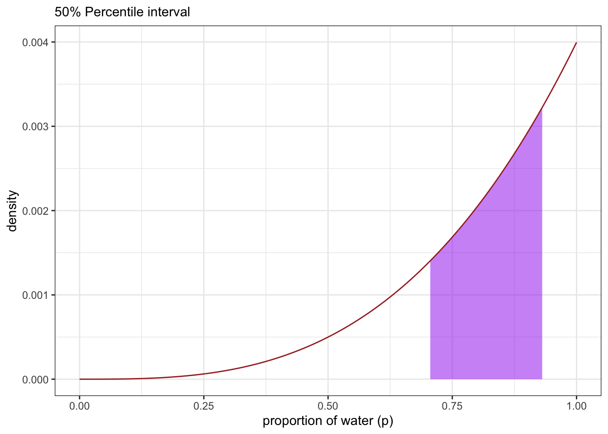
Code
# The posterior density here corresponds to a flat prior and observing
# three water samples in three total tosses of the globe.
# This interval assigns equal mass (25%) to both the left and right tail.
# As a result, it omits the most probable parameter value, p = 1.Highest Posterior Density Interval (HPDI)
The narrowest interval containing the specified probability mass
If you think about it, there must be an infinite number of posterior intervals with the same mass. But if you want an interval that best represents the parameter values most consistent with the data, then you want the densest of these intervals- the HPDI.
Code
# Create sample using grid approximation
p_grid <- seq(from = 0, to = 1, length.out = 1000)
prior <- rep(1, 1000)
likelihood <- dbinom(3, size = 3, prob = p_grid)
unstd.posterior <- prior * likelihood
posterior <- unstd.posterior/ sum(unstd.posterior)
samples2 <- sample(p_grid, size = 1e4, replace = TRUE, prob = posterior)
# Compute it from the samples with HPDI (part of rethinking)
HPDI(samples2, prob = 0.5) |0.5 0.5|
0.8418418 1.0000000 Code
# This interval captures the parameters with highest posterior probability,
# as well as being noticeably narrower:
# 0.16 in width rather than 0.23 for the percentile interval.
hpdi_50 <- HPDI(samples2, prob = 0.5)
# Create a data frame for plotting
df <- tibble(p_grid, posterior)
# Plot 50% PI
df %>%
ggplot(aes(x = p_grid, y = posterior)) +
geom_ribbon(data = df %>% filter(p_grid > hpdi_50[1] & p_grid < hpdi_50[2]),
aes(ymin = 0, ymax = posterior),
fill = "purple", alpha = 0.5) +
geom_line(color = "brown") +
labs(subtitle = '50% Percentile interval',
x = 'proportion of water (p)',
y = 'density') +
theme_bw()Code
# This interval finds the narrowest region with 50% of the posterior probability.
# Such a region always includes the most probable parameter value.HPDI vs. PI
The two types of intervals are very similar
-
HPDI has some advantages over the PI
- only look so different if the posterior distribution is highly skewed, otherwise nearly identical:
Code
# Compare HPDI and PI
# Create samples using observation six waters in nine tosses
p_grid <- seq(from = 0, to = 1, length.out = 1000)
prior <- rep(1, 1000)
likelihood <- dbinom(6, size = 9, prob = p_grid)
posterior <- prior * likelihood
posterior <- posterior/sum(posterior)
samples3 <- sample(p_grid, size = 1e4, replace = TRUE, prob = posterior)
# Compute 80% HPDI and PI from samples
HPDI(samples3, prob = 0.8) |0.8 0.8|
0.4694695 0.8338338 Code
PI(samples3, prob = 0.8) 10% 90%
0.4464464 0.8158158 Code
# Compute 95% HPDI and PI from samples
HPDI(samples3, prob = 0.95) |0.95 0.95|
0.3613614 0.8908909 Code
PI(samples3, prob = 0.95) 3% 98%
0.3493493 0.8808809 Code
# Add name for 80% HPDI and PI
hpdi_80 <- HPDI(samples3, prob = 0.8)
pi_80 <- PI(samples3, prob = 0.8)
# Create a data frame for plotting
df <- tibble(p_grid, posterior)
# Plot 80% HPDI and PI on the same graph
df %>%
ggplot(aes(x = p_grid, y = posterior)) +
geom_ribbon(data = df %>% filter(p_grid > hpdi_80[1] & p_grid < hpdi_80[2]),
aes(ymin = 0, ymax = posterior),
fill = "blue", alpha = 0.5) +
geom_ribbon(data = df %>% filter(p_grid > pi_80[1] & p_grid < pi_80[2]),
aes(ymin = 0, ymax = posterior),
fill = "green", alpha = 0.5) +
geom_line(color = "red") +
labs(subtitle = '80% HPDI and 80% PI',
x = 'proportion of water (p)',
y = 'density') +
theme_bw() 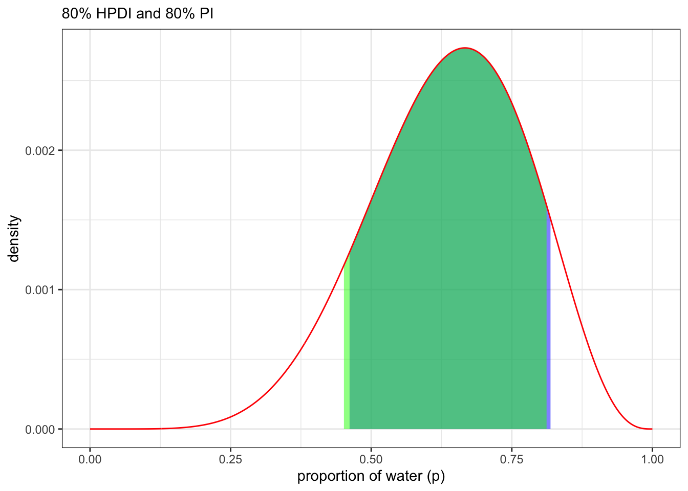
Code
# Add name for 95% HPDI and PI
hpdi_95 <- HPDI(samples3, prob = 0.95)
pi_95 <- PI(samples3, prob = 0.95)
# Plot 95% HPDI and PI on the same graph
df %>%
ggplot(aes(x = p_grid, y = posterior)) +
geom_ribbon(data = df %>% filter(p_grid > hpdi_95[1] & p_grid < hpdi_95[2]),
aes(ymin = 0, ymax = posterior),
fill = "brown", alpha = 0.5) +
geom_ribbon(data = df %>% filter(p_grid > pi_95[1] & p_grid < pi_95[2]),
aes(ymin = 0, ymax = posterior),
fill = "yellow", alpha = 0.5) +
geom_line(color = "grey") +
labs(subtitle = '95% HPDI and 95% PI',
x = 'proportion of water (p)',
y = 'density') +
theme_bw() Code
# When the posterior is bell shaped, it hardly matters which type of interval you use.- HPDI also has some disadvantages
- HPDI is more computationally intensive than PI
- HPDI suffers from greater simulation variance (it is sensitive to how many samples you draw from the posterior.)
Overall, if the choice of interval type makes a big difference, then you shouldn’t be using intervals
to summarize the posterior. Remember, the entire posterior distribution is the Bayesian estimate. It summarizes the relative plausibilities of each possible value of the parameter. Intervals of the
distribution are just helpful for summarizing it. If choice of interval leads to different
inferences, then you’d be better off just plotting the entire posterior distribution.
Point estimates
The Bayesian parameter estimate is precisely the entire posterior distribution, which is not a single number, but instead a function that maps each unique parameter value onto a plausibility value. So really the most important thing to note is that you don’t have to choose a point estimate. It’s hardly ever necessary.
Which point estimate to choose if we must report: Mean, Median or Mode (MAP)?
Code
# Use the globe tossing example where 3 water observations out of 3 tosses
p_grid <- seq(from = 0, to = 1, length.out = 1000)
prior <- rep(1, 1000)
likelihood <- dbinom(3, size = 3, prob = p_grid)
unstd.posterior <- prior * likelihood
posterior <- unstd.posterior/ sum(unstd.posterior)
samples2 <- sample(p_grid, size = 1e4, replace = TRUE, prob = posterior)
# Compute the MAP from posterior
# It is very common for scientists to report the parameter value with highest
# posterior probability, a maximum a posteriori (MAP) estimate.
p_grid[ which.max(posterior) ][1] 1Code
# Compute MAP using samples from posterior
chainmode( samples2, adj = 0.01) # rethinking[1] 0.9919231[1] 0.7994427[1] 0.8418418Code
median_value <- median(samples2)
# Create a data frame for plotting
df <- tibble(p_grid, posterior)
# Plot with lines for mean, median, and mode
df %>%
ggplot(aes(x = p_grid, y = posterior)) +
geom_line(color = "brown") +
geom_ribbon(aes(ymin = 0, ymax = posterior), fill = "yellow") +
geom_vline(xintercept = map_value, linetype = "dashed", color = "black") +
geom_vline(xintercept = mean_value, linetype = "dashed", color = "black") +
geom_vline(xintercept = median_value, linetype = "dashed", color = "black") +
annotate("text", x = map_value, y = max(df$posterior), label = round(map_value, 2),
vjust = -0.5, hjust = 0, color = "black") +
annotate("text", x = mean_value, y = max(df$posterior), label = round(mean_value, 2),
vjust = -0.5, hjust = 0, color = "black") +
annotate("text", x = median_value, y = max(df$posterior), label = round(median_value, 2),
vjust = -0.5, hjust = 0, color = "black") +
annotate("text", x = map_value, y = max(df$posterior), label = "mode",
vjust = -0.5, hjust = 2, color = "black", angle = 90) +
annotate("text", x = mean_value, y = max(df$posterior), label = "mean",
vjust = -0.5, hjust = 2, color = "black", angle = 90) +
annotate("text", x = median_value, y = max(df$posterior), label = "median",
vjust = -0.5, hjust = 2, color = "black", angle = 90) +
labs(subtitle = 'Posterior with Mean, Median, and Mode (MAP)',
x = 'proportion of water (p)',
y = 'density') +
theme_bw() 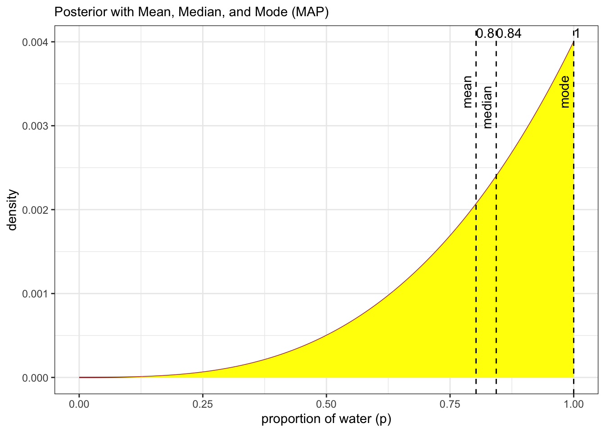
The value for median, mean, and mode (MAP) are different. In this case, use a loss function to estimate the cost associated with using any particular point estimate.
Using loss function
Different loss functions imply different point estimates
-
The loss is proportional to the distance of your decision from the true value
- Loss
d - p, where d is the decision and p is the correct answer or true value
- Loss
The parameter value that maximizes expected winnings (minimizes expected loss) is the median of the posterior distribution
Calculating expected loss for any given decision means using the posterior to average over our uncertainty in the true value (unknown in most cases)
In order to decide upon a point estimate, a single-value summary of the posterior distribution, we need
to pick a loss function. Different loss functions nominate different point estimates. The two most
common examples are the absolute loss (d - p), which leads to the median as the point estimate, and the quadratic loss (d − p)2, which leads to the posterior mean (mean(samples)) as the point estimate. When
the posterior distribution is symmetrical and normal-looking, then the median and mean converge to the same point.
Code
[1] 0.3128752Code
# repeating this calculation for every possible decision, using the function sapply
loss <- sapply( p_grid , function(d) sum( posterior*abs( d - p_grid ) ) )
# Now the symbol loss contains a list of loss values, one for each possible
# decision, corresponding the values in p_grid
# Find the parameter value that minimizes the loss
p_grid[ which.min(loss)][1] 0.8408408Code
# And this is actually the posterior median, the parameter value that splits
# the posterior density such that half of the mass is above it
# and half below it
# Check with posterior median
median(samples2)[1] 0.8418418Code
# The answer match with the value that minimizes the loss
# Plot the loss function
# Find x, y values for minimum loss
min_loss_x <- p_grid[which.min(loss)]
min_loss_y <- loss[which.min(loss)]
# Create data frame and plot
df <- tibble(p_grid, loss, posterior)
df %>%
ggplot(aes(x = p_grid)) +
geom_ribbon(aes(ymin = 0, ymax = loss), fill = 'grey75') +
geom_point(aes(x = min_loss_x, y = min_loss_y), size = 3, shape = 21, color = 'black') +
geom_vline(xintercept = map_value, linetype = "dashed", color = "grey") +
geom_vline(xintercept = mean_value, linetype = "dashed", color = "grey") +
geom_vline(xintercept = median_value, linetype = "dashed", color = "grey") +
annotate("text", x = map_value, y = max(df$posterior), label = "mode",
vjust = -0.5, hjust = -5, color = "black", angle = 90) +
annotate("text", x = mean_value, y = max(df$posterior), label = "mean",
vjust = -0.5, hjust = -5, color = "black", angle = 90) +
annotate("text", x = median_value, y = max(df$posterior), label = "median",
vjust = -0.5, hjust = -5, color = "black", angle = 90) +
annotate("text", x = min_loss_x, y = min_loss_y, label = "value that \nminimizes loss",
vjust = 1.2, hjust = 0.5, color = "black") +
labs(x = 'decision',
y = 'expected proportional loss') +
theme(panel.grid = element_blank())Code
# Expected loss under the rule that loss is proportional to absolute distance
# of decision (horizontal axis) from the true value. The point marks the value
# of p that minimizes the expected loss, the posterior median.Sampling to simulate prediction
Samples from posterior ease simulation of the model’s implied observations. Generating implied observations from a model is useful for at least four distinct reasons.
Model checking- to check whether the fit worked correctly and to investigate model behavior
Software validation- simulate observations under a known model and then attempt to recover the values of the parameters the data were simulated under
Research design- simulate observations from hypothesis to evaluate whether the research design can be effective
Forecasting- can be useful as applied prediction, but also for model criticism and revision
Dummy data (simulated data)
Likelihood functions work in both directions. Given a realized observation, the likelihood function says how plausible the observation is. And given only the parameters, the likelihood defines a distribution of possible observations that we can sample from, to simulate observation. In this way, Bayesian models are always generative, capable of simulating predictions.
With the globe tossing model, the dummy data arises from a binomial likelihood:
where w is an observed count of “water” and n is the number of tosses. Suppose n = 2, two tosses of the globe. Then there are only three possible observations: 0 water, 1 water, 2 water. You can quickly compute the likelihood of each, for any given value of p. Let’s use p = 0.7, which is just about the true proportion of water on the Earth:
Code
dbinom(0:2, size = 2, prob = 0.7)[1] 0.09 0.42 0.49Code
# 9% chance of observing w = 0, a 42% chance of w = 1, and a 49% chance of w = 2Now we’re going to simulate observations, using these likelihoods. So a single dummy data observation of w can be sampled with:
Code
rbinom(1, size = 2, prob = 0.7)[1] 2The “r” in rbinom stands for “random.” It can also generate more than one simulation at a time. A set of 10 simulations can be made by:
Code
rbinom(10, size = 2, prob = 0.7) [1] 2 1 2 1 0 2 1 2 2 0Let’s generate 100,000 dummy observations, just to verify that each value (0, 1, or 2) appears in proportion to its likelihood:
dummy_w
0 1 2
0.08988 0.42128 0.48884 Code
# values are very close to the likelihood values calculated aboveNow let’s simulate the same sample size as before, 9 tosses.
dummy_w_9
0 1 2 3 4 5 6 7 8 9
0.00001 0.00044 0.00402 0.02101 0.07384 0.17137 0.26558 0.26864 0.15557 0.03952 Code
simplehist(dummy_w_9, xlab = "dummy water count")Code
# Distribution of simulated sample observations from 9 tosses of the globe.
# These samples assume the proportion of water is 0.7.
# Notice that most of the time the expected observation does not contain water
# in its true proportion, 0.7. That’s the nature of observation: There is a
# one-to-many relationship between data and data-generating processes.Test with sample size = 40 and probability p = 0.5
Code
dummy_w_40 <- rbinom(1e5, size = 40, prob = 0.5)
simplehist(dummy_w_40, xlab = "dummy water count")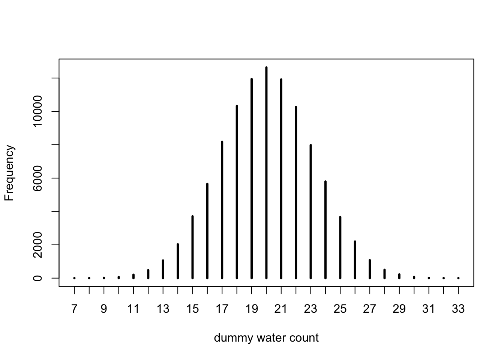
Sampling distribution
In this book, inference about parameters is never done directly through a sampling distribution. The posterior distribution is not sampled, but deduced logically. Then samples can be drawn from the posterior, to aid in inference. In neither case is “sampling” a physical act. In both cases, it’s just a mathematical device and produces only small world numbers.
Model checking
Ensures the model fitting worked correctly
Evaluate the adequacy of a model for some purpose
Did the software work?
Use retrodictions (implied predictions) to check whether the software worked- by checking for correspondence between implied predictions and the data used to fit the model
An exact match is neither expected nor desired, but when there is no correspondence at all, it probably means the software did something wrong.
There is no way to really be sure that software works correctly. Even when the retrodictions correspond to the observed data, there may be subtle mistakes.
Is the model adequate?
Look for aspects of the data that are not well described by the model’s expectations
The goal is not to test whether the model’s assumptions are “true,” because all models are false
The goal is to assess exactly how the model fails to describe the data, as a path towards model comprehension, revision, and improvement
Basic model checks using simulated observations for the globe tossing model
The implied predictions of the model are uncertain in two ways, and we’d like to propagate the parameter uncertainty as we evaluate the implied predictions, i.e. get a posterior predictive distribution.
- Observation uncertainty
- There is uncertainty in the predicted observations, because even if you know p with certainty, you won’t know the next globe toss with certainty (unless p = 0 or p = 1).
- Uncertainty about p
- Since there is uncertainty about p, there is uncertainty about everything that depends upon p.
- The uncertainty in p will interact with the sampling variation, when we try to assess what the model tells us about outcomes.
Posterior predictive distribution
For each possible value of the parameter p, there is an implied distribution of outcomes. So if you were to compute the sampling distribution of outcomes at each value of p, then you could average all of these prediction distributions together, using the posterior probabilities of each value of p, to get a posterior predictive distribution.
The sampling distributions for all values of p are combined, using the posterior probabilities to compute the weighted average frequency of each possible observation.
It incorporates all of the uncertainty embodied in the posterior distribution for the parameter p. As a result, it is honest- the distribution may be narrower (overconfidence) if we discard uncertainty about the parameters.
Calculate posterior predictive distribution
Code
# To simulate predicted observations for a single value of p, say p = 0.6,
# you can use rbinom to generate random binomial samples:
w <- rbinom(1e4, size = 9, prob = 0.6)
simplehist(w, xlab = "number of water samples")Code
# All you need to propagate parameter uncertainty into these predictions is
# replace the value 0.6 with samples from the posterior:
w <- rbinom(1e4, size = 9, prob = samples)
simplehist(w, xlab = "number of water samples", main = "PPD")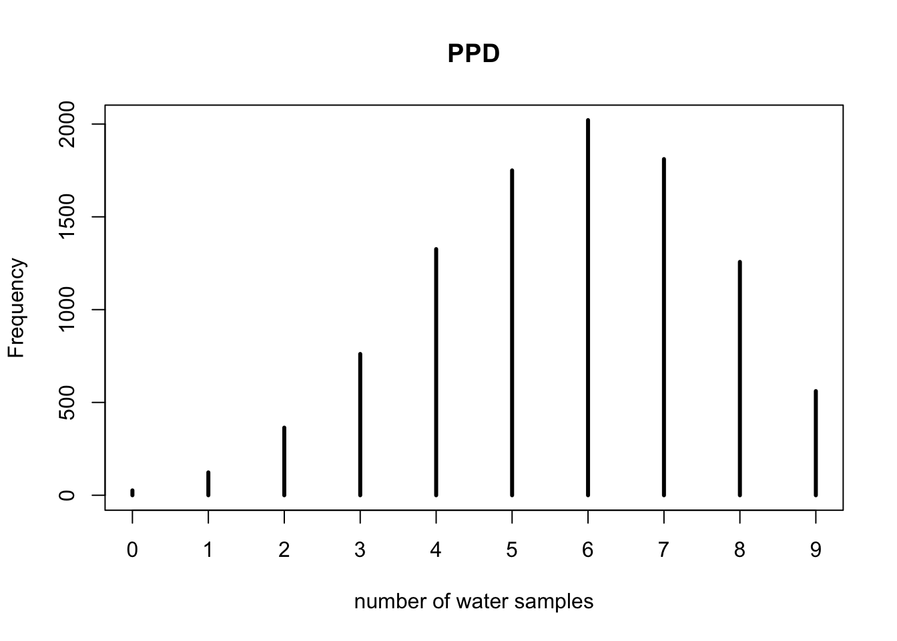
Code
# For each sampled value, a random binomial observation is generated.
# Since the sampled values appear in proportion to their posterior probabilities,
# the resulting simulated observations are averaged over the posterior. In your own modeling, you’ll have to imagine aspects of the data that are relevant in your context, for your purposes, i.e. inspect the data in new ways, e.g. correlation between samples that may be bias.
Practice
Easy
3E1. How much posterior probability lies below p = 0.2?
Code
sum(samples < 0.2)/ 1e4[1] 5e-04Code
# 5 x 10^-4^ % of posterior probability lies below p = 0.2.3E2. How much posterior probability lies above p = 0.8?
Code
sum(samples > 0.8)/ 1e4[1] 0.1219Code
# 12% of posterior probability lies between p = 0.2 and p = 0.83E3. How much posterior probability lies between p = 0.2 and p = 0.8?
Code
sum(samples > 0.2 & samples < 0.8)/ 1e4[1] 0.8776Code
# 88% of posterior probability lies between p = 0.2 and p = 0.83E4. 20% of the posterior probability lies below which value of p?
3E5. 20% of the posterior probability lies above which value of p?
Code
# 20% is the quantile in the upper end of distribution,
# hence we find quantile value below 80%
quantile(samples, 0.8) 80%
0.7618962 Code
# 20% of the posterior probability lies above p = 0.763E6. Which values of p contain the narrowest interval equal to 66% of the posterior probability?
Code
HPDI(samples, 0.66) |0.66 0.66|
0.5138514 0.7886789 Code
# p interval of 0.5-0.8 contain the narrowest interval equal to 66% of
# the posterior probability3E7. Which values of p contain 66% of the posterior probability, assuming equal posterior probability both below and above the interval?
Code
PI(samples, 0.66) 17% 83%
0.4972327 0.7745775 Medium
3M1. Suppose the globe tossing data had turned out to be 8 water in 15 tosses. Construct the posterior distribution, using grid approximation. Use the same flat prior as before.
Code
3M2. Draw 10,000 samples from the grid approximation from above. Then use the samples to calculate the 90% HPDI for p.
Code
p_grid <- seq(from = 0, to = 1, length.out = 10000)
prior <- rep(1, 10000)
likelihood <- dbinom(8, size = 15, prob = p_grid)
unstd.posterior <- likelihood * prior
posterior <- unstd.posterior/ sum(unstd.posterior)
set.seed(101)
sample3m2 <- sample(p_grid, size = 1e4, replace = TRUE, prob = posterior)
# Calculate 90% HPDI for p
HPDI(sample3m2, 0.9) |0.9 0.9|
0.3250325 0.7145715 3M3. Construct a posterior predictive check for this model and data. This means simulate the distribution of samples, averaging over the posterior uncertainty in p. What is the probability of observing 8 water in 15 tosses?
Code
w <- rbinom(1e4, size = 15, prob = sample3m2)
simplehist(w, xlab= "number of water observations")Code
sum(w == 8)/1e4[1] 0.14423M4. Using the posterior distribution constructed from the new (8/15) data,now calculate the probability of observing 6 water in 9 tosses.
w
0 1 2 3 4 5 6 7 8 9
0.0057 0.0293 0.0733 0.1422 0.1941 0.2010 0.1752 0.1169 0.0515 0.0108 Code
# Probability of 6w in 9n is 18%
# Generate the answer only
table(w == 6)/ 1e4
FALSE TRUE
0.8248 0.1752 3M5. Start over at 3M1, but now use a prior that is zero below p = 0.5 and a constant above p = 0.5. This corresponds to prior information that a majority of the Earth’s surface is water. Repeat each problem above and compare the inferences. What difference does the better prior make? If it helps, compare inferences (using both priors) to the true value p = 0.7.
For 3M1 and 3M3
Code
# Set up a 1x2 layout for side-by-side plots
par(mfrow = c(1, 2))
# First plot
p_grid <- seq(from = 0, to = 1, length.out = 10000)
prior <- rep(1, 10000)
likelihood <- dbinom(8, size = 15, prob = p_grid)
unstd.posterior <- likelihood * prior
posterior <- unstd.posterior / sum(unstd.posterior)
plot(posterior ~ p_grid, type = "l", col = "blue", lty = 1,
xlab = "Probability of water", ylab = "Posterior distribution",
main = "Prior = 1")
# Second plot
w <- rbinom(1e4, size = 15, prob = sample3m2)
simplehist(w, col = "black", lty = 1,
xlab = "Count of water observations", ylab = "Frequency",
main = "Prior = 1")Code
# Set up a 1x2 layout for side-by-side plots
par(mfrow = c(1, 2))
# Third plot
p_grid <- seq(from = 0, to = 1, length.out = 10000)
prior <- ifelse(p_grid < 0.5, 0, 1)
likelihood <- dbinom(8, size = 15, prob = p_grid)
unstd.posterior <- likelihood * prior
posterior <- unstd.posterior / sum(unstd.posterior)
set.seed(102)
sample3m5 <- sample(p_grid, prob = posterior, size = 1e4, replace = TRUE)
plot(posterior ~ p_grid, type = "l", col = "red", lty = 1,
xlab = "Probability of water", ylab = "Posterior distribution",
main = "Prior = 0 or 1")
# Fourth plot
w <- rbinom(1e4, size = 15, prob = sample3m5)
simplehist(w, col = "black", lty = 1,
xlab = "Count of water observations", ylab = "Frequency",
main = "Prior = 0 or 1")Code
# When the prior becomes more informative, there is a mismatch between prediction and observed dataFor 3M2
Code
# Calculate 90% HPDI for p when prior = 1
HPDI(sample3m2, 0.9) |0.9 0.9|
0.3250325 0.7145715 Code
# Calculate 90% HPDI for p when prior = 0 or 1
HPDI(sample3m5, 0.9) |0.9 0.9|
0.5000500 0.7139714 Code
# narrower interval for 90% HPDI when prior is more informativeFor 3M4
Code
FALSE TRUE
0.8264 0.1736 Code
FALSE TRUE
0.8264 0.1736 Code
# No difference in probability percentage Hard
3H1. Using grid approximation, compute the posterior distribution for the probability of a birth being a boy. Assume a uniform prior probability. Which parameter value maximizes the posterior probability?
Code
[1] 111Code
# Compute posterior distribution for a birth being a boy
p_grid <- seq(from = 0, to = 1, length.out = 200)
prior <- rep(1, 200)
likelihood <- dbinom(111, size = 200, prob = p_grid)
unstd.posterior <- prior * likelihood
posterior <- unstd.posterior/ sum(unstd.posterior)
# Plot posterior with abline
plot(posterior~p_grid, type = "l")
abline(v = 0.5, lty = 2, col = "red")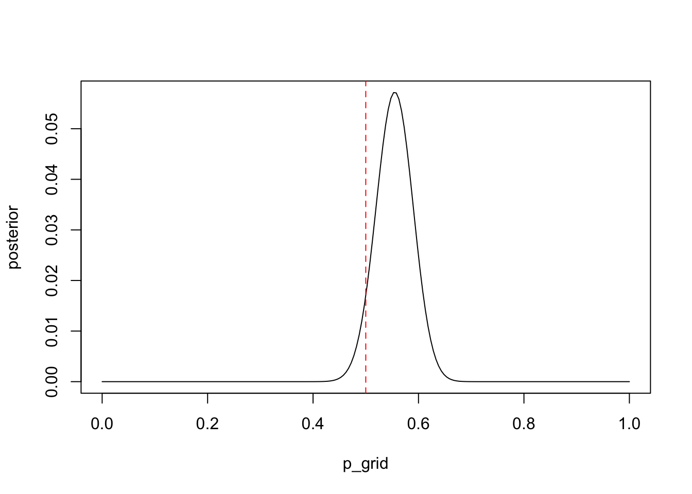
Code
# Find parameter value that maximizes posterior probability
p_grid[which.max(posterior)][1] 0.5527638Code
Code
[1] 0.5527638Code
# Calculate mean value
mean_value <- mean(sample3h1)
mean_value[1] 0.5547302Code
# Calculate median value
median_value <- median(sample3h1)
median_value[1] 0.5527638Code
# Calculate loss
loss <- sapply(p_grid , function(d) sum(posterior * abs(d - p_grid)))
# Plot the loss function
# Find x, y values for minimum loss
min_loss_x <- p_grid[which.min(loss)]
min_loss_y <- loss[which.min(loss)]
# Create data frame and plot
df <- tibble(p_grid, loss, posterior)
df %>%
ggplot(aes(x = p_grid)) +
geom_ribbon(aes(ymin = 0, ymax = loss), fill = 'lightblue') +
geom_point(aes(x = min_loss_x, y = min_loss_y), size = 3, shape = 21, color = 'black') +
geom_vline(xintercept = map_value, linetype = "dashed", color = "grey") +
geom_vline(xintercept = mean_value, linetype = "dashed", color = "grey") +
geom_vline(xintercept = median_value, linetype = "dashed", color = "grey") +
annotate("text", x = map_value, y = max(df$posterior), label = "mode",
vjust = -0.5, hjust = -3, color = "black", angle = 90) +
annotate("text", x = mean_value, y = max(df$posterior), label = "mean",
vjust = -0.5, hjust = -5, color = "black", angle = 90) +
annotate("text", x = median_value, y = max(df$posterior), label = "median",
vjust = -0.5, hjust = -5, color = "black", angle = 90) +
annotate("text", x = min_loss_x, y = min_loss_y, label = "value that minimizes loss",
vjust = 1.6, hjust = 0.5, color = "black") +
labs(x = 'parameter value',
y = 'expected proportional loss') +
theme(panel.grid = element_blank())Code
# The parameter value that maximizes probability is 0.553 3H2. Using the sample function, draw 10,000 random parameter values from the posterior distribution you calculated above. Use these samples to estimate the 50%, 89%, and 97% highest posterior density intervals.
Code
# Calculate 50% HPDI
HPDI(sample3h1, prob = 0.5) |0.5 0.5|
0.5226131 0.5678392 Code
# Calculate 89% HPDI
HPDI(sample3h1, prob = 0.89) |0.89 0.89|
0.5025126 0.6080402 Code
# Calculate 97% HPDI
HPDI(sample3h1, prob = 0.97) |0.97 0.97|
0.4824121 0.6331658 3H3. Use rbinom to simulate 10,000 replicates of 200 births. You should end up with 10,000 numbers, each one a count of boys out of 200 births. Compare the distribution of predicted numbers of boys to the actual count in the data (111 boys out of 200 births). There are many good ways to visualize the simulations, but the dens command (part of the rethinking package) is probably the easiest way in this case. Does it look like the model fits the data well? That is, does the distribution of predictions include the actual observation as a central, likely outcome?
Code
# Use rbinom to simulate 10,000 replicates of 200 births
replicate_w <- rbinom(10000, size = 200, prob = sample3h1)
# Compare predictive posterior distribution and actual count using dens function
dens(replicate_w, adj = 0.1, col = "darkgreen",
main = "PPD with 200 grids, 1e4 samples, 1e4 observations")
abline(v = 111, col = "red")Code
# PPD is not an exact fit- is that because i used 200 grids only?
# Try increasing grid size
p_grid <- seq(from = 0, to = 1, length.out = 10000)
prior <- rep(1, 10000)
likelihood <- dbinom(111, size = 200, prob = p_grid)
unstd.posterior <- likelihood * prior
posterior_w <- unstd.posterior/ sum(unstd.posterior)
set.seed(103)
sample_grid <- sample(p_grid, size = 10000, replace = TRUE, prob = posterior_w)
replicate_w1 <- rbinom(10000, size = 200, prob = sample_grid)
dens(replicate_w1, adj = 0.1, col = "darkgreen",
main = "PPD with 1e4 grids, 1e4 samples, 1e4 observations")
abline(v = 111, col = "red")Code
# Try with codes from answer key
data(homeworkch3)
boys <- sum(birth1) + sum(birth2)
p <- seq( from=0 , to=1 , length.out=1000 )
prior <- rep(1,length(p))
likelihood <- dbinom( boys , size=200 , prob=p )
posterior <- likelihood * prior
posterior <- posterior / sum(posterior)
p.samples <- sample( p , size=10000 , replace=TRUE , prob=posterior )
bsim <- rbinom( 10000 , size=200 , prob=p.samples )
dens( bsim , adj=0.1, main = "Given answer: 1000 grids, 1e4 samples, 1e4 observations")
abline( v=sum(birth1)+sum(birth2) , col="red" )Code
# Can't get the exact fit like the graph in answer key even when I just c/p the codes.
# Try increasing sample with 1e5 grids
p_grid <- seq(from = 0, to = 1, length.out = 1e5)
prior <- rep(1, 1e5)
likelihood <- dbinom(111, size = 200, prob = p_grid)
unstd.posterior <- likelihood * prior
posterior_w <- unstd.posterior/ sum(unstd.posterior)
set.seed(10)
sample_grid <- sample(p_grid, size = 1e5, replace = TRUE, prob = posterior_w)
replicate_w1 <- rbinom(1e5, size = 200, prob = sample_grid)
dens(replicate_w1, adj = 0.1, col = "darkgreen",
main = "PPD with 1e5 grids, 1e5 samples, 1e5 observations")
abline(v = 111, col = "red")Code
# Try with 1e4 observations to see difference
p_grid <- seq(from = 0, to = 1, length.out = 1e5)
prior <- rep(1, 1e5)
likelihood <- dbinom(111, size = 200, prob = p_grid)
unstd.posterior <- likelihood * prior
posterior_w <- unstd.posterior/ sum(unstd.posterior)
set.seed(10)
sample_grid <- sample(p_grid, size = 1e5, replace = TRUE, prob = posterior_w)
replicate_w1 <- rbinom(1e4, size = 200, prob = sample_grid)
dens(replicate_w1, adj = 0.1, col = "darkgreen",
main = "PPD with 1e5 grids, 1e5 samples, 1e4 observations")
abline(v = 111, col = "red")Code
# All graphs have slightly different peaks. Is it because of variations in
# grid size/ sample size/ observation size or variations in draw?
# But PPDs' peaks are within ± 3 of actual counts. This only shows the fit of data-shows model works
# Doesn't show if a model is good or not- whether reflect the real world.
# So, it doesn't matter if slightly different fit, I think. 3H4. Now compare 10,000 counts of boys from 100 simulated first borns only to the number of boys in the first births, birth1. How does the model look in this light?
Code
# Calculate posterior for first born boys
first_born_boy <- sum(birth1)
p_grid_3h4 <- seq(from = 0, to = 1, length.out = 1000)
prior_3h4 <- rep(1, 1000)
likelihood_3h4 <- dbinom(first_born_boy, size = 100, prob = p_grid_3h4)
unstd.posterior_3h4 <- prior_3h4 * likelihood_3h4
posterior_3h4 <- unstd.posterior_3h4/ sum(unstd.posterior_3h4)
# Create samples
set.seed(111)
sample_3h4 <- sample(p_grid_3h4, size = 1e4, replace = TRUE, prob = posterior_3h4)
# Create observations
w_3h4 <- rbinom(1e4, size = 100, prob = sample_3h4)
# Compare PPD with actual count
dens(w_3h4, adj = 0.1, col = "black")
abline(v = first_born_boy, col = "green")Code
# Let's try increasing the grid to 1e5
p_grid_3h4 <- seq(from = 0, to = 1, length.out = 1e5)
prior_3h4 <- rep(1, 1e5)
likelihood_3h4 <- dbinom(first_born_boy, size = 100, prob = p_grid_3h4)
unstd.posterior_3h4 <- prior_3h4 * likelihood_3h4
posterior_3h4 <- unstd.posterior_3h4/ sum(unstd.posterior_3h4)
# Create samples
set.seed(111)
sample_3h4 <- sample(p_grid_3h4, size = 1e4, replace = TRUE, prob = posterior_3h4)
# Create observations
w_3h4 <- rbinom(1e4, size = 100, prob = sample_3h4)
# Compare PPD with actual count
dens(w_3h4, adj = 0.1, col = "black")
abline(v = first_born_boy, col = "green")Code
Code
# So, a new posterior with new conditions- changes in number of actual
# counts and total counts- will make the model fit the data. I think this is
# caused by simulation not exactly halving the observations, i.e., we gave
# no command that the observation is 51 for 100.
# Given answer: Not bad, but not right on center now. The frequency of boys
# among first borns is a little less than the model tends to predict.
# The model doesn’t have a problem accounting for this variation though,
# as the red line is well within density of simulated data.3H5. The model assumes that sex of first and second births are independent. To check this assumption, focus now on second births that followed female first borns. Compare 10,000 simulated counts of boys to only those second births that followed girls. To do this correctly, you need to count the number of first borns who were girls and simulate that many births, 10,000 times. Compare the counts of boys in your simulations to the actual observed count of boys following girls. How does the model look in this light? Any guesses what is going on in these data?
Code
# Count number of second born boys when first borns are girl
second_boy_first_girl <- sum(birth1 == 0 & birth2 == 1)
# Count the number of first born girls
first_girl <- sum(birth1 == 0)
# Simulate observations for total number of second births when first births are girls
w_3h5 <- rbinom( 10000 , size = first_girl , prob = sample3h1 )
dens(w_3h5, adj = 0.1, col = "black")
abline(v = second_boy_first_girl , col = "green" )Code
# The sex of first and second birth may not be independent.
# Run codes in given answer
# Create a new vector of birth 2 when birth 1 is 0
b01 <- birth2[birth1==0]
# Simulate 1e4 observations for new vector size using samples from model posterior
b01sim <- rbinom( 10000 , size=length(b01) , prob=p.samples )
dens(b01sim,adj=0.1)
# Add a line for actual count of second born boys when first borns are girls
abline( v=sum(b01) , col="red" )Chapter 4: Linear Models
Under a probability interpretation, which is necessary for Bayesian work, linear regression uses a Gaussian (normal) distribution to describe our golem’s uncertainty about some measurement of interest.
Why normal distributions are normal
A thousand friends line up on the halfway line of a soccer field. Each flips a coin 16 times- moves a step to the left if the coin comes up head and to the right if tail. Then, measure the distance of each person from the halfway line. “The distances will be distributed in approximately normal, or Gaussian, fashion. This is true even though the underlying distribution is binomial. It does this because there are so many more possible ways to realize a sequence of left-right steps that sums to zero. There are slightly fewer ways to realize a sequence that ends up one step left or right of zero, and so on, with the number of possible sequences declining in the characteristic bell curve of the normal distribution.”
Normal by addition
Simulate the above experiment in R:
Code
set.seed(01)
# To simulate this, we generate for each person a list of 16 random numbers between −1 and 1.
# These are the individual steps. Then we add these steps together to get the position after 16 steps.
# Then we need to replicate this procedure 1000 times.
pos <- replicate(1000, sum(runif(16, -1, 1)))
# runif to generate random deviates following the uniform distribution
hist(pos)Code
# Plot the density for 4 steps, 8 steps, and 16 steps
par(mfrow = c(1, 4))
# Plot for 4 steps
pos4 <- replicate(1000, sum(runif(4, -1, 1)))
dens(pos4, main = "4 steps", norm.comp = TRUE, col = "blue")
# Plot for 8 steps
pos8 <- replicate(1000, sum(runif(8, -1, 1)))
dens(pos8, main = "8 steps", norm.comp = TRUE, col = "blue")
# Plot for 16 steps
dens(pos, main = "16 steps", norm.comp = TRUE, col = "blue")
# Plot for 100 steps
pos100 <- replicate(1000, sum(runif(100, -1, 1)))
dens(pos100, main = "100 steps", norm.comp = TRUE, col = "blue")Code
# The more steps are taken, the closer the match between the real empirical distribution
# of positions and the ideal normal distribution.
# After 16 steps, it has already taken on a familiar “bell” curve of the Gaussian distribution
# emerging from the randomness, i.e., the distribution of positions is stabilizing on the Gaussian.
# But they all look bell shape to me. Why addition should result in a bell curve of sums?
Whatever the average value of the source distribution, each sample from it can be thought of as a fluctuation from that average value.
When we begin to add these fluctuations together, they also begin to cancel one another out. A large positive fluctuation will cancel a large negative one.
The more terms in the sum, the more chances for each fluctuation to be canceled by another, or by a series of smaller ones in the opposite direction. So eventually the most likely sum, in the sense that there are the most ways to realize it, will be a sum in which every fluctuation is canceled by another, a sum of zero (relative to the mean).
It doesn’t matter what shape the underlying distribution possesses- uniform or anything else. Depending upon the underlying distribution, the convergence might be slow (often rapid), but it will be inevitable.
Normal by multiplication
Simulate growth multiplication of an organism:
Code
# Sample 12 random numbers between 1.0 and 1.1, each representing a proportional
# increase in growth. Thus 1.0 means no additional growth and 1.1 means a 10% increase.
# The product of all 12 is computed and returned as output.
# prod returns the product of all the values present in its arguments.
prod(1 + runif(12, 0, 0.1)) [1] 2.317942Code
Code
# Small effects that multiply together are approximately additive, and so
# they also tend to stabilize on Gaussian distributions. For example, if there
# are two loci with alleles increasing growth by 10% each, the product is: 1.1 × 1.1 = 1.21
# The smaller the effect of each locus, the better this additive approximation will be.
# Verify this effect by comparing big vs. small increase in percent value
big <- replicate(10000, prod(1 + runif(12, 0, 0.5)))
small <- replicate(10000, prod(1 + runif(12, 0, 0.01)))
# Plot the distributions
par(mfrow = c(1, 2))
dens(big, col = "blue", norm.comp = TRUE, main = "Big effect")
dens(small, col = "red", norm.comp = TRUE, main = "Small effect")Code
# The interacting growth deviations, as long as they are sufficiently small,
# converge to a Gaussian distribution- extends well beyond purely additive interactions.Normal by log-multiplication
Large deviates that are multiplied together do not produce Gaussian distributions, but they do tend to produce Gaussian distributions on the log scale. For example:
Code
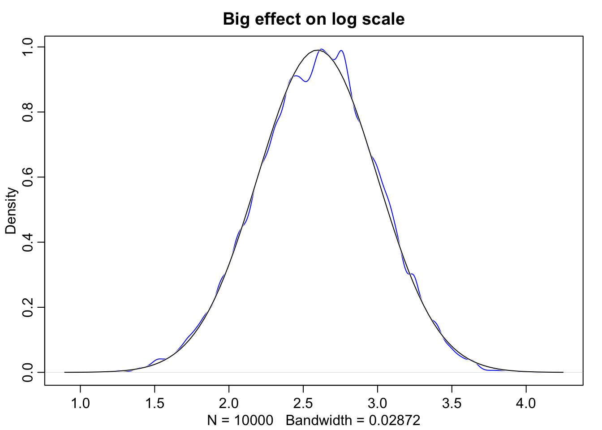
Code
# We get the Gaussian distribution back, because adding logs is equivalent to multiplying
# the original numbers. So even multiplicative interactions of large deviations can produce
# Gaussian distributions, once we measure the outcomes on the log scale. Using Guassian distributions
The justifications for using the Gaussian distribution- as a skeleton for hypotheses, building up models of measurements as aggregations of normal distributions- fall into two broad categories:
- ontological justification
- Repeatedly adding finite fluctuations results in a distribution of sums that have shed all information about the underlying process, aside from mean and spread. One consequence of this is that statistical models based on Gaussian distributions cannot reliably identify micro-process. But it also means that these models can do useful work, even when they cannot identify process.
- epistemological justification
- Gaussian distribution is the most natural expression of our state of ignorance, because if all we are willing to assume is that a measure has finite variance, the Gaussian distribution is the shape that can be realized in the largest number of ways and does not introduce any new assumptions. It is the least surprising and least informative assumption to make. In this way, the Gaussian is the distribution most consistent with our assumptions. Or rather, it is the most consistent with our golem’s assumptions.
Gaussian distribution
- The probability density of some value y, given a Gaussian (normal) distribution with mean
and standard deviation
, is:
(y −
The value y in the Gaussian distribution can be any continuous value, as Gussian is a continuous distribution.
The binomial, in contrast, requires integers. Probability distributions with only discrete outcomes, like the binomial, are usually called probability mass functions and denoted Pr. Continuous ones like the Gaussian are called probability density functions, denoted with p or just plain old f.
For mathematical reasons, probability densities, but not masses, can be greater than 1. For example:
Code
# Calculate p(0|0, 0.1)
dnorm(0, 0, 0.1)[1] 3.989423Code
# Probability density is the rate of change in cumulative probability.
# So where cumulative probability is increasing rapidly, density can easily exceed 1.
# But if we calculate the area under the density function, it will never exceed 1.
# Such areas are also called probability mass.- The Gaussian distribution is routinely seen without
. The parameter
):
A language for describing models
First, we recognize a set of measurements that we hope to predict or understand, the outcome variable or variables.
For each of these outcome variables, we define a likelihood distribution that defines the plausibility of individual observations. In linear regression, this distribution is always Gaussian.
Then we recognize a set of other measurements that we hope to use to predict or understand the outcome. Call these predictor variables.
We relate the exact shape of the likelihood distribution—its precise location and variance and other aspects of its shape, if it has them—to the predictor variables. In choosing a way to relate the predictors to the outcomes, we are forced to name and define all of the parameters of the model.
Finally, we choose priors for all of the parameters in the model. These priors define the initial information state of the model, before seeing the data.
- After all these decisions are made, summarize the model:
outcomei = outcome variable for the ith observation
Normal(,
) = normal distribution with mean
and standard deviation
= mean (
) of the normal distribution for the ith observation
= the product of a coefficient (
) and a predictor variable (predictori)
Re-describing the globe tossing model
The model:
w = observed count of water samples
n = total number of samples
p = proportion of water on actual globe
The count w is distributed binomially with sample size n and probability p.
The prior for p is assumed to be uniform between zero and one.
In these models, the first line defines the likelihood function used in Bayes’ theorem.
The other line defines priors. Both of the lines in this model are stochastic, as
indicated by the ∼ symbol. A stochastic relationship is just a mapping of a variable
or parameter onto a distribution. It is stochastic because no single instance of the
variable on the left is known with certainty. Instead, the mapping is probabilistic:
Some values are more plausible than others, but very many different values are
plausible under any model.
From model definition to Bayes’ theorem
To relate the mathematical format above to Bayes’ theorem, you could use the model definition to define the posterior distribution:
In R code form:
Code
A Gaussian model of height
There are an infinite number of possible Gaussian distributions. Some have small means. Others have large means. Some are wide, with a large . Others are narrow. We want our Bayesian machine to consider every possible distribution, each defined by a combination of
and
, and rank them by posterior plausibility. Posterior plausibility provides a measure of the logical compatibility of each possible distribution with the data and model.
In practice we’ll use approximations to the formal analysis. So we won’t really consider every possible value of and
. The “estimate” here will be the entire posterior distribution, not any point within it. And as a result, the posterior distribution will be a distribution of Gaussian distributions. Yes, a distribution of distributions.
The data
A data frame is a special kind of list in R. So you access the individual variables with the usual list “double bracket” notation, like d[[1]] for the first variable or d[[‘x’]] for the variable named x. Unlike regular lists, however, data frames force all variables to have the same length. That isn’t always a good thing. And that’s why some statistical packages, like the powerful Stan Markov chain sampler (mc-stan.org), accept plain lists of data, rather than proper data frames.
Code
'data.frame': 544 obs. of 4 variables:
$ height: num 152 140 137 157 145 ...
$ weight: num 47.8 36.5 31.9 53 41.3 ...
$ age : num 63 63 65 41 51 35 32 27 19 54 ...
$ male : int 1 0 0 1 0 1 0 1 0 1 ...Code
# Select the height column
d0 <- d$height
# Filter the data frame down to individuals of age 18 or greater
d2 <- d[d$age >= 18, ]
# You can access any value in the matrix with d[row,col], replacing row and col
# with row and column numbers. If row or col are lists of numbers, then you get
# more than one row or column. If you leave the spot for row or col blank, then
# you get all of whatever you leave blank. For example,d[ 3 , ]gives all columns
# at row 3. Typing d[,] just gives you the entire matrix, because it returns all
# rows and all columns.
# d[ d$age >= 18 , ] gives you all of the rows in which d$age is greater-than-
# or-equal-to 18. It also gives you all of the columns, because the spot after
# the comma is blank.The model
Our goal is to model these values using a Gaussian distribution.
Code
# First, plot the distribution of heights
dens(d2$height)Whatever the reason, adult heights are nearly always approximately normal. So it’s reasonable for the moment to adopt the stance that the model’s likelihood should be Gaussian. But be careful about choosing the Gaussian distribution only when the plotted outcome variable looks Gaussian to you. Gawking at the raw data, to try to decide how to model them, is usually not a good idea. The data could be a mixture of different Gaussian distributions, for example, and in that case you won’t be able to detect the underlying normality just by eyeballing the outcome distribution. Furthermore, the empirical distribution needn’t be actually Gaussian in order to justify using a Gaussian likelihood.
There are an infinite number of Gaussain distributions , with an infinite number of different means and standard deviations. We’re ready to write down the general model and compute the plausibility of each combination of and
. To define the heights as normally distributed with a mean
and standard deviation
, we write:
h = the list of heights
subscript i = index- each individual element of this list (row numbers)
Then, we add priors assuming Pr(,
) = Pr(
) Pr(
):
Plot the priors to have a sense of the assumption they build into the model:
Code
# golem is assuming that the average height (not each individual height) is almost certainly
# between 140 cm and 220 cm. So this prior carries a little information, but not a lot.
# The σ prior is a truly flat prior, a uniform one, that functions just to constrain σ
# to have positive probability between zero and 50cm. 
Code
# A standard deviation like σ must be positive, so bounding it at zero makes sense.
# How should we pick the upper bound? In this case, a standard deviation of 50cm would
# imply that 95% of individual heights lie within 100cm of the average height.
# That’s a very large range.Simulate heights by sampling from priors (every posterior is also potentially a prior for a subsequent analysis, so you can process priors just like posteriors.):
Code
Code
# The density plot you get shows a vaguely bell-shaped density with thick tails.
# It is the expected distribution of heights, averaged over the prior. Notice that
# the prior probability distribution of height is not itself Gaussian. This is okay.
# The distribution you see is not an empirical expectation, but rather the distribution
# of relative plausibilities of different heights, before seeing the data.Grid approximation of the posterior distribution
The guts of the golem:
Code
# Create a grid of mu and sigma values
mu.list <- seq( from=140, to=160 , length.out=200 )
sigma.list <- seq( from=4 , to=9 , length.out=200 )
post <- expand.grid( mu=mu.list , sigma=sigma.list )
# Calculate log-likelihood
post$LL <- sapply( 1:nrow(post) , function(i) sum( dnorm( #calculate PDF of normal distribution
d2$height , # sum to add up all log-likelihoods
mean=post$mu[i] ,
sd=post$sigma[i] ,
log=TRUE ) ) ) # return log-likelihoods
# Calculate probabilities from log-likelihoods
post$prod <- post$LL + dnorm( post$mu , 178 , 20 , TRUE ) +
dunif( post$sigma , 0 , 50 , TRUE )
# sum of all log-likelihoods + the log-likelihood of a normal distribution
# with a fixed mean of 178 and standard deviation of 20 + he log-likelihood of
# a uniform distribution for sigma values between 0 and 50
# Taking the sum effectively combines the contributions from the likelihood and the priors.
# This is constructing the unnormalized log-posterior distribution by summing up the
# log-likelihood and the log-prior terms. The final step of the analysis involves
# normalizing these probabilities to obtain a proper probability distribution.
# Use exp function to exponentiate the log-likelihoods, transforming them back to probabilities
post$prob <- exp( post$prod - max(post$prod) )
# subtracting helps with numerical stability by preventing very large or small values
# Simple contour plot
contour_xyz( post$mu , post$sigma , post$prob )Code
# Simple heat map
image_xyz( post$mu , post$sigma , post$prob )Sampling from the posterior
Since there are two parameters, and we want to sample combinations of them, we first randomly sample row numbers in post in proportion to the values in post$prob. Then we pull out the parameter values on those randomly sampled rows.
Code
# First randomly sample row numbers in post in proportion to the values in post$prob
sample.rows <- sample( 1:nrow(post) , size=1e4 , replace=TRUE ,
prob=post$prob )
# Pull out the parameter values on those randomly sampled rows
sample.mu <- post$mu[ sample.rows ]
sample.sigma <- post$sigma[ sample.rows ]
# You end up with 10,000 samples, with replacement, from the posterior for the height data.
# Plot the samples
plot( sample.mu , sample.sigma , cex=0.5 , pch=16 , col=col.alpha(rangi2,0.1) )Code
# Samples from the posterior distribution for the heights data. The density of
# points is highest in the center, reflecting the most plausible combinations of μ and σ.
# There are many more ways for these parameter values to produce the data, conditional on the model.
# Describe the distribution of confidence in each combination of μ and σ by summarizing the samples
# Characterize the shapes of the marginal posterior densities of μ and σ
# The jargon “marginal” here means “averaging over the other parameters.”
dens(sample.mu, main = "sample.mu")Code
dens(sample.sigma, main = "sample.sigma")Code
# As sample size increases, posterior densities approach the normal distribution.
# If you look closely, though, you’ll notice that the density for σ has a longer right-hand tail.
# This condition is very common for standard deviation parameters.
# Summarize the widths of these densities with highest posterior density intervals
HPDI(sample.mu) |0.89 0.89|
153.9698 155.1759 Code
HPDI(sample.sigma) |0.89 0.89|
7.266332 8.195980 Code
# Since these samples are just vectors of numbers, you can compute any statistic
# from them that you could from ordinary data. If you want the mean or median,
# just use the corresponding R functions.Sample size and the normality of ’s posterior
Repeat the above analysis using only a fraction of the original data to demonstrate the posterior is not always so Gaussian in shape
For a Gaussian likelihood and a Gaussian prior on μ, the posterior distribution is always Gaussian as well, regardless of sample size.
There’s no trouble with the mean, μ. It is the standard deviation σ that causes problems- need to be careful of abusing the quadratic approximation.
The deep reasons for the posterior of σ tending to have a long right-hand tail are complex. But a useful way to conceive of the problem is that variances must be positive. As a result, there must be more uncertainty about how big the variance (or standard deviation) is than about how small it is. For example, if the variance is estimated to be near zero, then you know for sure that it can’t be much smaller. But it could be a lot bigger.
Code
# Take only 20 samples from height data
d3 <- sample(d2$height, size = 20)
# Create a grid from mean and SD values
mu.list <- seq( from=150, to=170 , length.out=200 )
sigma.list <- seq( from=4 , to=20 , length.out=200 )
post2 <- expand.grid( mu=mu.list , sigma=sigma.list )
# Calculate log-likelihoods
post2$LL <- sapply( 1:nrow(post2) , function(i)
sum( dnorm( d3 , mean=post2$mu[i] , sd=post2$sigma[i] ,
log=TRUE ) ) )
# Calculate probabilities from log-likelihood values
post2$prod <- post2$LL + dnorm( post2$mu , 178 , 20 , TRUE ) +
dunif( post2$sigma , 0 , 50 , TRUE )
# Exponentiate the log-likelihoods back to probability
post2$prob <- exp( post2$prod - max(post2$prod) )
# Randomly sample row numbers in post2 in proportion to probability
sample2.rows <- sample( 1:nrow(post2) , size=1e4 , replace=TRUE ,
prob=post2$prob )
# Draw the parameter values from randomly sampled row numbers
sample2.mu <- post2$mu[ sample2.rows ]
sample2.sigma <- post2$sigma[ sample2.rows ]
# Plot the samples
plot( sample2.mu , sample2.sigma , cex=0.5 ,
col=col.alpha(rangi2,0.1) ,
xlab="mu" , ylab="sigma" , pch=16 )Code
# Notice a distinctly longer tail at the top of the cloud of points
# Inspect the marginal posterior density for σ, averaging over μ
dens( sample2.sigma , norm.comp=TRUE, col = "purple" )Code
# Now you can see that the posterior for σ is not Gaussian, but rather has a long tail of
# uncertainty towards higher values.Fitting the model with map
Quadratic approximation is as a handy way to quickly make inferences about the shape of the posterior.
The posterior’s peak will lie at the maximum a posteriori estimate (MAP), and we can get a useful image of the posterior’s shape by using the quadratic approximation of the posterior distribution at this peak.
Use map to find the values of and
that maximize the posterior probability:
Code
# Load Howell1 data and select out the adults
data(Howell1)
d <- Howell1
d2 <- d[ d$age >= 18 , ]- Define the model, using R’s formula syntax:
- Now, place the R code equivalents into
alist.
- Fit the model to the data in the data frame d2 with:
Code
m4.1 <- rethinking::map( flist , data=d2 )
# After executing this code, you’ll have a fit model stored in the symbol m4.1.- Now take a look at the fit maximum a posteriori model:
Code
precis(m4.1) mean sd 5.5% 94.5%
mu 154.607025 0.4119967 153.948575 155.265475
sigma 7.731371 0.2913896 7.265674 8.197067Code
# These numbers provide Gaussian approximations for each parameter’s marginal distribution.
# This means the plausibility of each value of μ, after averaging over the plausibilities
# of each value of σ, is given by a Gaussian distribution with mean 154.6 and standard deviation 0.4.
# The 5.5% and 94.5% quantiles are percentile interval boundaries, corresponding to an 89% interval.
# They are almost identical with the HPDIs from the grid approximation earlier.
# When the posterior is approximately Gaussian, then this is what you should expect.Start values for map
map estimates the posterior by climbing it like a hill. To do this, it has to start climbing someplace, at some combination of parameter values. Unless you tell it otherwise, map starts at random values sampled from the prior. But it’s also possible to specify a starting value for any parameter in the model.
Note that the list of start values is a regular list, not an alist like the formula list is.
The two functions alist and list do the same basic thing: allow you to make a collection of
arbitrary R objects. They differ in one important respect: list evaluates the code you embed
inside it, while alist does not. So when you define a list of formulas, you should use alist,
so the code isn’t executed. But when you define a list of start values for parameters, you
should use list, so that code like mean(d2$height) will be evaluated to a numeric value.
See the effect of a more information prior for :
Code
mean sd 5.5% 94.5%
mu 177.86375 0.1002354 177.70356 178.02395
sigma 24.51757 0.9289228 23.03297 26.00217Code
# Notice that the estimate for μ has hardly moved off the prior.
# The prior was very concentrated around 178. Also notice that the estimate for
# σ has changed quite a lot, even though we didn’t change its prior at all.
# Once the golem is certain that the mean is near 178—as the prior insists—then
# the golem has to estimate σ conditional on that fact. This results in a different
# posterior for σ, even though all we changed is prior information about the other parameter.Sampling from a map fit
Getting samples from the quadratic approximate posterior distribution requires recognizing that a quadratic approximation to a posterior distribution with more than one parameter dimension— μ and σ each contribute one dimension— is just a multi-dimensional Gaussian distribution.
As a consequence, when R constructs a quadratic approximation, it calculates not only standard deviations for all parameters, but also the covariances among all pairs of parameters.
Code
# A multi-dimensional Gaussian distribution requires a list of means and
# a matrix of variances and covariances
vcov( m4.1 ) mu sigma
mu 0.1697412635 0.0002180627
sigma 0.0002180627 0.0849078849Code
# The above is a variance-covariance matrix- it tells us how each parameter relates
# to every other param- eter in the posterior distribution.A variance-covariance matrix can be factored into two elements:
a vector of variances for the parameters
a correlation matrix that tells us how changes in any parameter lead to correlated changes in the others.
mu sigma
0.16974126 0.08490788 Code
mu sigma
mu 1.000000000 0.001816409
sigma 0.001816409 1.000000000Code
# The two-by-two matrix in the output is the correlation matrix. Each entry shows
# the correlation, bounded between −1 and +1, for each pair of parameters. The 1’s
# indicate a parameter’s correlation with itself. If these values were anything
# except 1, we would be worried. The other entries are typically closer to zero,
# and they are very close to zero in this example. This indicates that learning
# μ tells us nothing about σ and likewise that learning σ tells us nothing about μ.To get samples from this multi-dimensional posterior, we sample vectors of values from a multi-dimensional Gaussian distribution- instead of sampling single values from a simple Gaussian distribution.
Code
post <- extract.samples( m4.1 , n=1e4 )
head(post) mu sigma
1 155.1039 7.135917
2 154.5828 7.429587
3 154.4296 7.765402
4 154.7250 7.822866
5 154.3468 8.037140
6 154.5909 7.901778Code
# You end up with a data frame, post, with 10,000 (1e4) rows and two columns,
# one column for μ and one for σ. Each value is a sample from the posterior,
# so the mean and standard deviation of each column will be very close to the
# MAP values from before.
# Confirm this by summarizing the samples
precis(post) mean sd 5.5% 94.5% histogram
mu 154.606917 0.4139880 153.950806 155.263315 ▁▁▁▅▇▂▁▁
sigma 7.730378 0.2909896 7.261593 8.192475 ▁▁▁▂▅▇▇▃▁▁▁Code
# Compare with values from quadratic approximate posterior distribution
precis(m4.1) mean sd 5.5% 94.5%
mu 154.607025 0.4119967 153.948575 155.265475
sigma 7.731371 0.2913896 7.265674 8.197067Code
Code
# There is resembalance with the grid approximation
# These samples also preserve the covariance between μ and σ. This hardly matters right now,
# because μ and σ don’t covary at all in this model. But once you add a predictor variable
# to your model, covariance will matter a lot.Under the hood with multivariate sampling
The function extract.samples is for convenience. The work is done by a multi-dimensional version of rnorm, mvrnorm. The function rnorm simulates random Gaussian values, while mvrnorm simulates random vectors of multivariate Gaussian values. Here’s how to use it directly to do what extract.samples does:
Getting right
The quadratic assumption for σ can be problematic- more uncertainty at higher values.
A conventional way to improve the situation is the estimate log(σ) instead- while the posterior distribution of σ will often not be Gaussian, the distribution of its logarithm can be much closer to Gaussian.
So if we impose the quadratic approximation on the logarithm, rather than the standard deviation itself, we can often get a better approximation of the uncertainty.
Code
set.seed(435)
# Estimate log(σ) using map
m4.1_logsigma <- rethinking::map(
alist(
# the exp inside the likelihood converts a continuous parameter, log_sigma,
# to be strictly positive, because exp(x) > 0 for any real value x.
height ~ dnorm( mu , exp(log_sigma) ) ,
mu ~ dnorm( 178 , 20 ) ,
log_sigma ~ dnorm( 2 , 10 )
# Since log_sigma is continuous now, it can have a Gaussian prior.
) , data=d2 )
# When you extract samples, it is log_sigma that has a Gaussian distribution.
# To get the distribution of sigma, you just need to use the same exp as in the
# model definition, to get back on the natural scale:
post <- extract.samples( m4.1_logsigma )
sigma <- exp( post$log_sigma )
# Compare the three samples of sigma
par(mfrow = c(1, 3))
dens(sigma, main ="log.sigma")
dens(sample.sigma, main ="sample.sigma")
dens( sample2.sigma , main = "smaller.sample.sigma")Code
# log.sima and sample.sigma have same sample sizes, while smaller.sample.sigma has
# significantly smaller sample size of 20.
# When you have a lot of data, this won’t make any noticeable difference.
# But the use of exp to effectively constrain a parameter to be positive is a
# robust and useful one. And it relates to link functions.Adding a predictor
Typically, we are interested in modeling how an outcome is related to some predictor variable. And by including a predictor variable in a particular way, we’ll have linear regression.
Code
# See how height covaries with weight
plot(d2$height ~ d2$weight)
Code
# there’s obviously a relationship: Knowing a person’s weight helps you predict height.
# Incorporate predictor variables to Gaussian model to make this vague observation into
# a more precise quantitative model that relates values of weight to plausible values of heightFitting the model
All we have to do is incorporate our new model for the mean into the model specification inside map and be sure to add our new parameters to the start list.
Repeat model definition, with corresponding R code:
Build the MAP model fit using the above formulas:
Code
# Load data Howell1
data(Howell1)
d <- Howell1
d2 <- d[d$age >= 18, ]
# fit model
m4.3 <- rethinking::map(
alist(
height ~ dnorm(mu, sigma),
mu <- a + b*weight,
a ~ dnorm(178, 100),
b ~ dnorm(0, 10),
sigma ~ dunif(0, 50)
),
data = d2
)
# Note that starting b at zero is not the same as having β’s prior with mean zero.
# The values in the start list don’t alter the posterior probabilities, while priors definitely do.
precis(m4.3) mean sd 5.5% 94.5%
a 113.9017831 1.90520985 110.8568898 116.9466764
b 0.9045383 0.04191883 0.8375439 0.9715327
sigma 5.0717137 0.19113878 4.7662370 5.3771904Code
mean sd 5.5% 94.5%
a 113.9037379 1.90528037 110.8587319 116.9487439
b 0.9044977 0.04192039 0.8375008 0.9714946
sigma 5.0719079 0.19115708 4.7664020 5.3774138Interpreting the model fit
Two broad categories of processing:
reading tables
plotting
Plotting the implications of your estimates will allow you to inquire about several things that are sometimes hard to read from tables:
Whether or not the model fitting procedure worked correctly
The absolute magnitude, rather than merely relative magnitude, of a relationship between outcome and predictor
The uncertainty surrounding an average relationship
The uncertainty surrounding the implied predictions of the model, as these are distinct from mere parameter uncertainty
What do parameters mean?
Posterior probabilities of parameter values describe the relative compatibility of different states of the world with the data, according to the model.
Tables of estimates
With the new linear regression fit to the Kalahari data, we inspect the estimates:
Code
precis(m4.3) mean sd 5.5% 94.5%
a 113.9037379 1.90528037 110.8587319 116.9487439
b 0.9044977 0.04192039 0.8375008 0.9714946
sigma 5.0719079 0.19115708 4.7664020 5.3774138Code
# The first row gives the quadratic approximation for α, the second the approximation
# for β, and the third approximation for σ.
# Since β is a slope, the value 0.90 can be read as a person 1 kg heavier is expected
# to be 0.90 cm taller. 89% of the posterior probability lies between 0.84 and 0.97.
# The estimate of α, a in the precis table, indicates that a person of weight 0 should be 114cm tall.
# The estimate for σ, sigma, informs us of the width of the distribution of heights around the mean.
# The estimate tells us that 95% of plausible heights lie within 10cm (2σ) of the mean height.
# But there is also uncertainty about this, as indicated by the 89% percentile intervalThe numbers in the default precis output aren’t sufficient to describe the quadratic posterior completely. For that, we also require the variance-covariance matrix. We’re interested in correlations among parameters— we already have their variance in the table above— so let’s go straight to the correlation matrix:
Code
# Correlation matrix
precis( m4.3 , corr=TRUE )# This code not working mean sd 5.5% 94.5%
a 113.9037379 1.90528037 110.8587319 116.9487439
b 0.9044977 0.04192039 0.8375008 0.9714946
sigma 5.0719079 0.19115708 4.7664020 5.3774138 a b sigma
a 1.0000000000 -0.9898830051 0.0009627185
b -0.9898830051 1.0000000000 -0.0009551558
sigma 0.0009627185 -0.0009551558 1.0000000000Code
# Notice that α and β are almost perfectly negatively correlated. Right now,
# this is harmless. It just means that these two parameters carry the same information—
# as you change the slope of the line, the best intercept changes to match it.
# But in more complex models, strong correlations like this can make it difficult
# to fit the model to the data. One of the tricks to avoid it is centering.Centering
Centering is the procedure of subtracting the mean of a variable from each value.
Code
[1] 1.168257e-15Code
# Refit the model and see the changes
m4.4 <- rethinking::map(
alist(
height ~ dnorm( mu , sigma ) ,
mu <- a + b*weight.c ,
a ~ dnorm( 178 , 100 ) ,
b ~ dnorm( 0 , 10 ) ,
sigma ~ dunif( 0 , 50 ) ),
data=d2,
start = list(a = 178, b = 0, sigma = 1))
# I got error "Start values for parameters may be too far from MAP." if specify start value.
precis(m4.4, corr = TRUE) mean sd 5.5% 94.5%
a 154.5972636 0.27033038 154.1652235 155.0293038
b 0.9050132 0.04192753 0.8380049 0.9720215
sigma 5.0718661 0.19115312 4.7663665 5.3773657 a b sigma
a 1.000000e+00 -2.006485e-09 4.770265e-05
b -2.006485e-09 1.000000e+00 -2.855619e-05
sigma 4.770265e-05 -2.855619e-05 1.000000e+00Code
# The estimates for β and σ are unchanged (within rounding error), but the estimate for
# α (a) is now the same as the average height value in the raw data.
# And the correlations among parameters are now all zero
mean(d2$height)[1] 154.5971Code
# The estimate for the intercept, α, still means the same thing it did before:
# the expected value of the outcome variable, when the predictor variable is equal to zero.
# But now the mean value of the predictor is also zero. So the intercept also means:
# the expected value of the outcome, when the predictor is at its average value.
# This makes interpreting the intercept a lot easier.Plotting posterior inference aganist the data
Not only does plotting help in interpreting the posterior, but it also provides an informal check on model assumptions. When the model’s predictions don’t come close to key observations or patterns in the plotted data, then you might suspect the model either did not fit correctly or is rather badly specified.
We’re going to start with a simple version of that task, superimposing just the MAP values over the height and weight data.
Code
Code
# Height in centimeters (vertical) plotted against weight in kilograms (horizontal),
# with the maximum a posteriori (MAP) line for the mean height at each weight plotted in black.Adding uncertainty around the mean
The posterior distribution considers every possible regression line connecting height to weight. It assigns a relative plausibility to each. This means that each combination of and
has a posterior probability. It could be that there are many lines with nearly the same posterior probability as the MAP line. Or it could be instead that the posterior distribution is rather narrow near the MAP line.
So how can we get that uncertainty onto the plot? Together, a combination of and
define a line. And so we could sample a bunch of lines from the posterior distribution. Then we could display those lines on the plot, to visualize the uncertainty in the regression relationship.
Code
# To better appreciate how the posterior distribution contains lines, extract some samples from the model
post <- extract.samples(m4.3)
# Inspect the first 5 rows of the samples
post[1:5,] a b sigma
1 111.2442 0.9678210 5.021772
2 117.0870 0.8423942 5.318267
3 117.1865 0.8331993 5.077028
4 116.7522 0.8359394 5.214674
5 114.5915 0.8914661 4.811527Each row is a correlated random sample from the joint posterior of all three parameters, using the covariances provided by vcov(m4.3). The paired values of a and b on each row define a line. The average of very many of these lines is the MAP line. But the scatter around that average is meaningful, because it alters our confidence in the relationship between the predictor and the outcome.
Code
# extracts the first 10 cases and re-estimates the model
N <- 10
dN <- d2[1:N, ]
mN <- rethinking::map(
alist(
height ~ dnorm(mu, sigma),
mu <- a + b*weight,
a ~ dnorm(178, 100),
b ~ dnorm(0, 10),
sigma ~ dunif(0, 50)
), data = dN
)
# plot 20 of these lines, to see what the uncertainty looks like
# extract 20 samples from the posterior
post <- extract.samples(mN, n = 20)
# display raw data and sample size
plot(dN$weight, dN$height,
xlim = range(d2$weight), ylim = range(d2$height),
col = rangi2, xlab = "weight", ylab = "height")
mtext(concat("N = ", N)) # add text to the plot indicating sample size
# plot the lines with transparency
# i-th sample is a set of random parameter values sampled from posterior distribution
for (i in 1:20) # loops over all 20 lines, using abline to display each
abline(a = post$a[i], b = post$b[i], col = col.alpha("black", 0.3))Code
# The cloud of regression lines displays greater uncertainty at extreme values for weight.
# This is very common.Code
# compare higher N values (bigger sample size)
par(mfrow = c(2,2), mar = c(4,4,4,4))
# 20 samples
## show error in knitting if I use 10 sample here, although it works above with warning
## 10 samples is too low to reach stable estimates
N0 <- 20
dN0 <- d2[1:N0, ]
mN0 <- rethinking::map(
alist(
height ~ dnorm(mu, sigma),
mu <- a + b*weight,
a ~ dnorm(178, 100),
b ~ dnorm(0, 10),
sigma ~ dunif(0, 50)
), data = dN0
)
post0 <- extract.samples(mN0, n = 20)
plot(dN0$weight, dN0$height,
xlim = range(d2$weight), ylim = range(d2$height),
col = rangi2, xlab = "weight", ylab = "height")
mtext(concat("N = ", N0))
for (i in 1:20)
abline(a = post0$a[i], b = post0$b[i], col = col.alpha("black", 0.3))
# 50 samples
N1 = 50
dN1 <- d2[1:N1, ]
mN1 <- rethinking::map(
alist(
height ~ dnorm( mu , sigma ) ,
mu <- a + b*weight ,
a ~ dnorm( 178 , 100 ) ,
b ~ dnorm( 0 , 10 ) ,
sigma ~ dunif( 0 , 50 )
), data = dN1
)
post1 <- extract.samples( mN1, n=20)
plot( dN1$weight , dN1$height ,
xlim=range(d2$weight) , ylim=range(d2$height) ,
col=rangi2 , xlab="weight" , ylab="height" )
mtext(concat("N = ",N1))
for ( i in 1:20 )
abline( a=post1$a[i] , b=post1$b[i] , col=col.alpha("black",0.3) )
# 150 samples
N2 = 150
dN2 <- d2[1:N2, ]
mN2 <- rethinking::map(
alist(
height ~ dnorm( mu , sigma ) ,
mu <- a + b*weight ,
a ~ dnorm( 178 , 100 ) ,
b ~ dnorm( 0 , 10 ) ,
sigma ~ dunif( 0 , 50 )
), data = dN2
)
post2 <- extract.samples( mN2, n=20 )
plot( dN2$weight , dN2$height ,
xlim=range(d2$weight) , ylim=range(d2$height) ,
col=rangi2 , xlab="weight" , ylab="height" )
mtext(concat("N = ",N2))
for ( i in 1:20 )
abline( a=post2$a[i] , b=post2$b[i] , col=col.alpha("black",0.3) )
# 352 samples
N3 = 352
dN3 <- d2[1:N3, ]
mN3 <- rethinking::map(
alist(
height ~ dnorm( mu , sigma ) ,
mu <- a + b*weight ,
a ~ dnorm( 178 , 100 ) ,
b ~ dnorm( 0 , 10 ) ,
sigma ~ dunif( 0 , 50 )
), data = dN3
)
post3 <- extract.samples( mN3, n=20 )
plot( dN3$weight , dN3$height ,
xlim=range(d2$weight) , ylim=range(d2$height) ,
col=rangi2 , xlab="weight" , ylab="height" )
mtext(concat("N = ",N3))
for ( i in 1:20 )
abline( a=post3$a[i] , b=post3$b[i] , col=col.alpha("black",0.3) )Code
# The cloud of regression lines grows more compact as the sample size increases.
# This is a result of the model growing more confident about the location of the mean.Plotting regression intervals and contours
It’s much more common to see the uncertainty displayed by plotting an interval or contour around the MAP regression line, than a cloud of regression lines.
Code
# Example:
# See the vector
post_test <- extract.samples(mN, n = 20)
mu_at_40 <- post_test$a + post_test$b * 40
mu_at_40 [1] 148.1149 145.7450 146.1799 146.6578 147.2442 147.2029 146.4644 148.5382
[9] 148.3957 144.6175 145.9421 150.5419 148.1460 148.9402 148.6208 147.8840
[17] 148.7102 146.5478 147.3967 150.1586Code
# It’s a vector of predicted means, one for each random sample from the posterior.
# Since joint a and b went into computing each, the variation across those means
# incorporates the uncertainty in and correlation between both parameters.
# make a list of 10,000 values of μ for an individual who weighs 50 kilograms,
# by using samples from the posterior (μ_i = α + βx_i)
post <- extract.samples(mN, n = 1e4)
mu_at_50 <- post$a + post$b * 50 # value of x_i is 50 in this case
post3 <- extract.samples(mN3, n = 1e4)
mu_at_50_3 <- post3$a + post3$b * 50
# Plot the density for the vector of means
par(mfrow = c(1,2))
dens(mu_at_50, col = rangi2, lwd = 2, xlab = "mu|weight = 50 (10 samples)")
dens(mu_at_50_3, col = rangi2, lwd = 2, xlab = "mu|weight = 50 (352 samples)")Code
# The quadratic approximate posterior distribution of the mean height, μ, when
# weight is 50 kg. This distribution represents the relative plausibility of
# different values of the mean.Since the posterior for is a distribution, you can find intervals for it, just like for any posterior distribution. To find the 89% highest posterior density interval of
at 50 kg, just use the HPDI command as usual:
Code
HPDI(mu_at_50, prob = 0.89) |0.89 0.89|
154.2911 159.0406 Code
# Wider interval of distribution (more uncertainty) with low number of observed data.
HPDI(mu_at_50_3, prob = 0.89) |0.89 0.89|
158.5784 159.6810 Code
# The central 89% of the ways for the model to produce the data place the average
# height between about 159 cm and 160 cm (conditional on the model and data),
# assuming the weight is 50 kg.We need to repeat the above calculation for every weight value on the horizontal axis, not just when it is 50 kg. We want to draw 89% HPDIs around the MAP slope. This can be done by using link function. What link will do is take your map model fit, sample from the posterior distribution, and then compute for each case in the data and sample from the posterior distribution.
Code
mu <- link(m4.3)
str(mu) # to compactly show data frame num [1:1000, 1:352] 157 157 157 157 157 ...Code
# You end up with a big matrix of values of μ. Each row is a sample from the posterior distribution.
# The default is 1000 samples, but you can use as many or as few as you like.
# Each column is a case (row) in the data. There are 352 rows in d2, corresponding
# to 352 individuals. So there are 352 columns in the matrix mu above.Now we have a distribution of for each individual in the original data. We actually want something slightly different: a distribution of
for each unique weight value on the horizontal axis.
Code
# define sequence of weights to compute predictions for
# these values will be on the horizontal axis
weight.seq <- seq( from=25 , to=70 , by=1 )
# use link to compute mu
# for each sample from posterior
# and for each weight in weight.seq
mu <- link( m4.3 , data=data.frame(weight=weight.seq) )
str(mu) num [1:1000, 1:46] 137 136 135 137 136 ...Code
# Now there are only 46 columns in mu, because we fed it 46 different values for weight.
# Plot the distribution of μ values at each height
# use type="n" to hide raw data
plot( height ~ weight , d2 , type="n" )
# loop over samples and plot each mu value
for ( i in 1:100 )
points( weight.seq , mu[i,] , pch=16 , col=col.alpha(rangi2,0.1) )Code
# The first 100 values in the distribution of μ at each weight value.
# At each weight value in weight.seq, a pile of computed μ values are shown.
# Each of these piles is a Gaussian distribution. You can see now that the amount
# of uncertainty in μ depends upon the value of weight.
## The final step is to summarize the distribution for each weight value.
# summarize the distribution of mu
mu.mean <- apply( mu , 2 , mean ) # 2 is columns, 1 is rows
mu.mean [1] 136.5387 137.4419 138.3451 139.2484 140.1516 141.0548 141.9580 142.8613
[9] 143.7645 144.6677 145.5709 146.4742 147.3774 148.2806 149.1838 150.0870
[17] 150.9903 151.8935 152.7967 153.6999 154.6032 155.5064 156.4096 157.3128
[25] 158.2160 159.1193 160.0225 160.9257 161.8289 162.7322 163.6354 164.5386
[33] 165.4418 166.3450 167.2483 168.1515 169.0547 169.9579 170.8612 171.7644
[41] 172.6676 173.5708 174.4741 175.3773 176.2805 177.1837Code
# Read apply(mu,2,mean) as compute the mean of each column (dimension “2”) of the matrix mu.
# mu.mean contains the average μ at each weight value.
mu.HPDI <- apply( mu , 2 , HPDI , prob=0.89 )
mu.HPDI [,1] [,2] [,3] [,4] [,5] [,6] [,7] [,8]
|0.89 135.2116 136.1477 137.0875 138.0581 139.0424 140.0165 140.9624 141.9149
0.89| 137.8682 138.6893 139.5160 140.3634 141.2290 142.0834 142.9203 143.7605
[,9] [,10] [,11] [,12] [,13] [,14] [,15] [,16]
|0.89 142.8937 143.8693 144.8117 145.7576 146.7200 147.6602 148.6317 149.5628
0.89| 144.6261 145.4950 146.3290 147.1679 148.0313 148.8955 149.7764 150.6369
[,17] [,18] [,19] [,20] [,21] [,22] [,23] [,24]
|0.89 150.5203 151.4356 152.3918 153.2448 154.1990 155.0672 155.9486 156.8240
0.89| 151.5409 152.3959 153.3029 154.1384 155.0763 155.9642 156.8680 157.7924
[,25] [,26] [,27] [,28] [,29] [,30] [,31] [,32]
|0.89 157.7122 158.6214 159.4167 160.2795 161.1081 161.9967 162.8568 163.6530
0.89| 158.7463 159.7201 160.5823 161.5313 162.4416 163.4424 164.4155 165.3188
[,33] [,34] [,35] [,36] [,37] [,38] [,39] [,40]
|0.89 164.4585 165.4464 166.2849 167.1235 167.9488 168.8205 169.6570 170.4754
0.89| 166.2431 167.3467 168.2769 169.2420 170.1812 171.1650 172.1245 173.0716
[,41] [,42] [,43] [,44] [,45] [,46]
|0.89 171.3490 172.0761 172.9161 173.8268 174.6666 175.5090
0.89| 174.0722 174.9148 175.8667 176.8964 177.8580 178.8198Code
# mu.HPDI contains 89% lower and upper bounds for each weight value.
## You can plot these summaries on top of the data with a few lines of R code:
# plot raw data
# fading out points to make line and interval more visible
plot( height ~ weight , data=d2 , col=col.alpha(rangi2,0.5) )
# plot the MAP line, aka the mean mu for each weight
lines( weight.seq , mu.mean )
# plot a shaded region for 89% HPDI
shade( mu.HPDI , weight.seq )Code
# The !Kung height data again, now with 89% HPDI of the mean indicated by the shaded region.
# The confidence interval for the regression line clings tightly to the MAP line. Thus there is
# very little uncertainty about the average height as a function of average weight. But you have
# to keep in mind that these inferences are always conditional on the model. Even a very bad model
# can have very tight confidence intervals. It may help if you think of the regression line as:
# Conditional on the assumption that height and weight are related by a straight line, then this is
# the most plausible line, and these are its plausible bounds.
## Compare this region to the distributions of blue points on the left.
par(mfrow = c(1,2))
plot( height ~ weight , d2 , type="n" )
for ( i in 1:100 )
points( weight.seq , mu[i,] , pch=16 , col=col.alpha(rangi2,0.1) )
plot( height ~ weight , data=d2 , col=col.alpha(rangi2,0.5) )
lines( weight.seq , mu.mean )
shade( mu.HPDI , weight.seq )Recipe for generating predictions and intervals from the posterior of a fit model
Use
linkto generate distributions of posterior values forlinkis to use the original data, so you have to pass it a list of new horizontal axis values you want to plot posterior predictions across.Use summary functions like
meanorHPDIorPIto find averages and lower and upper bounds ofFinally, use plotting functions like
linesandshadeto draw the lines and intervals. Or you might plot the distributions of the predictions, or do further numerical calculations with them. It’s really up to you.
Manual method for using link:
Code
# extract samples from the fitted model
post <- extract.samples(m4.3)
# Predict mu based on weight using linear function
mu.link <- function(weight) post$a + post$b*weight
# Define sequence of weights, with increment of 1, to compute predictions
# This clears the repetition in weights?
weight.seq <- seq( from=25 , to=70 , by=1 )
# For each value in weight.seq, calculate corresponding mu values based on the linear
# prediction function mu.link
mu <- sapply( weight.seq , mu.link )
# Calculate a vector of mean mu and HPDI for each column (each sample) of mu
mu.mean <- apply( mu , 2 , mean )
mu.HPDI <- apply( mu , 2 , HPDI , prob=0.89 )
# The values in mu.mean and mu.HPDI should be very similar (allowing for
# simulation variance) to what you got the automated way, using link.
mu.mean [1] 136.5133 137.4178 138.3224 139.2269 140.1314 141.0360 141.9405 142.8450
[9] 143.7496 144.6541 145.5586 146.4632 147.3677 148.2723 149.1768 150.0813
[17] 150.9859 151.8904 152.7949 153.6995 154.6040 155.5085 156.4131 157.3176
[25] 158.2222 159.1267 160.0312 160.9358 161.8403 162.7448 163.6494 164.5539
[33] 165.4584 166.3630 167.2675 168.1721 169.0766 169.9811 170.8857 171.7902
[41] 172.6947 173.5993 174.5038 175.4083 176.3129 177.2174Code
mu.HPDI [,1] [,2] [,3] [,4] [,5] [,6] [,7] [,8]
|0.89 135.1228 136.0959 137.0740 137.9998 139.0036 139.9663 140.939 141.8791
0.89| 137.8980 138.7439 139.6029 140.4033 141.2856 142.1233 142.978 143.7991
[,9] [,10] [,11] [,12] [,13] [,14] [,15] [,16]
|0.89 142.8616 143.8437 144.7841 145.7358 146.7126 147.6459 148.6075 149.5439
0.89| 144.6673 145.5337 146.3656 147.2065 148.0735 148.9037 149.7694 150.6253
[,17] [,18] [,19] [,20] [,21] [,22] [,23] [,24]
|0.89 150.5018 151.4115 152.3266 153.2726 154.1779 155.0555 155.9667 156.8508
0.89| 151.5096 152.3599 153.2230 154.1386 155.0351 155.9255 156.8672 157.7912
[,25] [,26] [,27] [,28] [,29] [,30] [,31] [,32]
|0.89 157.7197 158.6131 159.4452 160.3071 161.1376 161.9978 162.8348 163.6932
0.89| 158.7213 159.6908 160.6091 161.5680 162.4994 163.4657 164.4168 165.3884
[,33] [,34] [,35] [,36] [,37] [,38] [,39] [,40]
|0.89 164.5319 165.3337 166.2479 167.0883 167.9306 168.7694 169.6736 170.4944
0.89| 166.3476 167.2650 168.2961 169.2527 170.2184 171.1847 172.2148 173.1613
[,41] [,42] [,43] [,44] [,45] [,46]
|0.89 171.3201 172.1598 172.9758 173.8282 174.6616 175.4985
0.89| 174.1044 175.0752 176.0202 176.9998 177.9621 178.9302Prediction intervals
Now let’s generate an 89% prediction interval for actual heights, not just the average height, by incorporating the standard deviation
and its uncertainty as well.
Imagine simulating heights. For any unique weight value, you sample from a Gaussian distribution with the correct mean for that weight, using the correct value of
sampled from the same posterior distribution. If you do this for every sample from the posterior, for every weight value of interest, you end up with a collection of simulated heights that embody the uncertainty in the posterior as well as the uncertainty in the Gaussian likelihood.
num [1:1000, 1:46] 138 133 130 138 121 ...Code
# This matrix is much like the earlier one, mu, but it contains simulated heights,
# not distributions of plausible average height, μ.
# summarize these simulated heights in the same way we summarized the distributions of μ,
# by using apply
height.PI <- apply(sim.height, 2, PI, prob = 0.89)
height.PI [,1] [,2] [,3] [,4] [,5] [,6] [,7] [,8]
5% 128.0257 129.3800 129.6916 131.1780 131.9763 132.9732 133.6551 135.0385
94% 145.1718 146.2804 146.5564 147.6428 147.9392 149.4940 149.8135 151.3247
[,9] [,10] [,11] [,12] [,13] [,14] [,15] [,16]
5% 135.4157 136.7905 136.8810 138.1681 139.2892 140.0822 141.0531 142.3578
94% 151.6734 152.7652 154.1218 154.7414 155.3389 156.7849 157.1990 158.6948
[,17] [,18] [,19] [,20] [,21] [,22] [,23] [,24]
5% 142.6614 143.8248 144.5495 145.6911 146.5705 147.7918 148.7379 149.1228
94% 158.6664 159.5101 160.9669 161.7695 163.2296 163.4734 164.3689 165.0375
[,25] [,26] [,27] [,28] [,29] [,30] [,31] [,32]
5% 149.6368 151.2258 151.5497 152.6808 153.4813 154.9450 155.7315 157.0476
94% 166.1384 167.1709 168.3096 168.9101 170.0511 170.6098 171.5950 172.4373
[,33] [,34] [,35] [,36] [,37] [,38] [,39] [,40]
5% 157.3364 158.2040 159.3102 160.2719 160.7322 161.6270 162.7587 163.2640
94% 173.2906 175.1593 174.6574 176.2359 177.6501 178.4217 178.8976 179.2978
[,41] [,42] [,43] [,44] [,45] [,46]
5% 163.6216 165.5888 166.1724 166.8258 169.0068 168.7557
94% 180.9031 182.1532 183.7335 183.9171 184.6704 185.9164Code
# Now height.PI contains the 89% posterior prediction interval of observable
# (according to the model) heights, across the values of weight in weight.seq.
## Plot everything we’ve built up: (1) the MAP line, (2) the shaded region of 89% plausible μ,
## and (3) the boundaries of the simulated heights the model expects
# plot raw data
plot( height ~ weight , d2 , col=col.alpha(rangi2,0.5) )
# draw MAP line
lines( weight.seq , mu.mean )
# draw HPDI region for line
shade( mu.HPDI , weight.seq )
# draw PI region for simulated heights
shade( height.PI , weight.seq )Code
# 89% prediction interval for height, as a function of weight. The solid line is
# the MAP estimate of the mean height at each weight. The two shaded regions show
# different 89% plausible regions. The narrow shaded interval around the line is
# the distribution of μ. The wider shaded region represents the region within which
# the model expects to find 89% of actual heights in the population, at each weight.Notice that the outline for the wide shaded interval is a little jagged. This is the simulation variance in the tails of the sampled Gaussian values. If it really bothers you, increase the number of samples you take from the posterior distribution. The optional n parameter for sim.height controls how many samples are used.
Code
# Increase samples for simulation
sim.height <- sim(m4.3, data = list(weight = weight.seq), n = 1e4)
height.PI <- apply(sim.height, 2, PI, prob = 0.89)
# Plot the PI again
plot( height ~ weight , d2 , col=col.alpha(rangi2,0.5) )
lines( weight.seq , mu.mean )
shade( mu.HPDI , weight.seq )
shade( height.PI , weight.seq )Compare 67% and 97% intervals
Code
par(mfrow = c(1,2))
# Simulate height
sim.height <- sim(m4.3, data = list(weight = weight.seq))
# Plot for 67%
height.PI <- apply(sim.height, 2, PI, prob = 0.67)
plot(height ~ weight, d2, col = col.alpha(rangi2, 0.5), main = "67% interval")
lines(weight.seq, mu.mean)
shade(mu.HPDI, weight.seq)
shade(height.PI, weight.seq)
# Plot for 97%
height.PI <- apply(sim.height, 2, PI, prob = 0.97)
plot(height ~ weight, d2, col = col.alpha(rangi2, 0.5), main = "97% interval")
lines(weight.seq, mu.mean)
shade(mu.HPDI, weight.seq)
shade(height.PI, weight.seq)Manual method for using sim:
For every distribution like dnorm, there is a companion simulation function. For the Gaussian distribution, the companion is rnorm, and it simulates sampling from a Gaussian distribution. What we want R to do is simulate a height for each set of samples, and to do this for each value of weight.
Code
# Extract posterior or prior samples from map model
post <- extract.samples(m4.3) # default n = 1e4
# Define weight sequence
weight.seq <- 25:70
# Simulate height
sim.height <- sapply( weight.seq , function(weight)
rnorm( # use rnorm to generate random normal values based on the parameters
n=nrow(post) ,
mean=post$a + post$b*weight ,
sd=post$sigma ) )
# Calculate predicted interval of height
height.PI <- apply( sim.height , 2 , PI , prob=0.89 )
height.PI [,1] [,2] [,3] [,4] [,5] [,6] [,7] [,8]
5% 128.3884 129.2736 130.2988 130.8303 131.9955 132.8478 133.6574 134.4935
94% 144.8649 145.6431 146.6622 147.3777 148.2592 149.1830 150.1585 150.9093
[,9] [,10] [,11] [,12] [,13] [,14] [,15] [,16]
5% 135.5869 136.4315 137.3949 138.2955 139.3066 140.1335 140.9863 141.8547
94% 151.9254 152.9101 153.6763 154.5660 155.4227 156.5028 157.4568 158.4198
[,17] [,18] [,19] [,20] [,21] [,22] [,23] [,24]
5% 142.7477 143.8488 144.7845 145.6808 146.6204 147.3504 148.2321 149.0631
94% 159.1023 159.9364 160.8981 161.7570 162.7998 163.7500 164.6164 165.1787
[,25] [,26] [,27] [,28] [,29] [,30] [,31] [,32]
5% 150.1110 150.9457 151.8835 152.8803 153.6890 154.6917 155.5799 156.4665
94% 166.2316 167.2236 168.3244 169.1053 169.9668 170.8769 171.8860 172.6328
[,33] [,34] [,35] [,36] [,37] [,38] [,39] [,40]
5% 157.2903 158.3571 159.0885 160.0308 160.8785 161.8910 162.6509 163.5740
94% 173.6574 174.3895 175.4786 176.2984 177.1460 178.2647 178.8724 180.1459
[,41] [,42] [,43] [,44] [,45] [,46]
5% 164.6782 165.4097 166.2182 167.0491 168.0197 168.8356
94% 180.8342 181.7266 182.9200 183.6104 184.3734 185.3674Code
# The values in height.PI will be practically identical to the ones computed above for 89%.Polynomial regression
It helps to see how to model the outcome as a curved function of a single predictor. The models so far all assume that a straight line describes the relationship. But there’s nothing special about straight lines, aside from their simplicity.
'data.frame': 544 obs. of 4 variables:
$ height: num 152 140 137 157 145 ...
$ weight: num 47.8 36.5 31.9 53 41.3 ...
$ age : num 63 63 65 41 51 35 32 27 19 54 ...
$ male : int 1 0 0 1 0 1 0 1 0 1 ...Code
# Plot d
plot(height ~ weight, d, col = col.alpha("black", 0.5))Code
# The relationship is visibly curved, now that we’ve included the non-adult individuals.Polynomial regression is one of the ways to model a curved relationship between two variables. In this context, “polynomial” means equations for that add additional terms with squares, cubes, and even higher powers of the predictor variable. There’s still only one predictor variable in the model, so this is still a bivariate regression. But the definition of
has more parameters now.
The most common polynomial regression, a parabolic model of the mean:
The above is a parabolic (second order) polynomial. The part is the same linear function of x in a linear regression, just with a little “1” subscript added to the parameter name, so we can tell it apart from the new parameter. The additional term uses the square of
to construct a parabola, rather than a perfectly straight line. The new parameter
measures the curvature of the relationship.
The parabolic model of above is still called a “linear model” of the mean. What “linear” usually means in this context is that
is a linear function of any single parameter.
Fitting the model to data
The first thing to do is to standardize the predictor variable. This means to first center the variable and then divide it by its standard deviation.
Code
# Subtract the mean and then divide by the standard deviation to standardize weight
d$weight.s <- (d$weight - mean(d$weight))/ sd(d$weight)
# This new variable weight.s has mean zero and standard deviation 1.
# Plot the standardized data to verify no information has been lost
plot(height ~ weight.s, d, col = col.alpha("black", 0.5))Code
# The same curved relationship as before, but now with a different range on the horizontal axis.Parabolic regression
To fit the parabolic model, just modify the definition of . Here’s the model (with very weak priors):
Code
# Build the square weight.s as separate variable
d$weight.s2 <- d$weight.s^2
# Fit the model by modifying the definition of mu so that it contains
# both the ordinary and quadratic terms
m4.5 <- rethinking::map(
alist(
height ~ dnorm(mu, sigma),
mu <- a + b1*weight.s + b2*weight.s2,
a ~ dnorm(178, 100),
b1 ~ dnorm(0, 10),
b2 ~ dnorm(0, 10),
sigma ~ dunif(0, 50)
),
data = d
)
# Summarize the map model
precis(m4.5) mean sd 5.5% 94.5%
a 146.663372 0.3736588 146.066193 147.260551
b1 21.400360 0.2898512 20.937122 21.863599
b2 -8.415054 0.2813197 -8.864657 -7.965451
sigma 5.749786 0.1743169 5.471194 6.028378Code
# The parameter α (a) is still the intercept, so it tells us the expected value of height
# when weight.s is zero. But it is no longer equal to the mean height in the sample,
# since there is no guarantee it should in a polynomial regression.
# β1 and β2 parameters are the linear and square components of the curve, respectively.
## Plot the model fits
# Calculate the mean relationship and the 89% intervals of the mean and the predictions
# Define predictor values for weight
weight.seq <- seq( from=-2.2 , to=2 , length.out=30 )
# Create a list with weight.s and weight.s2 values (pre-calculation)
pred_dat <- list( weight.s=weight.seq , weight.s2=weight.seq^2 )
# Calculate predicted mu values based on model m4.5 using predictor values in pred_dat
mu <- link( m4.5 , data=pred_dat )
# Calculate mean of predicted mu values across columns
mu.mean <- apply( mu , 2 , mean )
# Calculate prediction interval with prob 89% of the predicted mu values
mu.PI <- apply( mu , 2 , PI , prob=0.89 )
# Simulate height values based on model m4.5 using predictor values in pred_dat
sim.height <- sim( m4.5 , data=pred_dat )
# Calculate prediction interval for simulated heights with prob 89%
height.PI <- apply( sim.height , 2 , PI , prob=0.89 )
# Plot MAP, PI of predicted means and PI of simulated heights
# Plot raw data
plot( height ~ weight.s , d , col=col.alpha(rangi2,0.5) )
# Add map line
lines( weight.seq , mu.mean )
# Shade prediction interval for mu values
shade( mu.PI , weight.seq )
# Shade prediction interval for simulated heights
shade( height.PI , weight.seq )Code
# The curve does a much better job of finding a central path through the data, than
# the linear model. Cubic regression
The model is (hiding the priors, but they are the same as before):
Fit the model with a slight modification of the parabolic model’s code:
Code
# Create a separate variable for cubic weight
d$weight.s3 <- d$weight.s^3
# Fit the map model
m4.6 <- rethinking::map(
alist(
height ~ dnorm( mu , sigma ) ,
mu <- a + b1*weight.s + b2*weight.s2 + b3*weight.s3 ,
a ~ dnorm( 178 , 100 ) ,
b1 ~ dnorm( 0 , 10 ) ,
b2 ~ dnorm( 0 , 10 ) ,
b3 ~ dnorm( 0 , 10 ) ,
sigma ~ dunif( 0 , 50 )
), data=d )
# Summarize the map model
precis(m4.6) mean sd 5.5% 94.5%
a 146.726822 0.3133552 146.226020 147.227624
b1 15.025323 0.4840313 14.251748 15.798899
b2 -6.533714 0.2662315 -6.959204 -6.108225
b3 3.592713 0.2357316 3.215969 3.969458
sigma 4.820986 0.1461592 4.587395 5.054577Code
# Define predictor values for weight
weight.seq <- seq(from = -2.2, to = 2, length.out = 30)
# Create a list with weight.s, weight.s2 and weight.s3 values
pred_dat_c <- list(weight.s = weight.seq, weight.s2 = weight.seq^2, weight.s3 = weight.seq^3)
# Calculate predicted mu values for based on model and predictor values
mu_c <- link(m4.6, data = pred_dat_c)
# Calculate mean of predicted mu values across column
mu.mean_c <- apply(mu_c, 2, mean)
# Calculate PI of predicted mu values (89% interval)
mu.PI_c <- apply(mu_c, 2, PI, prob = 0.89)
# Simulate height values based on model and predictor values
sim.height_c <- sim(m4.6, data = pred_dat_c)
# Calculate PI of simulated heights
height.PI_c <- apply(sim.height_c, 2, PI, prob = 0.89)
# Plot raw data
plot(height ~ weight.s, d, col = col.alpha(rangi2, 0.5))
# Add map line
lines(weight.seq, mu.mean_c)
# Shade PI for mu values
shade(mu.PI_c, weight.seq)
# Shade PI of simulated heights
shade(height.PI_c, weight.seq)Code
# This cubic curve is even more flexible than the parabola, so it fits the data even better.Compare linear, parabolic and cubic regressions
Code
mean sd 5.5% 94.5%
a 138.264232 0.4007022 137.623833 138.904632
b 25.927289 0.4007599 25.286797 26.567781
sigma 9.345976 0.2833471 8.893132 9.798819Code
weight.seq <- seq(from = -2.2, to = 2, length.out = 30)
pred_dat_l <- list(weight.s = weight.seq)
mu_l <- link(m4_l, data = pred_dat_l)
mu.mean_l <- apply(mu_l, 2, mean)
mu.PI_l <- apply(mu_l, 2, PI, prob = 0.89)
sim.height_l <- sim(m4_l, data = pred_dat_l)
height.PI_l <- apply(sim.height_l, 2, PI, prob = 0.89)
plot(height ~ weight.s, d, col = col.alpha(rangi2, 0.5), main = "(a)")
lines(weight.seq, mu.mean_l)
shade(mu.PI_l, weight.seq)
shade(height.PI_l, weight.seq)
# Plot the parabolic regression
plot( height ~ weight.s , d , col=col.alpha(rangi2,0.5), main = "(b)")
lines( weight.seq , mu.mean )
shade( mu.PI , weight.seq )
shade( height.PI , weight.seq )
# Plot the cubic regression
plot(height ~ weight.s, d, col = col.alpha(rangi2, 0.5), main = "(c)")
lines(weight.seq, mu.mean_c)
shade(mu.PI_c, weight.seq)
shade(height.PI_c, weight.seq)
Code
# Polynomial regressions of height on weight (standardized),for the full !Kung data.
# In each plot, the raw data are shown by the circles. The solid curves show the path
# of μ in each model, and the shaded regions show the 89% interval of the mean (close to
# the solid curve) and the 89% interval of predictions (wider).
# (a) Linear regression. (b) A second order polynomial, a parabolic regression.
# (c) A third order polynomial, a cubic regression.Converting back to natural scale
The three plots above have standard units on the horizontal axis. These units are sometimes called z-scores. But suppose you fit the model using standardized variables, but want to plot the estimates on the original scale. All that’s really needed is first to turn off the horizontal axis when you plot the raw data:
Code
## Turn off the horizontal axis using xaxt (x-axis shouldn't be plotted- to plot manually)
plot(height ~ weight.s, d, col = col.alpha(rangi2, 0.5), xaxt = "n") # n = none
## Construct the axis, using axis function
# Defines location of the labels, in standardized units
at <- c(-2,-1,0,1,2)
# Convert those units back to the original scale
labels <- at*sd(d$weight) + mean(d$weight)
# Draw the axis # round the labels to 1 decimal place
axis(side = 1 , at = at , labels = round(labels,1)) # 1=below, 2=left, 3=above, 4=rightPractice
Easy
4E1.
4E2. two parameters: mu and sigma
4E3.
4E4.
4E5. three parameters: alpha, beta and sigma
Medium
4M1.
Code
4M2.
Code
mean sd 5.5% 94.5%
mu 154.334718 0.4124415 153.675557 154.993879
sigma 7.735763 0.2918871 7.269271 8.2022554M3.
4M4. We don’t know the age and gender of students. So, we will use uninformative priors, inclusive school age children to adult. 200 is chosen considering the adult height (may not be necessary?) and mean is zero considering height will not increase if the students are adult, but
is 40 to leave room for potential increase in height.
4M5. Since average age is 120 cm, we will assume the students are around 7 years old, and estimate annual growth at 6-7 cm per year based on literature.
4M6. If the variance among heights for students of the same age is never more than 64cm:
Hard
4H1. The weights listed below were recorded in the !Kung census, but heights were not recorded for these individuals. Provide predicted heights and 89% intervals (either HPDI or PI) for each of these individuals.
Code
mean sd 5.5% 94.5%
a 75.557160 1.04839485 73.881622 77.232697
b 1.761392 0.02721691 1.717894 1.804890
sigma 9.345995 0.28334886 8.893148 9.798841Code
# Extract samples from map model
post <- extract.samples(mN, n = 1e5)
# For individual1 with weight 46.95
mu_at_46.95 <- post$a + post$b * 46.95
dens(mu_at_46.95, xlab = "mu|weight = 46.95")Code
mean(mu_at_46.95)[1] 158.2527Code
HPDI(mu_at_46.95, prob = 0.89) |0.89 0.89|
157.4462 159.0633 Code
# For individual2 with weight 43.72
mu_at_43.72 <- post$a + post$b * 43.72
dens(mu_at_43.72, xlab = "mu|weight = 43.72")Code
mean(mu_at_43.72)[1] 152.5638Code
HPDI(mu_at_43.72, prob = 0.89) |0.89 0.89|
151.8321 153.3024 Code
# For individual3 with weight 64.78
mu_at_64.78 <- post$a + post$b * 64.78
dens(mu_at_64.78, xlab = "mu|weight = 64.78")Code
mean(mu_at_64.78)[1] 189.6566Code
HPDI(mu_at_64.78, prob = 0.89) |0.89 0.89|
188.2339 191.0790 Code
# For individual4 with weight 32.59
mu_at_32.59 <- post$a + post$b * 32.59
dens(mu_at_32.59, xlab = "mu|weight = 32.59")Code
mean(mu_at_32.59)[1] 132.9605Code
HPDI(mu_at_32.59, prob = 0.89) |0.89 0.89|
132.3014 133.6105 Code
# For individual5 with weight 54.63
mu_at_54.63 <- post$a + post$b * 54.63
dens(mu_at_54.63, xlab = "mu|weight = 54.63")Code
mean(mu_at_54.63)[1] 171.7795Code
HPDI(mu_at_54.63, prob = 0.89) |0.89 0.89|
170.7338 172.8234 Given Answer:
Code
# First, fit the model with map, to provide a quadratic approximation of the posterior.
# I’ll use quite flat priors here, but if you used stronger priors, that’s fine.
# What matters is the procedure be coherent.
data(Howell1)
d <- Howell1
d2 <- d[d$age>=18,]
m <- rethinking::map(
alist(
height ~ dnorm( mu , sigma ) ,
mu <- a + b*weight ,
a ~ dnorm( 100 , 100 ) ,
b ~ dnorm( 0 , 10 ) ,
sigma ~ dunif( 0 , 50 ) ),
data=d2 )
# Then produce samples from the quadratic approximate posterior. You could use mvrnorm directly,
# or the convenient extract.samples function:
post <- extract.samples( m )
str(post)'data.frame': 10000 obs. of 3 variables:
$ a : num 115 114 115 113 116 ...
$ b : num 0.891 0.903 0.868 0.92 0.86 ...
$ sigma: num 5.08 4.74 5.16 5.21 5.22 ...
- attr(*, "source")= chr "quap posterior: 10000 samples from m"Code
# Now we want to plug the weights in the table into this model, and then average over
# the posterior to compute predictions for each individual’s height. The question is ambiguous
# as to whether it wants μ only or rather the distribution of individual height measurements
# (using σ). I’ll show the harder approach, that uses σ and simulates individual heights.
# Also, I won’t use link or sim, but it’s fine if you did.
# For the first individual, the code might look like this:
y <- rnorm( 1e5 , post$a + post$b*46.95 , post$sigma )
mean(y)[1] 156.3435Code
HPDI(y,prob=0.90) |0.9 0.9|
148.1546 164.8277 Code
# How does the code work? The first line, which includes rnorm, simulates 100-thousand heights,
# using the samples from the posterior and an assumed weight of 46.95 kg. The second line then
# computes the average of these simulated heights. That gives the expected (mean) height.
# The third line then computes the 90% HPDI of height.
# You could have also computed the expected heights straight from the MAP.
# That approach is fine, and will give nearly the same answer.4H2. Select out all the rows in the Howell1 data with ages below 18 years of age. If you do it right, you should end up with a new data frame with 192 rows in it.
Code
'data.frame': 192 obs. of 4 variables:
$ height: num 121.9 105.4 86.4 129.5 109.2 ...
$ weight: num 19.6 13.9 10.5 23.6 16 ...
$ age : num 12 8 6.5 13 7 17 16 11 17 8 ...
$ male : int 1 0 0 1 0 1 0 1 0 1 ...Code
## (a) Fit a linear regression to these data, using map. Present and interpret the estimates.
## For every 10 units of increase in weight, how much taller does the model predict a child gets?
# Fit a linear regression using map
mN <- rethinking::map(
alist(
height ~ dnorm(mu, sigma),
mu <- a + b*weight,
a ~ dnorm(120, 20),
b ~ dnorm(6, 10),
sigma ~ dunif(0, 64)
),
data = d2
)
precis(mN) mean sd 5.5% 94.5%
a 58.527862 1.39427353 56.299543 60.756180
b 2.707042 0.06817725 2.598081 2.816002
sigma 8.438096 0.43070578 7.749745 9.126447Code
# The model predicts the child's height at 58.53 cm when the predictor value is zero.
# Every 1 unit increase in weight, the model predicts 2.71 cm increase in height.
# So, height will be increased by 27.1 cm (sd = 0.07) for every 10 units increase in weight.
## (b) Plot the raw data, with height on the vertical axis and weight on the horizontal axis.
## Superimpose the MAP regression line and 89% HPDI for the mean. Also superimpose the
## 89% HPDI for predicted heights.
# Compute mu for each chase in data and sample for posterior distribution
post <- extract.samples(mN)
mu.link <- function(weight) post$a + post$b*weight
weight.seq <- seq(from = 0, to = 50, by = 1)
mu <- sapply(weight.seq, mu.link)
str(mu) num [1:10000, 1:51] 58.8 56.8 57.1 56.6 61 ...Code
Code
## (c) What aspects of the model fit concern you? Describe the kinds of assumptions
## you would change, if any, to improve the model. You don’t have to write any new code.
## Just explain what the model appears to be doing a bad job of, and what you hypothesize
## would be a better model.
# The MAP line of the linear regression does not follow the central path of the data.
# Hence, the model does not fit the data well. A cubic regression might be a better
# model, considering the curvature of the distribution. Check model fit with cubic regression
Code
## Test cubic regression
# Standardize the weights
weight.s <- (d2$weight - mean(d2$weight))/ sd(d2$weight)
# Pre-calculate weight.s2 and weight.s3
weight.s2 <- weight.s^2
weight.s3 <- weight.s^3
# Fit the map model
mN <- rethinking::map(
alist(
height ~ dnorm(mu, sigma),
mu <- a + b1*weight.s + b2*weight.s2 + b3*weight.s3,
a ~ dnorm(120, 20),
b1 ~ dnorm(6, 10),
b2 ~ dnorm(0, 10),
b3 ~ dnorm(0, 10),
sigma ~ dunif(0, 64)
),
data = d2
)
precis(mN) mean sd 5.5% 94.5%
a 114.6859399 0.4257396 114.0055258 115.366354
b1 28.0288745 0.5392952 27.1669767 28.890772
b2 -6.8890924 0.4302736 -7.5767528 -6.201432
b3 0.5985093 0.2163291 0.2527736 0.944245
sigma 4.1795770 0.2133009 3.8386809 4.520473Code
# Define weight sequence
weight.seq <- seq(from = -2, to = 3, length.out = 61)
# Create a list of predictor data
pred_dat <- list(weight.s = weight.seq, weight.s2 = weight.seq^2, weight.s3 = weight.seq^3)
# Calculate predicted mu values for based on model and predictor values
mu <- link(mN, data = pred_dat)
# Calculate mean of predicted mu values across column
mu.mean <- apply(mu, 2, mean)
# Calculate PI of predicted mu values (89% interval)
mu.PI <- apply(mu, 2, PI, prob = 0.89)
# Simulate height values based on model and predictor values
sim.height <- sim(mN, data = pred_dat)
# Calculate PI of simulated heights
height.PI <- apply(sim.height, 2, PI, prob = 0.89)
# Plot raw data
plot(height ~ weight.s, d2, col = col.alpha("red", 0.5), xlab = "weight")
# Add map line
lines(weight.seq, mu.mean)
# Shade PI for mu values
shade(mu.PI, weight.seq)
# Shade PI of simulated heights
shade(height.PI, weight.seq)Code
## Convert back to natural scale
# Remove x-axis
plot(height ~ weight.s, d2, col = col.alpha("red", 0.5), xaxt = "n", xlab = "weight")
# Defines location of the labels, in standardized units
at <- c(-1, 0, 1, 2, 3)
# Convert those units back to the original scale
labels <- at*sd(d2$weight) + mean(d2$weight)
# Draw the axis
axis(side = 1 , at = at , labels = round(labels,0))
# Draw map line
lines(weight.seq, mu.mean)
# Shade PI for mu values
shade(mu.PI, weight.seq)
# Shade PI of simulated heights
shade(height.PI, weight.seq)Given answer:
Code
'data.frame': 192 obs. of 4 variables:
$ height: num 121.9 105.4 86.4 129.5 109.2 ...
$ weight: num 19.6 13.9 10.5 23.6 16 ...
$ age : num 12 8 6.5 13 7 17 16 11 17 8 ...
$ male : int 1 0 0 1 0 1 0 1 0 1 ...Code
mean sd 5.5% 94.5%
a 58.236647 1.3962430 56.005181 60.468113
b 2.719778 0.0682463 2.610707 2.828849
sigma 8.432267 0.4299375 7.745143 9.119390Code
# The estimates suggest that the MAP coefficient for weight is 2.7. This implies that
# for a unit change of 1kg of weight, we predict an average of 2.7cm of increase in height.
## (b) Now to plot the raw data and superimpose the model estimates, modify the code in
## Chapter 4. We will sample from the naive posterior, then compute 90% intervals for the
## mean and predicted heights. This is what the complete code looks like, if you opt not
## to use the convenience functions link and sim:
post <- extract.samples( m )
w.seq <- seq(from=1,to=45,length.out=50)
mu <- sapply( w.seq , function(z) mean( post$a + post$b*z ) )
mu.ci <- sapply( w.seq , function(z)
HPDI( post$a + post$b*z , prob=0.9 ) )
pred.ci <- sapply( w.seq , function(z)
HPDI( rnorm(10000,post$a + post$b*z,post$sigma) , 0.9 ) )
# And then to plot everything:
plot( height ~ weight , data=d3 ,
col=col.alpha("slateblue",0.5) , cex=0.5 )
lines( w.seq , mu )
lines( w.seq , mu.ci[1,] , lty=2 )
lines( w.seq , mu.ci[2,] , lty=2 )
lines( w.seq , pred.ci[1,] , lty=2 )
lines( w.seq , pred.ci[2,] , lty=2 )Code
## (c) The major problem with this model appears to be that the relationship between
## weight and height, for non-adults, isn’t very linear. Instead it is curved. As a result,
## at low weight values, the predicted mean is above most of the actual heights. At middle
## weight values, the predicted mean is below most of the heights. Then again at high
## weight values, the mean is above the heights.
# A parabolic model would likely fit these data much better. But that’s not the only option.
# What we’re after essentially is some way to model a reduction of the slope between height
# and weight, as weight increases. And onwards to the next solution, which does that, for the
# entire data.4H3. Suppose a colleague of yours, who works on allometry, glances at the practice problems just above. Your colleague exclaims, “That’s silly. Everyone knows that it’s only the logarithm of body weight that scales with height!” Let’s take your colleague’s advice and see what happens.
- Model the relationship between height (cm) and the natural logarithm of weight (log-kg). Use the entire Howell1 data frame, all 544 rows, adults and non-adults. Fit this model, using quadratic approximation:
'data.frame': 544 obs. of 4 variables:
$ height: num 152 140 137 157 145 ...
$ weight: num 47.8 36.5 31.9 53 41.3 ...
$ age : num 63 63 65 41 51 35 32 27 19 54 ...
$ male : int 1 0 0 1 0 1 0 1 0 1 ...Code
mean sd 5.5% 94.5%
a -23.784249 1.3351162 -25.918022 -21.650475
b 47.075335 0.3825453 46.463953 47.686716
sigma 5.134699 0.1556681 4.885911 5.383487Code
# When predictor value is zero, the height is -23.78, meaning there is no height at zero weight.
# When log value of weight increases by 1 unit, height will increase by 47 cm.
- Use samples from the quadratic approximate posterior of the model in (a) to superimpose on the plot: (1) the predicted mean height as a function of weight, (2) the 97% HPDI for the mean, and (3) the 97% HPDI for predicted heights.
Code
# Define weight sequence
weight.seq <- seq(from = 3, to = 80, by = 1)
# Calculate mu values for each data and sample from posterior distribution using link
mu <- link(qfit, data = data.frame(weight = weight.seq))
str(mu) num [1:1000, 1:78] 27.9 28.8 26 28.4 28.1 ...Code
# Compute mean and HPDI of mu
mu.mean <- apply(mu, 2, mean)
mu.HPDI <- apply(mu, 2, HPDI, prob = 0.97)
# Start with the given plot
plot( height ~ weight , data=Howell1 ,
col=col.alpha(rangi2,0.4) )
# plot the MAP line, aka the mean mu for each weight
lines( weight.seq , mu.mean )
# plot a shaded region for 97% HPDI
shade( mu.HPDI , weight.seq )
# Pre-define data
pre_data <- list (weight = weight.seq)
# Simulate height values based on model and predictor values
sim.height <- sim(qfit, data = pre_data )
# Calculate PI of simulated heights
height.PI <- apply(sim.height, 2, PI, prob = 0.97)
# Shade predicted height HPDI
shade(height.PI, weight.seq)Given answer:
Code
mean sd 5.5% 94.5%
a -23.800660 1.3349769 -25.934211 -21.66711
b 47.079780 0.3825054 46.468463 47.69110
sigma 5.134167 0.1556277 4.885444 5.38289Code
# Pretty hard to know what to make of these estimates, aside from the fact that the
# confidence intervals are quite narrow, owing to there being 544 rows. The estimate
# for b (β) is hard to understand, because it refers to log-kg, not raw kg. It means
# that for every increase of 1 log-kg of weight, you expect a increase of 47 cm of height.
# But what’s a log-kg? You want to know what the model predicts on the natural scale
# of measurement. So now to plotting...
## (b) Begin by sampling from the naive posterior and computing the confidence intervals
## as per the examples in the book. Again, I’ll not use the convenience functions,
## but it’s fine if you did.
post <- extract.samples(mlw)
lw.seq <- seq(from=1.4,to=4.2,length.out=50)
mu <- sapply( lw.seq , function(z) mean( post$a+post$b*z ) )
mu.ci <- sapply( lw.seq , function(z) HPDI( post$a+post$b*z ) )
h.ci <- sapply( lw.seq , function(z)
HPDI( rnorm(10000,post$a+post$b*z,post$sigma) ) )
# Now you have lists of numbers that can be plotted to produce the confidence curves.
# But how to translate back to the non-log scale of measurement on the horizontal axis?
# Just exponentiate the x-axis coordinates in lw.seq, and the job is done:
plot( height ~ weight , data=d , col=col.alpha("slateblue",0.4) )
lines( exp(lw.seq) , mu )
lines( exp(lw.seq) , mu.ci[1,] , lty=2 )
lines( exp(lw.seq) , mu.ci[2,] , lty=2 )
lines( exp(lw.seq) , h.ci[1,] , lty=2 )
lines( exp(lw.seq) , h.ci[2,] , lty=2 )Code
# The model may have been linear, but plotted on the raw scale of measurement, it is
# clearly non-linear. Not only is the trend for the mean curved, but the variance around
# the mean is not constant, on this scale. Instead, the variance around the mean increases
# with weight. On the scale you fit the model on, the variance was assumed to be constant.
# But once you transform the measurement scale, it usually won’t be.
# Notice also that the estimate for the mean is so precise that you can hardly even see
# the confidence interval for it. Don’t get too confident about such results, though.
# Remember, all inferences of the model are conditional on the model. Even estimated
# trends that do a terrible job of prediction can have tight confidence intervals,
# when the data set is large.Chapter 5: Multivariate Linear Models
Multivariate regression uses more than one predictor variable to model an outcome. Reasons often given for multivariate models include:
- Statistical “control” for confounds
- A confound is a variable that may be correlated with another variable of interest. In a particularly important type of confound, known as Simpson’s paradox, the entire direction of an apparent association between a predictor and outcome can be reversed by considering a confound
- Multiple causation
- Even when confounds are absent, due for example to tight experimental control, a phenomenon may really arise from multiple causes. Furthermore, when causation is multiple, one cause can hide another. Multivariate models can help in such settings.
- Interaction
- Even when variables are completely uncorrelated, the importance of each may still depend upon the other. Such interactions occur in a very large number of systems. So effective inference about one variable will usually depend upon consideration of other variables.
Spurious association
Linear regression model for correlation between age at marriage and divorce rate:
Di = the divorce rate for State i
Ai = State i’s median age at marriage
Code
par(mfrow = c(2, 2), mar = c(4, 4, 4, 4))
# load data
data(WaffleDivorce)
d <- WaffleDivorce
## Median age at marriage vs. divorce rate
# standardize predictor
d$MedianAgeMarriage.s <- (d$MedianAgeMarriage-mean(d$MedianAgeMarriage))/
sd(d$MedianAgeMarriage)
# fit model
m5.1 <- rethinking::map(
alist(
Divorce ~ dnorm( mu , sigma ) ,
mu <- a + bA * MedianAgeMarriage.s ,
a ~ dnorm( 10 , 10 ) ,
bA ~ dnorm( 0 , 1 ) ,
sigma ~ dunif( 0 , 10 )
) , data = d )
# Check precis output
precis(m5.1) mean sd 5.5% 94.5%
a 9.688152 0.2045088 9.361307 10.0149961
bA -1.042985 0.2025337 -1.366673 -0.7192971
sigma 1.446398 0.1447678 1.215031 1.6777648Code
# each additional standard deviation of delay in marriage (1.24 years- the difference between
# two data points after converting back to natural scale) predicts a decrease of
# about one divorce per thousand adults, with a 89% interval from about −1.4 to −0.7.
# So it’s reliably negative, even though the magnitude of the difference may vary quite a lot—
# the upper bound is half the lower bound. Of course there’s nothing special about the interval
# boundaries, but the magnitude of the difference means that even though the association here
# (conditional on model and data) is implausibly positive, it could be both much stronger
# or weaker than the mean.
# compute percentile interval of mean
MAM.seq <- seq( from=-3 , to=3.5 , length.out=30 )
mu <- link( m5.1 , data=data.frame(MedianAgeMarriage.s=MAM.seq) )
mu.PI <- apply( mu , 2 , PI )
# plot it all
plot( Divorce ~ MedianAgeMarriage.s , data=d , col=rangi2 , main = "Standardized scale")
abline( m5.1 )
shade( mu.PI , MAM.seq )
# Convert to natural scale
plot( Divorce ~ MedianAgeMarriage.s , data=d , col=rangi2, xaxt = "n",
xlab ="MedianAgeMarriage", main = "Natural scale")
at <- c(-3, -2, -1, 0, 1, 2, 3, 4)
labels <- at*sd(d$MedianAgeMarriage) + mean(d$MedianAgeMarriage)
axis(side = 1 , at = at , labels = round(labels,2))
abline( m5.1 )
shade( mu.PI , MAM.seq )
## Marriage rate vs. divorce rate
# standardize predictor (marriage rate)
d$Marriage.s <- (d$Marriage - mean(d$Marriage))/sd(d$Marriage)
# fit model
m5.2 <- rethinking::map(
alist(
Divorce ~ dnorm( mu , sigma ) ,
mu <- a + bR * Marriage.s ,
a ~ dnorm( 10 , 10 ) ,
bR ~ dnorm( 0 , 1 ) ,
sigma ~ dunif( 0 , 10 )
) , data = d )
# check precis output
precis(m5.2) mean sd 5.5% 94.5%
a 9.6881735 0.2364299 9.310313 10.066034
bR 0.6437531 0.2324626 0.272233 1.015273
sigma 1.6722796 0.1673005 1.404901 1.939658Code
# This shows an increase of 0.6 divorces for every additional standard deviation
# of marriage rate (3.8). this relationship isn’t as strong as the previous one.
# compute percentile interval of mean
MAM.seq <- seq( from=-3 , to=3 , length.out=30 )
mu <- link( m5.2 , data=data.frame(Marriage.s=MAM.seq) )
mu.PI <- apply( mu , 2 , PI )
# plot it all
plot( Divorce ~ Marriage.s , data=d , col=rangi2 )
abline( m5.2 )
shade( mu.PI , MAM.seq )
# Convert to natural scale
plot( Divorce ~ Marriage.s , data=d , col=rangi2, xaxt = "n",
xlab ="Marriage")
at <- c(-3, -2, -1, 0, 1, 2, 3)
labels <- at*sd(d$Marriage) + mean(d$Marriage)
axis(side = 1 , at = at , labels = round(labels,2))
abline( m5.2 )
shade( mu.PI , MAM.seq )Merely comparing parameter means between different bivariate regressions is no way to decide which predictor is better. Both of these predictors could provide independent value, or they could be redundant, or one could eliminate the value of the other. So we’ll build a multivariate model with the goal of measuring the partial value of each predictor. The question we want answered is:
What is the predictive value of a variable, once I already know all of the other predictor variables?
So for example once you fit a multivariate regression to predict divorce using both marriage rate and age at marriage, the model answers the questions:
After I already know marriage rate, what additional value is there in also knowing age at marriage?
After I already know age at marriage, what additional value is there in also knowing marriage rate?
The parameter estimates corresponding to each predictor are the (often opaque) answers to these questions.
Multivariate notation
Multivariate regression formulas look a lot like the polynomial models- they add more parameters and variables to the definition of . The strategy is straightforward:
Nominate the predictor variables you want in the linear model of the mean.
For each predictor, make a parameter that will measure its association with the outcome.
Multiply the parameter by the variable and add that term to the linear model.
Example model that predicts divorce rate, using both marriage rate and age at marriage:
R = marriage rate
A = age at marriage
Compact notation and the design matrix
Linear model with n number of predictor variables:
In compact form:
j = an index over predictor variables
n = the number of predictor variables
Both of these forms may be read as the mean is a modeled as the sum of an intercept and an additive combination of the products of parameters and predictors. Even more compactly, using matrix notation:
m = a vector of predicted means, one for each row in the data
b = a (column) vector of parameters, one for each predictor variable
X = a matrix
This matrix is called a design matrix. It has as many rows as the data, and as many columns as
there are predictors plus one. So X is basically a data frame, but with an extra first column.
The extra column is filled with 1s. These 1s are multiplied by the first parameter, which is
the intercept, and so return the unmodified intercept. When X is matrix-multiplied by b, you get
the predicted means. In R notation, this operation is X %*% b.
Fitting the model
To fit this model to the divorce data, we just expand the linear model.
Code
mean sd 5.5% 94.5%
a 9.6881894 0.2036169 9.3627703 10.0136086
bR -0.1319927 0.2794354 -0.5785844 0.3145990
bA -1.1345835 0.2797244 -1.5816371 -0.6875299
sigma 1.4400875 0.1443540 1.2093819 1.6707931Code
# The posterior mean for marriage rate, bR, is now close to zero, with plenty of probability
# of both sides of zero. The posterior mean for age at marriage, bA, has actually gotten slightly
# farther from zero, but is essentially unchanged.
# Visualize the posterior distribution estimates
plot(precis(m5.3)) # same as plot(m5.3)Code
# The result, with MAP values shown by the points and the percentile intervals
# by the solid horizontal lines.
# You can interpret these estimates as saying: Once we know median age at marriage for a State,
# there is little or no additional predictive power in also knowing the rate of marriage in that State.Plotting multivariate posteriors
Three types of interpretive plots:
Predictor residual plots. These plots show the outcome against residual predictor values.
Counterfactual plots. These show the implied predictions for imaginary experiments in which the different predictor variables can be changed independently of one another.
Posterior prediction plots. These show model-based predictions against raw data, or otherwise display the error in prediction.
Predictor residual plots
A predictor variable residual is the average prediction error when we use all of the other predictor variables to model a predictor of interest. The benefit of computing these things is that, once plotted against the outcome, we have a bivariate regression of sorts that has already “controlled” for all of the other predictor variables. It just leaves in the variation that is not expected by the model of the mean, , as a function of the other predictors.
In our multivariate model of divorce rate, we have two predictors:
marriage rate (Marriage.s)
median age at marriage (MedianAgeMarriage.s)
To compute predictor residuals for either, we just use the other predictor to model it. The model for marraige rate:
Code
# Fit the model using standardized variables
m5.4 <- rethinking::map(
alist(
Marriage.s ~ dnorm( mu , sigma ) ,
mu <- a + b*MedianAgeMarriage.s ,
a ~ dnorm( 0 , 10 ) ,
b ~ dnorm( 0 , 1 ) ,
sigma ~ dunif( 0 , 10 ) ),
data = d )
## Compute the residuals by subtracting the observed marriage rate in each State from
## the predicted rate, based upon median age at marriage
# compute expected value at MAP, for each State
mu <- coef(m5.4)['a'] + coef(m5.4)['b']*d$MedianAgeMarriage.s
# compute residual for each State
m.resid <- d$Marriage.s - mu
m.resid [1] -0.41039253 1.05933362 -0.09690521 0.64777219 0.16144520 0.68823308
[7] 0.09429038 1.09979450 1.45833169 -0.62121677 0.43447165 1.74603417
[13] -0.14195507 -0.03965562 -0.28598813 -0.01066719 -0.08241099 -0.17094350
[19] 0.03951710 -1.54277737 0.23795980 0.26887909 -0.75286829 -1.12626332
[25] -0.36020824 -0.65938316 -0.62828206 -0.51094295 -0.47048206 -0.45387517
[31] -0.07057491 0.47475071 -0.12800631 1.30107715 -0.70497848 0.02061573
[37] -0.35066664 -0.61415148 -0.11405755 -0.33158344 -0.26442862 -0.67846636
[43] -0.12553000 0.91602784 -0.49204157 0.30034382 0.25015953 -0.05608069
[49] -0.62598757 1.72254381Code
# States with positive residuals marry fast for their age of marriage,
# while States with negative residuals marry slow for their age of marriage.
# plot the relationship between these two variables, and show the residuals
plot( Marriage.s ~ MedianAgeMarriage.s , d , col=rangi2 )
abline( m5.4 )
# loop over States
for ( i in 1:length(m.resid) ) {
x <- d$MedianAgeMarriage.s[i] # x location of line segment
y <- d$Marriage.s[i] # observed endpoint of line segment
# draw the line segment
lines( c(x,x) , c(mu[i],y) , lwd=0.5 , col=col.alpha("black",0.7) )
}Code
# Residual marriage rate in each State, after accounting for the linear association
# with median age at marriage. Each gray line segment is a residual, the distance of
# each observed marriage rate from the expected value, attempting to predict marriage
# rate with median age at marriage alone. So States that lie above the black regression
# line have higher rates of marriage than expected, according to age at marriage.
# Those below the line have lower rates than expected.
# Notice that the residuals are variation in marriage rate that is left over,
# after taking out the purely linear relationship between the two variables.Residual plots for the divorce rate
Code
Quadratic approximate posterior distribution
Formula:
Divorce ~ dnorm(mu, sigma)
mu <- a + b * Marriage.s
a ~ dnorm(0, 10)
b ~ dnorm(0, 1)
sigma ~ dunif(0, 10)
Posterior means:
a b sigma
9.6826905 0.6437267 1.6721694
Log-likelihood: -96.66 Code
[1] 3.00273290 1.81966080 1.08578338 2.75186273 -1.51082239 1.34339878
[7] -2.47183202 -1.28880315 -2.97352913 -0.65488250 1.48069204 -2.19389449
[13] -2.94644016 -1.30742817 1.37053097 0.28238915 0.58069204 2.56374252
[19] 1.23493482 4.43835066 -0.57522624 -1.15148827 0.12986510 -1.46674068
[25] 1.55527857 0.07392520 -0.30912528 -0.79556999 0.99596606 -2.68199308
[31] 0.46883386 -2.52098346 0.16883386 -2.79898583 0.36206702 2.49255022
[37] 0.92307664 -1.20063971 0.58410788 -1.24132721 1.21968242 1.83832905
[43] 0.08238915 -1.09052187 0.54681462 -0.84811566 0.09933867 0.86374252
[49] -0.88878154 -1.17696658Code
# plot the relationship between these two variables, and show the residuals
plot( Divorce ~ Marriage.s , d , col="brown" , pch = 16)
abline( m5.41, col = "brown")
# loop over States
for ( i in 1:length(d.resid) ) {
x <- d$Marriage.s[i] # x location of line segment
y <- d$Divorce[i] # observed endpoint of line segment
# draw the line segment
lines( c(x,x) , c(mu[i],y) , lwd=0.5 , col=col.alpha("brown",0.7) )
}
# To add PI shade
# compute percentile interval of mean
MAM.seq <- seq( from=-2 , to=3 , length.out=30 )
mu <- link( m5.41 , data=data.frame(Marriage.s=MAM.seq) )
mu.PI <- apply( mu , 2 , PI )
shade(mu.PI, MAM.seq, col = col.alpha("brown", alpha = 0.2))Code
## Compute the predicted divorce rate value at MAP based on median age of marriage
# Fit the model using standardized variables
m5.42 <- rethinking::map(
alist(
Divorce ~ dnorm( mu , sigma ) ,
mu <- a + b*MedianAgeMarriage.s ,
a ~ dnorm( 0 , 10 ) ,
b ~ dnorm( 0 , 1 ) ,
sigma ~ dunif( 0 , 10 ) ),
data = d )
m5.42
Quadratic approximate posterior distribution
Formula:
Divorce ~ dnorm(mu, sigma)
mu <- a + b * MedianAgeMarriage.s
a ~ dnorm(0, 10)
b ~ dnorm(0, 1)
sigma ~ dunif(0, 10)
Posterior means:
a b sigma
9.683948 -1.042932 1.446408
Log-likelihood: -89.4 Code
[1] 2.38373352 2.09987159 0.90304313 2.34511428 -1.05833763 1.61918121
[7] -1.68744223 -0.32606147 -0.32634183 -0.89378532 1.68690506 -0.67447570
[13] -4.37736689 -0.89061378 1.01918121 -0.03240456 0.03214774 1.86442390
[19] 1.18690506 3.60621468 0.16097199 0.16731508 -0.19378532 -2.07764725
[25] 1.20304313 -0.56468071 -0.88081879 -1.43240456 1.04166237 -2.20358031
[31] 0.30304313 -1.11654684 -0.08081879 -2.31626648 0.02235275 1.72897620
[37] 0.67076698 -1.10675185 1.51572931 -1.29378532 0.83531929 0.99987159
[43] -0.40012841 -1.79350496 0.62552430 -0.49378532 0.18690506 0.33214774
[49] -1.17764725 -0.93874765Code
# States with positive residuals marry fast for their age of marriage,
# while States with negative residuals marry slow for their age of marriage.
# plot the relationship between these two variables, and show the residuals
plot( Divorce ~ MedianAgeMarriage.s , d , col="brown" , pch = 16)
abline( m5.42, col = "brown")
# loop over States
for ( i in 1:length(d.resid) ) {
x <- d$MedianAgeMarriage.s[i] # x location of line segment
y <- d$Divorce[i] # observed endpoint of line segment
# draw the line segment
lines( c(x,x) , c(mu[i],y) , lwd=0.5 , col=col.alpha("brown",0.7) )
}
# To add PI shade
# compute percentile interval of mean
MAM.seq <- seq( from=-3 , to=4 , length.out=30 )
mu <- link( m5.42 , data=data.frame(MedianAgeMarriage.s=MAM.seq) )
mu.PI <- apply( mu , 2 , PI )
shade(mu.PI, MAM.seq, col = col.alpha("brown", alpha = 0.2))Predictor residual plots for the divorce data
Code
Quadratic approximate posterior distribution
Formula:
Divorce ~ dnorm(mu, sigma)
mu <- a + b * m.resid
a ~ dnorm(0, 10)
b ~ dnorm(0, 1)
sigma ~ dunif(0, 10)
Posterior means:
a b sigma
9.6817817 -0.1761405 1.7973428
Log-likelihood: -100.26 Code
# Plot the data
plot(Divorce ~ m.resid, d, col = rangi2, ylim = c(6, 16),
xlab = "Marriage rate residuals", ylab = "Divorce rate")
abline(m5.43)
abline(v = 0, lty = 2)
text(0.05, 15, "faster", pos = 4)
text(-0.05, 15, "slower", pos = 2)
# Shade PI
mar.seq <- seq(from = -2, to = 2, length.out = 30)
mu <- link(m5.43, data = data.frame(m.resid = mar.seq))
mu.PI <- apply(mu, 2, PI)
shade(mu.PI, mar.seq)
## Divorce rate Vs. Age of marriage residuals
# Fit the model using standardized variables
m5.44 <- rethinking::map(
alist(
MedianAgeMarriage.s ~ dnorm( mu , sigma ) ,
mu <- a + b*Marriage.s ,
a ~ dnorm( 0 , 10 ) ,
b ~ dnorm( 0 , 1 ) ,
sigma ~ dunif( 0 , 10 ) ),
data = d )
m5.44
Quadratic approximate posterior distribution
Formula:
MedianAgeMarriage.s ~ dnorm(mu, sigma)
mu <- a + b * Marriage.s
a ~ dnorm(0, 10)
b ~ dnorm(0, 1)
sigma ~ dunif(0, 10)
Posterior means:
a b sigma
-8.852854e-07 -7.142382e-01 6.859048e-01
Log-likelihood: -52.1 Code
[1] -0.59011537 0.42022916 -0.16926052 -0.22823415 0.40916367 0.35212520
[7] 0.67631950 1.00058850 2.47776087 -0.30740359 0.24965918 1.58032770
[13] -1.22557803 0.34430987 -0.34370080 -0.26522621 -0.47402856 -0.61604195
[19] -0.03243244 -0.96561738 0.66076355 1.15552783 -0.40143413 -0.70751718
[25] -0.35732160 -0.64978385 -0.58818021 -0.62254227 -0.04218292 0.32418876
[31] -0.15045441 1.26317917 -0.23086416 0.63228166 -0.40661945 -0.63678321
[37] -0.27172653 -0.02662697 0.76384972 -0.10053640 -0.36769223 -0.82097398
[43] -0.42604571 -0.43053617 -0.01819150 0.35081019 0.11801642 -0.45522245
[49] -0.35020112 0.50001875Code
Quadratic approximate posterior distribution
Formula:
Divorce ~ dnorm(mu, sigma)
mu <- a + b * ma.resid
a ~ dnorm(0, 10)
b ~ dnorm(0, 1)
sigma ~ dunif(0, 10)
Posterior means:
a b sigma
9.683126 -1.131675 1.586691
Log-likelihood: -94.03 Code
# Plot the data
plot(Divorce ~ ma.resid, d, col = rangi2, ylim = c(6, 16),
xlab = "Age of marriage residuals", ylab = "Divorce rate")
abline(m5.45)
abline(v = 0, lty = 2)
text(0.05, 15, "older", pos = 4)
text(-0.05, 15, "younger", pos = 2)
# Shade PI
mar.seq <- seq(from = -3, to = 3, length.out = 30)
mu <- link(m5.45, data = data.frame(ma.resid = mar.seq))
mu.PI <- apply(mu, 2, PI)
shade(mu.PI, mar.seq)Code
# Left: States with fast marriage rates for their median age of marriage have about
# the same divorce rates as do States with slow marriage rates. This plot displays the
# linear relationship between divorce and marriage rates, having statistically
# “controlled” for median age of marriage. The vertical dashed line indicates marriage
# rate that exactly matches the expectation from median age at marriage. The slope of
# the regression line is −0.13, exactly what we found in the multivariate model, m5.3.
## I got -0.17 for residual plot here.
# Right: States with old median age of marriage for their marriage rate have lower
# divorce rates, while States with young median age of marriage have higher divorce rates.
# This plot displays linear relationship between divorce and median age at marriage,
# “controlling” for marriage rate. The slope of the regression line
# here is −1.13, again the same as in the multivariate model, m5.3.
# There’s direct value in seeing the model-based predictions displayed against the outcome,
# after subtracting out the influence of other predictors.Counterfactual plots
A second sort of inferential plot displays the implied predictions of the model. The counterfactual plots can be produced for any values of the predictor variables you like, even unobserved or impossible combinations.
The simplest use of a counterfactual plot is to see how the predictions change as you change only one predictor at a time. This means holding the values of all predictors constant, except for a single predictor of interest. Such predictions will not necessarily look like your raw data— they are counterfactual after all— but they will help you understand the implications of the model.
Counterfactual plots for the multivariate divorce model, m5.3
Code
par(mfrow = c(1,2))
## Begin with a plot showing the impact of changes in Marriage.s on predictions
# prepare new counterfactual data
A.avg <- mean( d$MedianAgeMarriage.s )
R.seq <- seq( from=-3 , to=3 , length.out=30 )
pred.data <- data.frame(
Marriage.s=R.seq,
MedianAgeMarriage.s=A.avg
) # Marriage.s changes across the values in MR.seq, while the other predictor is held
# constant at its mean, MAM.avg
# compute counterfactual mean divorce (mu)
mu <- link( m5.3 , data=pred.data ) #m5.3: divorce based on marriage.s & MedianAgemarriage.s
mu.mean <- apply( mu , 2 , mean )
mu.PI <- apply( mu , 2 , PI )
# simulate counterfactual divorce outcomes
R.sim <- sim( m5.3 , data=pred.data , n=1e4 )
R.PI <- apply( R.sim , 2 , PI )
# display predictions, hiding raw data with type="n"
plot( Divorce ~ Marriage.s , data=d , type="n" )
mtext( "MedianAgeMarriage.s = 0" )
lines( R.seq , mu.mean )
shade( mu.PI , R.seq )
shade( R.PI , R.seq )
## Now with Marriage.s set to its average and MedianAgeMarriage.s allowed to vary
# Prepare new counterfactual data
R.avg <- mean( d$Marriage.s )
A.seq <- seq( from=-3 , to=3.5 , length.out=30 )
pred.data2 <- data.frame(
Marriage.s=R.avg,
MedianAgeMarriage.s=A.seq
)
# Calculate counterfactual mean divorce (mu)
mu <- link( m5.3 , data=pred.data2 )
mu.mean <- apply( mu , 2 , mean )
mu.PI <- apply( mu , 2 , PI )
# simulate counterfactual divorce outcomes
A.sim <- sim( m5.3 , data=pred.data2 , n=1e4 )
A.PI <- apply( A.sim , 2 , PI )
# display predictions, hiding raw data with type="n"
plot( Divorce ~ MedianAgeMarriage.s , data=d , type="n" )
mtext( "Marriage.s = 0" )
lines( A.seq , mu.mean )
shade( mu.PI , A.seq )
shade( A.PI , A.seq )Code
# Each plot shows the change in predicted mean across values of a single predictor,
# holding the other predictor constant at its mean value (zero in both cases).
# Shaded regions show 89% percentile intervals of the mean (dark, narrow) and
# 89% prediction intervals (light, wide).In this example, the difficulty of separately manipulating marriage rate and marriage age doesn’t impede inference much, only because marriage rate has almost no effect on prediction, once median age of marriage is taken into account. But in many problems, more than one predictor variable has a sizable impact on the outcome. In that case, while these counterfactual plots always help in understanding the model, they may also mislead by displaying predictions for impossible combinations of predictor values. If our goal is to intervene in the world, there may not be any realistic way to manipulate each predictor without also manipulating the others.
Posterior prediction plots
Checking the model fit against the observed data is useful in many ways. Two uses among them are:
- Did the model fit correctly?
- Many common software and user errors can be more easily diagnosed by comparing implied predictions to the raw data. Some caution is required, because not all models try to exactly match the sample.
- How does the model fail?
- Sometimes, the model fits correctly but is still so poor for our purposes that it must be discarded. More often, a model predicts well in some respects, but not in others. By inspecting the individual cases where the model makes poor predictions, you might get an idea of how to improve the model.
Posterior predictive plots for the multivariate divorce model, m5.3
Code
## begin by simulating predictions, averaging over the posterior
# call link without specifying new data
# so it uses original data
mu <- link( m5.3 )
# summarize samples across cases
mu.mean <- apply( mu , 2 , mean )
mu.PI <- apply( mu , 2 , PI )
# simulate observations
# again no new data, so uses original data
divorce.sim <- sim( m5.3 , n=1e4 )
divorce.PI <- apply( divorce.sim , 2 , PI )
# plot predictions against observed
plot( mu.mean ~ d$Divorce , col=rangi2 , ylim=range(mu.PI) ,
xlab="Observed divorce" , ylab="Predicted divorce")
# add a line to show perfect prediction and
# line segments for the confidence interval of each prediction
abline( a=0 , b=1 , lty=2 )
for ( i in 1:nrow(d) )
lines( rep(d$Divorce[i],2) , c(mu.PI[1,i],mu.PI[2,i]) ,
col=rangi2 )
# label a few select points using 'identify' (only work in R Script)
# identify( x=d$Divorce , y=mu.mean , labels=d$Loc , cex=0.8 )
# rmarkdown doesn't allow to select data points
# Define the indices of the points to label
indices <- c(13, 44)
# Add text labels to specific points
text(x = d$Divorce[indices], y = mu.mean[indices], labels = d$Loc[indices], cex = 0.8, pos = 2)Code
# Predicted divorce rate against observed, with 89% confidence in- tervals of the average prediction.
# The dashed line shows perfect prediction. The model under-predicts for States with very high divorce
# rates while it over-predicts for States with very low divorce rates- e.g., Idaho (ID) and Utah (UT),
# both of which have much lower divorce rates than the model expects them to have.The plot above makes it hard to see the amount of prediction error, in many cases. For this reason, lots of people also use residual plots that show the mean prediction error for each row.
Code
# compute residuals
divorce.resid <- d$Divorce - mu.mean
# get ordering by divorce rate
o <- order(divorce.resid)
# make the plot
dotchart( divorce.resid[o] , labels=d$Loc[o] , xlim=c(-6,5) , cex=0.7)
abline( v=0 , col=col.alpha("black",0.2) )
for ( i in 1:nrow(d) ) {
j <- o[i] # which State in order
lines( d$Divorce[j]-c(mu.PI[1,j],mu.PI[2,j]) , rep(i,2) )
points( d$Divorce[j]-c(divorce.PI[1,j],divorce.PI[2,j]) , rep(i,2),
pch=3 , cex=0.6 , col="gray" )
}Code
# Average prediction error for each State, with 89% interval of the mean (black line)
# and 89% prediction interval (gray +). Yet another common use for these simulations is to construct novel predictor residual plots. Once you’ve computed the divorce residuals, as you did just above, you can plot those residuals against new predictor variables. This is a quick way to see if remaining variation in the outcome is associated with another predictor.
Code
Quadratic approximate posterior distribution
Formula:
divorce.resid ~ dnorm(mu, sigma)
mu <- a + b * d$Wafflehouse_per_capita
a ~ dnorm(0, 10)
b ~ dnorm(0, 1)
sigma ~ dunif(0, 10)
Posterior means:
a b sigma
-0.25729610 0.05312554 1.36080979
Log-likelihood: -86.35 Code
# Plot divorce residue against waffle house per capita
plot(divorce.resid ~ Wafflehouse_per_capita, data = d, col = rangi2,
xlab = "Waffles per capita", ylab = "Divorce error", ylim = c(-5, 4))
# Add the regression line
abline(coef(m5.6c)[1], coef(m5.6c)[2])
# Define the indices of the points to label
indices <- c(20, 4, 1, 25, 11, 40, 13)
# Add text labels to specific points
text(x = d$Wafflehouse_per_capita[indices], y = divorce.resid[indices],
labels = d$Loc[indices], cex = 0.8, pos = 3)
Code
# I couldn't use PI function to get the CI of the abline. I think it is because the calculation
# of PI considers divorce.resid as samples and treat them as such, while in reality, they are
# prediction error of each sample.
## So, I will use lm function and ggplot to recreate the plot in textbook
ggplot(d, aes(x = Wafflehouse_per_capita, y = divorce.resid)) +
geom_point(color = col.alpha(rangi2, 0.8), size = 2) +
geom_smooth(method = "lm", fullrange = T,
color = "black", size = 1/2,
fill = "gray", alpha = 1/3) +
geom_text(aes(label=ifelse(divorce.resid > 2.33022867,as.character(Loc),'')),
hjust = 0, vjust = -0.5) +
geom_text(aes(label = ifelse(divorce.resid > 1.73858361 & divorce.resid <= 1.8,
as.character(Loc), "")), hjust = 1, vjust = 1.2) +
geom_text(aes(label = ifelse(divorce.resid > 1 & divorce.resid <= 1.15377608,
as.character(Loc), "")), hjust = 1, vjust = -0.5) +
geom_text(aes(label = ifelse(divorce.resid > -1.34199783 & divorce.resid <= -1.3,
as.character(Loc), "")), hjust = 1, vjust = -0.5) +
geom_text(aes(label = ifelse(divorce.resid > 1.15 & divorce.resid <= 1.16,
as.character(Loc), "")), hjust = 1, vjust = -0.5) +
geom_text(aes(label=ifelse(divorce.resid < -4.38753672,as.character(Loc),'')),
hjust = 0, vjust = -0.5) +
labs(x = "Waffles per capita", y = "Divorce error") +
theme_minimal() Code
# Average prediction error (residuals) against number of Waffle Houses per capita, with
# superimposed regression of the two variables.
# A small positive correlation remains between divorce rate and Waffle House, despite already
# “controlling” for marriage rate and median age at marriage in each State. This does not mean
# that the correlation is real. No matter how many predictors you’ve already included in a
# regression, it’s still possible to find spurious correlations with the remaining variation.Simulating spurious association
One way that spurious associations between a predictor and outcome can arise is when a truly causal predictor, call it xreal, influences both the outcome, y, and a spurious predictor, xspur.
Code
N <- 100 # number of cases
x_real <- rnorm(N) # x_real as Gaussian with mean 0 and stddev 1
x_spur <- rnorm(N, x_real) # x_spur as Gaussian with mean = x_real
y <- rnorm(N, x_real) # y as Gaussian with mean = x_real
d <- data.frame(y, x_real, x_spur) # bind all together in data frame
pairs(d)Code
# The data frame d has 100 simulated cases. Because x_real influences both y and x_spur,
# you can think of x_spur as another outcome of x_real, but one which we mistake as a
# potential predictor of y. As a result, both x_real and x_spur are correlated with y.
# You can see this in the scatterplots from pairs(d). But when you include both x variables
# in a linear regression predicting y, the posterior mean for the association between y and
# x_spur will be close to zero, while the comparable mean for xreal will be closer to 1.Masked relationship
A second reason to use more than one predictor variable is to measure the direct influences of multiple factors on an outcome, when none of those influences is apparent from bivariate relationships. This kind of problem tends to arise when there are two predictor variables that are correlated with one another. However, one of these is positively correlated with the outcome and the other is negatively correlated with it.
Code
'data.frame': 29 obs. of 8 variables:
$ clade : Factor w/ 4 levels "Ape","New World Monkey",..: 4 4 4 4 4 2 2 2 2 2 ...
$ species : Factor w/ 29 levels "A palliata","Alouatta seniculus",..: 11 8 9 10 16 2 1 6 28 27 ...
$ kcal.per.g : num 0.49 0.51 0.46 0.48 0.6 0.47 0.56 0.89 0.91 0.92 ...
$ perc.fat : num 16.6 19.3 14.1 14.9 27.3 ...
$ perc.protein : num 15.4 16.9 16.9 13.2 19.5 ...
$ perc.lactose : num 68 63.8 69 71.9 53.2 ...
$ mass : num 1.95 2.09 2.51 1.62 2.19 5.25 5.37 2.51 0.71 0.68 ...
$ neocortex.perc: num 55.2 NA NA NA NA ...Code
## First, simple bivariate regression between kilocalories and neocortex percent
# Check the neocortex column to see any missing (NA) values
d$neocortex.perc [1] 55.16 NA NA NA NA 64.54 64.54 67.64 NA 68.85 58.85 61.69
[13] 60.32 NA NA 69.97 NA 70.41 NA 73.40 NA 67.53 NA 71.26
[25] 72.60 NA 70.24 76.30 75.49Code
# If you pass a vector like this to a likelihood function like dnorm, it doesn’t know what to do.
# After all, what’s the probability of a missing value? Whatever the answer, it isn’t a number,
# and so dnorm returns a NaN.
# Manually drop all the cases with missing values
dcc <- d[complete.cases(d), ] # gives new data frame with 17 rows
m5.5 <- rethinking::map(
alist(
kcal.per.g ~ dnorm(mu, sigma),
mu <- a + bn*neocortex.perc,
a ~ dnorm(0, 100),
bn ~ dnorm(0, 1),
sigma ~ dunif(0, 1)
),
data = dcc
)
# Check precis and add digits=3 to the precis call. The reason is that the posterior mean for
# bn is very small. Need more digits to see that it’s not exactly zero—a change from the smallest
# neocortex percent in the data, 55%, to the largest, 76%, would result in an expected change of
# only: less than 0.1 kilocalories (0.09008296 kcal)
precis(m5.5, digits = 3) mean sd 5.5% 94.5%
a 0.353339076 0.47071829 -0.398959668 1.10563782
bn 0.004503203 0.00694034 -0.006588801 0.01559521
sigma 0.165702599 0.02841440 0.120290904 0.21111429Code
coef(m5.5)["bn"] * (75 - 55) bn
0.09006406 The kilocalories in the data range from less than 0.5 to more than 0.9 per gram, so this association isn’t so impressive. More importantly, it isn’t very precise. The 89% interval of the parameter extends a good distance on both sides of zero.
Code
## Plot the predicted mean and 89% interval for the mean to see this more easily
np.seq <- 0:100
pred.data <- data.frame( neocortex.perc=np.seq )
mu <- link( m5.5 , data=pred.data , n=1e4 )
mu.mean <- apply( mu , 2 , mean )
mu.PI <- apply( mu , 2 , PI )
plot( kcal.per.g ~ neocortex.perc , data=dcc , col=rangi2 )
lines( np.seq , mu.mean )
lines( np.seq , mu.PI[1,] , lty=2 )
lines( np.seq , mu.PI[2,] , lty=2 )Code
# The MAP line is weakly positive, but it is highly imprecise. A lot of mildly positive
# and negative slopes are plausible, given this model and these data.Now consider another predictor variable, adult female body mass, mass in the data frame.
Code
## Use logarithm of mass, log(mass), as a predictor instead of the raw mass in kilograms
# Taking the log of a measure translates the measure into magnitudes. So by using the
# logarithm of body mass here, we’re saying that we suspect that the magnitude of a
# mother’s body mass is related to milk energy, in a linear fashion.
# Transforms mass first to make a new column in the data
dcc$log.mass <- log(dcc$mass)
# Fit the model
m5.6 <- rethinking::map(
alist(
kcal.per.g ~ dnorm( mu , sigma ) ,
mu <- a + bm*log.mass ,
a ~ dnorm( 0 , 100 ) ,
bm ~ dnorm( 0 , 1 ) ,
sigma ~ dunif( 0 , 1 ) ),
data=dcc )
precis(m5.6) mean sd 5.5% 94.5%
a 0.70514076 0.04870352 0.62730312 0.7829783950
bm -0.03167416 0.02028246 -0.06408945 0.0007411225
sigma 0.15685575 0.02689495 0.11387242 0.1998390752Code
# Plot the data
np.seq <- -4:5
pred.data <- data.frame( log.mass=np.seq )
mu <- link( m5.6 , data=pred.data , n=1e4 )
mu.mean <- apply( mu , 2 , mean )
mu.PI <- apply( mu , 2 , PI )
plot( kcal.per.g ~ log.mass , data=dcc , col=rangi2 )
lines( np.seq , mu.mean )
lines( np.seq , mu.PI[1,] , lty=2 )
lines( np.seq , mu.PI[2,] , lty=2 )Code
# log-mass is negatively correlated with kilocalories. This influence does seem stronger than
# that of neocortex percent, although in the opposite direction. It is quite uncertain though,
# with a wide confidence interval that is consistent with a wide range of both weak and
# stronger relationships.Now let’s see what happens when we add both predictor variables at the same time to the regression. This is the multivariate model, in math form:
k = kcal.per.g
n = neocortex.perc
m = mass
Code
mean sd 5.5% 94.5%
a -1.08440977 0.46756145 -1.83166328 -0.33715626
bn 0.02791699 0.00727271 0.01629379 0.03954018
bm -0.09634937 0.02245425 -0.13223560 -0.06046314
sigma 0.11479325 0.01968203 0.08333756 0.14624895Code
# By incorporating both predictor variables in the regression, the estimated association
# of both with the outcome has increased. The posterior mean for the association of
# neocortex percent has increased more than sixfold, and its 89% interval is now entirely
# above zero. The posterior mean for log body mass is more strongly negative.
## Plot the the intervals for the predicted mean kilocalories
## For necortex.perc
# Use mean log body mass because they are counterfactual plots showing only how predicted
# energy varies as a function of neocortex percent
mean.log.mass <- mean( log(dcc$mass) )
np.seq <- 0:100
pred.data <- data.frame(
neocortex.perc=np.seq,
log.mass=mean.log.mass
)
mu <- link( m5.7 , data=pred.data , n=1e4 )
mu.mean <- apply( mu , 2 , mean )
mu.PI <- apply( mu , 2 , PI )
plot( kcal.per.g ~ neocortex.perc , data=dcc , type="n" )
lines( np.seq , mu.mean )
lines( np.seq , mu.PI[1,] , lty=2 )
lines( np.seq , mu.PI[2,] , lty=2 )Code
## For log(mass)
mean.neocortex.perc <- mean(dcc$neocortex.perc)
np.seq <- -3:5
pred.data <- data.frame(
neocortex.perc=mean.neocortex.perc,
log.mass=np.seq
)
mu <- link( m5.7 , data=pred.data , n=1e4 )
mu.mean <- apply( mu , 2 , mean )
mu.PI <- apply( mu , 2 , PI )
plot( kcal.per.g ~ log.mass , data=dcc , type="n" )
lines( np.seq , mu.mean )
lines( np.seq , mu.PI[1,] , lty=2 )
lines( np.seq , mu.PI[2,] , lty=2 )Why did adding neocortex and body mass to the same model lead to larger estimated effects of both?
There are two variables correlated with the outcome, but one is positively correlated with it and the other is negatively correlated with it.
Both of the explanatory variables are positively correlated with one another. As a result, they tend to cancel one another out.
This is another case in which regression automatically finds the most revealing cases and uses them to produce estimates. What the regression model does is ask if species that have high neocortex percent for their body mass have higher milk energy.
Likewise, the model asks if species with high body mass for their neocortex percent have higher milk energy. Bigger species, like apes, have milk with less energy. But species with more neocortex tend to have richer milk.
The fact that these two variables, body size and neocortex, are correlated across species makes it hard to see these relationships, unless we statistically account for both.
Compound figure for milk energy and neocortex among primates
In the top two plots, simple bivariate regressions of kilocalories per gram of milk on (left) neocortex percent and (right) log female body mass show weak and uncertain associations.
However, on the bottom, a single regression with both neocortex percent and log body mass suggests strong association with both variables. Both neocortex and body mass are associated with milk energy, but in opposite directions. This masks each variable’s relationship with the outcome, unless both are considered simultaneously.
Simulating a masking relationship
It may help to simulate data in which two meaningful predictors act to mask one another. Suppose again a single outcome, y, and two predictors, xpos and xneg. The predictor xpos is positively associated with y, while xneg is negatively associated with y. Furthermore, the two predictors are positively correlated with one another.
Code
N <- 100 # number of cases
rho <- 0.7 # correlation btw x_pos and x_neg
x_pos <- rnorm(N) # x_pos Gaussian
x_neg <- rnorm(N, rho*x_pos, # x_neg correlated with x_pos
sqrt(1-rho^2))
y <- rnorm(N, x_pos - x_neg) # y equally associated with x_pos, x_neg
d <- data.frame(y, x_pos, x_neg) # bind all together in data frame
pairs(d, main = "(a) Rho = 0.7")Code
# Predicting y using either x_pos or x_neg gives posterior distributions that underestimate
# the true association (which should be about 1 or −1, respectively).
# Fitting a model predicting y using both predictors gives a posterior distribution that
# better matches the underlying truth.
## Move rho closer to 0
N <- 100
rho <- 0.1
x_pos <- rnorm(N)
x_neg <- rnorm(N, rho*x_pos,
sqrt(1-rho^2))
y <- rnorm(N, x_pos - x_neg)
d <- data.frame(y, x_pos, x_neg)
pairs(d, main = "(b) Rho closer to zero")Code
Code
Code
# If you make rho closer to 1 or −1, the masking relationship will magnify.
# But if rho gets very close to 1 or −1, then the two predictors contain exactly
# the same information, and there’s no hope for any statistical model to tease out
# the true underlying association used in the simulation.Why should two predictors be correlated in this way?
They might both be influenced by another, unmeasured variable.
Or one of them, say xneg, is influenced partly by xpos, but also by its own unique processes.
They might both partly influence one another, in a case of reciprocal causation.
When adding variables hurts
It is commonly true that there are many potential predictor variables to add to a regression model. Why not just fit a model that includes all potential predictor variables? There are several good, purely statistical reasons to avoid doing this. Three of them are:
- Multicollinearity
- very strong correlation between two or more predictor variables.
- The consequence of it is that the posterior distribution will say that a very large range of parameter values are plausible, from tiny associations to massive ones, even if all of the variables are in reality strongly associated with the outcome variable.
- Post-treatment bias
- statistically controlling for consequences of a causal factor.
- Overfitting
- a huge and perspective-changing problem
Multicollinear legs
The simulation example is predicting an individual’s height using the length of his or her legs as predictor variables. Surely height is positively associated with leg length, or at least the simulation will assume it is. Nevertheless, once you put both leg lengths into the model, something vexing will happen.
Code
set.seed(4)
## Simulate the heights and leg lengths of 100 individuals
N <- 100 # number of individuals
# For each, first a height is simulated from a Gaussian distribution
height <- rnorm(N, 10, 2) # sim total height of each
# Each individual gets a simulated proportion of height for their legs, ranging from 0.4 to 0.5
leg_prop <- runif(N, 0.4, 0.5) # leg as proportion of height
# Each leg is salted with a little measurement or developmental error, so the left and right legs
# are not exactly the same length, as is typical in real populations
leg_left <- leg_prop*height + # sim left leg as proportion + error
rnorm(N, 0, 0.02)
leg_right <- leg_prop*height + # sim right leg as proportion + error
rnorm(N, 0, 0.02)
d <- data.frame(height, leg_left, # combine into data frame
leg_right)
pairs(d, col = "pink")On average, an individual’s legs are 45% of his or her height (in these simulated data). So we should expect the beta coefficient that measures the association of a leg with height to end up around the average height (10) divided by 45% of the average height (4.5). This is 10/4.5 ≈ 2.2. Now let’s see what happens instead:
Code
mean sd 5.5% 94.5%
a 1.3103535 0.34034555 0.7664156 1.8542914
bl 2.5789260 2.03113681 -0.6672229 5.8250749
br -0.6359496 2.02984284 -3.8800305 2.6081313
sigma 0.6404778 0.04529016 0.5680954 0.7128603Code
plot(precis(m5.8))If both legs have almost identical lengths, and height is so strongly associated with leg length, then why is this posterior distribution so weird? Did the model fitting work correctly? The question for the model to answer is: What is the value of knowing each leg’s length, after already knowing the other leg’s length?
The model did fit correctly. The posterior distribution is the answer to this question, considering every possible combination of the parameters and assigning relative plausibilities to every combination, conditional on this model and these data.
Code
Code
# Posterior distribution of the association of each leg with height, from model m5.8.
# Since both variables contain almost identical information, the posterior is a narrow
# ridge of negatively correlated values.One way to think of this phenomenon is that you have approximated this likelihood:
y = outcome (height)
x = single predictor (leg lengths)
Here x is used twice, which is a perfect example of the problem caused by using the almost-identical leg lengths. From the computer’s perspective, this likelihood is really:
This means the posterior distribution ends up reporting the practically infinite combinations of and
that make their sum close to the actual association of x with y.
Code
# Compute the posterior distribution of the sum of bl and br
sum_blbr <- post$bl + post$br
precis(sum_blbr) mean sd 5.5% 94.5% histogram
sum_blbr 1.943374 0.07328221 1.825474 2.060206 ▁▁▁▁▂▅▇▇▃▂▁▁▁Code
# The posterior mean is in the right neighborhood, around 2, and the standard deviation
# is much smaller than it is for either component of the sum, bl or br.
# Plot the posterior distribution
dens( sum_blbr , col=rangi2 , lwd=2 , xlab="sum of bl and br" )Code
# The posterior distribution of the sum of the two parameters is centered on the
# proper association of either leg with height.If you fit a regression with only one of the leg length variables, you’ll get approximately the same posterior mean:
Code
mean sd 5.5% 94.5%
a 1.3105257 0.34055369 0.7662552 1.8547963
bl 1.9430001 0.07316327 1.8260711 2.0599292
sigma 0.6408714 0.04531334 0.5684520 0.7132909Code
mean sd 5.5% 94.5%
a 1.3268748 0.34289063 0.7788693 1.8748802
br 1.9396334 0.07367076 1.8218933 2.0573735
sigma 0.6457285 0.04565994 0.5727551 0.7187019Code
plot(precis(m5.9b), main = "Right leg")When two predictor variables are very strongly correlated, including both in a model may lead to confusion.
The posterior distribution isn’t wrong, in such cases. It’s telling you that the question you asked cannot be answered with these data. And that’s a great thing for a model to say, that it cannot answer your question. And if you are just interested in prediction, you’ll find that this leg model makes fine predictions. It just doesn’t make any claims about which leg is more important.
Multicollinear milk
In the leg length example, it’s easy to see that including both legs in the model is a little silly. But the problem that arises in real data sets is that we may not anticipate a clash between highly correlated predictors. And therefore we may mistakenly read the posterior distribution to say that neither predictor is important.
Code
### Look at the issue with real data
# Load milk data
data(milk)
d <- milk
## Start by modeling kcal.per.g as a function of perc.fat and perc.lactose,
## but in two bivariate regressions
# kcal.per.g regressed on perc.fat
m5.10 <- rethinking::map(
alist(
kcal.per.g ~ dnorm( mu , sigma ) ,
mu <- a + bf*perc.fat ,
a ~ dnorm( 0.6 , 10 ) ,
bf ~ dnorm( 0 , 1 ) ,
sigma ~ dunif( 0 , 10 )
),
data=d )
# kcal.per.g regressed on perc.lactose
m5.11 <- rethinking::map(
alist(
kcal.per.g ~ dnorm( mu , sigma ) ,
mu <- a + bl*perc.lactose ,
a ~ dnorm( 0.6 , 10 ) ,
bl ~ dnorm( 0 , 1 ) ,
sigma ~ dunif( 0 , 10 )
), data=d )
precis( m5.10 , digits=3 ) mean sd 5.5% 94.5%
a 0.30114097 0.0356389362 0.244183063 0.35809887
bf 0.01002001 0.0009691037 0.008471198 0.01156883
sigma 0.07326269 0.0096140356 0.057897600 0.08862777Code
# The posterior mean for bf, the association of percent fat with milk energy, is 0.01,
# with 89% interval [0.008, 0.012].
precis( m5.11 , digits=3 ) mean sd 5.5% 94.5%
a 1.16642833 0.0427538601 1.09809941 1.234757258
bl -0.01057740 0.0008302881 -0.01190436 -0.009250441
sigma 0.06175155 0.0081014479 0.04880388 0.074699233Code
# The posterior mean in the second model for percent lactose is −0.01,
# with 89% interval [−0.012, −0.009].
# These posterior means are essentially mirror images of one another, with the posterior mean
# of bf being as positive as the mean of bl is negative. Both are narrow posterior
# distributions that lie almost entirely on one side or the other of zero.
# Note the parameter values for the slopes bf and bl are small in absolute value.
# Both predictors are percents, so are potentially large numbers- these associations really
# have much influence on the outcome, milk energy. Given the strong association of each
# predictor with the outcome, we might conclude that both variables are reliable predictors
# of total energy in milk, across species.
## Place both predictor variables in the same regression model
m5.12 <- rethinking::map(
alist(
kcal.per.g ~ dnorm( mu , sigma ) ,
mu <- a + bf*perc.fat + bl*perc.lactose ,
a ~ dnorm( 0.6 , 10 ) ,
bf ~ dnorm( 0 , 1 ) ,
bl ~ dnorm( 0 , 1 ) ,
sigma ~ dunif( 0 , 10 )
),
data=d )
precis( m5.12 , digits=3 ) mean sd 5.5% 94.5%
a 1.007211317 0.199975023 0.68761261 1.326810026
bf 0.001954457 0.002399120 -0.00187980 0.005788714
bl -0.008706937 0.002438624 -0.01260433 -0.004809545
sigma 0.061065924 0.008012829 0.04825988 0.073871972Code
# Now the posterior means of both bf and bl are closer to zero. And the standard deviations
# for both parameters are twice as large as in the bivariate models (m5.10 and m5.11).
# In the case of percent fat, the posterior mean is essentially zero.
# What has happened is that the variables perc.fat and perc.lactose contain much of the
# same information. They are substitutes for one another. As a result, when you include both
# in a regression, the posterior distribution ends up describing a long ridge of combinations
# of bf and bl that are equally plausible.
# See results with pairs plot
pairs( ~ kcal.per.g + perc.fat + perc.lactose ,
data=d , col=rangi2 )Code
# A pairs plot of the total energy, percent fat, and percent lactose variables from the primate
# milk data. Percent fat and percent lactose are strongly negatively correlated with one another,
# providing mostly the same information- these two variables form essentially a single axis of variation.
# These two variables are negatively correlated, and so strongly so that they are nearly redundant.
# Either helps in predicting kcal.per.g, but neither helps much once you already know the other.
# Compute the correlation between the two variables with cor
cor( d$perc.fat , d$perc.lactose )[1] -0.9416373Correlations do have to get pretty high before this problem interferes with your analysis. But, what matters isn’t just the correlation between a pair of variables. Rather, what matters is the correlation that remains after accounting for any other predictors.
But with only two predictors here, we can address the correlation question directly. Suppose we have only kcal.per.g and perc.fat:
Code
# Construct a random predictor variable, call it x, that is correlated with perc.fat
# at some predetermined level
N <- nrow(milk)
rho <- 0.6
x <- rnorm(N, rho*milk$perc.fat, sqrt(1 - rho^2))
kcal.per.g <- rnorm(N, milk$perc.fat - x)
d <- data.frame(kcal.per.g, milk$perc.fat, x)
pairs(d, col = "red")Code
# Fit the regression model that tries to predict kcal.per.g using both perc.fat
# and our random fake variable x
m5.10a <- rethinking::map(
alist(
kcal.per.g ~ dnorm(mu, sigma),
mu <- a + bf*milk$perc.fat + bx*x,
a ~ dnorm(0.4, 10),
bf ~ dnorm(0, 1),
bx ~ dnorm(0, 1),
sigma ~ dunif(0, 10)
),
data = d
)
precis(m5.10a, digits = 3) mean sd 5.5% 94.5%
a 0.1167787 0.5866545 -0.8208086 1.0543659
bf 1.0746174 0.1491246 0.8362875 1.3129474
bx -1.1247141 0.2447117 -1.5158106 -0.7336176
sigma 1.2061145 0.1594012 0.9513607 1.4608683Now repeat this procedure many times, at different levels of correlation between perc.fat and x:
Code
data(milk)
d <- milk
sim.coll <- function( r=0.9 ) {
d$x <- rnorm( nrow(d) , mean=r*d$perc.fat ,
sd=sqrt( (1-r^2)*var(d$perc.fat) ) )
m <- lm( kcal.per.g ~ perc.fat + x , data=d )
sqrt( diag( vcov(m) ) )[2] # stddev of parameter
}
rep.sim.coll <- function( r=0.9 , n=100 ) { # 100 regressions
stddev <- replicate( n , sim.coll(r) )
mean(stddev)
}
r.seq <- seq(from=0,to=0.99,by=0.01)
stddev <- sapply( r.seq , function(z) rep.sim.coll(r=z,n=100) )
plot( stddev ~ r.seq , type="l" , col=rangi2, lwd=2 , xlab="correlation" )Code
# The effect of correlated predictor variables on the narrowness of the posterior distribution.
# The vertical axis shows the standard deviation of the posterior distribution of the slope.
# The horizontal axis is the correlation between the predictor of interest (perc.fat) and another
# predictor (x) added to the model. As the correlation increases, the standard deviation inflates.What can be done about multicollinearity
Be aware of it.
-
Check the predictor variables against one another in a pairs plot.
- Any pair or cluster of variables with very large correlations, over about 0.9, may be problematic, once included as main effects in the same model.
- However, it isn’t always true that highly correlated variables are completely redundant— other predictors might be correlated with only one of the pair, and so help extract the unique information each predictor provides.
- So, you can’t know just from a table of correlations nor from a matrix of scatterplots whether multicollinearity will prevent you from including sets of variables in the same model.
- Still, you can usually diagnose the problem by looking for a big inflation of standard deviation, when both variables are included in the same model.
- Principle components or Factor analysis
- A data reduction procedure, and then to use the components/factors as predictor variables
- may be considered voodoo
- It’s usually helpful to check the covariation among parameters, especially when intervals are extremely wide, so you don’t misinterpret what the model is trying to tell you.
Post-treatment bias
- Omitted variable bias
- mistaken inferences that arise from omitting predictor variables
- Post-treatment bias
- mistaken inferences arising from including variables that are consequences of other variables
Simulate post-treatment bias in plant growth vs. different anti-fungal soil treatments model. There are four variables of interest here: initial height, final height, treatment, and presence of fungus. Final height is the outcome of interest. But which of the other variables should be in the model? If your goal is to make a causal inference about the treatment, you shouldn’t include the presence of fungus, because it is a post-treatment effect.
Code
set.seed(54)
# number of plants
N <- 100
# simulate initial heights
h0 <- rnorm(N,10,2)
# assign treatments and simulate fungus and growth
treatment <- rep( 0:1 , each=N/2 )
fungus <- rbinom( N , size=1 , prob=0.5 - treatment*0.4 )
h1 <- h0 + rnorm(N, 5 - 3*fungus)
# compose a clean data frame
d <- data.frame( h0=h0 , h1=h1 , treatment=treatment , fungus=fungus )
str(d)'data.frame': 100 obs. of 4 variables:
$ h0 : num 13.77 10.99 9.27 13.24 12.33 ...
$ h1 : num 15.6 13 11.3 14.2 15.6 ...
$ treatment: int 0 0 0 0 0 0 0 0 0 0 ...
$ fungus : int 1 1 1 1 1 1 0 0 0 1 ...Code
mean sd 5.5% 94.5%
a 5.0760895 0.50330524 4.2717105 5.88046847
bh 0.9888748 0.04630184 0.9148755 1.06287404
bt -0.2940410 0.20805340 -0.6265505 0.03846852
bf -3.0766366 0.21338337 -3.4176644 -2.73560873
sigma 0.9437399 0.06673229 0.8370888 1.05039100The marginal posterior for bt, the effect of treatment, is actually negative here. But it mainly had very little effect. The other two predictors, h0 and fungus, have important effects. Given that we know the treatment matters, because we built the simulation that way, what happened here? The problem is that fungus is mostly a consequence of treatment- fungus is a post-treatment variable. When we control for fungus, the soil treatment doesn’t matter because soil treatment has its effects on growth through reducing fungus.
Model m5.13 misleads because it asks the wrong question, not because it would make poor predictions- the model that includes fungus both fits the sample better and would make better out-of-sample predictions. No statistical procedure can substitute for scientific knowledge and attention to it.
What we actually want to know, based on the design of the experiment, is the impact of treatment on growth. To measure this properly, we should omit the post-treatment variable fungus.
Code
mean sd 5.5% 94.5%
a 3.1447927 0.85123728 1.7843511 4.505234
bh 1.0035258 0.08123017 0.8737043 1.133347
bt 0.9410028 0.33255187 0.4095207 1.472485
sigma 1.6561506 0.11710267 1.4689979 1.843303Code
# Now the impact of treatment is strong and positive, as it should be. It makes sense to
# control for pre-treatment differences, like the initial height h0, that might mask the
# causal influence of treatment. But including post-treatment variables can actually mask
# the treatment itself.Categorical variables
A common question for statistical methods is to what extent an outcome changes as a result of presence or absence of a category. Common examples of categorical variables (factors) include:
Sex: male, female
Developmental status: infant, juvenile, adult
Geographic region: Africa, Europe, Melanesia
Taxonomic group: Ape, Monkeys
Binary categories
In the simplest case, the variable of interest has only two categories, like male and female.
'data.frame': 544 obs. of 4 variables:
$ height: num 152 140 137 157 145 ...
$ weight: num 47.8 36.5 31.9 53 41.3 ...
$ age : num 63 63 65 41 51 35 32 27 19 54 ...
$ male : int 1 0 0 1 0 1 0 1 0 1 ...Code
# The male variable is our new predictor, an example of a dummy variable.
# Dummy variables are devices for encoding categories into quantitative models.
# e.g. 1 for male, 0 for femaleThe effect of a dummy variable is to turn a parameter on for those cases in the category. Simultaneously, the variable turns the same parameter off for those cases in another category. The model to fit is:
h = height
m = dummy variable indicating a male individual
The parameter influences prediction only for those cases where
= 1. When
= 0, it has no effect on prediction, because it is multiplied by zero inside the linear model,
, canceling it out, whatever its value.
Code
mean sd 5.5% 94.5%
a 134.830478 1.5918746 132.286355 137.37460
bm 7.279393 2.2833451 3.630166 10.92862
sigma 27.309193 0.8279734 25.985931 28.63245Code
# The parameter α (a) is now the average height among females. Because when mi = 0,
# indicating a female, the predicted mean height is just μi = α + βm(0) = α.
# So the estimate says that the expected average female height is 135 cm.
# The parameter βm then tells us the average difference between males and females, 7.3 cm.
# So to compute the average male height, you just add these two estimates: 135 + 7.3 = 142.3.
# You’ll also need to consider the width of the posterior distribution. And because the
# parameters α and βm are correlated with one another, you can’t just add together
# the boundaries in the precis output and get correct boundaries for their sum.
# Sample from the posterior to derive a percentile interval for average male height
post <- extract.samples(m5.15)
# Add samples of a and bm together to get the posterior distribution of their sum
mu.male <- post$a + post$bm
PI(mu.male) 5% 94%
139.3918 144.7775 Re-parameterizing the model
Instead of using a parameter for the difference between males and females, we can make parameters specific to males and females:
alpha_f = average female height
alpha_m = average male height
Plug in = 0 and
= 1 to verify that either
or
, but never both, is turned on for any individual case i.
Code
mean sd 5.5% 94.5%
af 134.64103 1.6117398 132.06516 137.21690
am 142.32902 1.7031888 139.60699 145.05104
sigma 27.30819 0.8278877 25.98506 28.63131Code
# The results are inferentially equivalent to the original m5.15.The mathematical model can be rearranged where the old as the difference between the average male and female,
:
Many categories
When there are more than two categories, you’ll need more than one dummy variable. To include k categories in a linear model, you require k − 1 dummy variables. Each dummy variable indicates, with the value 1, a unique category. The category with no dummy variable assigned to it ends up again as the “intercept” category.
[1] Strepsirrhine New World Monkey Old World Monkey Ape
Levels: Ape New World Monkey Old World Monkey StrepsirrhineCode
# There are more than two categories and none of them have yet been coded into dummy variables.
# Create a dummy for the New World Monkey category
( d$clade.NWM <- ifelse( d$clade=="New World Monkey" , 1 , 0 ) ) [1] 0 0 0 0 0 1 1 1 1 1 1 1 1 1 0 0 0 0 0 0 0 0 0 0 0 0 0 0 0The category Ape will be the default “intercept” category. In fact, if you try to include a dummy variable for apes, you’ll up with a non-identifiable model.
The model we aim to fit to the data is kcal.per.g regressed on the dummy variables for clade:
A linear model like this really defines four different linear models, each corresponding to a different category.
Code
mean sd 5.5% 94.5%
a 0.54609803 0.03808579 0.4852296 0.6069665
b.NWM 0.16810149 0.05386157 0.0820203 0.2541827
b.OWM 0.24170706 0.06020619 0.1454859 0.3379282
b.S -0.03799841 0.06370576 -0.1398125 0.0638157
sigma 0.11450632 0.01503123 0.0904835 0.1385291Code
# The estimate a is the average milk energy for apes, and the estimates for the other
# categories are differences from apes.
## Use samples to get posterior distributions of the average milk energy in each category
# sample posterior
post <- extract.samples(m5.16)
# compute averages for each category
mu.ape <- post$a
mu.NWM <- post$a + post$b.NWM
mu.OWM <- post$a + post$b.OWM
mu.S <- post$a + post$b.S
# summarize using precis
precis( data.frame(mu.ape,mu.NWM,mu.OWM,mu.S) ) mean sd 5.5% 94.5% histogram
mu.ape 0.5453054 0.03812854 0.4843704 0.6075089 ▁▁▂▇▇▁▁
mu.NWM 0.7144030 0.03848309 0.6530230 0.7762385 ▁▁▅▇▂▁▁
mu.OWM 0.7880187 0.04677242 0.7129501 0.8618181 ▁▁▃▇▅▂▁▁
mu.S 0.5093351 0.05115477 0.4280024 0.5910291 ▁▁▂▇▇▃▁▁Code
# The most plausible (conditional on data and model) average milk energies in each category
# are 0.55, 0.71, 0.79, and 0.51.
## Re-parameterize model after fitting it to data to know the estimate difference between
## two monkey groups- rather than a difference from apes.
# Substract the estimated means to get a difference
diff.NWM.OWM <- mu.NWM - mu.OWM
quantile( diff.NWM.OWM , probs=c(0.025,0.5,0.975) ) 2.5% 50% 97.5%
-0.19357941 -0.07361547 0.04409290 Code
# The values are the posterior lower 95% boundary, the median, and the upper 95% boundary
# for the difference between New World and Old World monkeys.Adding regular predictor variables
Just add the predictor variables to the equation for the mean, as you normally would. For example, to add the influence of perc.fat to the model with dummies for the clades:
Fi = the percent fat for the i-th case in the data
βF = the slope that measures the influence of F on predictions about the mean milk energy.
Another approach: Unique intercepts
Another way to conceptualize categorical variables is to construct a vector of intercept parameters, one parameter for each category. Then you can create an index variable in your data frame that says which parameter goes with each case.
Code
# Make an index variable for clade in the primate milk data
( d$clade_id <- coerce_index(d$clade) ) [1] 4 4 4 4 4 2 2 2 2 2 2 2 2 2 3 3 3 3 3 3 1 1 1 1 1 1 1 1 1Code
# This variable just gives the number of each unique clade value. There are four different clades,
# and it doesn’t matter which is “1” or “4,” because they are unordered.
# Use map to make a vector of intercepts, one intercept for each unique value in clade_id
m5.16_alt <- rethinking::map(
alist(
kcal.per.g ~ dnorm( mu , sigma ) ,
mu <- a[clade_id] ,
a[clade_id] ~ dnorm( 0.6 , 10 ) ,
sigma ~ dunif( 0 , 10 )
),
data=d )
precis( m5.16_alt , depth=2 ) mean sd 5.5% 94.5%
a[1] 0.5455549 0.03816863 0.48455402 0.6065557
a[2] 0.7144430 0.03816863 0.65344211 0.7754438
a[3] 0.7883283 0.04674666 0.71361806 0.8630385
a[4] 0.5080034 0.05120829 0.42616265 0.5898441
sigma 0.1145067 0.01503132 0.09048377 0.1385297Code
# Same averages for each clade as earlier (m5.16), but this time directly from the fit model.
# Need to add depth=2 to the precis call in order to print out vector parameters like these.Ordinary least squares and lm
Gaussian regression models or ordinary least squares regression (OLS) is a way of estimating the parameters of a linear regression. Instead of searching for the combination of parameter values that maximizes the posterior probability, OLS instead solves for the parameter values that minimize the sum of the squared residuals. This procedure is often functionally equivalent to maximizing the posterior probability or maximizing the likelihood. Provided you are happy with flat priors, you’ll get the same estimates with lm that you got with map.
Design formulas
Design formulas (input format for models) take the expression for in the detailed mathematical form of a model and strip out the parameters, leaving only a series of predictor names, separated by + signs. These formulas are sufficient to describe the model’s design, provided all priors are flat.
The linear regression model:
The corresponding design formula with the leading 1 on the right-hand side indicates the intercept, :
The linear regression model with three predictors:
The corresponding design formula:
Using lm
To fit a linear regression using OLS, just provide the design formula and the name of the data frame.
Code
y <- c(1,2,2,3)
x <- c(2,1,1,1)
z <- c(4,4,4,4)
w <- c(2,2,2,2)
d <- data.frame(y, x, z, w)
# For first example above
m5.17 <- lm( y ~ 1 + x , data=d ) # assume data are in a frame named d
# For second example above
m5.18 <- lm( y ~ 1 + x + z + w , data=d )
# The parameter estimates will be named after the predictors, since you didn’t provide any
# explicit parameter names. You can sample from the posterior and process estimates as usual.Intercepts are optional
These two model fits return exactly the same estimates:
Code
mean sd 5.5% 94.5%
(Intercept) 0.610731119 0.109288176 0.43606751 0.78539473
milk$perc.protein 0.001889421 0.006398289 -0.00833628 0.01211512Code
precis(m5.18a) mean sd 5.5% 94.5%
(Intercept) 0.610731119 0.109288176 0.43606751 0.78539473
milk$perc.protein 0.001889421 0.006398289 -0.00833628 0.01211512When you omit the explicit intercept, lm assumes you wanted one. If you really do not want an intercept— equivalent to fixing — then you can use one of these forms:
Code
mean sd 5.5% 94.5%
milk$perc.protein 0.03622675 0.002572682 0.03211511 0.04033839Code
precis(m5.21a) mean sd 5.5% 94.5%
milk$perc.protein 0.03622675 0.002572682 0.03211511 0.04033839Categorical variables
Black-box functions like lm will automatically expand categorical factors into the necessary number of dummy variables. But R is not a mind reader, and sometimes the same variable can be treated as categories or rather as continuous. To prevent R from getting confused, and therefore confusing yourself, best to get into the habit of explicitly telling lm when you mean to use a variable as categories.
Code
# R can think seasons (1,2,3,4) as categorical (different seasons) or
# continuous variable marking the passage of time
season <- c(1,2,3,4)
# Tell R to use variable as categories
m5.22 <- lm( y ~ 1 + as.factor(season) , data=d )
# The function as.factor makes sure that lm knows to treat the values in season
# as unordered categories.Transform variables first
Black-box functions like lm sometimes have problems understanding the transformations(logarithms, squares, cubes, centering, standardizing), when they are included in the design formula. So it’s best to make new variables that hold the transformed values. Then include those new variables instead.
Code
# Make up a data frame d to run the code
d <- data.frame(x = seq(-5, 5, by = 1), y =seq(-5, 5, by =1))
# Fit a cubic regression of y on x
d$x2 <- d$x^2
d$x3 <- d$x^3
m5.23 <- lm( y ~ 1 + x + x2 + x3 , data=d )
# Use 'as is' function I() to fit the same cubic model
# Note that I() can't be used inside map
m5.24 <- lm( y ~ 1 + x + I(x^2) + I(x^3) , data=d )No estimate for
Using lm will not provide a posterior distribution for the standard deviation — it won’t be reported in the table of estimates. If you ask for a summary of the model fit,
lm will report the “residual standard error,” which is a slightly different estimate of , but without any uncertainty information like a standard deviation (or standard error).
Use map if you need — get some sense of the uncertainty of the estimate. As a bonus, you can use informative priors then, as well.
Building map formulas from lm formulas
The rethinking package provides a function, glimmer, that translates design formulas into map— style model formulas.
Code
data(cars)
glimmer( dist ~ speed , data=cars )alist(
dist ~ dnorm( mu , sigma ),
mu <- Intercept +
b_speed*speed,
Intercept ~ dnorm(0,10),
b_speed ~ dnorm(0,10),
sigma ~ dcauchy(0,2)
)Code
# The function glimmer automatically adds default priors. You can change these to suit your
# tastes, or remove them all together, if you just want maximum likelihood estimation. Summary
The defining question of multiple regression is:
Implicit in this question are:
a focus on the value of the predictors for description of the sample, instead of forecasting a future sample
the assumption that the value of each predictor does not depend upon the values of the other predictors
Practice
Easy
5E1. Which of the linear models below are multiple linear regressions?
5E2. Write down a multiple regression to evaluate the claim: Animal diversity is linearly related to latitude, but only after controlling for plant diversity. You just need to write down the model definition.
AD = Animal diversity
L = Latitude
D = Plant diversity
5E3. Write down a multiple regression to evaluate the claim: Neither amount of funding nor size of laboratory is by itself a good predictor of time to PhD degree; but together these variables are both positively associated with time to degree. Write down the model definition and indicate which side of zero each slope parameter should be on.
T = Time to PhD degree
F = Amount of funding
S = Size of laboratory
Both beta_F and beta_S should be on the positive size of zero if considered together.
If considered individually, both will be almost zero.
5E4. Suppose you have a single categorical predictor with 4 levels (unique values), labeled A, B, C and D. Let Ai be an indicator variable that is 1 where case i is in category A. Also suppose Bi, Ci, and Di for the other categories. Now which of the following linear models are inferentially equivalent ways to include the categorical variable in a regression? Models are inferentially equivalent when it’s possible to compute one posterior distribution from the posterior distribution of another model.
I exclude choice 2 as it contains all variables plus one extra unidentified interceptor variable. I use Accident dataset to check the similarity among posterior distributions of the models in choices 1, 3, 4, and 5. As seen below, the mean () values of dummy variables A, B, C and D are similar across the models 1, 3, 4 and 5. Hence, choice 1, 3, 4 and 5 are the correct answers to the question. The slight difference between model 1,3 and model 4,5 is because I used informative priors for model 4 and 5, and flat priors for model 1 and 3.
Code
[1] A B C D E
Levels: A B C D ECode
# Remove level E because we only need A, B, C, D
dn <- droplevels(d[!d$type == "E", ])
str(dn)'data.frame': 32 obs. of 5 variables:
$ type : Factor w/ 4 levels "A","B","C","D": 1 1 1 1 1 1 1 1 2 2 ...
$ constr : Factor w/ 4 levels "C6064","C6569",..: 1 1 2 2 3 3 4 4 1 1 ...
$ operate: Factor w/ 2 levels "O6074","O7579": 1 2 1 2 1 2 1 2 1 2 ...
$ months : int 127 63 1095 1095 1512 3353 NA 2244 44882 17176 ...
$ acc : int 0 0 3 4 6 18 NA 11 39 29 ...Code
# Extract again
unique(dn$type)[1] A B C D
Levels: A B C DCode
# I want to see correlation between ship type and number of accident
# Check if got NA values in accident
dn$acc [1] 0 0 3 4 6 18 NA 11 39 29 58 53 12 44 NA 18 1 1 0 1 6 2 NA 1 0
[26] 0 0 0 2 11 NA 4Code
# Drop the 4 NA values
dnc <- dn[complete.cases(dn), ]
dnc$acc [1] 0 0 3 4 6 18 11 39 29 58 53 12 44 18 1 1 0 1 6 2 1 0 0 0 0
[26] 2 11 4Code
# Make dummy variables for A, B, C, D
# The question doesn't specify which label is the intercept one, so I will do all
dnc$type.A <- ifelse(dnc$type == "A", 1, 0)
dnc$type.B <- ifelse(dnc$type == "B", 1, 0)
dnc$type.C <- ifelse(dnc$type == "C", 1, 0)
dnc$type.D <- ifelse(dnc$type == "D", 1, 0)
# Model 1
m1 <- lm(dnc$acc ~ 1 + type.A + type.B + type.D, data = dnc)
precis(m1) mean sd 5.5% 94.5%
(Intercept) 1.7142857 3.595632 -4.032229 7.460801
type.A 4.2857143 5.084992 -3.841085 12.412513
type.B 34.4285714 5.084992 26.301772 42.555371
type.D 0.7142857 5.084992 -7.412513 8.841085Code
plot(precis(m1), main = "Model 1")
post1 <- extract.samples(m1)
mu.C <- post1$Intercept
mu.A <- post1$Intercept + post1$type.A
mu.B <- post1$Intercept + post1$type.B
mu.D <- post1$Intercept + post1$type.D
precis(data.frame(mu.A, mu.B, mu.C, mu.D)) mean sd 5.5% 94.5% histogram
mu.A 5.960190 3.602781 0.1860312 11.678597 ▁▁▁▁▃▅▇▇▅▃▁▁▁
mu.B 36.189044 3.626941 30.4553982 41.975739 ▁▁▁▁▂▅▇▇▅▃▁▁▁▁▁
mu.C 1.720013 3.575800 -3.9596172 7.373927 ▁▁▁▁▃▅▇▇▅▂▁▁▁▁
mu.D 2.433794 3.562962 -3.3597146 8.124968 ▁▁▃▇▃▁▁Code
# Model 2 is skipped because it contains two intercepts.
# Model 3
m3 <- lm(dnc$acc ~ 1 + type.B + type.C + type.D, data = dnc)
precis(m3) mean sd 5.5% 94.5%
(Intercept) 6.000000 3.595632 0.2534852 11.746515
type.B 30.142857 5.084992 22.0160579 38.269656
type.C -4.285714 5.084992 -12.4125135 3.841085
type.D -3.571429 5.084992 -11.6982278 4.555371Code
plot(precis(m3), main = "Model 3")
post3 <- extract.samples(m3)
mu.A <- post3$Intercept
mu.C <- post3$Intercept + post3$type.C
mu.B <- post3$Intercept + post3$type.B
mu.D <- post3$Intercept + post3$type.D
precis(data.frame(mu.A, mu.B, mu.C, mu.D)) mean sd 5.5% 94.5% histogram
mu.A 6.020434 3.577670 0.2764602 11.654928 ▁▁▅▇▂▁
mu.B 36.111900 3.571745 30.5243668 41.835216 ▁▁▁▁▂▅▇▇▅▃▁▁▁▁
mu.C 1.708005 3.595331 -4.0268087 7.481140 ▁▁▁▁▃▇▇▇▅▂▁▁▁▁
mu.D 2.437936 3.585580 -3.3308841 8.154994 ▁▁▃▇▃▁▁Code
mean sd 5.5% 94.5%
aA 5.693277 2.773915 1.260026 10.126529
aB 35.399890 3.130481 30.396777 40.403002
aC 1.494998 2.773630 -2.937798 5.927794
aD 2.291341 2.773448 -2.141165 6.723847
sigma 8.818393 1.180839 6.931183 10.705602Code
plot(precis(m4), main = "Model 4")
post4 <- extract.samples(m4)
mu.A <- post4$aA
mu.B <- post4$aB
mu.C <- post4$aC
mu.D <- post4$aD
precis(data.frame(mu.A, mu.B, mu.C, mu.D)) mean sd 5.5% 94.5% histogram
mu.A 5.739789 2.771947 1.271586 10.228388 ▁▁▂▅▇▇▃▁▁▁▁
mu.B 35.453816 3.145570 30.393508 40.394798 ▁▁▁▁▃▅▇▇▃▂▁▁▁▁
mu.C 1.499819 2.762258 -2.887174 5.874566 ▁▁▁▁▂▅▇▇▃▁▁▁▁
mu.D 2.287917 2.797042 -2.201474 6.744880 ▁▁▁▁▃▇▇▅▂▁▁▁Code
mean sd 5.5% 94.5%
aA 5.692304 2.773707 1.259384 10.125224
aB 35.402444 3.130144 30.399869 40.405018
aC 1.494241 2.773420 -2.938221 5.926703
aD 2.297005 2.773228 -2.135148 6.729159
sigma 8.817423 1.180513 6.930736 10.704111Code
post5 <- extract.samples(m5)
mu.A <- post5$aA
mu.B <- post5$aB
mu.C <- post5$aC
mu.D <- post5$aD
precis(data.frame(mu.A, mu.B, mu.C, mu.D)) mean sd 5.5% 94.5% histogram
mu.A 5.679909 2.773976 1.216623 10.108590 ▁▁▁▂▅▇▇▃▁▁▁
mu.B 35.403833 3.120270 30.436795 40.420675 ▁▁▁▂▅▇▇▃▂▁▁▁
mu.C 1.438555 2.744457 -3.000749 5.826422 ▁▁▁▂▅▇▇▃▁▁▁
mu.D 2.356144 2.762407 -2.076153 6.772363 ▁▁▁▁▃▇▇▅▂▁▁▁Code
plot(precis(m5), main = "Model 5")Medium
5M1. Invent your own example of a spurious correlation. An outcome variable should be correlated with both predictor variables. But when both predictors are entered in the same model, the correlation between the outcome and one of the predictors should mostly vanish (or at least be greatly reduced).
I invented a data set that contains rate of rainfall (rain.ppt), percent probability of seeing stars in the night sky (chance.star) and percent increase in sales of umbrella (umbrella.sales). The outcome variable chance.star and predictor variable rain.ppt were fitted in model m.rs, and the model predicts the chance of seeing stars would be decreased by 1.4% for every inch of increased rainfall.
Another predictor variable umbrella.sales was fitted to the same outcome variable in model m.us, and the model showed the chance of seeing star would be decreased by approximate 1.5% for every percent increase in umbrella sales. So, the correlation between chance of seeing stars and umbrella sales was stronger by about 0.1% when two predictors were put into model separately.
But, when the two predictor variables were fitted together to the outcome variable, the correlation between rate of rain fall and chance of seeing stars remained the same at -1.4%, while the correlation dropped to -0.07% for umbrella sales.
Code
rain.ppt <- c(0.25, 0.5, 0.3, 0.1, 0.6, 0.4, 0.2, 0.27, 0.33, 0.35)
chance.star <- c(0.6, 0.25, 0.5, 0.9, 0.2, 0.28, 0.7, 0.65, 0.55, 0.52)
umbrella.sales <- c(0.1, 0.05, 0.15, 0.05, 0.3, 0.25, 0.15, 0.13, 0.18, 0.2)
d <- data.frame(rain.ppt, chance.star, umbrella.sales)
str(d)'data.frame': 10 obs. of 3 variables:
$ rain.ppt : num 0.25 0.5 0.3 0.1 0.6 0.4 0.2 0.27 0.33 0.35
$ chance.star : num 0.6 0.25 0.5 0.9 0.2 0.28 0.7 0.65 0.55 0.52
$ umbrella.sales: num 0.1 0.05 0.15 0.05 0.3 0.25 0.15 0.13 0.18 0.2Code
mean sd 5.5% 94.5%
a 0.98420695 0.04924078 0.90551067 1.0629032
bR -1.42291313 0.13770880 -1.64299839 -1.2028279
sigma 0.05996239 0.01346928 0.03843587 0.0814889Code
d1 <- ggplot(d, aes(x = rain.ppt, y = chance.star)) +
geom_point(color = col.alpha("firebrick3", 0.8), size = 2) +
geom_smooth(method = "lm", fullrange = T,
color = "firebrick4", size = 1/2,
fill = "firebrick1", alpha = 1/3) +
labs(x = "Rate of rainfall", y = "Chance of seeing stars") +
theme_bw()
# Check correlation between umbrella sales and probability of seeing stars
m.us <- rethinking::map(
alist(
d$chance.star ~ dnorm(mu, sigma),
mu <- a + bU * d$umbrella.sales,
a ~ dnorm(0, 1),
bU ~ dnorm(0, 10),
sigma ~ dunif(0, 10)
),
data = d
)
precis(m.us) mean sd 5.5% 94.5%
a 0.7383492 0.12351987 0.5409405 0.9357578
bU -1.4459655 0.71161103 -2.5832574 -0.3086736
sigma 0.1733902 0.03880474 0.1113727 0.2354077Code
d2 <- ggplot(d, aes(x = umbrella.sales, y = chance.star)) +
geom_point(color = col.alpha("#73a5c6", 0.8), size = 2) +
geom_smooth(method = "lm", fullrange = T,
color = "#528aae", size = 1/2,
fill = "#bcd2e8", alpha = 1/3) +
labs(x = "Percent increase in umbrella sales", y = "Chance of seeing stars") +
theme_bw()
grid.arrange(d1, d2, ncol = 2)Code
mean sd 5.5% 94.5%
a 0.98804733 0.05167185 0.90546573 1.07062893
bR -1.40013435 0.16710602 -1.66720205 -1.13306666
bU -0.07280881 0.30075612 -0.55347517 0.40785756
sigma 0.05996844 0.01349129 0.03840675 0.08153013Code
pairs(~ chance.star + rain.ppt + umbrella.sales, data = d, col = "firebrick")5M2. Invent your own example of a masked relationship. An outcome variable should be correlated with both predictor variables, but in opposite directions. And the two predictor variables should be correlated with one another.
Instead of adjusting each data point to get the desired relationship (like in 5M1 which took quite a while to manipulate the data), I used the book’s code to create a data set for simulating a masked relationship. In the example below, the number of trees in the area (tree.number) is positively associated with good air quality (pm.air), while the number of factory in the area (factory.number) is negatively associated with good air quality(pm.air). The factory.number and tree.number have a correlation strength of 0.5.
When the predictors are fitted separately to the model, the coefficients for
tree.number and factory.number are 0.52 and -0.47, in relation to the outcome pm.air. But when the predictors are fitted together in the model, stronger associations with outcome variable are seen with each of the predictors (0.99 for tree.number and -0.97 for factory.number).
Code
# Create data set
N <- 1000
rho <- 0.5
tree.number <- rnorm(N)
factory.number <- rnorm(N, rho*tree.number, sqrt(1-rho^2))
pm.air <- rnorm(N, tree.number - factory.number)
d <- data.frame(pm.air, tree.number, factory.number)
# Air quality vs. trees
m.at <- lm(pm.air ~ 1 + tree.number, data = d)
precis(m.at) mean sd 5.5% 94.5%
(Intercept) 0.02188061 0.04082564 -0.04336665 0.08712787
tree.number 0.50911244 0.04119010 0.44328270 0.57494219Code
d1 <- ggplot(d, aes(x = tree.number, y = pm.air)) +
geom_point(color = col.alpha("green3", 0.2), size = 2) +
geom_smooth(method = "lm", fullrange = T,
color = "green4", size = 1/2,
fill = "green", alpha = 1/3) +
labs(x = "Trees per hectare (x100)", y = "Particulate matter (ug/m^3)") +
theme_bw()
# Air quality vs. factory
m.af <- lm(pm.air ~ 1 + factory.number, data = d)
precis(m.af) mean sd 5.5% 94.5%
(Intercept) -0.03459464 0.04127023 -0.1005524 0.03136316
factory.number -0.48147728 0.04252136 -0.5494346 -0.41351993Code
d2 <- ggplot(d, aes(x = factory.number, y = pm.air)) +
geom_point(color = col.alpha("red3", 0.2), size = 2) +
geom_smooth(method = "lm", fullrange = T,
color = "red4", size = 1/2,
fill = "red", alpha = 1/3) +
labs(x = "Number of factories", y = "Particulate matter (ug/m^3)") +
theme_bw()
grid.arrange(d1, d2, ncol = 2)Code
# Air quality vs. number of trees and number of factories
m.atf <- lm(pm.air ~ 1 + tree.number + factory.number, data = d)
precis(m.atf) mean sd 5.5% 94.5%
(Intercept) -0.006541906 0.03160906 -0.05705929 0.04397548
tree.number 0.970431754 0.03651750 0.91206974 1.02879377
factory.number -0.965210006 0.03729335 -1.02481198 -0.90560804Code
pairs(~ pm.air + tree.number + factory.number, data = d, col = col.alpha("skyblue", 0.4))5M3. It is sometimes observed that the best predictor of fire risk is the presence of firefighters— States and localities with many firefighters also have more fires. Presumably firefighters do not cause fires. Nevertheless, this is not a spurious correlation. Instead fires cause firefighters. Consider the same reversal of causal inference in the context of the divorce and marriage data. How might a high divorce rate cause a higher marriage rate? Can you think of a way to evaluate this relationship, using multiple regression?
Code
mean sd 5.5% 94.5%
(Intercept) 20.114000 0.5033474 19.3095537 20.91845
Divorce.s 1.419397 0.5084576 0.6067832 2.23201So, with every sd increase in divorces, there is 1.42 increase in marriage cases. Since this is not a spurious relationship, a logical explanation of this phenomenon would be people remarry after divorce. In order to analyse this using multiple regression, the marriage data needs to be split into first marriage, second marriage, etc (Divorce rate may not correlate with first marriages but with remarriages). But then, the marriage and divorce data are for the year 2009 only. How likely for the couples to remarry within the same year of divorce? It is possible, but it’s not typically considered a norm. So, that means within the year 2009, it is possible that increased divorce cases did not result in more marriages— more people were actually getting married for the first time. To assume a causal inference between divorce and marriage rate, we need to analyse data for more years (longitudinal data). Even then, the term causal inference sounds quite easy for divorce and remarriage rate. Of course, people can only remarry after divorce, but does divorce cause people to remarry? This is different from the assumption “fire causes firefighters.” Fire can cause an increased in firefighters because firefighters are necessary to put out the fire (a danger). But, is it necessary for people to remarry after divorce? Is being a divorcee a social disadvantage that people must remarry (is remarriage an inevitable consequence of getting divorced)?
5M4. In the divorce data, States with high numbers of Mormons (members of The Church of Jesus Christ of Latter-day Saints, LDS) have much lower divorce rates than the regression models expected. Find a list of LDS population by State and use those numbers as a predictor variable, predicting divorce rate using marriage rate, median age at marriage, and percent LDS population (possibly standardized). You may want to consider transformations of the raw percent LDS variable.
Code
# I don't know which states have Mormons, so I copy the data from answer sheet
data(WaffleDivorce)
d <- WaffleDivorce
d$pct_LDS <- c(0.75, 4.53, 6.18, 1, 2.01, 2.82, 0.43, 0.55, 0.38,
0.75, 0.82, 5.18, 26.35, 0.44, 0.66, 0.87, 1.25, 0.77, 0.64, 0.81,
0.72, 0.39, 0.44, 0.58, 0.72, 1.14, 4.78, 1.29, 0.61, 0.37, 3.34,
0.41, 0.82, 1.48, 0.52, 1.2, 3.85, 0.4, 0.37, 0.83, 1.27, 0.75,
1.21, 67.97, 0.74, 1.13, 3.99, 0.92, 0.44, 11.5 )
# Standardize the variables
d$pct_LDS.s <- (d$pct_LDS - mean(d$pct_LDS))/ sd(d$pct_LDS)
d$Marriage.s <- (d$Marriage - mean(d$Marriage))/ sd(d$Marriage)
d$MedianAgeMarriage.s <- (d$MedianAgeMarriage - mean(d$MedianAgeMarriage))/ sd(d$MedianAgeMarriage)
# Predict divorce rate using marriage rate, median age at marriage, and percent LDS population
m.5m4.s <- lm(d$Divorce ~ 1 + d$Marriage.s + d$MedianAgeMarriage.s + d$pct_LDS.s )
precis(m.5m4.s) mean sd 5.5% 94.5%
(Intercept) 9.688000000 0.1975750 9.3722370 10.0037630
d$Marriage.s 0.006657859 0.3001325 -0.4730119 0.4863276
d$MedianAgeMarriage.s -1.375897714 0.2924092 -1.8432241 -0.9085713
d$pct_LDS.s -0.622803610 0.2357031 -0.9995026 -0.2461046Code
# Each standard deviation increase in percent of Mormons, the divorce rate will be reduced by
# 0.62 divorces per 1000 adults. 5M5. One way to reason through multiple causation hypotheses is to imagine detailed mechanisms through which predictor variables may influence outcomes. For example, it is sometimes argued that the price of gasoline (predictor variable) is positively associated with lower obesity rates (outcome variable). However, there are at least two important mechanisms by which the price of gas could reduce obesity. First, it could lead to less driving and therefore more exercise. Second, it could lead to less driving, which leads to less eating out, which leads to less consumption of huge restaurant meals. Can you outline one or more multiple regressions that address these two mechanisms? Assume you can have any predictor data you need.
First mechanism
Higher gasoline price leads to people using public transportation more and less driving. That reduces traffic congestion, leading to lower air pollution which can cause people to go out more and exercise during free time (fresh air and more spaces). Those who don’t use public transportation may walk or ride bicycle, resulting in more exercise. This can result in reduce obesity. The assumptions are:
Gasoline price (G) increases usage of public transportation (T).
Gasoline price (G) reduces driving (D).
T and D reduces traffic congestion (C).
C increases air quality (F) and space (S).
F, S, T, and D increases exercise (E).
E reduces obesity (O).
Second mechanism
High gasoline price leads to less driving, which leads to less eating out. Also, high gasoline price increases food food prices (higher cost of food production and transportation), leading to less eating out.
D reduces eating out at restaurants (R).
G increases food prices (P).
P reduces R.
R reduces O.
Here I included many predictor variables I could think of at the moment. Using all predictors to fit multiple regressions is a bad idea. So, predictor variables need to be thoroughly checked and weeded out before building the regression model.
Hard
5H1. Fit two bivariate Gaussian regressions, using map: (1) body weight as a linear function of territory size (area), and (2) body weight as a linear function of groupsize. Plot the results of these regressions, displaying the MAP regression line and the 95% interval of the mean. Is either variable important for predicting fox body weight?
'data.frame': 116 obs. of 5 variables:
$ group : int 1 1 2 2 3 3 4 4 5 5 ...
$ avgfood : num 0.37 0.37 0.53 0.53 0.49 0.49 0.45 0.45 0.74 0.74 ...
$ groupsize: int 2 2 2 2 2 2 2 2 3 3 ...
$ area : num 1.09 1.09 2.05 2.05 2.12 2.12 1.29 1.29 3.78 3.78 ...
$ weight : num 5.02 2.84 5.33 6.07 5.85 3.25 4.53 4.09 6.13 5.59 ...Code
mean sd 5.5% 94.5%
a 4.45195002 0.38834525 3.8312993 5.0726007
bT 0.02451762 0.11757349 -0.1633875 0.2124228
sigma 1.17868459 0.07738421 1.0550097 1.3023595Code
a.seq <- seq(from = 0, to = 7, by = 0.1)
mu <- link(m.ts, data = data.frame(area = a.seq))
mu.mean <- apply(mu, 2 , mean)
mu.PI <- apply(mu, 2, PI, prob = 0.95)
plot(weight ~ area, col = col.alpha("brown3", alpha = 0.5), data = d, pch = 19)
lines(a.seq, mu.mean, col = "brown4")
shade(mu.PI, a.seq, col = col.alpha("brown", alpha = 0.4))
# body weight as a linear function of groupsize
m.gs <- rethinking::map(
alist(
weight ~ dnorm(mu, sigma),
mu <- a + bG * groupsize,
a ~ dnorm(0, 100),
bG ~ dnorm(0, 1),
sigma ~ dunif(0, 10)
),
data = d
)
precis(m.gs) mean sd 5.5% 94.5%
a 5.0652703 0.32417759 4.5471719 5.5833687
bG -0.1232802 0.07034753 -0.2357092 -0.0108513
sigma 1.1635297 0.07638923 1.0414449 1.2856144Code
g.seq <- seq(from = 0, to = 10, by = 0.1)
mu <- link(m.gs, data = data.frame(groupsize = g.seq))
mu.mean <- apply(mu, 2, mean)
mu.PI <- apply(mu, 2, PI, prob = 0.95)
plot(weight ~ groupsize, col = col.alpha("slateblue3", alpha = 0.5), data = d, pch = 19)
lines(g.seq, mu.mean, col = "slateblue4")
shade(mu.PI, g.seq, col = col.alpha("slateblue", alpha = 0.4))Code
# The regression line between area and body weight is almost linear and data points are
# quite scattered in the plot, showing there's almost no correlation between area and body weight.
# The effect of group size on body weight seems a bit larger than that of area, but does not show
# strong association. Both variables are not a strong predictor of the outcome, but group size seems
# more promising than area. 5H2. Now fit a multiple linear regression with weight as the outcome and both area and groupsize as predictor variables. Plot the predictions of the model for each predictor, holding the other predictor constant at its mean. What does this model say about the importance of each variable? Why do you get different results than you got in the exercise just above?
Code
mean sd 5.5% 94.5%
a 4.4736124 0.3688387 3.8841369 5.0630879
bT 0.5863792 0.1953797 0.2741246 0.8986337
bG -0.4148101 0.1183610 -0.6039738 -0.2256463
sigma 1.1185768 0.0734537 1.0011836 1.2359700Code
par(mfrow = c(1,2))
## When group size is constant
a.seq <- seq(from = 0, to = 7, by = 0.1)
g.avg <- mean(d$groupsize)
pred.area <- data.frame(
area = a.seq,
groupsize = g.avg
)
mu <- link(m.ag, data = pred.area)
mu.mean <- apply(mu, 2, mean)
mu.PI <- apply(mu, 2, PI, prob = 0.95)
# Plot data
plot(weight ~ area, col = col.alpha("brown3", alpha = 0.5), data = d, pch = 19)
lines(a.seq, mu.mean, col = "brown4")
shade(mu.PI, a.seq, col = col.alpha("brown", alpha = 0.4))
mtext("Group size is constant at mean value", col = "brown")
## When area is held constant
g.seq <- seq(from = 0, to = 10, by = 0.1)
a.avg <- mean(d$area)
pred.group <- data.frame(
groupsize = g.seq,
area = a.avg
)
mu <- link(m.ag, data = pred.group)
mu.mean <- apply(mu, 2, mean)
mu.PI <- apply(mu, 2, PI, prob = 0.95)
# Plot the data
plot(weight ~ groupsize, col = col.alpha("slateblue3", alpha = 0.5), data = d, pch = 19)
lines(g.seq, mu.mean, col = "slateblue4")
shade(mu.PI, g.seq, col = col.alpha("slateblue", alpha = 0.4))
mtext("Area is constant at mean value", col = "slateblue")Code
# The correlations become a lot stronger for both predictors. This is an example of
# masked relationship where predictors are correlated with one another but have opposite
# correlation with the outcome variable. Both variables are strong predictors of outcome
# in this model, but the raw (observed) data points don't seem to fit well with the model-
# maybe because we hold a predictor constant in the model where this is impossible in raw
# observed data. 5H3. Finally, consider the avgfood variable. Fit two more multiple regressions: (1) body weight as an additive function of avgfood and groupsize, and (2) body weight as an additive function of all three variables, avgfood and groupsize and area. Compare the results of these models to the previous models you’ve fit, in the first two exercises. (a) Is avgfood or area a better predictor of body weight? If you had to choose one or the other to include in a model, which would it be? Support your assessment with any tables or plots you choose. (b) When both avgfood or area are in the same model, their effects are reduced (closer to zero) and their standard errors are larger than when they are included in separate models. Can you explain this result?
Code
# Load data
data(foxes)
d <- foxes
# body weight as an additive function of avgfood and groupsize
m.fg <- rethinking::map(
alist(
weight ~ dnorm(mu, sigma),
mu <- a + bF * avgfood + bG * groupsize,
a ~ dnorm(0, 100),
bF ~ dnorm(0, 10),
bG ~ dnorm(0, 10),
sigma ~ dunif(0, 10)
),
data = d
)
precis(m.fg) mean sd 5.5% 94.5%
a 4.1368962 0.43079170 3.4484078 4.8253845
bF 3.7713096 1.20417263 1.8468092 5.6958101
bG -0.5620985 0.15542950 -0.8105049 -0.3136922
sigma 1.1166213 0.07331186 0.9994548 1.2337878Code
pairs(~ weight + avgfood + groupsize, data = d, col = "brown3")Code
# body weight as an additive function of avgfood and groupsize and area
m.fga <- rethinking::map(
alist(
weight ~ dnorm(mu, sigma),
mu <- a + bF * avgfood + bG * groupsize + bT * area,
a ~ dnorm(0, 100),
bG ~ dnorm(0, 10),
bF ~ dnorm(0, 10),
bT ~ dnorm(0, 10),
sigma ~ dunif(0, 10)
),
data = d
)
precis(m.fga) mean sd 5.5% 94.5%
a 4.0719294 0.42792481 3.388022912 4.7558359
bG -0.6039440 0.15584589 -0.853015801 -0.3548722
bF 2.4570556 1.43770651 0.159322881 4.7547882
bT 0.3896095 0.23847201 0.008485197 0.7707339
sigma 1.1043532 0.07250485 0.988476477 1.2202300Code
pairs(~ weight + avgfood + groupsize + area, data = d, col = "slateblue3")Code
# (a) Average food because a bit higher increase in weight per unit of average food increase,
# as seen in the table (model m.fga).
# (b) It could be because average food and area are highly correlated with each other.Chapter 6: Overfitting, Regularization, and Information Criteria
Two fundamental kinds of statistical error:
Overfitting: leads to poor prediction by learning too much from the data
Underfitting: leads to poor prediction by learning too little from the data
Two approaches to address the errors:
Regularizing prior: tells the model not to get too excited by the data (penalized likelihood)
Information criteria: scoring device to model the prediction task and estimate predictive accuracy for some purpose
Both can be— maybe should be— used in combination.
The problem with parameters
There are two principle concerns with just adding variables.
The first is that adding parameters— making the model more complex— nearly always improves the fit of a model to the data. For example, like other measures of fit to sample, R2 increases as more predictor variables are added. This is true even when the variables added to a model are just random numbers, with no relation to the outcome. So it’s no good to choose among models using only fit to the data.
Second, while more complex models fit the data better, they often predict new data worse. Models that have many parameters tend to overfit more than do simpler models. This means that a complex model will be very sensitive to the exact sample used to fit it, leading to potentially large mistakes when future data is not exactly like the past data. But simple models, with too few parameters, tend instead to underfit, systematically over-predicting or under-predicting the data, regardless of how well future data resemble past data. So we can’t always favor either simple models or complex models.
More parameters always improve fit
Overfitting occurs when a model learns too much from the sample. This is a general phenomenon: If you adopt a model family with enough parameters, you can fit the data exactly. But such a model will make rather absurd predictions for yet-to-be-observed cases.
Code
## Create data set for average brain volumes and body masses for seven hominin species
sppnames <- c( "afarensis","africanus","habilis","boisei",
"rudolfensis","ergaster","sapiens")
brainvolcc <- c( 438 , 452 , 612, 521, 752, 871, 1350 )
masskg <- c( 37.0 , 35.5 , 34.5 , 41.5 , 55.5 , 61.0 , 53.5 )
d <- data.frame( species=sppnames , brain=brainvolcc , mass=masskg )
## Fit model that relates brain size to body size
m6.1 <- lm( brain ~ mass , data=d )
summary(m6.1)
Call:
lm(formula = brain ~ mass, data = d)
Residuals:
1 2 3 4 5 6 7
-99.86 -54.83 125.86 -109.96 -168.60 -163.39 470.77
Coefficients:
Estimate Std. Error t value Pr(>|t|)
(Intercept) -227.629 439.794 -0.518 0.6268
mass 20.689 9.436 2.192 0.0798 .
---
Signif. codes: 0 '***' 0.001 '**' 0.01 '*' 0.05 '.' 0.1 ' ' 1
Residual standard error: 252.1 on 5 degrees of freedom
Multiple R-squared: 0.4902, Adjusted R-squared: 0.3882
F-statistic: 4.807 on 1 and 5 DF, p-value: 0.07985[1] 0.490158Code
# Same number as 'multipled R-squared' from summary(m6.1)
## Create other models to compare to the fit of m6.1
# Second-degree polynomial (parabola) that relates body size to brain size
m6.2 <- lm( brain ~ mass + I(mass^2) , data=d )
# Third-degree polynomial
m6.3 <- lm( brain ~ mass + I(mass^2) + I(mass^3) , data=d )
# Fourth-degree polynomial
m6.4 <- lm( brain ~ mass + I(mass^2) + I(mass^3) + I(mass^4) ,
data=d )
# Fifth-degree polynomial
m6.5 <- lm( brain ~ mass + I(mass^2) + I(mass^3) + I(mass^4) +
I(mass^5) , data=d )
# Sixth-degree polynomial
m6.6 <- lm( brain ~ mass + I(mass^2) + I(mass^3) + I(mass^4) +
I(mass^5) + I(mass^6) , data=d )
## Plot the data
# Linear model
d1 <- ggplot(d, aes(x = masskg, y = brainvolcc)) +
geom_point(color = col.alpha(rangi2, 0.8), size = 2, shape = 21, stroke = 1) +
geom_smooth(method = "lm", fullrange = T,
level = 0.89,
color = "black", size = 1/2,
fill = "grey", alpha = 1/3,
formula = y ~ x) +
coord_cartesian(ylim = c(300, 1500)) +
scale_x_continuous(limits = c(33, 62), expand = c(0, 0)) +
labs(x = "body mass (kg)", y = "brain volume (cc)", title = "R^2 = 0.49") +
theme_bw() +
theme(plot.title = element_text(hjust = 0.5)) +
theme(plot.title = element_text(size=11)) +
theme(panel.grid.major = element_blank(), panel.grid.minor = element_blank())
# Second-degree polynomial
d2 <- ggplot(d, aes(x = masskg, y = brainvolcc)) +
geom_point(color = col.alpha(rangi2, 0.8), size = 2, shape = 21,
stroke = 1) +
geom_smooth(method = "lm", fullrange = T,
level = 0.89,
color = "black", size = 1/2,
fill = "grey", alpha = 1/3,
formula = y ~ poly(x, 2)) +
coord_cartesian(ylim = c(300, 1500)) +
scale_x_continuous(limits = c(33, 62), expand = c(0, 0)) +
labs(x = "body mass (kg)", y = "brain volume (cc)", title = "R^2 = 0.54") +
theme_bw() +
theme(plot.title = element_text(hjust = 0.5)) +
theme(plot.title = element_text(size=11)) +
theme(panel.grid.major = element_blank(), panel.grid.minor = element_blank())
# Third-degree polynomial
d3 <- ggplot(d, aes(x = masskg, y = brainvolcc)) +
geom_point(color = col.alpha(rangi2, 0.8), size = 2, shape = 21,
stroke = 1) +
geom_smooth(method = "lm", fullrange = T,
level = 0.89,
color = "black", size = 1/2,
fill = "grey", alpha = 1/3,
formula = y ~ poly(x, 3)) +
coord_cartesian(ylim = c(300, 1500)) +
scale_x_continuous(limits = c(33, 62), expand = c(0, 0)) +
labs(x = "body mass (kg)", y = "brain volume (cc)", title = "R^2 = 0.68") +
theme_bw() +
theme(plot.title = element_text(hjust = 0.5)) +
theme(plot.title = element_text(size=11)) +
theme(panel.grid.major = element_blank(), panel.grid.minor = element_blank())
# Fourth-degree polynomial
d4 <- ggplot(d, aes(x = masskg, y = brainvolcc)) +
geom_point(color = col.alpha(rangi2, 0.8), size = 2, shape = 21,
stroke = 1) +
geom_smooth(method = "lm", fullrange = T,
level = 0.89,
color = "black", size = 1/2,
fill = "grey", alpha = 1/3,
formula = y ~ poly(x, 4)) +
coord_cartesian(ylim = c(300, 1500)) +
scale_x_continuous(limits = c(33, 62), expand = c(0, 0)) +
labs(x = "body mass (kg)", y = "brain volume (cc)", title = "R^2 = 0.81") +
theme_bw() +
theme(plot.title = element_text(hjust = 0.5)) +
theme(plot.title = element_text(size=11)) +
theme(panel.grid.major = element_blank(), panel.grid.minor = element_blank())
# Fifth-degree polynomial
d5 <- ggplot(d, aes(x = masskg, y = brainvolcc)) +
geom_point(color = col.alpha(rangi2, 0.8), size = 2, shape = 21,
stroke = 1) +
geom_smooth(method = "lm", fullrange = TRUE,
level = 0.89,
color = "black", size = 1/2,
fill = "grey", alpha = 1/3,
formula = y ~ poly(x, 5)) +
coord_cartesian(ylim = c(150, 1900)) +
scale_x_continuous(limits = c(33, 62), expand = c(0, 0)) +
labs(x = "body mass (kg)", y = "brain volume (cc)", title = "R^2 = 0.99") +
theme_bw() +
theme(plot.title = element_text(hjust = 0.5)) +
theme(plot.title = element_text(size=11)) +
theme(panel.grid.major = element_blank(), panel.grid.minor = element_blank())
# Sixth-degree polynomial
d6 <- ggplot(d, aes(x = masskg, y = brainvolcc)) +
geom_point(color = col.alpha(rangi2, 0.8), size = 2, shape = 21,
stroke = 1) +
geom_smooth(method = "lm", fullrange = TRUE,
level = 0.89,
color = "black", size = 1/2,
fill = "grey", alpha = 1/3,
formula = y ~ poly(x, 6)) +
geom_hline(yintercept = 0, color = "black", linetype = 2) +
coord_cartesian(ylim = c(-300, 1500)) +
scale_x_continuous(limits = c(34, 62), expand = c(0, 0)) +
labs(x = "body mass (kg)", y = "brain volume (cc)", title = "R^2 = 1.00") +
theme_bw() +
theme(plot.title = element_text(hjust = 0.5)) +
theme(plot.title = element_text(size=11)) +
theme(panel.grid.major = element_blank(), panel.grid.minor = element_blank())
grid.arrange(d1, d2, d3, d4, d5, d6, layout_matrix = matrix(c(1:6),
ncol = 2,
byrow = TRUE))Code
# As the degree of the polynomial defining the mean increases, the fit always improves.
# However, you can see from looking at the paths of the predicted means that the
# higher-degree polynomials are increasingly absurd.
# The sixth-degree polynomial fit perfectly because it has enough parameters to assign
# one to each point of data. The model’s equation for the mean has 7 parameters and there
# are 7 species to predict brain sizes for.Too few parameters hurts, too
The overfit polynomial models manage to fit the data extremely well, but they suffer for this within-sample accuracy by making nonsensical out-of-sample predictions. In contrast, underfitting produces models that are inaccurate both within and out of sample. They have learned too little, failing to recover regular features of the sample.
Code
# Load data
sppnames <- c( "afarensis","africanus","habilis","boisei",
"rudolfensis","ergaster","sapiens")
brainvolcc <- c( 438 , 452 , 612, 521, 752, 871, 1350 )
masskg <- c( 37.0 , 35.5 , 34.5 , 41.5 , 55.5 , 61.0 , 53.5 )
d <- data.frame( species=sppnames , brain=brainvolcc , mass=masskg )
# Consider a model of brain volume where mu = a (no predictor variable, just intercept a)
m6.7 <- lm( brain ~ 1 , data=d )
# Plot the data
ggplot(d, aes(x = masskg, y = brainvolcc)) +
geom_point(color = col.alpha(rangi2, 0.8), size = 2, shape = 21, stroke = 1) +
geom_smooth(method = "lm", fullrange = T,
level = 0.89,
color = "black", size = 1/2,
fill = "grey", alpha = 1/3,
formula = y ~ 1) +
scale_x_continuous(limits = c(30, 65), expand = c(0, 0)) +
labs(x = "body mass (kg)", y = "brain volume (cc)", title = "R^2 = 0") +
theme_bw() +
theme(plot.title = element_text(hjust = 0.5)) +
theme(plot.title = element_text(size=11)) +
theme(panel.grid.major = element_blank(), panel.grid.minor = element_blank())Code
# An underfit model of hominin brain volume. This model ignores any association between
# body mass and brain volume, producing a horizontal line of predictions. As a result,
# the model fits badly and (presumably) predicts badly.Another way to conceptualize an underfit model is to notice that it is insensitive to the sample. We could remove any one point from the sample and get pretty much the same regression line. In contrast, the most complex model, m6.6, is very sensitive to the sample. The predicted mean would change course a lot, if we removed any one point from the sample.
Code
# Create seven sets of data by dropping a row each time
d1 <- droplevels(d[!d$species == "sapiens", ])
d2 <- droplevels(d[!d$species == "ergaster", ])
d3 <- droplevels(d[!d$species == "rudolfensis", ])
d4 <- droplevels(d[!d$species == "boisei", ])
d5 <- droplevels(d[!d$species == "habilis", ])
d6 <- droplevels(d[!d$species == "africanus", ])
d7 <- droplevels(d[!d$species == "afarenis", ])
## Fit the models (First- degree polynomials: Underfit example)
m1 <- lm(brain ~ mass, data = d1)
m2 <- lm(brain ~ mass, data = d2)
m3 <- lm(brain ~ mass, data = d3)
m4 <- lm(brain ~ mass, data = d4)
m5 <- lm(brain ~ mass, data = d5)
m6 <- lm(brain ~ mass, data = d6)
m7 <- lm(brain ~ mass, data = d7)
par(mfrow = c(1,2))
# Plot the data
plot(d$mass, d$brain,
xlim = range(d$mass), ylim = range(d$brain), pch = 1,
col = "blue", xlab = "body mass (kg)", ylab = "brain volume (cc)",
main = "My plot")
abline(m1)
abline(m2)
abline(m3)
abline(m4)
abline(m5)
abline(m6)
abline(m7)
plot( brain ~ mass , d , col="slateblue" , main = "Given example")
for ( i in 1:nrow(d) ) {
d.new <- d[ -i , ]
m0 <- lm( brain ~ mass, d.new )
abline( m0 , col=col.alpha("black",0.5) )
}Code
### Use codes from "ajkurz"
# Create base plot
p <-
d %>%
ggplot(aes(x = mass, y = brain)) +
geom_point(color = "slateblue", size = 3, shape = 21) +
scale_x_continuous("body mass (kg)", limits = c(33, 62), expand = c(0, 0)) +
coord_cartesian(ylim = c(300, 1500)) +
ylab("brain volume (cc)") +
ggtitle("(a)") +
theme_bw() +
theme(panel.grid.major = element_blank(), panel.grid.minor = element_blank(),
plot.title = element_text(hjust = 0.5))
# If drop second row
d %>%
filter(row_number() != 2) species brain mass
1 afarensis 438 37.0
2 habilis 612 34.5
3 boisei 521 41.5
4 rudolfensis 752 55.5
5 ergaster 871 61.0
6 sapiens 1350 53.5Code
# We can then extend that logic into a custom function, make_lines(), that will drop a
# row from d, fit the simple model brain ~ mass, and then use base R predict() to return
# the model-implied trajectory over new data values.
## Fit the models (First- degree polynomials: Underfit example)
# because these lines are straight, we only need new data over two points of `mass`
nd <- tibble(mass = c(30, 70))
make_lines <- function(row){
my_fit <-
d %>%
filter(row_number() != row) %>%
lm(formula = brain ~ mass)
predict(my_fit, nd) %>%
as_tibble() %>%
rename(brain = value) %>%
bind_cols(nd)
}
# Here we’ll make a tibble, lines, which will specify rows 1 through 7 in the row column.
# We’ll then feed those row numbers into our custom make_lines() function, which will return
# the predicted values and their corresponding mass values, per model.
(
lines <-
tibble(row = 1:7) %>%
mutate(p = map(row, make_lines)) %>%
unnest(p)
)# A tibble: 14 × 3
row brain mass
<int> <dbl> <dbl>
1 1 436. 30
2 1 1201. 70
3 2 421. 30
4 2 1205. 70
5 3 323. 30
6 3 1264. 70
7 4 423. 30
8 4 1221. 70
9 5 376. 30
10 5 1335. 70
11 6 332. 30
12 6 1433. 70
13 7 412. 30
14 7 964. 70Code
# Plot the data
p1 <- p +
scale_x_continuous(expand = c(0, 0)) +
geom_line(data = lines,
aes(x = mass, y = brain, group = row),
color = "black", alpha = 1/2, size = 1/2)
## Fit the models (Sixth-order polynomials: Overfit example)
p <-
d %>%
ggplot(aes(x = mass, y = brain)) +
geom_point(color = "slateblue", size = 3, shape = 21) +
scale_x_continuous("body mass (kg)", limits = c(33, 62), expand = c(0, 0)) +
coord_cartesian(ylim = c(300, 1500)) +
ylab("brain volume (cc)") +
ggtitle("(b)") +
theme_bw() +
theme(panel.grid.major = element_blank(), panel.grid.minor = element_blank(),
plot.title = element_text(hjust = 0.5))
# We’ll need to increase the number of mass points in our nd data and redefine the
# make_lines() function to fit the sixth-order-polynomial model.
# because these lines will be very curvy, we'll need new data over many points of `mass`
nd <- tibble(mass = seq(from = 30, to = 65, length.out = 200))
# redifine the function
make_lines <- function(row){
my_fit <-
d %>%
filter(row_number() != row) %>%
lm(formula = brain ~ mass + I(mass^2) + I(mass^3) + I(mass^4) + I(mass^5) + I(mass^6))
predict(my_fit, nd) %>%
as_tibble() %>%
rename(brain = value) %>%
bind_cols(nd)
}
# make our new tibble
lines <-
tibble(row = 1:7) %>%
mutate(p = map(row, make_lines)) %>%
unnest(p)
# plot!
p2 <- p +
geom_line(data = lines,
aes(group = row),
color = "black", alpha = 1/2, size = 1/2) +
coord_cartesian(ylim = c(-300, 2000))
grid.arrange(p1, p2, ncol = 2)Code
# Underfitting and overfitting as under-sensitivity and over-sensitivity to sample.
# In both plots, a regression is fit to the seven sets of data made by dropping one row
# from the original data. (a) An underfit model is insensitive to the sample, changing
# little as individual points are dropped. (b) An overfit model is sensitive to the sample,
# changing dramatically as points are dropped.Information theory and model performance
The information theory provides a common and useful target (criterion of model performance), the out-of-sample deviance to navigate between overfitting and underfitting. The steps to out-of-sample deviance:
First, we need to establish that joint probability, not average probability, is the right way to judge model accuracy.
Second, we need to establish a measurement scale for distance from perfect accuracy. This will require a little information theory, as it will provide a natural measurement scale for the distance between two probability distributions.
Third, we need to establish deviance as an approximation of relative distance from perfect accuracy.
Finally, we must establish that it is only deviance out-of-sample that is of interest.
Once you have deviance in hand as a measure model performance, both regularizing priors and information criteria help you improve and estimate the out-of-sample deviance of a model.
Firing the weatherperson
Accuracy depends upon the definition of the target, and there is no unique best target. In defining a target, there are two major dimensions to worry about:
Cost-benefit analysis - How much does it cost when we’re wrong? How much do we win when we’re right?
Accuracy in context - Some prediction tasks are inherently easier than others. So even if we ignore costs and benefits, we still need a way to judge “accuracy” that accounts for how much a model could possibly improve prediction.
Information and uncertainty
The information theory provides a solution to the problem of how to measure distance of a model’s accuracy from a target. The basic insight is to ask: How much is our uncertainty reduced by learning an outcome?
To use this definition, what we need is a principled way to quantify the uncertainty inherent in a probability distribution. There are many possible ways to measure uncertainty. The most common way begins by naming some properties a measure of uncertainty should possess. These are the three intuitive desiderata:
The measure of uncertainty should be continuous.
The measure of uncertainty should increase as the number of possible events increases.
The measure of uncertainty should be additive.
Only one function Information Theory satisfies these desiderata. If there are n different possible events and each event i has probability pi, and we call the list of probabilities p, then the unique measure of uncertainty we seek is:
The uncertainty contained in a probability distribution is the average log-probability of an event.
To compute the information entropy for the weather, suppose the true probabilities of rain and shine are p1 = 0.3 and p2 = 0.7, respectively. Then:
The entropy values by themselves don’t mean much to us, though. Instead we can use them to build a measure of accuracy. The information entropy is the average log-probability. But there’s also a −1 in the definition. Multiplying the average log-probability by −1 just makes the entropy H increase from zero, rather than decrease from zero.
The logarithms above are natural logs (base e), but changing the base rescales without any effect on inference. Binary logarithms, base 2, are just as common. As long as all of the entropies you compare use the same base, you’ll be fine.
The only trick in computing H is to deal with the inevitable question of what to do when pi = 0. The log(0) = −, which won’t do. So just assume that 0 log(0) = 0, when you compute H. In other words, events that never happen drop out. It may make more sense to just remember that when an event never happens, there’s no point in keeping it in the model.
The benefits of maximizing uncertainty
Maximum entropy, also known as maxent, is a family of techniques for finding probability distributions that are most consistent with states of knowledge. In other words, given what we know, what is the least surprising distribution? It turns out that one answer to this question maximizes the information entropy, using the prior knowledge as constraint.
From entropy to accuracy
How can we use information entropy to say how far a model is from the target? The key lies in divergence:
Suppose for example that the true distribution of events is p1 = 0.3, p2 = 0.7. If we believe instead that these events happen with probabilities q1 = 0.25, q2 = 0.75, how much additional uncertainty have we introduced, as a consequence of using q = {q1, q2} to approximate p = {p1, p2}? The formal answer to this question is based upon H, and has a similarly simple formula:
In plainer language, the divergence is the average difference in log probability between the target (p) and model (q). This divergence is just the difference between two entropies: The entropy of the target distribution p and the cross entropy arising from using q to predict p. When p = q, we know the actual probabilities of the events. In that case:
There is no additional uncertainty induced when we use a probability distribution to represent itself. But more importantly, as q grows more different from p, the divergence also grows. Suppose the true target distribution is p = {0.3, 0.7}. Suppose the approximating distribution q can be anything from q = {0.01, 0.99} to q = {0.99, 0.01}. The first of these probabilities, q1, is displayed on the horizontal axis, and the vertical displays the divergence
(p, q). Only exactly where q = p, at q1 = 0.3, does the divergence achieve a value of zero. Everyplace else, it grows.
Divergence can help us contrast different approximations to p. As an approximating function q becomes more accurate, (p, q) will shrink. So if we have a pair of candidate distributions, then the candidate that minimizes the divergence will be closest to the target. Since predictive models specify probabilities of events (observations), we can use divergence to compare the accuracy of models.
Code
# Create dataframe for figure 6.6
p1 <- 0.3
p2 <- 0.7
q1 <- seq(from = 0.01, to = 0.99, by = 0.01)
q2 <- 1-q1
dkl <- (p1*log(p1/q1)) + (p2*log(p2/q2))
d <- data.frame(p1, p2, q1, q2, dkl)
str(d)'data.frame': 99 obs. of 5 variables:
$ p1 : num 0.3 0.3 0.3 0.3 0.3 0.3 0.3 0.3 0.3 0.3 ...
$ p2 : num 0.7 0.7 0.7 0.7 0.7 0.7 0.7 0.7 0.7 0.7 ...
$ q1 : num 0.01 0.02 0.03 0.04 0.05 0.06 0.07 0.08 0.09 0.1 ...
$ q2 : num 0.99 0.98 0.97 0.96 0.95 0.94 0.93 0.92 0.91 0.9 ...
$ dkl: num 0.778 0.577 0.462 0.383 0.324 ...Code
# Plot data for true p at 0.3
f1 <- ggplot(d, aes(x = q1, y = dkl)) +
geom_vline(xintercept = .3, color = "black", linetype = 2) +
geom_hline(yintercept = 0, color = col.alpha("black", 0.4), linetype = 2) +
geom_line(color = "slateblue", size = 1) +
annotate(geom = "text", x = .4, y = 1.5, label = "q = p",
color = "black", size = 4) +
ggtitle("True target distribution p = 0.3") +
labs(x = "q[1]",
y = "Divergence of q from p") +
theme_bw() +
theme(panel.grid.major = element_blank(), panel.grid.minor = element_blank(),
plot.title = element_text(hjust = 0.5))
# Plot data for true p at 0.7
f2 <- ggplot(d, aes(x = q2, y = dkl)) +
geom_vline(xintercept = .7, color = "black", linetype = 2) +
geom_hline(yintercept = 0, color = col.alpha("black", 0.4), linetype = 2) +
geom_line(color = "slateblue", size = 1) +
annotate(geom = "text", x = .8, y = 1.5, label = "q = p",
color = "black", size = 4) +
ggtitle("True target distribution p = 0.7") +
labs(x = "q[2]",
y = "Divergence of q from p") +
theme_bw() +
theme(panel.grid.major = element_blank(), panel.grid.minor = element_blank(),
plot.title = element_text(hjust = 0.5))
grid.arrange(f1, f2, ncol = 2)Code
# Information divergence of an approximating distribution q from a true distribution p.
# Divergence can only equal zero when q = p (dashed line). Otherwise, the divergence is
# positive and grows as q becomes more dissimilar from p. When we have more than one
# candidate approximation q, the q with the smallest divergence is the most accurate
# approximation, in the sense that it induces the least additional uncertainty.Cross entropy and divergence
-
Cross entropy:
- The use of a probability distribution q to predict events from another distribution p
- Events arise according to the p’s, but they are expected according to the q’s, so the entropy is inflated, depending upon how different p and q are
-
Divergence:
- The additional entropy induced by using q (measuring how far q is from the target p, in units of entropy)
- Divergence depends upon direction: H(p, q) does not in general equal H(q, p)
- It’s just the difference between H(p), the actual entropy of events, and H(p, q):
If we use a distribution with high entropy to approximate an unknown true distribution of events, we will reduce the distance to the truth and therefore the error.
From divergence to deviance
The point of all the preceding material about information theory and divergence is to establish both:
How to measure the distance of a model from our target. Information theory gives us the distance measure we need, the K-L divergence.
How to estimate the divergence. Having identified the right measure of distance, we now need a way to estimate it in real statistical modeling tasks— a measure of model fit known as deviance which is defined as:
i = indexes each observation (case)
q_i = the likelihood of case i
In examples of divergence, p is known. In real world, p is unknown, but we can still estimate which models (q or r, etc.) is a better fit by using deviance— like we don’t know how far each archer is from hitting the target, but we can know which archer is closer and how far apart they are from each other.
You can compute the deviance for any model you’ve fit already in this book, just by using the MAP estimates to compute a log-probability of the observed data for each row. These probabilities are the q values. Then you add these log-probabilities together and multiply by −2. Most of the standard model fitting functions support logLik, which will do the hard part: compute the sum of log-probabilities, usually known as the log-likelihood of the data. For example:
Code
# Reload data
sppnames <- c( "afarensis","africanus","habilis","boisei",
"rudolfensis","ergaster","sapiens")
brainvolcc <- c( 438 , 452 , 612, 521, 752, 871, 1350 )
masskg <- c( 37.0 , 35.5 , 34.5 , 41.5 , 55.5 , 61.0 , 53.5 )
d <- data.frame( species=sppnames , brain=brainvolcc , mass=masskg )
# fit model with lm
m6.1 <- lm( brain ~ mass , d )
# compute deviance by cheating
(-2) * logLik(m6.1)'log Lik.' 94.92499 (df=3)Code
# Note that, because there is uncertainty about the parameters, there is also uncertainty about
# the deviance of a model. For any specific parameter values, deviance is defined exactly.
# But since we have a posterior distribution of parameter values, there is also a posterior
# distribution of the deviance.
## Raw calculation
# standardize the mass before fitting
d$mass.s <- (d$mass-mean(d$mass))/sd(d$mass)
m6.8 <- rethinking::map(
alist(
brain ~ dnorm( mu , sigma ) ,
mu <- a + b*mass.s
),
data=d ,
start=list(a=mean(d$brain),b=0,sigma=sd(d$brain)) ,
method="Nelder-Mead" )
# extract MAP estimates
theta <- coef(m6.8)
# compute deviance
dev <- (-2)*sum( dnorm(
d$brain ,
mean=theta[1]+theta[2]*d$mass.s ,
sd=theta[3] ,
log=TRUE ) )
dev[1] 94.92499Code
# The same result you’d get with -2*logLik(m6.8). All that’s really required is to plug the
# MAP estimates into the likelihood function. You compute the log-likelihood for each observation.
# Then you add them all together. Finally, multiply the sum by −2. That yields the deviance.
# R’s logLik function does everything except multiply by −2.From deviance to out-of-sample
When we usually have data and use it to fit a statistical model, the data comprise a training sample. Parameters are estimated from it, and then we can imagine using those estimates to predict outcomes in a new sample, called the test sample. R is going to do all of this for you. But here’s the full procedure, in outline:
Suppose there’s a training sample of size N.
Fit a model to the training sample, and compute the deviance on the training sample. Call this deviance Dtrain.
Suppose another sample of size N from the same process. This is the test sample.
Compute the deviance on the test sample. This means using the MAP estimates from step (2) to compute the deviance for the data in the test sample. Call this deviance Dtest.
The above is a thought experiment. It allows us to explore the distinction between deviance measured in and out of sample, using a simple prediction scenario.
To visualize the results of the thought experiment, what we’ll do now is conduct the above thought experiment 10,000 times, for each of five different linear regression models. The model that generates the data is:
Code
par(mfrow= c(1,2))
## sim.train.test is run 10,000 (1e4) times for each of the 5 models
# I will change to 1000 to load faster
## For N = 20
N <- 20
kseq <- 1:5
dev <- sapply( kseq , function(k) {
print(k);
#r <- replicate( 1000 , sim.train.test( N=N, k=k ) );
# If you are Mac or Linux, you can parallelize the simulations by replacing the replicate line with:
r <- mcreplicate(1000, sim.train.test(N=N, k=k), mc.cores = 4);
c( mean(r[1,]) , mean(r[2,]) , sd(r[1,]) , sd(r[2,]) )
})
# Set mc.cores to the number of processor cores you want to use for the simulations.
# Once the simulations complete, dev will be a 4-by-5 matrix of means and standard deviations.
# By altering this code, you can simulate many different train-test scenarios.
# See ?sim.train.test for additional options.
## To reproduce the plot:
plot( 1:5 , dev[1,] , ylim=c( min(dev[1:2,])-5 , max(dev[1:2,])+10 ) ,
xlim=c(1,5.1) , xlab="number of parameters" , ylab="deviance" ,
pch=16 , col=rangi2 )
mtext( concat( "N = ",N ) )
points( (1:5)+0.1 , dev[2,] )
for ( i in kseq ) {
pts_in <- dev[1,i] + c(-1,+1)*dev[3,i]
pts_out <- dev[2,i] + c(-1,+1)*dev[4,i]
lines( c(i,i) , pts_in , col=rangi2 )
lines( c(i,i)+0.1 , pts_out )
}
text(1.8, 55, "in", col = rangi2)
text(2.42, 59, "out")
text(2.42, 51, "-1SD", cex = 0.8)
text(2.42, 66, "+1SD", cex = 0.8)
## For N = 100
N <- 100
kseq <- 1:5
dev <- sapply( kseq , function(k) {
print(k);
r <- mcreplicate(1000, sim.train.test(N=N, k=k), mc.cores = 4);
c( mean(r[1,]) , mean(r[2,]) , sd(r[1,]) , sd(r[2,]) )
})
plot( 1:5 , dev[1,] , ylim=c( min(dev[1:2,])-10 , max(dev[1:2,])+12 ) ,
xlim=c(1,5.1) , xlab="number of parameters" , ylab="deviance" ,
pch=16 , col=rangi2 )
mtext( concat( "N = ",N ) )
points( (1:5)+0.1 , dev[2,] )
for ( i in kseq ) {
pts_in <- dev[1,i] + c(-1,+1)*dev[3,i]
pts_out <- dev[2,i] + c(-1,+1)*dev[4,i]
lines( c(i,i) , pts_in , col=rangi2 )
lines( c(i,i)+0.1 , pts_out )
}
text(1.8, 280.1, "in", col = rangi2)
text(2.42, 284, "out")
# Deviance in and out of sample. In each plot, models with different numbers of predictor variables
# are shown on the horizontal axis. Deviance across 10,000 simulations is shown on the vertical.
# Blue shows deviance in-sample, the training data. Black shows deviance out-of-sample, the test data.
# Points show means, and the line segments show ±1 standard deviation.
# Moving left to right with increasing numbers of parameters, the average deviance declines.
# A smaller deviance means a better fit. So this decline with increasing model complexity.
# While deviance keeps improving (declining) in the training sample, it gets worse on average in
# the test sample.Regularization
The root of overfitting is a model’s tendency to get overexcited by the training sample. One way to prevent a model from getting too excited by the training sample is to give it a skeptical prior. By “skeptical,” I mean a prior that slows the rate of learning from the sample. The most common skeptical prior is a regularizing prior, which is applied to a beta-coefficient, a “slope” in a linear model.
The regularizing prior, when tuned properly, reduces overfitting while still allowing the model to learn the regular features of a sample. If the prior is too skeptical, however, then regular features will be missed, resulting in underfitting. For example, consider this Gaussian model:
Assume, as is good practice, that the predictor x is standardized so that its standard deviation is 1 and its mean is zero. Then the prior on is a nearly flat prior that has no practical effect on inference.
But the prior on is narrower and is meant to regularize. The prior
∼ Normal(0, 1) says that, before seeing the data, the machine should be very skeptical of values above 2 and below −2, as a Gaussian prior with a standard deviation of 1 assigns only 5% plausibility to values above and below 2 standard deviations. Because the predictor variable x is standardized, you can interpret this as meaning that a change of 1 standard deviation in x is very unlikely to produce 2 units of change in the outcome.
Code
tibble(x = seq(from = - 3.5,
to = 3.5,
by = .01)) %>%
ggplot(aes(x = x, ymin = 0)) +
geom_ribbon(aes(ymax = dnorm(x, mean = 0, sd = 0.2)),
fill = "transparent", col = "black",linetype = 1, size = 1) +
geom_ribbon(aes(ymax = dnorm(x, mean = 0, sd = 0.5)),
fill = "transparent", col = "black", linetype = 1) +
geom_ribbon(aes(ymax = dnorm(x, mean = 0, sd = 1)),
fill = "transparent", col = "black", linetype = 2) +
scale_y_continuous(limits = c(0, 2.2), expand = c(0, 0)) +
xlab("parameter value") +
ylab("Density") +
scale_x_continuous(breaks = seq(-3, 3, by = 1), expand = c(0,0)) +
theme_bw() +
theme(panel.grid.major = element_blank(), panel.grid.minor = element_blank())Code
# Regularizing priors, weak and strong. Three Gaussian priors of varying standard deviation.
# These priors reduce overfitting, but with different strength.
# Dashed: Normal(0, 1). Thin solid: Normal(0, 0.5). Thick solid: Normal(0, 0.2).How strong or weak these skeptical priors will be in practice depends upon the data and model. So let’s explore a train-test example again, but this time we’ll use the regularizing priors.
Code
## Use Ajkurz's codes
n <- 20
kseq <- 1:5
# I've reduced this number by one order of magnitude to reduce computation time
n_sim <- 1e3
n_cores <- 4
# here's our dev object based on `N <- 20`
dev_20 <-
sapply(kseq, function(k) {
print(k);
r <- mcreplicate(n_sim, sim.train.test(N = n, k = k),
mc.cores = n_cores);
c(mean(r[1, ]), mean(r[2, ]), sd(r[1, ]), sd(r[2, ]))
})
# here's our dev object based on N <- 100
n <- 100
dev_100 <-
sapply(kseq, function(k) {
print(k);
r <- mcreplicate(n_sim, sim.train.test(N = n, k = k),
mc.cores = n_cores);
c(mean(r[1, ]), mean(r[2, ]), sd(r[1, ]), sd(r[2, ]))
})
dev_tibble <-
dev_20 %>%
as_tibble() %>%
bind_rows(
dev_100 %>%
as_tibble()
) %>%
mutate(n = rep(c("n = 20", "n = 100"), each = 4),
statistic = rep(c("mean", "sd"), each = 2) %>% rep(., times = 2),
sample = rep(c("in", "out"), times = 2) %>% rep(., times = 2)) %>%
gather(n_par, value, -n, -statistic, -sample) %>%
spread(key = statistic, value = value) %>%
mutate(n = factor(n, levels = c("n = 20", "n = 100")),
n_par = str_remove(n_par, "V") %>% as.double()) %>%
mutate(n_par = ifelse(sample == "in", n_par - .075, n_par + .075))
head(dev_tibble)
make_sim <- function(n, b_sigma){
sapply(kseq, function(k) {
print(k);
# this is an augmented line of code
r <- mcreplicate(n_sim, sim.train.test(N = n, k = k, b_sigma = b_sigma),
mc.cores = n_cores);
c(mean(r[1, ]), mean(r[2, ]), sd(r[1, ]), sd(r[2, ])) }) %>%
# this is a new line of code
as_tibble()
}
s <-
tibble(n = rep(c(20, 100), each = 3),
b_sigma = rep(c(1, .5, .2), times = 2)) %>%
mutate(sim = map2(n, b_sigma, make_sim)) %>%
unnest()
# wrangle the simulation data
s %>%
mutate(statistic = rep(c("mean", "sd"), each = 2) %>% rep(., times = 3 * 2),
sample = rep(c("in", "out"), times = 2) %>% rep(., times = 3 * 2)) %>%
gather(n_par, value, -n, -b_sigma, -statistic, -sample) %>%
spread(key = statistic, value = value) %>%
mutate(n = str_c("n = ", n) %>% factor(., levels = c("n = 20", "n = 100")),
n_par = str_remove(n_par, "V") %>% as.double()) %>%
# now plot
ggplot(aes(x = n_par, y = mean,
group = interaction(sample, b_sigma))) +
geom_line(aes(color = sample, size = b_sigma %>% as.character())) +
# this function contains the data from the previous simulation
geom_point(data = dev_tibble,
aes(group = sample, fill = sample),
color = "black", shape = 21, size = 2.5, stroke = .1) +
scale_fill_manual(values = c("slateblue", "black")) +
scale_color_manual(values = c("slateblue", "black")) +
scale_size_manual(values = c(1, .5, .2)) +
labs(x = "number of parameters",
y = "deviance") +
theme_classic() +
theme(text = element_text(family = "serif"),
legend.position = "none",
strip.background = element_rect(fill = alpha("purple", 1/4), color = "white"),
panel.background = element_rect(fill = alpha("white", 1/4))) +
facet_wrap(~n, scale = "free_y")
# Regularizing priors and out-of-sample deviance. The points in both plots are the same as 6.12.
# The lines show training (blue) and testing (black) deviance for the three regularizing priors in f6.8.
# Thin solid: Each beta-coefficient is given a Normal(0, 1) prior.
# Thick solid: Normal(0, 0.5).
# Bold solid: Normal(0, 0.2).
## For left-hand plot
# The training deviance always increases—gets worse—with tighter priors. The thick blue trend
# is substantially larger than the others, and this is because the skeptical prior prevents
# the model from adapting completely to the sample. But the test deviances, out-of-sample,
# improve (get smaller) with the tighter priors. The model with three parameters is still the
# best model out-of-sample, and the regularizing priors have little impact on its deviance.
# But also notice that as the prior gets more skeptical, the harm done by an overly complex model
# is greatly reduced. For the Normal(0, 0.2) prior (thick line), the models with 4 and 5 parameters
# are barely worse than the correct model with 3 parameters. If you can tune the regularizing prior
# right, then overfitting can be greatly reduced.
## For right hand plot
# The priors have much less of an effect here, because there is so much more evidence.
# The priors do help. But overfitting was less of a concern to begin with, and there is
# enough information in the data to overwhelm even the Normal(0, 0.2) prior (thick line).Regularizing priors are great, because they reduce overfitting. But if they are too skeptical, they prevent the model from learning from the data. If you have enough data, you can split into “train” and “test” samples and then try different priors and select the one that provides the smallest deviance on the test sample. That is the essence of cross-validation, a common technique for reducing overfitting. But if you need to use all of the data to train the model, tuning the prior may not be so easy.
Information criteria
We’ve used simulations in which a model is fit to one sample, the training sample, and then used to predict a second sample of the same size, the testing sample. Let’s look at one of those thought experiments again, but now annotated with the difference between the training deviance (in-sample) and the testing deviance (out-of-sample).
Code
## Use ajkurz's codes
# The data from our initial simulation isn’t formatted well to plot Figure 6.10.
# We’ll have to wrangle a little.
dev_tibble1 <- dev_tibble[, !names(dev_tibble) %in% "sd"]
# He used select() to remove sd column but the function is not working for me
# So, I use !name instead of select(-sd)
(
dev_tibble2 <-
dev_tibble1 %>%
mutate(n_par = ifelse(sample == "in", n_par + 0.075, n_par - 0.075)) %>%
spread(key = sample, value = mean) %>%
mutate(height = (out - `in`) %>% round(digits = 1) %>% as.character(),
dash = `in` + 2 * n_par)
)
# Plot
dev_tibble2 %>%
ggplot(aes(x = n_par)) +
geom_line(aes(y = dash),
linetype = 2, color = carto_pal(7, "BurgYl")[5]) +
geom_point(aes(y = `in`),
color = carto_pal(7, "BurgYl")[7], size = 2) +
geom_point(aes(y = out),
color = carto_pal(7, "BurgYl")[5], size = 2) +
geom_errorbar(aes(x = n_par + .15,
ymin = `in`, ymax = out),
width = .1, color = carto_pal(7, "BurgYl")[6]) +
geom_text(aes(x = n_par + .4,
y = (out + `in`) / 2,
label = height),
family = "Courier", size = 3, color = carto_pal(7, "BurgYl")[6]) +
labs(x = "number of parameters",
y = "deviance") +
theme_classic() +
theme(text = element_text(family = "Courier"),
strip.background = element_rect(fill = alpha(carto_pal(7, "BurgYl")[1], 1/4), color = "white"),
panel.background = element_rect(fill = alpha(carto_pal(7, "BurgYl")[3], 1/4))) +
facet_wrap(~n, scale = "free_y")
# Deviance in (dark red) and out (red) of sample, using flat priors. The vertical segments
# measure the distance between each pair of deviances. For both N = 20 and N = 100, this distance
# is approximately twice the number of parameters. The dashed lines show exactly the deviance
# in-sample (training) plus twice the number of parameters on the horizontal axis.
# These lines therefore show AIC for each model, an approximation of the out-of-sample deviance.This is the phenomenon behind information criteria. The most known information criterion is the Akaike information criterion, abbreviated AIC. AIC provides a surprisingly simple estimate of the average out-of-sample deviance:
p = the number of free parameters to be estimated in the model
This definition reflects the relationship between training and testing deviance in f6.10.
The dashed lines in f6.10 trace out the AIC values of the models.
AIC provides an approximation of predictive accuracy, as measured by out-of-sample deviance. AIC is an approximation that is reliable only when:
The priors are flat or overwhelmed by the likelihood.
The posterior distribution is approximately multivariate Gaussian.
The sample size N is much greater than the number of parameters k.
Since flat priors are hardly ever the best priors, we’ll want something more general.
Two common and more-general criteria
-
Deviance Information Criterion (DIC)
- accommodates informative priors, but still assumes that the posterior is multivariate Gaussian and that
- accommodates informative priors, but still assumes that the posterior is multivariate Gaussian and that
-
Widely Applicable Information Criterion (WAIC)
- more general yet, making no assumption about the shape of the posterior
Deviance Information Criterion (DIC)
DIC is essentially a version of AIC that is aware of informative priors. Like AIC, it assumes a multivariate Gaussian posterior distribution. This means if any parameter in the posterior is substantially skewed, and also has a substantial effect on prediction, then DIC like AIC can go horribly wrong.
DIC is calculated from the posterior distribution of the training deviance. So define D now as the posterior distribution of deviance. This means we compute deviance (on the training sample) for each set of sampled parameter values in the posterior distribution. So if we draw 10,000 samples from the posterior, we compute 10,000 deviance values.
DIC is calculated as:
D ̄ = the average of D
Dˆ = the deviance calculated at the posterior mean
p_D = the expected distance between the deviance in-sample and the deviance out-of-sample
The difference D ̄ − Dˆ = p_D is analogous to the number of parameters used in computing AIC.
Widely Applicable Information Criterion(WAIC)
WAIC is also calculated by taking averages of log-likelihood over the posterior distribution. And it is also just an estimate of out-of-sample deviance. But it does not require a multivariate Gaussian posterior, and it is often more accurate than DIC.
The distinguishing feature of WAIC is that it is pointwise. This means that uncertainty in prediction is considered case-by-case, or point-by-point, in the data. WAIC assesses flexibility of a model with respect to fitting each observation, and then sums up across all observations.
We compute the likelihood of for each set of parameters sampled from the posterior distribution. Then we average the likelihoods for each observation i and finally sum over all observations. This produces the first part of WAIC, the log-pointwise-predictive-density, lppd:
Pr(y_i) = the average likelihood of observation i in the training sample
The log-pointwise-predictive-density is the total across observations of the logarithm of
the average likelihood of each observation.
The lppd is just a pointwise analog of deviance, averaged over the posterior distribution.
If you multiplied it by −2, it’d be similar to the deviance, in fact.
The second piece of WAIC is the effective number of parameters p{WAIC}.
p_WAIC = the effective number of parameters
V(y_i) = the variance in log-likelihood for observation i in the training sample
Now WAIC is defined as:
Because WAIC requires splitting up the data into independent observations i = 1…N, it is sometimes hard to define. Consider for example a model in which each prediction depends upon a previous observation. This happens, for example, in a time series. In a time series, a previous observation becomes a predictor variable for the next observation. So it’s not easy to think of each observation as independent of, or exchangeable with, the others. In such a case, you can of course compute WAIC as if each observation were independent of the others, but it’s not clear what the resulting value means.
WAIC calculations
Code
set.seed(615)
# To see how the WAIC calculations actually work, consider a simple regression fit with map:
data(cars)
m <- rethinking::map(
alist(
dist ~ dnorm(mu,sigma),
mu <- a + b*speed,
a ~ dnorm(0,100),
b ~ dnorm(0,10),
sigma ~ dunif(0,30)
) , data=cars )
post <- extract.samples(m,n=1000)
# We’ll need the log-likelihood of each observation i at each sample s from the posterior:
n_samples <- 1000
ll <- sapply( 1:n_samples ,
function(s) {
mu <- post$a[s] + post$b[s]*cars$speed
dnorm( cars$dist , mu , post$sigma[s] , log=TRUE )
})
str(ll) num [1:50, 1:1000] -3.66 -3.81 -3.81 -3.85 -3.66 ...Code
# You end up with a 50-by-1000 matrix of log-likelihoods, with observations in rows
# and samples in columns.
# Now to compute lppd, the Bayesian deviance, we average the samples in each row,
# take the log, and add all of the logs together. However, to do this with precision,
# we need to do all of the averaging on the log scale. This is made easy with a
# function log_sum_exp, which computes the log of a sum of exponentiated terms.
# Then we can just subtract the log of the number of samples.
# This computes the log of the average.
n_cases <- nrow(cars)
lppd <- sapply( 1:n_cases , function(i) log_sum_exp(ll[i,]) - log(n_samples) )
sum(lppd)[1] -206.5176Code
[1] 3.804683[1] 420.6446Code
# You can compute the standard error by computing the square root of number of cases
# multiplied by the variance over the individual observation terms in WAIC:
waic_vec <- -2*( lppd - pWAIC )
str(waic_vec) num [1:50] 7.47 8.11 7.51 8.05 7.35 ...[1] 14.04329Code
# The variance remains much smaller than the standard error of WAIC itself. DIC and WAIC as estimates of deviance
Let’s visualize the estimates of out-of-sample deviance that DIC and WAIC provide, in the same familiar context as earlier sections.
Code
## Use akjurz's codes
n_sim <- 1e3
make_sim <- function(b_sigma){
sapply(kseq, function(k) {
print(k);
r <- mcreplicate(n_sim,
sim.train.test(N = 20,
k = k,
b_sigma = b_sigma,
DIC = T,
WAIC = T,
devbar = T,
devbarout = T),
mc.cores = n_cores);
c(dev_in = mean(r[1, ]),
dev_out = mean(r[2, ]),
DIC = mean(r[3, ]),
WAIC = mean(r[4, ]),
devbar = mean(r[5, ]),
devbarout = mean(r[6, ]))
}
) %>%
data.frame() %>%
rownames_to_column() %>%
rename(statistic = rowname)
}
s <-
tibble(b_sigma = c(100, .5)) %>%
mutate(sim = purrr::map(b_sigma, make_sim)) %>%
unnest()
# Wrangle and plot
s %>%
gather(n_par, value, -b_sigma, -statistic) %>%
mutate(n_par = str_remove(n_par, "X") %>% as.double()) %>%
filter(statistic != "devbar" & statistic != "devbarout") %>%
spread(key = statistic, value = value) %>%
gather(ic, value, -b_sigma, -n_par, -dev_in, -dev_out) %>%
gather(sample, deviance, -b_sigma, -n_par, -ic, -value) %>%
filter(sample == "dev_out") %>%
mutate(b_sigma = b_sigma %>% as.character()) %>%
ggplot(aes(x = n_par)) +
geom_point(aes(y = deviance, color = b_sigma),
size = 2.5) +
geom_line(aes(y = value, group = b_sigma, color = b_sigma)) +
scale_color_manual(values = c(carto_pal(7, "BurgYl")[7], carto_pal(7, "BurgYl")[5])) +
# scale_color_manual(values = c("steelblue", "black")) +
labs(subtitle = "n = 20",
x = "number of parameters",
y = "deviance") +
theme_classic() +
theme(text = element_text(family = "Courier"),
strip.background = element_rect(fill = alpha(carto_pal(7, "BurgYl")[1], 1/4), color = "white"),
panel.background = element_rect(fill = alpha(carto_pal(7, "BurgYl")[3], 1/4)),
legend.position = "none") +
facet_wrap(~ic, ncol = 1)
# Out-of-sample deviance as estimated by DIC and WAIC. Points are average out-of-sample
# deviance over 1000 simulations. The lines are average DIC (top) and WAIC (bottom)
# computed from the same simulations.
# The red (top) points and lines come from simulations with a nearly flat Normal(0, 100) prior.
# The brown (bottom) points and lines used a regularizing Normal(0, 0.5) prior.In the above figure, both DIC and WAIC are accurate on average, being within 1 point of deviance of the actual average in most cases. Both are useful estimates of the deviance, but WAIC is more accurate in this context.
Also notice that the regularizing prior (brown) still helps, and that DIC and WAIC do track this help. This suggests that using both regularization and information criteria will always beat using only one or the other alone. Regularization, as long as it’s not too strong, reduces overfitting for any particular model. Information criteria instead help us measure overfitting across models fit to the same data.
Using information criteria
Once we have DIC or WAIC calculated for each plausible model, how do we use these values?
- Model comparison - means using DIC/WAIC in combination with the estimates and posterior predictive checks from each model - It is just as important to understand why a model outperforms another as it is to measure the performance difference. - DIC/WAIC alone says very little about such details. But in combination with other information, DIC/WAIC is a big help.
- Model averaging - means using DIC/WAIC to construct a posterior predictive distribution that exploits what we know about relative accuracy of the models - This helps guard against overconfidence in model structure, in the same way that using the entire posterior distribution helps guard against overconfidence in parameter values. - What model averaging does not mean is averaging parameter estimates, because parameters in different models have different meanings and should not be averaged, unless you are sure you are in a special case in which it is safe to do so. - So it is better to think of model averaging as prediction averaging, because that’s what is actually being done.
Model comparison
As an example, we’ll repeat the analysis of predicting kilocalories per gram of milk (kcal.per.g) with the two predictor variables neocortex and the logarithm of mass. But now we’ll fit four different models, corresponding to the four simple combinations of linear models with these two predictor variables:
a model with both neocortex and log mass
a model with only neocortex
a model with only log mass
a model with neither predictor (just an intercept)
Fitting the four models, using map, is straightforward. The only thing that differs among these models is the equation for (mu).
A way to constrain the standard deviation of the outcome, , to be positive is to estimate the logarithm of
, which can be any real number. Then inside the likelihood function we just exponentiate it. Since exp(x) > 0 for any real number x, this effectively bounds
to positive reals.
Code
# Load the primate milk data, remove the NAs, and rescale one of the explanatory variables
data(milk)
d <- milk[ complete.cases(milk) , ]
d$neocortex <- d$neocortex.perc / 100
dim(d)[1] 17 9Code
# data frame now have 17 rows (cases) and 9 columns (variables)
## Constrain sigma to be positive and fit the models
a.start <- mean(d$kcal.per.g)
sigma.start <- log(sd(d$kcal.per.g))
# The priors are all flat which is clearly not the best idea. But this will let you get
# a sense of what the sample alone says, in the absence of regularization, and
# how WAIC measures overfitting.
# Model with neither predictor (just intercept)
m6.11 <- rethinking::map(
alist(
kcal.per.g ~ dnorm( a , exp(log.sigma) )
),
data=d , start=list(a=a.start,log.sigma=sigma.start) )
# Model with only neocortex
m6.12 <- rethinking::map(
alist(
kcal.per.g ~ dnorm( mu , exp(log.sigma) ) ,
mu <- a + bn*neocortex
),
data=d , start=list(a=a.start,bn=0,log.sigma=sigma.start) )
# Model with only log mass
m6.13 <- rethinking::map(
alist(
kcal.per.g ~ dnorm( mu , exp(log.sigma) ) ,
mu <- a + bm*log(mass)
),
data=d , start=list(a=a.start,bm=0,log.sigma=sigma.start) )
# Model with both neocortex and log mass
m6.14 <- rethinking::map(
alist(
kcal.per.g ~ dnorm( mu , exp(log.sigma) ) ,
mu <- a + bn*neocortex + bm*log(mass)
),
data=d , start=list(a=a.start,bn=0,bm=0,log.sigma=sigma.start) )Fitting these four models provides answers to questions about how and how much prediction changes when we include either or both predictor variables. With the four sets of estimates, and four deviances, in hand, we’ll look quickly at both (1) comparing the models on the basis of WAIC values and (2) on the basis of parameter estimates. These are complementary approaches, aimed at understanding the best model by understanding how predictions and estimates change as predictors are added and subtracted from a model.
Comparing WAIC values
To compare models using an information criterion, you first compute the criterion. Then you can rank the models from lowest (best) to highest (worst) and also calculate weights, which provide a more interpretable measure of the relative distances among the models.
Code
rethinking::WAIC( m6.14 ) WAIC lppd penalty std_err
1 -15.46516 12.35631 4.623733 7.602267Code
# Note that WAIC value is negative in this case. That’s fine. There’s nothing
# preventing deviance from being negative. Smaller values are still better.
# The third value is pWAIC. If you subtract pWAIC from lppd and then multiply that
# difference by −2, you’ll get the WAIC value.
# The standard error (std_err) provides rough guidance to the uncertainty in WAIC
# that arises from sampling. It can be very rough guidance, when the sample size is small.
# Still, always remember that WAIC is an estimate.
## Calculate WAIC for other models
rethinking::WAIC( m6.13 ) WAIC lppd penalty std_err
1 -8.586509 6.978118 2.684863 5.366012Code
rethinking::WAIC( m6.12 ) WAIC lppd penalty std_err
1 -6.40718 6.045217 2.841627 4.26487Code
rethinking::WAIC( m6.11 ) WAIC lppd penalty std_err
1 -8.440587 5.93748 1.717186 4.357663Code
## Order the models by their WAIC values using compare()
( milk.models <- compare( m6.11 , m6.12 , m6.13 , m6.14 ) ) WAIC SE dWAIC dSE pWAIC weight
m6.14 -15.888725 7.218042 0.000000 NA 4.366503 0.952142746
m6.11 -8.627326 4.415365 7.261398 6.986071 1.652923 0.025229546
m6.13 -7.489048 5.804589 8.399677 5.177669 3.253759 0.014280236
m6.12 -6.415212 4.205845 9.473512 7.274884 2.811785 0.008347473Code
# The function `compare` takes fit models as input. It returns a table in which
# models are ranked from best to worst, with six columns of information.WAIC is obviously WAIC for each model. Smaller WAIC indicates better estimated out-of-sample deviance, so model m6.14 is ranked first.
pWAIC is the estimated effective number of parameters. This provides a clue as to how flexible each model is in fitting the sample.
dWAIC is the difference between each WAIC and the lowest WAIC. Since only relative deviance matters, this column shows the differences in relative fashion.
weight is the Akaike weight for each model. These values are transformed information criterion values.
SE is the standard error of the WAIC estimate. WAIC is an estimate, and provided the sample size N is large enough, its uncertainty will be well approximated by its standard error. So this SE value isn’t necessarily very precise, but it does provide a check against overconfidence in differences between WAIC values.
dSE is the standard error of the difference in WAIC between each model and the top-ranked model. So it is missing for the top model. If you want the full set of pairwise model differences, you can extract milk.models@dSE.
Code
milk.models@dSE m6.11 m6.12 m6.13 m6.14
m6.11 NA 1.389250 3.308216 6.986071
m6.12 1.389250 NA 4.254929 7.274884
m6.13 3.308216 4.254929 NA 5.177669
m6.14 6.986071 7.274884 5.177669 NACode
## Plot the values, to provide a possibly more-intuitive presentation
plot( milk.models , SE=TRUE , dSE=TRUE )Code
# Each row is a model, ordered by WAIC.
# The filled points are the in-sample deviance of each model, which for WAIC is
# calculated as −2 × lppd, which is 2pWAIC from the corresponding WAIC value.
# The open points are WAIC. The standard error of each WAIC is shown by the dark line
# segment that passes through each open point.
# The standard error of the difference between each WAIC and the top-ranked WAIC is shown
# by the gray triangles and line segments between the rows. The triangle just above each
# WAIC point is the difference between that model and the top model. The gray line segment
# is the standard deviation of that difference.Akaike weights help by rescaling. A total weight of 1 is partitioned among the considered models, making it easier to compare their relative predictive accuracy. The weight for a model i in a set of m models is given by:
The Akaike weight formula might look rather odd, but really all it is doing is putting WAIC on a probability scale, so it just undoes the multiplication by −2 and then exponentiates to reverse the log transformation. Then it standardizes by dividing by the total. So each weight will be a number from 0 to 1, and the weights together always sum to 1. Now larger values are better.
Akaike’s interpretation of the Akaike weight
A model’s weight is an estimate of the probability that the model will make the best predictions on new data, conditional on the set of models considered.
Heuristic explanation of the Akaike weight
First, regard WAIC as the expected deviance of a model on future data. That is to say that WAIC gives us an estimate of E(D{test}).
Akaike weights convert these deviance values, which are log-likelihoods, to plain likelihoods and then standardize them all. This is just like Bayes’ theorem uses a sum in the denominator to standardize the product of the likelihood and prior.
Therefore the Akaike weights are analogous to posterior probabilities of models, conditional on expected future data.
Remember, a probability is a standardized count of all the ways some particular thing might happen, according to our assumptions, among all the things that could happen, also according to our assumptions.
So you can heuristically read each weight as an estimated probability that each model will perform best on future data. In simulation at least, interpreting weights in this way turns out to be appropriate. However, given all the strong assumptions about repeat sampling that go into calculating WAIC, you can’t take this heuristic too seriously. The future is unlikely to be exactly like the past, after all.
In this analysis, the best model has more than 90% of the model weight. But with only 12 cases, the error on the WAIC estimates is substantial, and of course that uncertainty should propagate to the Akaike weights. If we take the standard error of the difference from the
comparetable literally, you can think of the difference as Gaussian distribution centered (for the difference between models m6.14 and m6.11) on 7.4 with a standard deviation of 7.16. If you feel hesitant that you know how to calculate from that the probability that the difference is negative, and so reversed, you can just simulate it:
[1] 0.15104Code
# This is only of heuristic value, especially with only 12 cases. On the other hand,
# for having only 12 cases, this is more than we might have reasonably hoped for.Interpreting differences in information criteria
Akaike weights are conditional upon the set of models considered. If you add another model, or take one away, all of the weights will change. How you interpret differences in information criteria always depend upon context:
sample size
past research
nature of measurements
Comparing estimates
Comparing estimates helps in at least two major ways:
It is useful to understand why a particular model or models have lower WAIC values. Changes in posterior distributions, across models, provide useful hints.
Regardless of WAIC values, we often want to know whether some parameter’s posterior distribution is stable across models. For example, to know whether a predictor remains important as other predictors are added and subtracted from the model, one typically looks for a parameter’s posterior distribution to remain stable across models, as well as for all models that contain that parameter to have lower WAIC than those models without it.
In the primate milk example, comparing estimates confirms that the model with both predictors does much better, because each predictor masks the other. Looking at a consolidated table of the MAP estimates makes the comparison a lot easier. The coeftab function takes a series of fit models as input and builds such a table:
Code
coeftab(m6.11,m6.12,m6.13,m6.14) m6.11 m6.12 m6.13 m6.14
a 0.66 0.35 0.71 -1.09
log.sigma -1.79 -1.80 -1.85 -2.16
bn NA 0.45 NA 2.79
bm NA NA -0.03 -0.10
nobs 17 17 17 17Code
# The nobs at the bottom are the number of observations, just there to help you make sure
# you fit each model to the same observations.
# Estimates for both bn and bm get farther from zero when they are both present in the model.
# But standard errors aren’t represented here, and seeing how the uncertainty changes is
# just as important as seeing how the location changes.
## Plot the estimates
plot( coeftab(m6.11,m6.12,m6.13,m6.14) )Code
# Comparing the posterior densities of parameters for the four models fit to the
# primate milk data. Each point is a MAP estimate, and each black line segment is
# a 89% percentile interval. Estimates are grouped by parameter identity, and
# each row in a group is a model.Model averaging
Treating model weights as heuristic plausibilities that each model will perform best in testing, it makes sense to try to preserve these relative plausibilities when generating predictions. And doing so is mechanically very similar to the procedure with a single model.
Code
## simulate and plot counterfactual predictions for the minimum-WAIC model, m6.14
# compute counterfactual predictions
# neocortex from 0.5 to 0.8
nc.seq <- seq(from=0.5,to=0.8,length.out=30)
d.predict <- list(
kcal.per.g = rep(0,30), # empty outcome
neocortex = nc.seq, # sequence of neocortex
mass = rep(4.5,30) # average mass
)
pred.m6.14 <- link( m6.14 , data=d.predict )
mu <- apply( pred.m6.14 , 2 , mean )
mu.PI <- apply( pred.m6.14 , 2 , PI )
# plot it all
plot( kcal.per.g ~ neocortex , d , col=rangi2 )
lines( nc.seq , mu , lty=2 )
lines( nc.seq , mu.PI[1,] , lty=2 )
lines( nc.seq , mu.PI[2,] , lty=2 )
# Focus on the dashed regression line and the dashed 89% percentile interval of the mean.
# Now let’s compute and add model averaged posterior predictions.
# What we’re going to compute is an ensemble of posterior predictions.
milk.ensemble <- ensemble( m6.11 , m6.12 , m6.13 , m6.14 , data=d.predict )
mu <- apply( milk.ensemble$link , 2 , mean )
mu.PI <- apply( milk.ensemble$link , 2 , PI )
lines( nc.seq , mu )
shade(mu.PI, nc.seq)Code
# Model averaged posterior predictive distribution for the primate milk analysis.
# The dashed regression line and dashed 89% percentile interval correspond to the
# minimum-WAIC model, m6.14. The solid line and shaded 89% percentile region correspond
# to the model averaged predictions.The conceptual procedure behind the calculation of an ensemble of posterior predictions:
Compute WAIC (or another information criterion) for each model.
Compute the weight for each model.
Compute linear model and simulated outcomes for each model.
Combine these values into an ensemble of predictions, using the model weights as proportions.
Practice
Easy
6E1. State the three motivating criteria that define information entropy. Try to express each in your own words.
Chapter 7: Interactions
To model deeper conditionality— where the importance of one predictor depends upon another predictor— we need interaction. Interaction is a kind of conditioning, a way of allowing parameters (really their posterior distributions) to be conditional on further aspects of the data.
Building an interaction
Code
## Terrain ruggedness aganist economic performance inside and outside of Africa
# Load data
data(rugged)
d <- rugged
# make log version of outcome
d$log_gdp <- log( d$rgdppc_2000 )
# extract countries with GDP data
dd <- d[ complete.cases(d$rgdppc_2000) , ]
# split countries into Africa and not-Africa
d.A1 <- dd[ dd$cont_africa==1 , ] # Africa
d.A0 <- dd[ dd$cont_africa==0 , ] # not Africa
# Fit the regression models
# African nations
m7.1 <- rethinking::map(
alist( log_gdp ~ dnorm( mu , sigma ) ,
mu <- a + bR*rugged ,
a ~ dnorm( 8 , 100 ) ,
bR ~ dnorm( 0 , 1 ) ,
sigma ~ dunif( 0 , 10 ) ),
data=d.A1 )
# non-African nations
m7.2 <- rethinking::map(
alist(
log_gdp ~ dnorm( mu , sigma ) ,
mu <- a + bR*rugged ,
a ~ dnorm( 8 , 100 ) ,
bR ~ dnorm( 0 , 1 ) ,
sigma ~ dunif( 0 , 10 )
), data=d.A0 )
# Plot the posterior
par(mfrow = c(1,2))
# African countries
plot(log_gdp ~ rugged, d.A1, col = "slateblue", main = "Africa",
ylab = "log(rgdppc_2000)")
abline(m7.1)
rugged.seq <- seq(from = -1, to = 7, length.out = 40)
mu <- link(m7.1, data = data.frame(rugged = rugged.seq))
mu.PI <- apply(mu, 2, PI)
shade(mu.PI, rugged.seq)
# Non-african countries
plot(log_gdp ~ rugged, d.A0, col = "black", main = "not Africa",
ylab = "log(rgdppc_2000)")
abline(m7.2)
rugged.seq <- seq(from = -1, to = 6, length.out = 40)
mu <- link(m7.2, data = data.frame(rugged = rugged.seq))
mu.PI <- apply(mu, 2, PI)
shade(mu.PI, rugged.seq)Code
# Separate linear regressions inside and outside of Africa, for log-GDP against terrain ruggedness.
# The slope is positive inside Africa, but negative outside. How can we recover this reversal of
# the slope, using the combined data?How do we discover and describe such a reversal in the context of a regression model?
The plots above cheat, because they split the data into two data frames. But it’s not a good idea to split the data in this way. Here are four, of many, reasons.
There are usually some parameters, such as
In order to acquire probability statements about the variable you used to split the data,
cont_africain this case, you need to include it in the model. Otherwise, you have only the weakest sort of statistical argument. Isn’t there uncertainty about the predictive value of distinguishing between African and non-African nations? Of course there is. Unless you analyze all of the data in a single model, you can’t easily quantify that uncertainty. If you just let the posterior distribution do the work for you, you’ll have a useful measure of that uncertainty.We may want to use information criteria or another method to compare models. In order to compare a model that treats all continents the same way to a model that allows different slopes in different continents, we need models that use all of the same data. This means we can’t split the data, but have to make the model split the data.
There are advantages to borrowing information across categories like “Africa” and “not Africa.” This is especially true when sample sizes vary across categories, such that overfitting risk is higher within some categories. In other words, what we learn about ruggedness outside of Africa should have some effect on our estimate within Africa, and visa versa.
Adding a dummy variable doesn’t work
The first thing to realize is that just including the categorical variable (dummy variable) cont_africa won’t reveal the reversed slope. The question is to what extent singling out African nations changes predictions.
Code
# First model: simple linear regression of log-GDP on ruggedness for entire data set
m7.3 <- rethinking::map(
alist(
log_gdp ~ dnorm( mu , sigma ) ,
mu <- a + bR*rugged ,
a ~ dnorm( 8 , 100 ) ,
bR ~ dnorm( 0 , 1 ) ,
sigma ~ dunif( 0 , 10 ) ),
data=dd )
# Second model: the model that includes a dummy variable for African nations
m7.4 <- rethinking::map(
alist(
log_gdp ~ dnorm( mu , sigma ) ,
mu <- a + bR*rugged + bA*cont_africa ,
a ~ dnorm( 8 , 100 ) ,
bR ~ dnorm( 0 , 1 ) ,
bA ~ dnorm( 0 , 1 ) ,
sigma ~ dunif( 0 , 10 )
), data=dd )
# Compare the two models using WAIC
compare( m7.3 , m7.4 ) WAIC SE dWAIC dSE pWAIC weight
m7.4 476.1611 15.23279 0.00000 NA 4.247216 1.000000e+00
m7.3 539.5781 13.24052 63.41701 14.9871 2.714210 1.695009e-14Code
# While the standard error of the difference in WAIC is 15, the difference itself is 63,
# implying a 95% interval of 63 ± 30. So the continent predictor variable seems to be picking
# up something important to the sample, even accounting for expected overfitting.
## Now let’s plot the posterior predictions for m7.4, so you can see how, despite it’s plausible
## superiority to m7.3, it still doesn’t manage different slopes inside and outside of Africa.
# To sample from the posterior and compute the predicted means and intervals for
# both African and non-African nations
rugged.seq <- seq(from=-1,to=8,by=0.25)
# compute mu over samples, fixing cont_africa=0
mu.NotAfrica <- link( m7.4 , data=data.frame(cont_africa=0,rugged=rugged.seq) )
# compute mu over samples, fixing cont_africa=1
mu.Africa <- link( m7.4 , data=data.frame(cont_africa=1,rugged=rugged.seq) )
# summarize to means and intervals
mu.NotAfrica.mean <- apply( mu.NotAfrica , 2 , mean )
mu.NotAfrica.PI <- apply( mu.NotAfrica , 2 , PI , prob=0.97 )
mu.Africa.mean <- apply( mu.Africa , 2 , mean )
mu.Africa.PI <- apply( mu.Africa , 2 , PI , prob=0.97 )
# Plot the posterior
plot(mu.Africa.mean ~ rugged.seq, type = "l", col = "#446CCF", ylim = c(6, 11),
xlim = c(0, 6), xlab = "Terrain Ruggedness Index", ylab = "log GDP year 2000")
lines(mu.NotAfrica.mean ~ rugged.seq, type = "l", col = "black")
shade(mu.Africa.PI, rugged.seq, col = col.alpha("#446CCF", 0.3))
shade(mu.NotAfrica.PI, rugged.seq)
# Add data points for log_gdp ~ rugged
points(dd$rugged[dd$cont_africa == 1], dd$log_gdp[dd$cont_africa == 1], col = "#446CCF", pch = 1)
points(dd$rugged[dd$cont_africa == 0], dd$log_gdp[dd$cont_africa == 0], col = "black", pch = 1)
# Add text
text(4, 6.5, "Africa", col = "#446CCF")
text(4, 9.4, "not Africa", col = "black")Code
# Including a dummy variable for African nations has no effect on the slope. African nations
# are shown in blue. Non-African nations are shown in gray. Regression means for each subset
# of nations are shown in corresponding colors, along with 97% intervals shown by shading.
## The fact that WAIC tells you that the model with the dummy variable is hugely better only
## indicates that African nations on average do have lower GDP.Adding a linear interaction does work
A proper interaction effect is needed to recover the change in slope you saw at the start of this section. The likelihood for the model you just plotted, in math form, is:
Y = log(rgdppc_2000)
A = cont_africa
R = rugged
Now you want to allow the relationship between Y and R to vary as a function of A. Within the model, this relationship is measured by the slope . Following the same strategy of replacing parameters with linear models, the most straightforward way to make
depend upon A is just to define the slope
as a linear model itself, one that includes A.
By defining the relationship between GDP and ruggedness in this way, you are explicitly modeling the hypothesis that the slope between GDP and ruggedness depends— is conditional— upon whether or not a nation is in Africa. The parameter defines the strength of this dependency. If you set
= 0, then you get the previous model back. If instead
> 0, then African nations have a more positive slope between GDP and ruggedness. If
< 0, African nations have a more negative slope. For any nation not in Africa, Ai = 0 and so the interaction parameter
has no effect on prediction for that nation.
Code
# Fit the model that includes an interaction between ruggedness and being in Africa
m7.5 <- rethinking::map(
alist(
log_gdp ~ dnorm( mu , sigma ) ,
mu <- a + gamma*rugged + bA*cont_africa ,
gamma <- bR + bAR*cont_africa ,
a ~ dnorm( 8 , 100 ) ,
bA ~ dnorm( 0 , 1 ) ,
bR ~ dnorm( 0 , 1 ) ,
bAR ~ dnorm( 0 , 1 ) ,
sigma ~ dunif( 0 , 10 )
), data=dd )
precis(m7.5) mean sd 5.5% 94.5%
a 9.1837197 0.13641212 8.9657068 9.40173267
bA -1.8462574 0.21847502 -2.1954226 -1.49709209
bR -0.1844038 0.07568555 -0.3053639 -0.06344368
bAR 0.3483651 0.12749618 0.1446016 0.55212867
sigma 0.9332274 0.05066755 0.8522508 1.01420390Code
# Compare the new model to the previous two using WAIC
compare(m7.3, m7.4, m7.5) WAIC SE dWAIC dSE pWAIC weight
m7.5 469.6027 15.15680 0.000000 NA 5.277048 9.672387e-01
m7.4 476.3731 15.35690 6.770393 6.154507 4.411896 3.276133e-02
m7.3 539.6247 13.28416 70.021933 15.197414 2.721043 6.032038e-16Code
# The modicum of weight given to m7.4 suggests that the posterior means for the slopes in m7.5
# are a little overfit. And the standard error of the difference in WAIC between the top two
# models is almost the same as the difference itself. Conventional form of interaction
Instead of a model definition with more than one linear model, as you saw above, it’s conventional to multiply out any interaction effects, so that there is only one linear model. The equation for can be substituted into the second line and expanded.
Code
mean sd 5.5% 94.5%
a 9.1835676 0.13641586 8.9655488 9.40158655
bA -1.8460959 0.21848086 -2.1952705 -1.49692126
bR -0.1843470 0.07568751 -0.3053103 -0.06338378
bAR 0.3483085 0.12749938 0.1445398 0.55207712
sigma 0.9332502 0.05067070 0.8522687 1.01423178Plotting the interaction
The goal is to make two plots. In the first, we’ll display nations in Africa and overlay the posterior mean (MAP) regression line and the 97% interval of that line. In the second, we’ll display nations outside of Africa instead.
Code
# Calculate the necessary posterior mean line and interval, for both plots
rugged.seq <- seq(from=-1,to=8,by=0.25)
mu.Africa <- link( m7.5b , data=data.frame(cont_africa=1,rugged=rugged.seq) )
mu.Africa.mean <- apply( mu.Africa , 2 , mean )
mu.Africa.PI <- apply( mu.Africa , 2 , PI , prob=0.97 )
mu.NotAfrica <- link( m7.5b , data=data.frame(cont_africa=0,rugged=rugged.seq) )
mu.NotAfrica.mean <- apply( mu.NotAfrica , 2 , mean )
mu.NotAfrica.PI <- apply( mu.NotAfrica , 2 , PI , prob=0.97 )
par(mfrow = c(1,2))
# plot African nations with regression
d.A1 <- dd[dd$cont_africa==1,]
plot( log(rgdppc_2000) ~ rugged , data=d.A1 ,
col=rangi2 , ylab="log GDP year 2000" ,
xlab="Terrain Ruggedness Index" )
mtext( "African nations" , 3 )
lines( rugged.seq , mu.Africa.mean , col=rangi2 )
shade( mu.Africa.PI , rugged.seq , col=col.alpha(rangi2,0.3) )
# plot non-African nations with regression
d.A0 <- dd[dd$cont_africa==0,]
plot( log(rgdppc_2000) ~ rugged , data=d.A0 ,
col="black" , ylab="log GDP year 2000" ,
xlab="Terrain Ruggedness Index" )
mtext( "Non-African nations" , 3 )
lines( rugged.seq , mu.NotAfrica.mean )
shade( mu.NotAfrica.PI , rugged.seq )Code
# Posterior predictions for the terrain ruggedness model,including the interaction between
# Africa and ruggedness. Shaded regions are 97% posterior intervals of the mean.
## Finally, the slope reverses direction inside and outside of Africa.Interpreting an interaction estimate
There are two basic reasons to be wary of interpreting tables of posterior means and standard deviations as a way to understanding interactions.
When you add an interaction to a model, this changes the meanings of the parameters. A “main effect” coefficient in an interaction model does not mean the same thing as a coefficient of the same name in a model without an interaction. Their distributions cannot usually be directly compared.
Tables of numbers don’t make it easy to fully incorporate uncertainty in our thinking, since covariance among parameters isn’t usually shown. And this gets much harder once the influence of a predictor depends upon multiple parameters.
Parameters change meaning
Unlike in the simple linear regression models, you can no longer read the influence of either predictor from the table of estimates in interaction models:
Now the change in that results from a unit change in Ri is given by
. And since
is a function of three things—
,
, and Ai— we have to know all three in order to know the influence of Ri on the outcome. The only time the slope
has its old meaning is when Ai = 0, which makes
. Otherwise, to compute the influence of Ri on the outcome, we have to simultaneously consider two parameters and another predictor variable.
Code
precis(m7.5) mean sd 5.5% 94.5%
a 9.1837197 0.13641212 8.9657068 9.40173267
bA -1.8462574 0.21847502 -2.1954226 -1.49709209
bR -0.1844038 0.07568555 -0.3053639 -0.06344368
bAR 0.3483651 0.12749618 0.1446016 0.55212867
sigma 0.9332274 0.05066755 0.8522508 1.01420390Since (gamma) doesn’t appear in this table— it wasn’t estimated— we have to compute it ourselves.
For example, the MAP slope relating ruggedness to log-GDP within Africa is:
And outside of Africa:
So the relationship between ruggedness and log-GDP is essentially reversed inside and out-side of Africa.
Incorporating uncertainty
Anything calculated using parameters has a distribution. Since depends upon parameters, and those parameters have a posterior distribution,
must also have a posterior distribution.
Code
# Compute the posterior distribution of γ using samples from posterior
post <- extract.samples( m7.5 )
gamma.Africa <- post$bR + post$bAR*1
gamma.notAfrica <- post$bR + post$bAR*0
# Calculate means of the distributions
mean(gamma.Africa)[1] 0.1638082Code
mean(gamma.notAfrica)[1] -0.1839249Code
# Nearly identical to the MAP values, of course.
# Now we have full distributions of the slopes within and outside of Africa.
# Plot the distributions on the same axis
dens( gamma.Africa , xlim=c(-0.5,0.6) , ylim=c(0,5.5) ,
xlab="gamma" , col=rangi2 )
dens( gamma.notAfrica , add=TRUE )
legend("topright", legend = c("Africa", "Not Africa"), col = c("blue", "black"), lty = 1)Code
# Posterior distributions of the slope relating terrain ruggedness to log-GDP.
# Blue: African nations. Black: non-African nations.From here, you could use the samples to ask a bunch of questions, depending upon your interest. For example, what’s the probability (according to this model and these data) that the slope within Africa is less than the slope outside of Africa? All we need to do is compute the difference between the slopes, for each sample from the posterior, and then ask what proportion of these differences is below zero.
[1] 0.0033Code
[1] 0.9967Code
# So, it's highly plausible that the slope association ruggedness with log-GDP is
# lower outside Africa than inside it.Also note that this probability, 0.004, is very tiny compared to the visual overlap of the two distributions in the figure. The distributions in the figure are marginal, like silhouettes of each distribution, ignoring all of the other dimensions in the posterior. The calculation above is the distribution of the difference between the two. The distribution of their difference is not the same as the visual overlap of their marginal distributions. This is also the reason we can’t use overlap in confidence intervals of different parameters as an informal test of “significance” of the difference. If you care about the difference, you must compute the distribution of the difference directly.
Symmetry of the linear interaction
The linear interaction contains two symmetrical interpretations. Absent some other information, outside the model, there’s no logical basis for preferring one over the other.
Buridan’s interaction
We’ll plot the ruggedness and GDP example again, but with the reverse phrasing— the influence of Africa depends upon ruggedness.
Consider yet again the mathematical form of the likelihood:
Let’s expand into the expression for
:
Now factor together the terms with Ai in them:
The term labeled G looks a lot like in the original form. This is the same model of
, but re-expressed so that the linear interaction applies to Ai— prove that linear interactions are symmetric. Within the model, there’s no basis to prefer one interpretation over the other, because in fact they are the same interpretation. But when we reason causally about models, our minds tend to prefer one interpretation over the other, because it’s usually easier to imagine manipulating one of the predictor variables instead of the other— hard to imagine manipulating which continent a nation is on, but it’s easy to imagine manipulating terrain ruggedness.
Africa depends upon ruggedness
It’ll be helpful to plot the reverse interpretation: The influence of being in Africa depends upon terrain ruggedness.
Code
# get minimum and maximum rugged values
q.rugged <- range(dd$rugged)
# compute lines and confidence intervals
mu.ruggedlo <- link( m7.5b ,
data=data.frame(rugged=q.rugged[1],cont_africa=0:1) )
mu.ruggedlo.mean <- apply( mu.ruggedlo , 2 , mean )
mu.ruggedlo.PI <- apply( mu.ruggedlo , 2 , PI )
mu.ruggedhi <- link( m7.5b ,
data=data.frame(rugged=q.rugged[2],cont_africa=0:1) )
mu.ruggedhi.mean <- apply( mu.ruggedhi , 2 , mean )
mu.ruggedhi.PI <- apply( mu.ruggedhi , 2 , PI )
# plot it all, splitting points at median
med.r <- median(dd$rugged)
ox <- ifelse( dd$rugged > med.r , 0.05 , -0.05 )
plot( dd$cont_africa + ox , log(dd$rgdppc_2000) ,
col=ifelse(dd$rugged>med.r,rangi2,"black") ,
xlim=c(-0.25,1.25) , xaxt="n" , ylab="log GDP year 2000" ,
xlab="Continent" )
axis( 1 , at=c(0,1) , labels=c("other","Africa") )
lines( 0:1 , mu.ruggedlo.mean , lty=2 )
shade( mu.ruggedlo.PI , 0:1 )
lines( 0:1 , mu.ruggedhi.mean , col=rangi2 )
shade( mu.ruggedhi.PI , 0:1 , col=col.alpha(rangi2,0.25) )Code
# The other side of the interaction between ruggedness and continent.
# Blue points are nations with above-median ruggedness.
# Black points are below the median.
# Dashed black line: relationship between continent and log-GDP, for an
# imaginary nation with minimum observed ruggedness (0.003).
# Blue line: an imaginary nation with maximum observed ruggedness (6.2).Continuous interactions
A third reason to be wary of using only tables of numbers to interpret interactions is that interactions among continuous variables are especially opaque. It’s one thing to make a slope conditional upon a category, as in the previous example of ruggedness and being in Africa. In such a context, the model reduces to estimating a different slope for each category. But, it’s quite a lot harder to understand that a slope varies in a continuous fashion with a continuous variable.
Two common benefits of centering prediction variables
Centering the prediction variables can make it much easier to lean on the coefficients alone in understanding the model, especially when you want to compare the estimates from models with and without an interaction.
Sometimes model fitting has a hard time with uncentered variables. Centering (and possibly also standardizing) the data before fitting the model can help you achieve a faster and more reliable set of estimates.
The data
The data in this example are sizes of blooms from beds of tulips grown in greenhouses, under different soil and light conditions.
'data.frame': 27 obs. of 4 variables:
$ bed : Factor w/ 3 levels "a","b","c": 1 1 1 1 1 1 1 1 1 2 ...
$ water : int 1 1 1 2 2 2 3 3 3 1 ...
$ shade : int 1 2 3 1 2 3 1 2 3 1 ...
$ blooms: num 0 0 111 183.5 59.2 ...The blooms column will be our outcome. The water and shade columns will be our predictor variables. Independent effects of sunlight (shade) and water will produce bigger blooms. We are also interested in the interaction between these two variables. How will the water help in the absence of light, or will sunlight helps the blooms in the absence of water? One way to model such an interdependency is to use an interaction effect.
The un-centered models
Example focusing on just two models:
the model with both
waterandshadebut no interactionthe model with both main effects and the interaction of
waterwithshade
The main effect likelihood is:
And the full interaction likelihood is:
B_i = the value of bloom on row i
W_i = the value of water
S_i = the value of shade.
Code
set.seed(717)
m7.6 <- rethinking::map(
alist(
blooms ~ dnorm( mu , sigma ) ,
mu <- a + bW*water + bS*shade ,
a ~ dnorm( 0 , 100 ) ,
bW ~ dnorm( 0 , 100 ) ,
bS ~ dnorm( 0 , 100 ) ,
sigma ~ dunif( 0 , 100 ) ),
data=d )
m7.7 <- rethinking::map(
alist(
blooms ~ dnorm( mu , sigma ) ,
mu <- a + bW*water + bS*shade + bWS*water*shade ,
a ~ dnorm( 0 , 100 ) ,
bW ~ dnorm( 0 , 100 ) ,
bS ~ dnorm( 0 , 100 ) ,
bWS ~ dnorm( 0 , 100 ) ,
sigma ~ dunif( 0 , 100 )
), data=d )
# The model fitting engine, R’s optim, searched for a very long time. It searched so long
# that it reached the time limit, the “maximum iterations.” As a result, the estimates are
# unreliable and should not be used, unless you are sure they are okay.Fix the maximum iterations problem.
Code
set.seed(719)
# Use Nelder-Mead method of optimization
m7.6 <- rethinking::map(
alist(
blooms ~ dnorm( mu , sigma ) ,
mu <- a + bW*water + bS*shade ,
a ~ dnorm( 0 , 100 ) ,
bW ~ dnorm( 0 , 100 ) ,
bS ~ dnorm( 0 , 100 ) ,
sigma ~ dunif( 0 , 100 ) ),
data=d ,
method="Nelder-Mead" ,
control=list(maxit=1e4) )
m7.7 <- rethinking::map(
alist(
blooms ~ dnorm( mu , sigma ) ,
mu <- a + bW*water + bS*shade + bWS*water*shade ,
a ~ dnorm( 0 , 100 ) ,
bW ~ dnorm( 0 , 100 ) ,
bS ~ dnorm( 0 , 100 ) ,
bWS ~ dnorm( 0 , 100 ) ,
sigma ~ dunif( 0 , 100 )
),
data=d , method="Nelder-Mead" , control=list(maxit=1e4) )
# Use coeftab function to check the estimates
coeftab(m7.6,m7.7) m7.6 m7.7
a 52.25 -102.09
bW 76.83 158.51
bS -38.69 42.61
sigma 57.54 45.69
bWS NA -42.73
nobs 27 27Code
# In main-effects-only model (m7.6), for every additional level of soil moisture,
# blooms increase by 76, on average. For every addition unit of shade,
# blooms decrease by 42, on average.
# In interaction model (m7.7), both main effects are positive, but the new interaction
# posterior mean is negative.
# WAIC values assure that the interaction model is indeed a much better model
compare( m7.6 , m7.7 ) WAIC SE dWAIC dSE pWAIC weight
m7.7 295.7057 10.205077 0.000000 NA 6.111885 0.992893528
m7.6 305.5850 8.842373 9.879235 6.731572 5.126106 0.007106472Center and re-estimate
To center a variable means to create a new variable that contains the same information as the original, but has a new mean of zero. Centering can help with two things in this analysis:
fix our previous problem with maximum iterations
make the estimates easier to interpret
Code
# Make centered versions of shade and water by subtracting the mean of the original from each value
d$shade.c <- d$shade - mean(d$shade)
d$water.c <- d$water - mean(d$water)
# Re-estimate m7.6 and m7.7 using centered variables
m7.8 <- rethinking::map(
alist(
blooms ~ dnorm( mu , sigma ) ,
mu <- a + bW*water.c + bS*shade.c ,
a ~ dnorm( 130 , 100 ) ,
bW ~ dnorm( 0 , 100 ) ,
bS ~ dnorm( 0 , 100 ) ,
sigma ~ dunif( 0 , 100 )
),
data=d , start=list(a=mean(d$blooms),bW=0,bS=0,sigma=sd(d$blooms)) )
m7.9 <- rethinking::map(
alist(
blooms ~ dnorm( mu , sigma ) ,
mu <- a + bW*water.c + bS*shade.c + bWS*water.c*shade.c ,
a ~ dnorm( 130 , 100 ) ,
bW ~ dnorm( 0 , 100 ) ,
bS ~ dnorm( 0 , 100 ) ,
bWS ~ dnorm( 0 , 100 ) ,
sigma ~ dunif( 0 , 100 )
),
data=d , start=list(a=mean(d$blooms),bW=0,bS=0,bWS=0,sigma=sd(d$blooms)) )
# Check estimates
coeftab(m7.8,m7.9) m7.8 m7.9
a 129.00 129.01
bW 74.22 74.96
bS -40.74 -41.14
sigma 57.35 45.22
bWS NA -51.87
nobs 27 27Code
# Now when we compare the posterior means across the two models, the main effects are the same.
# Unlike before, the direction of the association for shade has not changed. More water appears
# to directly increase blooms, while more shade directly decreases them. Meanwhile, the
# interaction posterior mean has remained the same as it was in the non-centered model.
## Centering has these effects because: Estimation worked better, Estimates changed less across models.Estimation worked better
Estimation failed with the un-centered predictor variables, because there was a long way to go from the start values you provided to map and the MAP values it was seeking. When the predictors are centered, the MAP value for is just the empirical mean for the outcome. That is also the
start value given to map. With un-centered predictors, the MAP value for lies a long way from the empirical mean. Hence, the long search that failed.
Estimates changed less across models
In the un-centered models, the interaction effect is applied to every case, and so none of the parameters in makes sense alone. This is because neither of the predictors in those models,
shade and water, are ever zero. As a result the interaction parameter always factors into generating a prediction. Consider for example a tulip at the average moisture and shade levels, 2 in each case. The expected blooms for such a tulip is:
Code
# Plugging in the MAP values for the un-centered interaction model, m7.7
k <- coef(m7.7)
k[1] + k[2]*2 + k[3]*2 + k[4]*2*2 a
129.2586 Code
# Same prediction from the centered interaction model, m7.9,
# also using the mean values of both predictors
k <- coef(m7.9)
k[1] + k[2]*0 + k[3]*0 + k[4]*0*0 a
129.008 Code
precis(m7.9) mean sd 5.5% 94.5%
a 129.00797 8.670768 115.15041 142.86553
bW 74.95946 10.602006 58.01540 91.90351
bS -41.14054 10.600305 -58.08188 -24.19921
bWS -51.87265 12.948117 -72.56625 -31.17906
sigma 45.22497 6.152983 35.39132 55.05863Code
# The estimate a,α, is the expected value of blooms when both water and shade are at
# their average values. Their average values are both zero (0), because they were centered
# before fitting the model.
# The estimate bW, βW, is the expected change in blooms when water increases by one unit
# and shade is at its average value (of zero). This parameter does not tell you the expected
# rate of change for any other value of shade. This estimate suggests that when shade is at
# its average value, increasing water is highly beneficial to blooms.
# The estimate bS, βS, is the expected change in blooms when shade increases by one unit and
# water is at its average value (of zero). This parameter does not tell you the expected rate
# of change for any other value of water. This estimate suggests that when water is at its
# average value, increasing shade is highly detrimental to blooms.
# The estimate bWS, βWS, is the interaction effect. Like all linear interactions, it can be
# explained in more than one way. First, the estimate tells us the expected change in the
# influence of water on blooms when increasing shade by one unit. Second, it tells us the
# expected change in the influence of shade on blooms when increasing water by one unit.Plotting implied predictions
There were no interactions in the models in previous chapters. As a result, when plotting model predictions as a function of any one predictor, you could hold the other predictors constant at any value you liked. So the choice of which values to set the un-viewed predictor variables to hardly mattered.
Once there are interactions in a model, the effect of changing a predictor depends upon the values of the other predictors. Maybe the simplest way to go about plotting such interdependency is to make a frame of multiple bivariate plots. In each plot, you choose different values for the un-viewed variables. Then by comparing the plots to one another, you can see how big of a difference the changes make.
Code
# make a plot window with three panels in a single row
par(mfrow=c(2,3), mar = c(4, 4, 4, 4)) # 2 row, 3 columns
## Without interaction
# loop over values of water.c and plot predictions
shade.seq <- -1:1
for ( w in -1:1 ) {
dt <- d[d$water.c==w,]
plot( blooms ~ shade.c , data=dt , col=rangi2 ,
main=paste("water.c =",w) , xaxp=c(-1,1,2) , ylim=c(0,362) ,
xlab="shade (centered)" )
mu <- link( m7.8 , data=data.frame(water.c=w,shade.c=shade.seq) )
mu.mean <- apply( mu , 2 , mean )
mu.PI <- apply( mu , 2 , PI , prob=0.97 )
lines( shade.seq , mu.mean )
lines( shade.seq , mu.PI[1,] , lty=2 )
lines( shade.seq , mu.PI[2,] , lty=2 )
}
## With interaction
# loop over values of water.c and plot predictions
shade.seq <- -1:1
for ( w in -1:1 ) {
dt <- d[d$water.c==w,]
plot( blooms ~ shade.c , data=dt , col=rangi2 ,
main=paste("water.c =",w) , xaxp=c(-1,1,2) , ylim=c(0,362) ,
xlab="shade (centered)" )
mu <- link( m7.9 , data=data.frame(water.c=w,shade.c=shade.seq) )
mu.mean <- apply( mu , 2 , mean )
mu.PI <- apply( mu , 2 , PI , prob=0.97 )
lines( shade.seq , mu.mean )
lines( shade.seq , mu.PI[1,] , lty=2 )
lines( shade.seq , mu.PI[2,] , lty=2 )
}Code
# Triptych plot of predicted blooms across water treatments, without (top row) and
# with (bottom row) an interaction effect. Blue points in each plot are data- individual
# cases that match the water value displayed at the top of each plot.
# The solid line is the posterior mean and the dashed lines give 97% interval of the mean.
# Top row: Without the interaction, model m7.8. Each of the three plots of blooms against
# shade level is for a different water level. The slope of the regression line in each case
# is exactly the same, because there is no interaction in this model.
# Bottom row: With the interaction, model m7.9. Now the slope of blooms against shade has
# a different value in each plot.At low water levels, shade can’t have much of an effect,
# because the tulips don’t have enough water to produce blooms anyway. At higher water levels,
# shade can matter more, because the tulips have enough water to produce some blooms.
# At very high water levels, water is no longer limiting the blooms very much, and so shade
# can have a much more dramatic impact on the outcome.Code
## Water on the horizontal axes and shade level varied from left to right
par(mfrow=c(2,3), mar = c(4, 4, 4, 4))
## Without interaction
# loop over values of shade.c and plot predictions
water.seq <- -1:1
for ( s in -1:1 ) {
dt <- d[d$shade.c==s,]
plot( blooms ~ water.c , data=dt , col=rangi2 ,
main=paste("shade.c =",s) , xaxp=c(-1,1,2) , ylim=c(0,362) ,
xlab="water (centered)" )
mu <- link( m7.8 , data=data.frame(shade.c=s,water.c=water.seq) )
mu.mean <- apply( mu , 2 , mean )
mu.PI <- apply( mu , 2 , PI , prob=0.97 )
lines( water.seq , mu.mean )
lines( water.seq , mu.PI[1,] , lty=2 )
lines( water.seq , mu.PI[2,] , lty=2 )
}
## With interaction
# loop over values of shade.c and plot predictions
water.seq <- -1:1
for ( s in -1:1 ) {
dt <- d[d$shade.c==s,]
plot( blooms ~ water.c , data=dt , col=rangi2 ,
main=paste("shade.c =",s) , xaxp=c(-1,1,2) , ylim=c(0,362) ,
xlab="water (centered)" )
mu <- link( m7.9 , data=data.frame(shade.c=s,water.c=water.seq) )
mu.mean <- apply( mu , 2 , mean )
mu.PI <- apply( mu , 2 , PI , prob=0.97 )
lines( water.seq , mu.mean )
lines( water.seq , mu.PI[1,] , lty=2 )
lines( water.seq , mu.PI[2,] , lty=2 )
}Code
# If there isn’t enough light, then more water hardly helps.Interactions in design formulas
To specify interaction models using design formulas, like those used by lm and other automated model fitting functions, you just strip out the parameters from the linear model.
For example, here’s a model with an interaction between x and z:
If you do not want the main effects in the model, you must explicitly subtract them from the formula. For example, here’s a model with an interaction, but without one of the main effects (when you know a priori that there is no direct effect of z on the outcome, when = 0 by assumption):
Code
# As a design formula, this model is:
m7.x <- lm( y ~ x + x*z - z , data=d )For higher-order interactions, just multiply more predictors together. The design formula always implies all of the lower-order interactions, even though you don’t explicitly state them. For example, this model has a three-way interaction between x, z, and w, as well as three two-way interactions and all three main effects:
Code
# create mock data set to solve "error:variable lengths differ (found for 'w')"
d <- data.frame(
y = rnorm(40),
x = rnorm(40),
z = rnorm(40),
w = rnorm(40)
)
## In design formula:
m7.x <- lm( y ~ x*z*w , data=d )
# And you can explicitly subtract any lower-order interactions or main effects to
# construct a reduced model.
## Expand the design formula to see how it works
# Expand a three-way interaction into a full set of terms:
x <- z <- w <- 1 # any number would do here
colnames( model.matrix(~x*z*w) )[1] "(Intercept)" "x" "z" "w" "x:z"
[6] "x:w" "z:w" "x:z:w" Code
# That function takes the design formula, absent the outcome variable, and expands it
# into a full set of variables for a linear model. This expanded set is the model matrix.
# ":" symbols stand for multiplication.Practice
Chapter 8: Markov Chain Monte Carlo
Markov chain Monte Carlo (MCMC) estimation is the estimation of posterior probability distributions using a stochastic process. It has the ability to directly estimate models, such as the generalized linear and multilevel models, which routinely produce non-Gaussian posterior distributions.
Good King Markov and his island kingdom
King Markov was a benevolent autocrat of an island kingdom,a circular archipelago, with 10 islands. Each island was neighbored by two others, and the entire archipelago formed a ring. The islands were of different sizes, and so had different sized populations living on them. The second island was about twice as populous as the first, the third about three times as populous as the first, and so on, up to the largest island, which was 10 times as populous as the smallest.
The king should visit each island in proportion to its population size, visiting the largest island 10 times as often as the smallest, for example. Also, since the archipelago was a ring, the King insisted that he only move among adjacent islands, to minimize time spent on the water.
The king’s advisor, a Mr Metropolis, engineered a clever solution to these demands. We’ll call this solution the Metropolis algorithm. Here’s how it works.
Wherever the King is, each week he decides between staying put for another week or moving to one of the two adjacent islands. To decide his next move, he flips a coin.
If the coin turns up heads, the King considers moving to the adjacent island clockwise around the archipelago. If the coin turns up tails, he considers instead moving counterclockwise. Call the island the coin nominates the proposal island.
Now, to see whether or not he moves to the proposal island, King Markov counts out a number of seashells equal to the relative population size of the proposal island. So for example, if the proposal island is number 9, then he counts out 9 seashells. Then he also counts out a number of stones equal to the relative population of the current island. So for example, if the current island is number 10, then King Markov ends up holding 10 stones, in addition to the 9 seashells.
When there are more seashells than stones, King Markov always moves to the proposal island. But if there are fewer shells than stones, he discards a number of stones equal to the number of shells. So for example, if there are 4 shells and 6 stones, he ends up with 4 shells and 6 − 4 = 2 stones. Then he places the shells and the remaining stones in a bag. He reaches in and randomly pulls out one object. If it is a shell, he moves to the proposal island. Otherwise, he stays put another week. As a result, the probability that he moves is equal to the number of shells divided by the original number of stones.
Code
## Simulate King Markov’s journey (Use akjurz's codes)
set.seed(8)
num_weeks <- 1e5
positions <- rep(0, num_weeks)
current <- 10
for (i in 1:num_weeks) {
# record current position
positions[i] <- current
# flip coin to generate proposal
proposal <- current + sample(c(-1, 1), size = 1)
# now make sure he loops around the archipelago
if (proposal < 1) proposal <- 10
if (proposal > 10) proposal <- 1
# move?
prob_move <- proposal / current
current <- ifelse(runif(1) < prob_move, proposal, current)
}
d1 <-tibble(week = 1:1e5,
island = positions) %>%
ggplot(aes(x = week, y = island)) +
geom_point(shape = 1) +
scale_x_continuous(breaks = seq(from = 0, to = 100, by = 20)) +
scale_y_continuous(breaks = seq(from = 0, to = 10, by = 2)) +
coord_cartesian(xlim = c(0,100),
ylim = c(1,10)) +
labs(title = "Behold: The Metropolis algorithm in action!",
subtitle = "The dots show the king's path over the first 100 weeks.") +
theme_ipsum()
d2 <-tibble(week = 1:1e5,
island = positions) %>%
mutate(island = factor(island)) %>%
ggplot(aes(x = island)) +
geom_bar() +
labs(title = "Old Metropolis shines in the long run.",
subtitle = "Sure enough, the time the king spent on each island was\nproportional to its population size.") +
theme_ipsum()
grid.arrange(d1, d2, ncol = 2)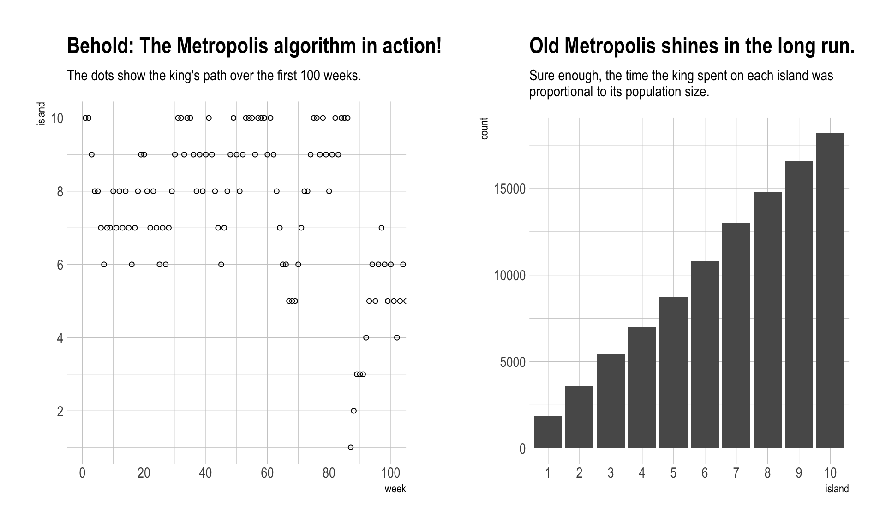
Code
# Results of the king following the Metropolis algorithm. The left-hand plot shows
# the king’s position (vertical axis) across first 100 weeks (horizontal axis).
# In any particular week, it’s nearly impossible to say where the king will be.
# The right-hand plot shows the long-run behavior of the algorithm, as the time spent on
# each island turns out to be proportional to its population size.
# The algorithm will still work in this way, even if we allow the king to be equally likely
# to propose a move to any island from any island, not just among neighbors. The algorithm
# would also work for any size archipelago, even if the king didn’t know how many islands
# were in it. All he needs to know at any point in time is the population of the current
# island and the population of the proposal island.Markov chain Monte Carlo
The goal of general Metropolis Algorithm, an example of Markov chain Monte Carlo, is to draw samples from an unknown and usually complex target distribution, like a posterior probability distribution.
The “islands” in our objective are parameter values, and they need not be discrete, but can instead take on a continuous range of values as usual.
The “population sizes” in our objective are the posterior probabilities at each parameter value.
The “weeks” in our objective are samples taken from the joint posterior of the parameters in the model.
Provided the way we choose our proposed parameter values at each step is symmetric— so that there is an equal chance of proposing from A to B and from B to A— then the Metropolis algorithm will eventually give us a collection of samples from the joint posterior.
Gibbs sampling
Hamiltonian (aka Hybrid, aka HMC) Monte Carlo
Gibbs sampling
The Metropolis algorithm works whenever the probability of proposing a jump to B from A is equal to the probability of proposing A from B, when the proposal distribution is symmetric. There is a more general method, known as Metropolis-Hastings, that allows asymmetric proposals.
An algorithm that allows asymmetric proposals is useful because:
it makes it easier to handle parameters, like standard deviations, that have boundaries at zero
we can acquire an equally good image of the posterior distribution in fewer steps
Gibbs sampling is a variant of the Metropolis-Hastings algorithm that uses clever proposals and is therefore more efficient— you can get a good estimate of the posterior from Gibbs sampling with many fewer samples than a comparable Metropolis approach. The improvement arises from adaptive proposals in which the distribution of proposed parameter values adjusts itself intelligently, depending upon the parameter values at the moment. Gibbs sampling computes these adaptive proposals using particular combinations of prior distributions and likelihoods known as conjugate pairs.
Some limitations of Gibbs sampling:
Some conjugate priors seem silly, and choosing a prior so that the model fits efficiently isn’t really a strong argument from a scientific perspective.
As models become more complex and contain hundreds or thousands or tens of thousands of parameters, Gibbs sampling becomes shockingly inefficient.
Hamiltonian Monte Carlo
Hamiltonian Monte Carlo (or Hybrid Monte Carlo, HMC) adopts Jaynes’ principle that, “whenever there is a randomized way of doing something, then there is a non-randomized way that delivers better performance but requires more thought.”
HMC is much more computationally costly than are Metropolis or Gibbs sampling— both highly random procedures. But its proposals are typically much more efficient— doesn’t need as many samples to describe the posterior distribution, outshine other algorithms as models become more complex (thousands or tens of thousands of parameters). HMC outperforms Metropolis and Gibbs sampling, but it is not a universal solution to all MCMC problems.
Monty’s kingdom is not a discrete set of islands. Instead, it is a continuous territory stretched out along a narrow valley. Monty’s advisor, Hamilton realized that a much more efficient way to visit the citizens in the continuous Kingdom is to travel back and forth along its length. In order to spend more time in densely settled areas, they should slow the royal vehicle down when houses grow more dense. Likewise, they should speed up when houses grow more sparse. This strategy requires knowing how quickly population density is changing, at their current location. But it doesn’t require remembering where they’ve been or knowing the population distribution anyplace else. And a major benefit of this strategy compared to that of Metropolis is that the King makes a full sweep of the kingdom before revisiting anyone.
In statistical applications, the royal vehicle is the current vector of parameter values. Let’s consider the single parameter case, just to keep things simple. In that case, the log-posterior is like a bowl, with the MAP at its nadir. Then the job is to sweep across the surface of the bowl, adjusting speed in proportion to how high up we are. In cases where ordinary Metropolis or Gibbs sampling wander slowly through parameter space, Hamiltonian Monte Carlo remains efficient.
Some limitations of HMC:
HMC requires continuous parameters. It can’t glide through a discrete parameter.
it needs to be tuned to a particular model and its data. That’s where an engine like Stan (mc-stan.org) comes in. Stan automates much of that tuning.
Easy HMC: map2stan
map2stan compiles lists of formulas, like the lists you’ve been using so far to construct map estimates, into Stan HMC code. To use map2stan, you need to preprocess any variable transformations, and you need to construct a clean data frame with only the variables you will use.
Code
# load the data and reduce it down to cases (nations) that have the outcome variable of interest
data(rugged)
d <- rugged
d$log_gdp <- log(d$rgdppc_2000)
dd <- d[ complete.cases(d$rgdppc_2000) , ]
# Fit the interaction model which aims to predict log-GDP with terrain ruggedness,
# continent, and the interaction of the two
m8.1 <- rethinking::map(
alist(
log_gdp ~ dnorm( mu , sigma ) ,
mu <- a + bR*rugged + bA*cont_africa + bAR*rugged*cont_africa ,
a ~ dnorm(0,100),
bR ~ dnorm(0,10),
bA ~ dnorm(0,10),
bAR ~ dnorm(0,10),
sigma ~ dunif(0,10)
),
data=dd )
precis(m8.1) mean sd 5.5% 94.5%
a 9.2227883 0.13798162 9.0022670 9.44330960
bR -0.2026524 0.07646913 -0.3248649 -0.08044001
bA -1.9469505 0.22450078 -2.3057461 -1.58815487
bAR 0.3929062 0.13004799 0.1850644 0.60074805
sigma 0.9326805 0.05058151 0.8518415 1.01351953Preparation
But now we’ll also fit this model using Hamiltonian Monte Carlo. This means there will be no more quadratic approximation— if the posterior distribution is non-Gaussian, then we’ll get whatever non-Gaussian shape it has. You can use exactly the same formula list as before, but you need to do two additional things.
-
Preprocess all variable transformations.
If the outcome is transformed somehow, like by taking the logarithm, then do this before fitting the model by constructing a new variable in the data frame.
Likewise, if any predictor variables are transformed, including squaring and cubing and such to build polynomial models, then compute these transformed values before fitting the model.
- Once you’ve got all the variables ready, make a new trimmed down data frame that contains only the variables you will actually use to fit the model. Technically, you don’t have to do this. But doing so avoids common problems. For example, if any of the unused variables have missing values, NA, then Stan will refuse to work.
'data.frame': 170 obs. of 3 variables:
$ log_gdp : num 7.49 8.22 9.93 9.41 7.79 ...
$ rugged : num 0.858 3.427 0.769 0.775 2.688 ...
$ cont_africa: int 1 0 0 0 0 0 0 0 0 1 ...Code
# The data frame dd.trim contains only the three variables we’re using.Estimation
Code
## Use akjurz's codes (ulam stops working today, so I changed all ulam codes, so doc render)
# Get samples from the posterior distribution using HMC
output <- capture.output(b8.1 <-
brm(data = dd, family = gaussian,
log_gdp ~ 1 + rugged + cont_africa + rugged:cont_africa,
prior = c(prior(normal(0, 100), class = Intercept),
prior(normal(0, 10), class = b),
prior(cauchy(0, 2), class = sigma)),
seed = 8)) # a weakly regularizing prior for standard deviations
# The uniform prior on sigma has been changed to a half-Cauchy prior. (cauchy)
# The Cauchy distribution is a useful thick-tailed probability distribution
# related to the Student t distribution.
print(b8.1) Family: gaussian
Links: mu = identity; sigma = identity
Formula: log_gdp ~ 1 + rugged + cont_africa + rugged:cont_africa
Data: dd (Number of observations: 170)
Draws: 4 chains, each with iter = 2000; warmup = 1000; thin = 1;
total post-warmup draws = 4000
Population-Level Effects:
Estimate Est.Error l-95% CI u-95% CI Rhat Bulk_ESS Tail_ESS
Intercept 9.22 0.14 8.95 9.50 1.00 3047 3348
rugged -0.20 0.08 -0.36 -0.05 1.00 2841 2935
cont_africa -1.95 0.23 -2.42 -1.50 1.00 2525 2653
rugged:cont_africa 0.39 0.14 0.13 0.66 1.00 2423 2693
Family Specific Parameters:
Estimate Est.Error l-95% CI u-95% CI Rhat Bulk_ESS Tail_ESS
sigma 0.95 0.05 0.85 1.06 1.00 4311 3151
Draws were sampled using sampling(NUTS). For each parameter, Bulk_ESS
and Tail_ESS are effective sample size measures, and Rhat is the potential
scale reduction factor on split chains (at convergence, Rhat = 1).Code
## The brms::brm() function defaults to chains = 4. It also defaults to cores = 1,
## iter = 2000, warmup = 1000.
## McElreath’s rethinking::precis() returns highest posterior density intervals (HPDIs)
## when summarizing map2stan() models. Not so with brms. If you want HPDIs,
## you’ll have to use the convenience functions from the tidybayes package.
# library(tidybayes)
post <- posterior_samples(b8.1)
post %>%
gather() %>%
group_by(key) %>%
mean_hdi(value, .width = .89)# A tibble: 7 × 7
key value .lower .upper .width .point .interval
<chr> <dbl> <dbl> <dbl> <dbl> <chr> <chr>
1 b_cont_africa -1.95 -2.32 -1.59 0.89 mean hdi
2 b_Intercept 9.22 9.00 9.44 0.89 mean hdi
3 b_rugged -0.203 -0.327 -0.0812 0.89 mean hdi
4 b_rugged:cont_africa 0.392 0.164 0.600 0.89 mean hdi
5 lp__ -249. -251. -246. 0.89 mean hdi
6 lprior -16.6 -16.6 -16.5 0.89 mean hdi
7 sigma 0.949 0.864 1.03 0.89 mean hdi Code
# The interval boundaries in the table are highest posterior density intervals (HPDI),
# not ordinary percentile intervals (PI).
# n_eff and Rhat provide MCMC diagnostic criteria, to help you tell how well estimation worked.
# n_eff is a crude estimate of the number of independent samples you managed to get.
# Rhat is a complicated estimate of the convergence of the Markov chains to the target
# distribution. It should approach 1.00 from above, when all is well.Sampling agian, in parallel
Once you have compiled your Stan model, you can draw more samples from it anytime, running as many independent Markov chains as you like. And you can easily parallelize those chains, as well. To run four independent Markov chains for the model above, and to distribute them across separate processors in your computer, just pass the previous fit back to map2stan:
Code
## Here we sample in parallel by adding cores = 4.
output <- capture.output(b8.1_4chains_4cores <- update(b8.1,
cores = 4))
## This model sampled so fast that it really didn’t matter if we sampled in
## parallel or not. It will for others.
print(b8.1_4chains_4cores) Family: gaussian
Links: mu = identity; sigma = identity
Formula: log_gdp ~ 1 + rugged + cont_africa + rugged:cont_africa
Data: dd (Number of observations: 170)
Draws: 4 chains, each with iter = 2000; warmup = 1000; thin = 1;
total post-warmup draws = 4000
Population-Level Effects:
Estimate Est.Error l-95% CI u-95% CI Rhat Bulk_ESS Tail_ESS
Intercept 9.22 0.14 8.95 9.51 1.00 2991 2806
rugged -0.20 0.08 -0.36 -0.05 1.00 2876 3064
cont_africa -1.95 0.23 -2.39 -1.50 1.00 2466 2905
rugged:cont_africa 0.40 0.13 0.14 0.65 1.00 2380 2402
Family Specific Parameters:
Estimate Est.Error l-95% CI u-95% CI Rhat Bulk_ESS Tail_ESS
sigma 0.95 0.05 0.85 1.06 1.00 4456 2948
Draws were sampled using sampling(NUTS). For each parameter, Bulk_ESS
and Tail_ESS are effective sample size measures, and Rhat is the potential
scale reduction factor on split chains (at convergence, Rhat = 1).Visualization
Code
## Unlike the way rethinking’s extract.samples() yields a list,
## brms’s posterior_samples() returns a data frame.
post <- posterior_samples(b8.1)
str(post)'data.frame': 4000 obs. of 7 variables:
$ b_Intercept : num 9.29 9.4 9.41 9.33 9.35 ...
$ b_rugged : num -0.303 -0.338 -0.351 -0.31 -0.354 ...
$ b_cont_africa : num -2.19 -2.34 -2.52 -2.57 -2.35 ...
$ b_rugged:cont_africa: num 0.468 0.531 0.619 0.638 0.575 ...
$ sigma : num 0.985 1 0.967 0.947 0.947 ...
$ lprior : num -16.6 -16.6 -16.6 -16.6 -16.6 ...
$ lp__ : num -249 -249 -250 -252 -250 ...Code
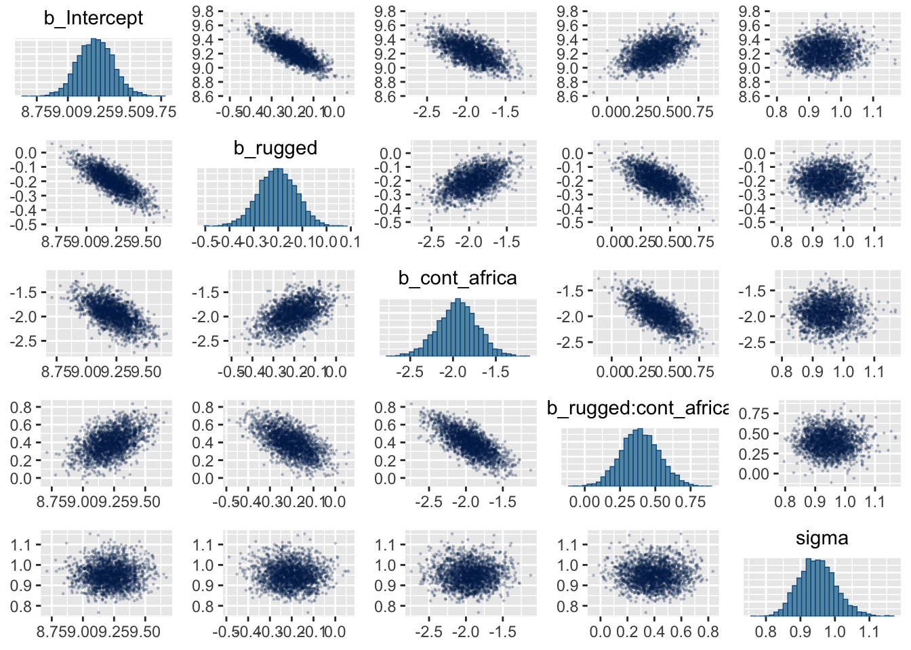
Code
# Pairs plot of the samples produced by Stan. The diagonal shows a density estimate for
# each parameter. Below the diagonal, correlations between parameters are shown.Using the samples
If you have the samples from the posterior and you know the model, you can do anything: simulate predictions, compute differences between parameters, and calculate DIC and WAIC.
Code
## Use brms (copy Akjurz's codes)
# Run HMC model
output <- capture.output(b8.1 <-
brm(data = dd, family = gaussian,
log_gdp ~ 1 + rugged + cont_africa + rugged:cont_africa,
prior = c(prior(normal(0, 100), class = Intercept),
prior(normal(0, 10), class = b),
prior(cauchy(0, 2), class = sigma)),
seed = 8))
print(b8.1) Family: gaussian
Links: mu = identity; sigma = identity
Formula: log_gdp ~ 1 + rugged + cont_africa + rugged:cont_africa
Data: dd (Number of observations: 170)
Draws: 4 chains, each with iter = 2000; warmup = 1000; thin = 1;
total post-warmup draws = 4000
Population-Level Effects:
Estimate Est.Error l-95% CI u-95% CI Rhat Bulk_ESS Tail_ESS
Intercept 9.22 0.14 8.95 9.50 1.00 3047 3348
rugged -0.20 0.08 -0.36 -0.05 1.00 2841 2935
cont_africa -1.95 0.23 -2.42 -1.50 1.00 2525 2653
rugged:cont_africa 0.39 0.14 0.13 0.66 1.00 2423 2693
Family Specific Parameters:
Estimate Est.Error l-95% CI u-95% CI Rhat Bulk_ESS Tail_ESS
sigma 0.95 0.05 0.85 1.06 1.00 4311 3151
Draws were sampled using sampling(NUTS). For each parameter, Bulk_ESS
and Tail_ESS are effective sample size measures, and Rhat is the potential
scale reduction factor on split chains (at convergence, Rhat = 1).Code
# Calculate waic
waic(b8.1)
Computed from 4000 by 170 log-likelihood matrix.
Estimate SE
elpd_waic -234.7 7.4
p_waic 5.2 0.9
waic 469.4 14.9
2 (1.2%) p_waic estimates greater than 0.4. We recommend trying loo instead. Code
# use loo (leave-one-out) cross-validation
(l_b8.1 <- loo(b8.1))
Computed from 4000 by 170 log-likelihood matrix.
Estimate SE
elpd_loo -234.8 7.5
p_loo 5.2 0.9
looic 469.5 14.9
------
MCSE of elpd_loo is 0.0.
MCSE and ESS estimates assume MCMC draws (r_eff in [0.7, 1.3]).
All Pareto k estimates are good (k < 0.7).
See help('pareto-k-diagnostic') for details.Code
# And the recommended workflow since brms version 2.8.0 is to save the information
# criteria information with your brm() fit objects with the add_criterion() function.
b8.1 <- add_criterion(b8.1, c("waic", "loo"))
# retrieve information
b8.1$waicNULLCode
b8.1$looNULLChecking the chain
A trace plot— the most broadly useful tool for diagnosing malfunction— merely plots the samples in sequential order, joined by a line. Looking at the trace plot of each parameter can help to diagnose many common problems. A trace plot isn’t the last thing analysts do to inspect MCMC output. But it’s nearly always the first.
Code
# In the terrain ruggedness example, the trace plot shows a very healthy chain.
plot(b8.1) # m8.1stan doesn't work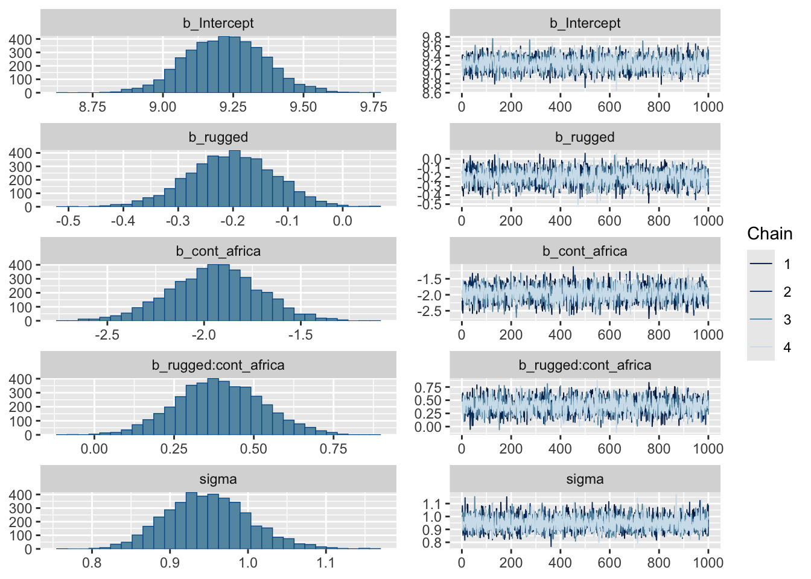
Code
## Use akjurz's codes to do trace plots
p1 <-
as_draws_df(b8.1) %>%
mcmc_trace(pars = vars(0:sigma),
linewidth = 0.25)
(
(p1) &
scale_color_ipsum() &
theme(legend.position = "right")
)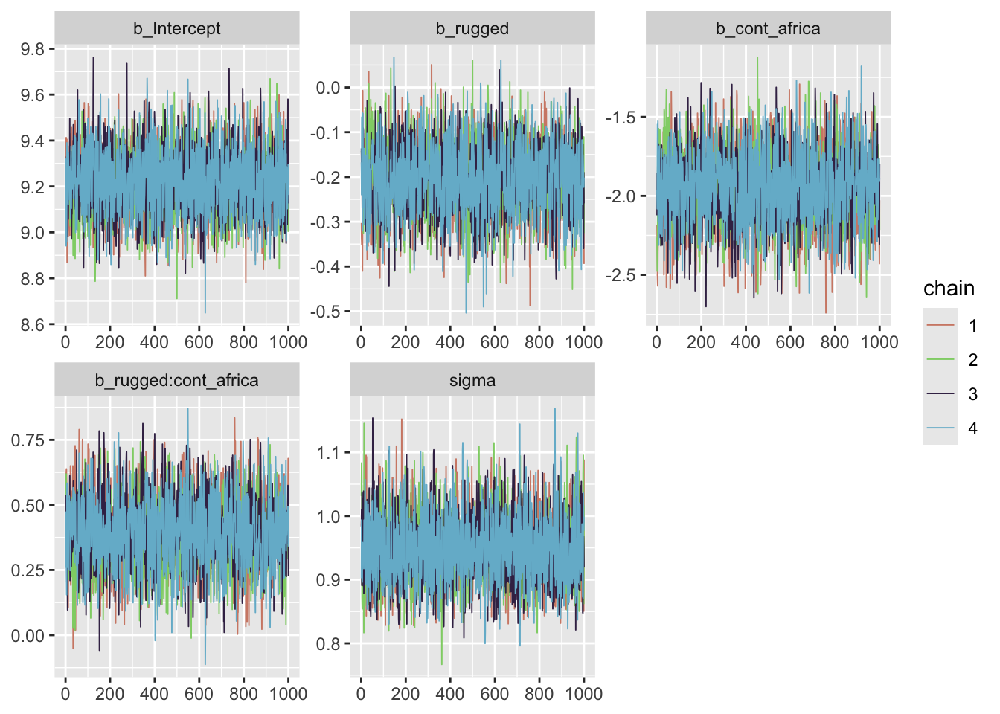
Code
post <- posterior_samples(b8.1, add_chain = T)
# This is a clean, healthy Markov chain, both stationary and well-mixing.
# The bayesplot package offers a variety of diagnostic plots. Here we make
# autocorrelation plots for all model parameters, one for each HMC chain.
mcmc_acf(post,
pars = c("b_Intercept", "b_rugged", "b_cont_africa",
"b_rugged:cont_africa", "sigma"),
lags = 5) +
scale_color_ipsum() +
theme_ipsum()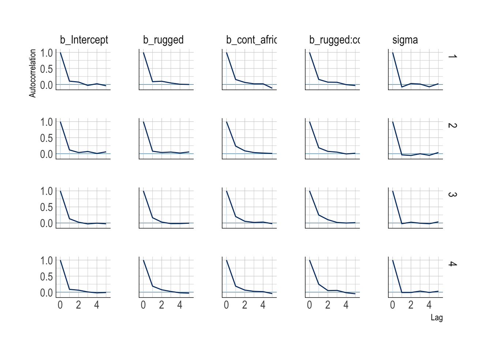
Code
# That’s just what we like to see–nice L-shaped autocorrelation plots. Those are
# the kinds of shapes you’d expect when you have reasonably large effective samples.
## Only one chain is displayed here and Ip_ (is that a graph for prior?) shouldn't be showing.Typically we look for two things in these trace plots: stationarity and good mixing. Stationarity refers to the path staying within the posterior distribution. Notice that these traces, for example, all stick around a very stable central tendency, the center of gravity of each dimension of the posterior. Another way to think of this is that the mean value of the chain is quite stable from beginning to end.
A well-mixing chain means that each successive sample within each parameter is not highly correlated with the sample before it. Visually, you can see this by the rapid zig-zag motion of each path, as the trace traverses the posterior distribution without getting mired anyplace.
Raw stan model code
Code
## Stan code
# It is essentially the formula list you provided to map2stan, but in reverse order.
# The first line, vector[N] mu; names a symbol to hold the linear model. The rest of
# the code reiterates your formulas, beginning with priors and then computing the
# value of mu for each observation (nation). Finally, the last line comprises the
# likelihood. Given this kind of model definition, Stan will define and sample from
# the HMC chain or chains you ask for.
model{
vector[N] mu;
sigma ~ cauchy( 0 , 2 );
bAR ~ normal( 0 , 10 );
bA ~ normal( 0 , 10 );
bR ~ normal( 0 , 10 );
a ~ normal( 0 , 100 );
for ( i in 1:N ) {
mu[i] <- a + bR * rugged[i] + bA * cont_africa[i] +
bAR * rugged[i] * cont_africa[i];
}
log_gdp ~ normal( mu , sigma );
}Code
# The stancode() function works in brms much like it does in rethinking.
brms::stancode(b8.1)// generated with brms 2.20.4
functions {
}
data {
int<lower=1> N; // total number of observations
vector[N] Y; // response variable
int<lower=1> K; // number of population-level effects
matrix[N, K] X; // population-level design matrix
int<lower=1> Kc; // number of population-level effects after centering
int prior_only; // should the likelihood be ignored?
}
transformed data {
matrix[N, Kc] Xc; // centered version of X without an intercept
vector[Kc] means_X; // column means of X before centering
for (i in 2:K) {
means_X[i - 1] = mean(X[, i]);
Xc[, i - 1] = X[, i] - means_X[i - 1];
}
}
parameters {
vector[Kc] b; // regression coefficients
real Intercept; // temporary intercept for centered predictors
real<lower=0> sigma; // dispersion parameter
}
transformed parameters {
real lprior = 0; // prior contributions to the log posterior
lprior += normal_lpdf(b | 0, 10);
lprior += normal_lpdf(Intercept | 0, 100);
lprior += cauchy_lpdf(sigma | 0, 2)
- 1 * cauchy_lccdf(0 | 0, 2);
}
model {
// likelihood including constants
if (!prior_only) {
target += normal_id_glm_lpdf(Y | Xc, Intercept, b, sigma);
}
// priors including constants
target += lprior;
}
generated quantities {
// actual population-level intercept
real b_Intercept = Intercept - dot_product(means_X, b);
}Code
# You can also get that information with b8.1$model or b8.1$fit@stanmodel.
# b8.1$model
# b8.1$fit@stanmodelCare and feeding of your Markov chain
How many samples do you need?
You can control the number of samples from the chain by using the iter and warmup parameters. The defaults are 2000 for iter and warmup is set to iter/2, which gives you 1000 warmup samples and 1000 real samples to use for inference. But these defaults are just meant to get you started, to make sure the chain gets started okay. Then you can decide on other values for iter and warmup.
So how many samples do we need for accurate inference about the posterior distribution? It depends. First, what really matters is the effective number of samples, not the raw number. The effective number of samples is an estimate of the number of independent samples from the posterior distribution. Markov chains are typically autocorrelated, so that sequential samples are not entirely independent. Stan chains tend to be less autocorrelated than those produced by other engines, but there is always some autocorrelation. Stan provides an estimate of effective number of samples as n_eff.
Second, what do you want to know? If all you want are posterior means, it doesn’t take many samples at all to get very good estimates. Even a couple hundred samples will do. But if you care about the exact shape in the extreme tails of the posterior, the 99th percentile or so, then you’ll need many many more. So there is no universally useful number of samples to aim for.
The warmup setting is more subtle. On the one hand, you want to have the shortest warmup period necessary, so you can get on with real sampling. But on the other hand, more warmup can mean more efficient sampling. With Stan models, typically you can devote as much as half of your total samples, the iter value, to warmup and come out very well. But for simple models like those you’ve fit so far, much less warmup is really needed. Models can vary a lot in the shape of their posterior distributions, so again there is no universally best answer. But if you are having trouble, you might try increasing the warmup. If not, you might try reducing it.
How many chains do you need?
When debugging a model, use a single chain.
-
When deciding whether the chains are valid, you need more than one chain.
- Using 3 or 4 chains is conventional, and quite often more than enough to reassure us that the sampling is working properly.
- When you begin the final run that you’ll make inferences from, you only really need one chain. But using more than one chain is fine, as well. It just doesn’t matter, once you’re sure it’s working.
- More chains cost you an extra samples of
warmupthat just get thrown away. And since warmup is typically the slowest part of the chain, these extra samples cost a disproportionate amount of your computer’s time. - On the other hand, if you run the chains on different computers or processor cores within a single computer, then you might prefer more chains, because you can spread the load and finish the whole job faster.
- More chains cost you an extra samples of
For typical regression models, you can live by the motto four short chains to check, one long chain for inference. (Things may still go wrong)
Convergence diagnostics
- The default diagnostic output from Stan includes two metrics,
n_effandRhat.-
n_effis a measure of the effective number of samples.- When
n_effis much lower than the actual number of iterations (minus warmup) of your chains, it means the chains are inefficient, but possibly still okay.
- When
-
Rhatis the Gelman-Rubin convergence diagnostic,.
- When Rhat is above 1.00, it usually indicates that the chain has not yet converged, and probably you shouldn’t trust the samples. If you draw more iterations, it could be fine, or it could never converge. For example, Rhat can reach 1.00 even for an invalid chain. So view it perhaps as a signal of danger, but never of safety. For conventional models, these metrics typically work well.
-
Taming a wild chain
One common problem with some models is that there are broad, flat regions of the posterior density. This happens most often, as you might guess, when one uses flat priors. The problem this can generate is a wild, wandering Markov chain that erratically samples extremely positive and extremely negative parameter values.
Code
## Use akjurz's codes using brms
# As with rethinking, brms can take data in the form of a list. Recall however,
# that in order to specify starting values, you need to specify a list of lists
# with an inits argument rather than with start.
output <- capture.output(b8.2 <-
brm(data = list(y = c(-1, 1)),
family = gaussian,
y ~ 1,
prior = c(prior(uniform(-1e10, 1e10), class = Intercept),
prior(uniform(0, 1e10), class = sigma)),
inits = list(list(Intercept = 0, sigma = 1),
list(Intercept = 0, sigma = 1)),
iter = 4000, warmup = 1000, chains = 2,
seed = 8))
# Those were some silly flat priors. Check the damage.
p1 <-
as_draws_df(b8.2) %>%
mcmc_trace(pars = vars(0:sigma),
linewidth = 0.25)
print(b8.2) Family: gaussian
Links: mu = identity; sigma = identity
Formula: y ~ 1
Data: list(y = c(-1, 1)) (Number of observations: 2)
Draws: 2 chains, each with iter = 4000; warmup = 1000; thin = 1;
total post-warmup draws = 6000
Population-Level Effects:
Estimate Est.Error l-95% CI u-95% CI Rhat Bulk_ESS
Intercept -2880734.50 13574520.63 -46100537.48 5293856.57 1.23 41
Tail_ESS
Intercept 37
Family Specific Parameters:
Estimate Est.Error l-95% CI u-95% CI Rhat Bulk_ESS Tail_ESS
sigma 38219215.28 313978767.27 342.22 229726917.76 1.21 9 55
Draws were sampled using sampling(NUTS). For each parameter, Bulk_ESS
and Tail_ESS are effective sample size measures, and Rhat is the potential
scale reduction factor on split chains (at convergence, Rhat = 1).Code
# Ludicrous numbers, super wide CI and Rhat is higher than 1 (1.23)
## With reasonable priors
output <- capture.output(b8.3 <-
brm(data = list(y = c(-1, 1)),
family = gaussian,
y ~ 1,
prior = c(prior(normal(0, 10), class = Intercept),
prior(cauchy(0, 1), class = sigma)),
inits = list(list(Intercept = 0, sigma = 1),
list(Intercept = 0, sigma = 1)),
iter = 4000, warmup = 1000, chains = 2,
seed = 8))
print(b8.3) Family: gaussian
Links: mu = identity; sigma = identity
Formula: y ~ 1
Data: list(y = c(-1, 1)) (Number of observations: 2)
Draws: 2 chains, each with iter = 4000; warmup = 1000; thin = 1;
total post-warmup draws = 6000
Population-Level Effects:
Estimate Est.Error l-95% CI u-95% CI Rhat Bulk_ESS Tail_ESS
Intercept -0.08 1.77 -3.63 3.33 1.00 1455 970
Family Specific Parameters:
Estimate Est.Error l-95% CI u-95% CI Rhat Bulk_ESS Tail_ESS
sigma 2.11 2.15 0.61 7.63 1.00 1123 1254
Draws were sampled using sampling(NUTS). For each parameter, Bulk_ESS
and Tail_ESS are effective sample size measures, and Rhat is the potential
scale reduction factor on split chains (at convergence, Rhat = 1).Code
# Generate trace plots
p2 <-
as_draws_df(b8.3) %>%
mcmc_trace(pars = vars(0:sigma),
linewidth = 0.25)
(
(p1/p2) &
scale_color_ipsum() &
theme(legend.position = "right")
) 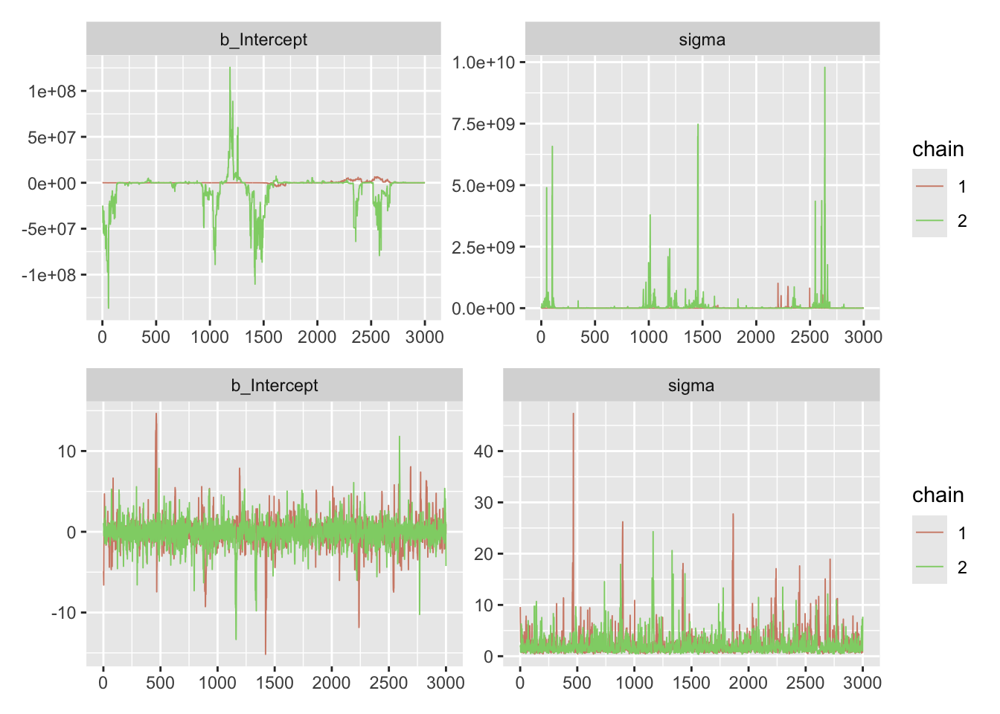
Code
# Diagnosing and healing a sick Markov chain.
# Top row: Trace plot from two independent chains defined by model b8.2. These chains
# are not stationary and should not be used for inference.
# Bottom row: Adding weakly informative priors (see b8.3) clears up the condition right away.
# These chains are fine to use for inference.
# Compare posterior and priors for model b8.3
post <- as_draws_df(b8.3)
#post %>%
#select(b_Intercept) %>%
d1 <- ggplot(post, aes(x = b_Intercept)) +
stat_density(geom = "line") +
geom_line(data = data.frame(x = seq(from = min(post$b_Intercept),
to = max(post$b_Intercept),
length.out = 50)),
aes(x = x, y = dnorm(x = x, mean = 0, sd = 10)),
color = ipsum_pal()(1), linetype = 2) +
theme_ipsum()
# post %>%
# select(sigma) %>%
d2 <- ggplot(post, aes(x = sigma)) +
stat_density(geom = "line") +
geom_line(data = data.frame(x = seq(from = 0,
to = max(post$sigma),
length.out = 50)),
aes(x = x, y = dcauchy(x = x, location = 0, scale = 1)*2),
color = ipsum_pal()(2)[2], linetype = 2) +
coord_cartesian(xlim = c(0, 10)) +
theme_ipsum()
grid.arrange(d1, d2, ncol = 2)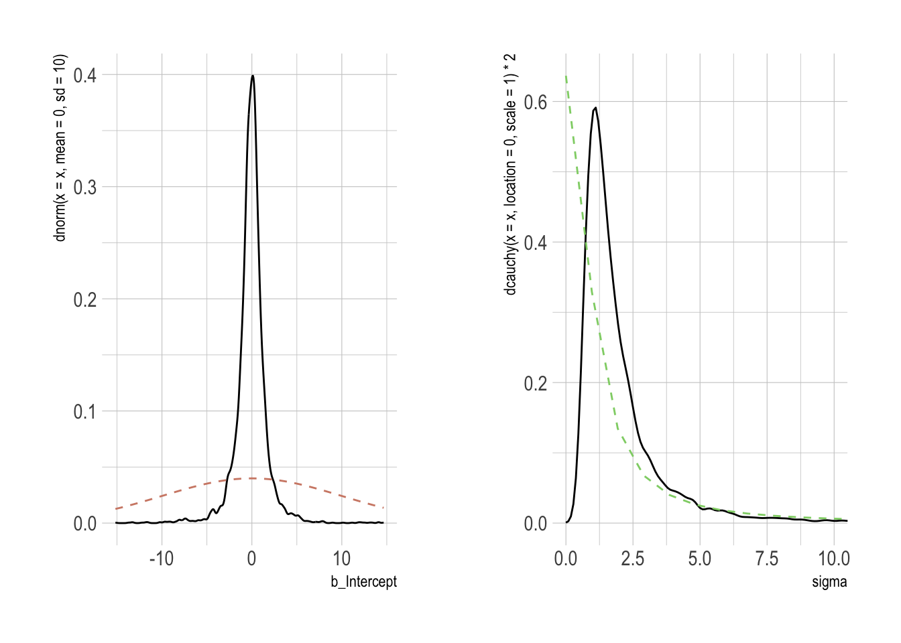
Code
# Prior (dashed) and posterior (solid black) for the model with weakly informative priors.
# Even with only two observations, the likelihood easily overcomes these priors.
# Yet the model cannot be successfully estimated without them.Cauchy distribution
- The Cauchy (ko-shee) distribution gives the distribution of the ratio of two random Gaussian draws.
- Its parameters are a locationand a scale
. The location says where the center is, and the scale defines how stretched out the distribution is. - Cauchy has no defined mean nor variance, so the location and scale are not its mean and standard deviation. The reason the Cauchy has no mean and variance is that it is a very thick-tailed distribution. At any moment in a Cauchy sampling process, it is possible to draw an extreme value that overwhelms all of the previous draws. The consequence of this fact is that the sequence never converges to a stable mean and variance. It just keeps moving.
- Half-Cauchy is a Cauchy defined over the positive reals only. This is because they are applied to a parameter, usually
Code
# The code below samples 10,000 values from a Cauchy distribution.
# Then it computes and plots the running mean at each sample.
# Run this simulation a few times to see how the trace of the mean is highly unpredictable.
y <- rcauchy(1e4,0,5)
mu <- sapply( 1:length(y) , function(i) sum(y[1:i])/i )
plot(mu,type="l")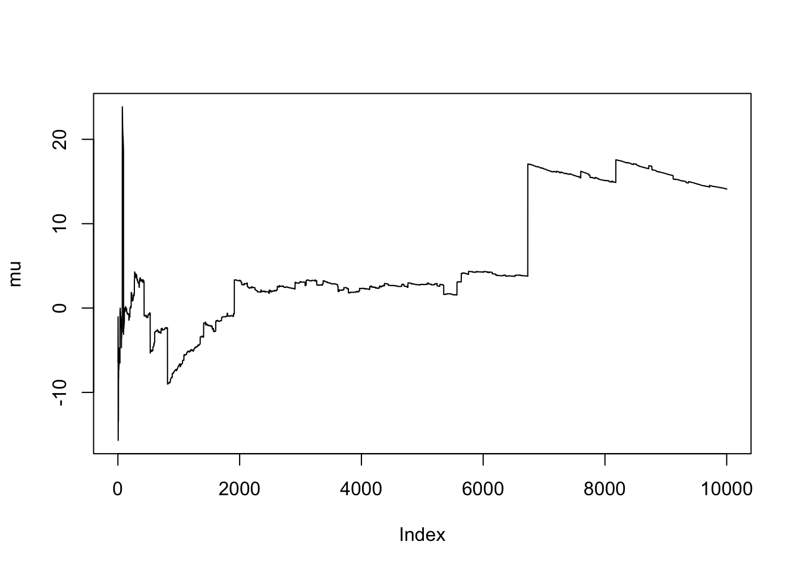
Code
# The distribution of mu changes significantly with each run. Non-identifiable parameters
The non-identifiable parameters (created by higly correlated predictors) can be identified by using a little prior information.
Code
# To construct a non-identifiable model, we first simulate 100 observations from
# a Gaussian distribution with mean zero and standard deviation 1.
y <- rnorm( 100 , mean=0 , sd=1 )
# Fit the model (use akjurz's codes)
output <- capture.output(b8.4 <-
brm(data = list(y = y,
intercept_1 = 1,
intercept_2 = 1),
family = gaussian,
y ~ 0 + intercept_1 + intercept_2,
prior = c(prior(uniform(-1e10, 1e10), class = b),
prior(cauchy(0, 1), class = sigma)),
inits = list(list(intercept_1 = 0, intercept_2 = 0, sigma = 1),
list(intercept_1 = 0, intercept_2 = 0, sigma = 1)),
iter = 4000, warmup = 1000, chains = 2,
seed = 8))
print(b8.4) Family: gaussian
Links: mu = identity; sigma = identity
Formula: y ~ 0 + intercept_1 + intercept_2
Data: list(y = y, intercept_1 = 1, intercept_2 = 1) (Number of observations: 100)
Draws: 2 chains, each with iter = 4000; warmup = 1000; thin = 1;
total post-warmup draws = 6000
Population-Level Effects:
Estimate Est.Error l-95% CI u-95% CI Rhat Bulk_ESS Tail_ESS
intercept_1 -1409.36 749.97 -2763.15 8.15 2.09 3 12
intercept_2 1409.44 749.96 -8.19 2763.17 2.09 3 12
Family Specific Parameters:
Estimate Est.Error l-95% CI u-95% CI Rhat Bulk_ESS Tail_ESS
sigma 0.98 0.07 0.84 1.09 1.05 20 40
Draws were sampled using sampling(NUTS). For each parameter, Bulk_ESS
and Tail_ESS are effective sample size measures, and Rhat is the potential
scale reduction factor on split chains (at convergence, Rhat = 1).Code
# The estimates look suspicious, and the n_eff and Rhat values are terrible.
# The means for a1 and a2 are almost exactly the same distance from zero,
# but on opposite sides. And the standard deviations of the chains are massive.
# This is of course a result of the fact that we cannot simultaneously estimate
# a1 and a2, but only their sum.
## Use weak priors
output <- capture.output(b8.5 <-
brm(data = list(y = y,
intercept_1 = 1,
intercept_2 = 1),
family = gaussian,
y ~ 0 + intercept_1 + intercept_2,
prior = c(prior(normal(0, 10), class = b),
prior(cauchy(0, 1), class = sigma)),
inits = list(list(intercept_1 = 0, intercept_2 = 0, sigma = 1),
list(intercept_1 = 0, intercept_2 = 0, sigma = 1)),
iter = 4000, warmup = 1000, chains = 2,
seed = 8))
print(b8.5) Family: gaussian
Links: mu = identity; sigma = identity
Formula: y ~ 0 + intercept_1 + intercept_2
Data: list(y = y, intercept_1 = 1, intercept_2 = 1) (Number of observations: 100)
Draws: 2 chains, each with iter = 4000; warmup = 1000; thin = 1;
total post-warmup draws = 6000
Population-Level Effects:
Estimate Est.Error l-95% CI u-95% CI Rhat Bulk_ESS Tail_ESS
intercept_1 -0.21 7.30 -14.36 13.38 1.00 1384 1533
intercept_2 0.29 7.30 -13.27 14.41 1.00 1386 1559
Family Specific Parameters:
Estimate Est.Error l-95% CI u-95% CI Rhat Bulk_ESS Tail_ESS
sigma 1.02 0.07 0.88 1.17 1.00 2236 2218
Draws were sampled using sampling(NUTS). For each parameter, Bulk_ESS
and Tail_ESS are effective sample size measures, and Rhat is the potential
scale reduction factor on split chains (at convergence, Rhat = 1).Code
# The estimates for a1 and a2 are better identified now.
# Combine trace plots
p1 <-
as_draws_df(b8.4) %>%
mcmc_trace(pars = vars(0:sigma),
linewidth = 0.25)
p2 <-
as_draws_df(b8.5) %>%
mcmc_trace(pars = vars(0:sigma),
linewidth = 0.25)
(
(p1 / p2) &
scale_color_ipsum() &
theme(legend.position = "right")
)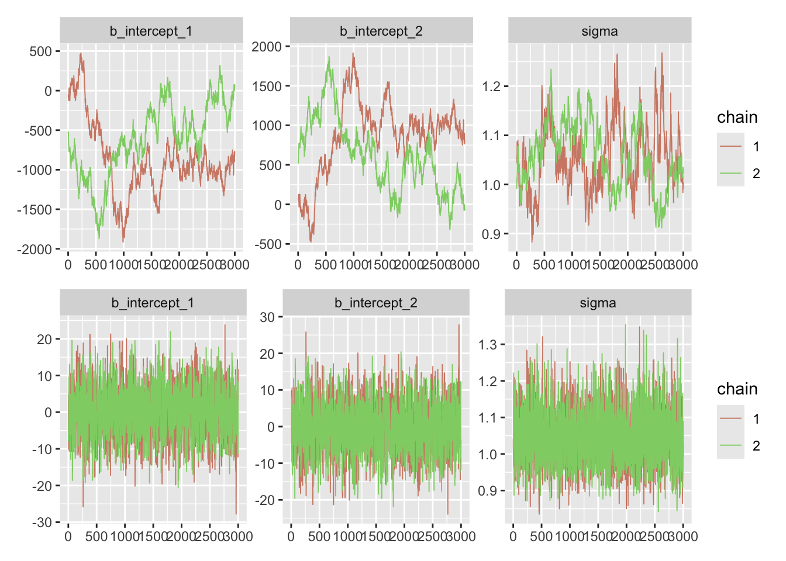
Code
## Top row: A chain with wandering parameters, b8.4.
## Bottom row: Same model but now with weakly informative priors, b8.5.
# With flat priors sampling may take 8 times as long as it does for model with weak priors.
# Often, a model that is very slow to sample is under-identified. This is an aspect of the
# `folk theorem of statistical computing`: When you are having trouble fitting a model,
# it often indicates a bad model.Practice
Easy
8E1. Which of the following is a requirement of the simple Metropolis algorithm?
- The proposal distribution must be symmetric.
8E2. Gibbs sampling is more efficient than the Metropolis algorithm. How does it achieve this extra efficiency? Are there any limitations to the Gibbs sampling strategy?
Gibbs sampling allows asymmetric proposal distributions, making handling of parameters easier and requiring fewer steps (and samples) to generate a good estimate of posterior distribution.
Gibbs sampling is inefficient for complex models with many parameters, and it requires combinations of priors and likelihoods known as conjugate pairs.
8E3. Which sort of parameters can Hamiltonian Monte Carlo not handle? Can you explain why?
Hamiltonian Monte Caro cannot handle discrete parameters as it requires continuous parameters to glide through the log-posterior smoothly, and it makes use of differential equations that apply to continuous variables.
8E4. Explain the difference between the effective number of samples, n_eff as calculated by Stan, and the actual number of samples.
The effective number of samples is an estimate of the number of independent samples from the posterior distribution that would provide similar information as the actual number of samples generated by simulations.
8E5. Which value should Rhat approach, when a chain is sampling the posterior distribution correctly?
One.
8E6. Sketch a good trace plot for a Markov chain, one that is effectively sampling from the posterior distribution. What is good about its shape? Then sketch a trace plot for a malfunctioning Markov chain. What about its shape indicates malfunction?
Code
output <- capture.output(goodplot <-
brm(data = list(y = c(-1, 1)),
family = gaussian,
y ~ 1,
prior = c(prior(uniform(0, 10), class = Intercept),
prior(uniform(0, 10), class = sigma)),
inits = list(list(Intercept = 0, sigma = 1),
list(Intercept = 0, sigma = 1)),
iter = 4000, warmup = 1000, chains = 2,
seed = 8))
output <- capture.output(badplot <-
brm(data = list(y = c(-1, 1)),
family = gaussian,
y ~ 1,
prior = c(prior(uniform(-1e20, 1e20), class = Intercept),
prior(uniform(0, 1e20), class = sigma)),
inits = list(list(Intercept = 0, sigma = 1),
list(Intercept = 0, sigma = 1)),
iter = 4000, warmup = 1000, chains = 2,
seed = 8))
p1 <-
as_draws_df(goodplot) %>%
mcmc_trace(pars = vars(b_Intercept:sigma),
linewidth = 0.25)
p2 <-
as_draws_df(badplot) %>%
mcmc_trace(pars = vars(b_Intercept:sigma),
linewidth = 0.25)
(
(p1 / p2) &
scale_color_ipsum() &
theme(legend.position = "right")
) +
plot_annotation(subtitle = "Good trace plot (Top) and Bad trace plot (Bottom)")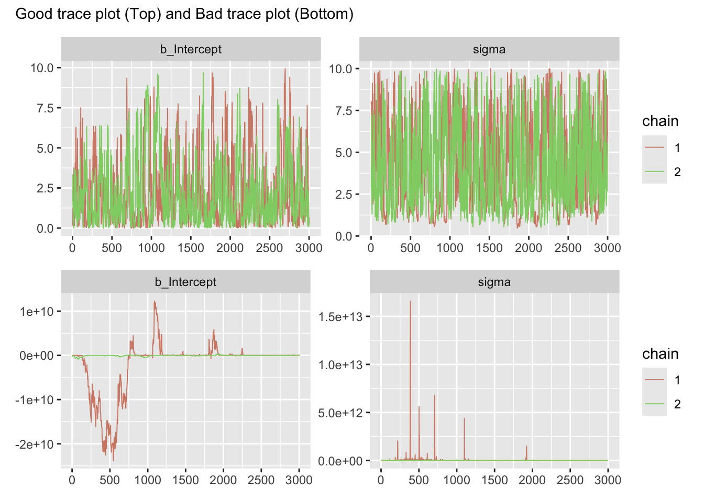
The chains in good trace plot for a Markov chain (top row) are stationary and well-mixing, whereas the chains in the bad trace plot (bottom) are not converging to posterior distribution— chain 1 wanders off to extreme values and chain 2 is completely flat.
Medium
8M1. Re-estimate the terrain ruggedness model from the chapter, but now using a uniform prior and an exponential prior for the standard deviation, sigma. The uniform prior should be dunif(0,10) and the exponential should be dexp(1). Do the different priors have any detectible influence on the posterior distribution?
Code
# Load data
data("rugged")
d <- rugged
# make log version of outcome
d$log_gdp <- log( d$rgdppc_2000 )
# extract countries with GDP data
dd <- d[ complete.cases(d$rgdppc_2000) , ]
output <- capture.output(uniform <-
brm(data = dd, family = gaussian,
log_gdp ~ 1 + rugged + cont_africa + rugged:cont_africa,
prior = c(prior(normal(0, 100), class = Intercept),
prior(normal(0, 10), class = b),
prior(uniform(0, 10), class = sigma)),
seed = 8))
print(uniform) Family: gaussian
Links: mu = identity; sigma = identity
Formula: log_gdp ~ 1 + rugged + cont_africa + rugged:cont_africa
Data: dd (Number of observations: 170)
Draws: 4 chains, each with iter = 2000; warmup = 1000; thin = 1;
total post-warmup draws = 4000
Population-Level Effects:
Estimate Est.Error l-95% CI u-95% CI Rhat Bulk_ESS Tail_ESS
Intercept 9.22 0.14 8.95 9.51 1.00 2834 2862
rugged -0.20 0.08 -0.35 -0.05 1.00 2634 2614
cont_africa -1.94 0.23 -2.39 -1.49 1.00 2689 2671
rugged:cont_africa 0.39 0.13 0.13 0.66 1.00 2426 2548
Family Specific Parameters:
Estimate Est.Error l-95% CI u-95% CI Rhat Bulk_ESS Tail_ESS
sigma 0.95 0.05 0.85 1.06 1.00 4277 2892
Draws were sampled using sampling(NUTS). For each parameter, Bulk_ESS
and Tail_ESS are effective sample size measures, and Rhat is the potential
scale reduction factor on split chains (at convergence, Rhat = 1).Code
output <- capture.output(exponential <-
brm(data = dd, family = gaussian,
log_gdp ~ 1 + rugged + cont_africa + rugged:cont_africa,
prior = c(prior(normal(0, 100), class = Intercept),
prior(normal(0, 10), class = b),
prior(exponential(1), class = sigma)),
seed = 8))
print(exponential) Family: gaussian
Links: mu = identity; sigma = identity
Formula: log_gdp ~ 1 + rugged + cont_africa + rugged:cont_africa
Data: dd (Number of observations: 170)
Draws: 4 chains, each with iter = 2000; warmup = 1000; thin = 1;
total post-warmup draws = 4000
Population-Level Effects:
Estimate Est.Error l-95% CI u-95% CI Rhat Bulk_ESS Tail_ESS
Intercept 9.22 0.14 8.94 9.50 1.00 3077 2830
rugged -0.20 0.08 -0.36 -0.05 1.00 2758 2753
cont_africa -1.95 0.23 -2.39 -1.51 1.00 2430 2548
rugged:cont_africa 0.39 0.13 0.13 0.65 1.00 2389 2474
Family Specific Parameters:
Estimate Est.Error l-95% CI u-95% CI Rhat Bulk_ESS Tail_ESS
sigma 0.95 0.05 0.85 1.06 1.00 4152 2765
Draws were sampled using sampling(NUTS). For each parameter, Bulk_ESS
and Tail_ESS are effective sample size measures, and Rhat is the potential
scale reduction factor on split chains (at convergence, Rhat = 1).Code
p1 <-
as_draws_df(uniform) %>%
mcmc_trace(pars = vars(b_Intercept:sigma),
linewidth = 0.25)
p2 <-
as_draws_df(exponential) %>%
mcmc_trace(pars = vars(b_Intercept:sigma),
linewidth = 0.25)
(
(p1 / p2) &
scale_color_ipsum() &
theme(legend.position = "right")
)
Code
# Sigmas for priors
curve( dcauchy(x,0,2) , from=0 , to=10 ,
xlab="sigma" , ylab="Density" , ylim=c(0,1),
main = "Comparison of Sigmas for Prior Distributions" )
curve( dunif(x,0,10) , add=TRUE , col="red" )
curve( dexp(x,1) , add=TRUE , col="blue" )
legend("topright", legend = c("Cauchy (scale = 2)",
"Cauchy (scale = 10)", "Exponential (rate = 1)"),
col = c("black", "red", "blue"), lty = 1)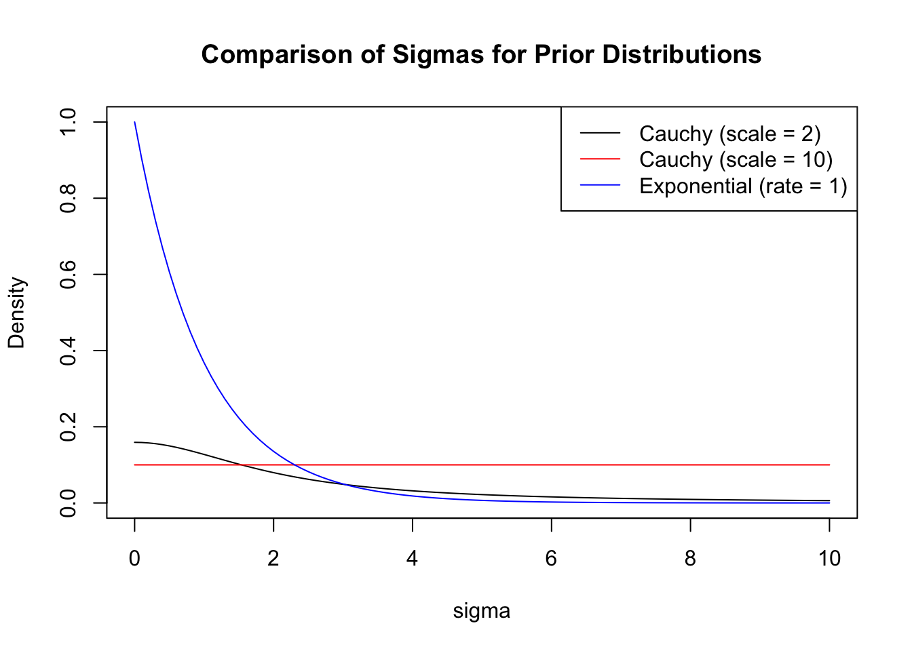
Code
# Compare sigmas for posterior distribution
sigma_o <- as_draws_df(b8.1)
sigma_u <- as_draws_df(uniform)
sigma_e <- as_draws_df(exponential)
dens( sigma_o[[5]] , xlab="sigma" , xlim=c(0.5,1.5), ylim=c(0,8),
main = "Comparison of Sigmas for Posterior Distributions")
dens( sigma_u[[5]] , add=TRUE , col = "red" )
dens( sigma_e[[5]] , add=TRUE , col = "blue" )
legend("topright", legend = c("Cauchy (scale = 2)", "Cauchy (scale = 10)",
"Exponential (rate = 1)"),
col = c("black", "red", "blue"), lty = 1)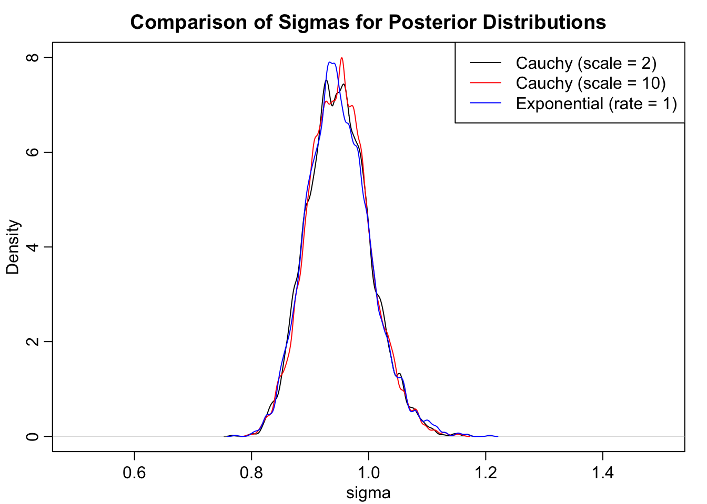
I used uniform and exponential instead of dunif and dexp, since I’m using brms. The different priors do not have any detectable influence on the posterior distribution, as seen in the print results and figures.
Given answer:
All three posterior distributions are very similar. Why? There’s a lot of data, relative to the difference in priors.
8M2. The Cauchy and exponential priors from the terrain ruggedness model are very weak. They can be made more informative by reducing their scale. Compare the dcauchy and dexp priors for progressively smaller values of the scaling parameter. As these priors become stronger, how does each influence the posterior distribution?
Code
# Original
output <- capture.output(b8.1 <-
brm(data = dd, family = gaussian,
log_gdp ~ 1 + rugged + cont_africa + rugged:cont_africa,
prior = c(prior(normal(0, 100), class = Intercept),
prior(normal(0, 10), class = b),
prior(cauchy(0, 2), class = sigma)),
seed = 8))
print(b8.1) Family: gaussian
Links: mu = identity; sigma = identity
Formula: log_gdp ~ 1 + rugged + cont_africa + rugged:cont_africa
Data: dd (Number of observations: 170)
Draws: 4 chains, each with iter = 2000; warmup = 1000; thin = 1;
total post-warmup draws = 4000
Population-Level Effects:
Estimate Est.Error l-95% CI u-95% CI Rhat Bulk_ESS Tail_ESS
Intercept 9.22 0.14 8.95 9.50 1.00 3047 3348
rugged -0.20 0.08 -0.36 -0.05 1.00 2841 2935
cont_africa -1.95 0.23 -2.42 -1.50 1.00 2525 2653
rugged:cont_africa 0.39 0.14 0.13 0.66 1.00 2423 2693
Family Specific Parameters:
Estimate Est.Error l-95% CI u-95% CI Rhat Bulk_ESS Tail_ESS
sigma 0.95 0.05 0.85 1.06 1.00 4311 3151
Draws were sampled using sampling(NUTS). For each parameter, Bulk_ESS
and Tail_ESS are effective sample size measures, and Rhat is the potential
scale reduction factor on split chains (at convergence, Rhat = 1).Code
# Stronger prior with cauchy
output <- capture.output(uniform1 <-
brm(data = dd, family = gaussian,
log_gdp ~ 1 + rugged + cont_africa + rugged:cont_africa,
prior = c(prior(normal(0, 100), class = Intercept),
prior(normal(0, 10), class = b),
prior(cauchy(0, 1), class = sigma)), # weaker prior with bigger sd
seed = 8))
print(uniform1) Family: gaussian
Links: mu = identity; sigma = identity
Formula: log_gdp ~ 1 + rugged + cont_africa + rugged:cont_africa
Data: dd (Number of observations: 170)
Draws: 4 chains, each with iter = 2000; warmup = 1000; thin = 1;
total post-warmup draws = 4000
Population-Level Effects:
Estimate Est.Error l-95% CI u-95% CI Rhat Bulk_ESS Tail_ESS
Intercept 9.23 0.14 8.94 9.50 1.00 3000 2950
rugged -0.20 0.08 -0.35 -0.05 1.00 2805 3168
cont_africa -1.95 0.23 -2.40 -1.50 1.00 2493 2943
rugged:cont_africa 0.40 0.13 0.13 0.65 1.00 2293 2825
Family Specific Parameters:
Estimate Est.Error l-95% CI u-95% CI Rhat Bulk_ESS Tail_ESS
sigma 0.95 0.05 0.85 1.06 1.00 3638 2697
Draws were sampled using sampling(NUTS). For each parameter, Bulk_ESS
and Tail_ESS are effective sample size measures, and Rhat is the potential
scale reduction factor on split chains (at convergence, Rhat = 1).Code
# Stronger prior with exponential
output <- capture.output(exponential2 <-
brm(data = dd, family = gaussian,
log_gdp ~ 1 + rugged + cont_africa + rugged:cont_africa,
prior = c(prior(normal(0, 100), class = Intercept),
prior(normal(0, 10), class = b),
prior(exponential(10), class = sigma)), # stronger prior with bigger expo
seed = 8))
print(exponential2) Family: gaussian
Links: mu = identity; sigma = identity
Formula: log_gdp ~ 1 + rugged + cont_africa + rugged:cont_africa
Data: dd (Number of observations: 170)
Draws: 4 chains, each with iter = 2000; warmup = 1000; thin = 1;
total post-warmup draws = 4000
Population-Level Effects:
Estimate Est.Error l-95% CI u-95% CI Rhat Bulk_ESS Tail_ESS
Intercept 9.22 0.14 8.95 9.50 1.00 2736 2833
rugged -0.20 0.08 -0.35 -0.05 1.00 2755 2633
cont_africa -1.95 0.23 -2.41 -1.51 1.00 2483 2684
rugged:cont_africa 0.39 0.13 0.13 0.65 1.00 2507 2801
Family Specific Parameters:
Estimate Est.Error l-95% CI u-95% CI Rhat Bulk_ESS Tail_ESS
sigma 0.93 0.05 0.83 1.03 1.00 4359 2926
Draws were sampled using sampling(NUTS). For each parameter, Bulk_ESS
and Tail_ESS are effective sample size measures, and Rhat is the potential
scale reduction factor on split chains (at convergence, Rhat = 1).Code
p1 <-
as_draws_df(b8.1) %>%
mcmc_trace(pars = vars(b_Intercept:sigma),
linewidth = 0.25)
p2 <-
as_draws_df(uniform1) %>%
mcmc_trace(pars = vars(b_Intercept:sigma),
linewidth = 0.25)
p3 <-
as_draws_df(exponential2) %>%
mcmc_trace(pars = vars(b_Intercept:sigma),
linewidth = 0.25)
(
(p1 / p2/ p3) &
scale_color_ipsum() &
theme(legend.position = "right")
)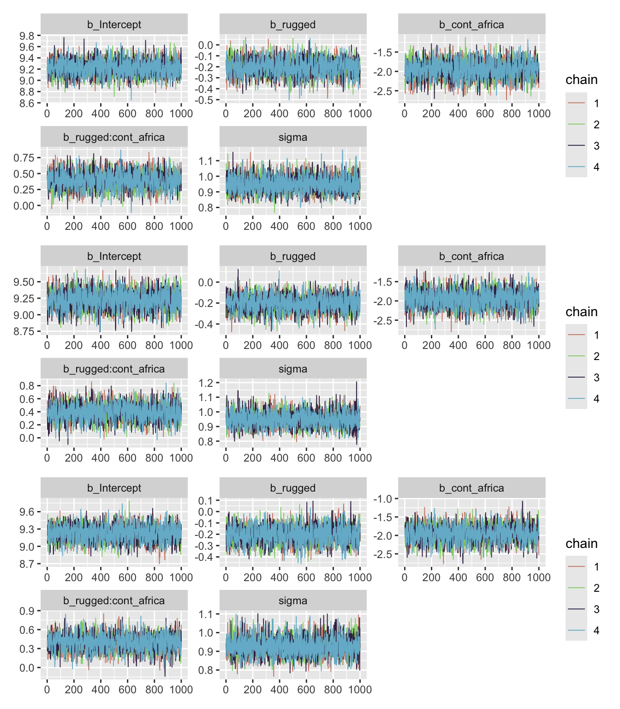
Code
# Sigmas for priors
curve( dcauchy(x,0,2) , from=0 , to=10 ,
xlab="sigma" , ylab="Density" , ylim=c(0,1),
main = "Comparison of Sigmas for Prior Distributions" )
curve( dcauchy(x,0,1) , add=TRUE , col="red" )
curve( dexp(x,10) , add=TRUE , col="blue" )
legend("topright", legend = c("Cauchy (scale = 2)",
"Cauchy (scale = 1)", "Exponential (rate = 2)"),
col = c("black", "red", "blue"), lty = 1)
Code
# Compare sigmas for posterior distribution
sigma <- as_draws_df(b8.1)
sigma_1 <- as_draws_df(uniform1)
sigma_2 <- as_draws_df(exponential2)
dens( sigma[[5]] , xlab="sigma" , xlim=c(0.5,1.5), ylim=c(0,10),
main = "Comparison of Sigmas for Posterior Distributions")
dens( sigma_1[[5]] , add=TRUE , col = "red" )
dens( sigma_2[[5]] , add=TRUE , col = "blue" )
legend("topright", legend = c("Cauchy (scale = 2)", "Cauchy (scale = 1)",
"Exponential (rate = 10)"),
col = c("black", "red", "blue"), lty = 1)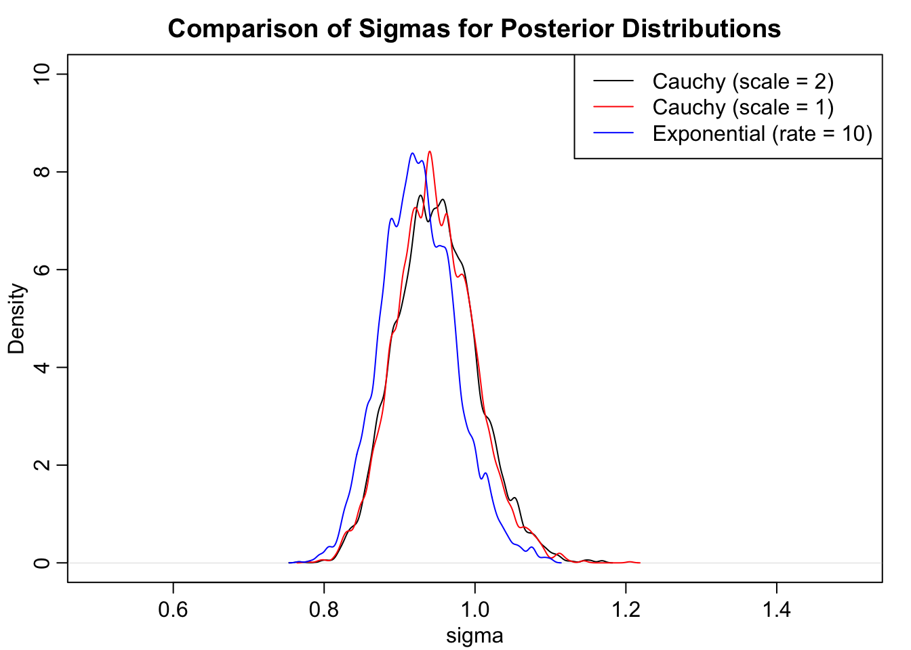
Not very different with slightly stronger priors. Set much stronger prior for exponential:
Code
# Original
output <- capture.output(b8.1 <-
brm(data = dd, family = gaussian,
log_gdp ~ 1 + rugged + cont_africa + rugged:cont_africa,
prior = c(prior(normal(0, 100), class = Intercept),
prior(normal(0, 10), class = b),
prior(cauchy(0, 2), class = sigma)),
seed = 8))
print(b8.1) Family: gaussian
Links: mu = identity; sigma = identity
Formula: log_gdp ~ 1 + rugged + cont_africa + rugged:cont_africa
Data: dd (Number of observations: 170)
Draws: 4 chains, each with iter = 2000; warmup = 1000; thin = 1;
total post-warmup draws = 4000
Population-Level Effects:
Estimate Est.Error l-95% CI u-95% CI Rhat Bulk_ESS Tail_ESS
Intercept 9.22 0.14 8.95 9.50 1.00 3047 3348
rugged -0.20 0.08 -0.36 -0.05 1.00 2841 2935
cont_africa -1.95 0.23 -2.42 -1.50 1.00 2525 2653
rugged:cont_africa 0.39 0.14 0.13 0.66 1.00 2423 2693
Family Specific Parameters:
Estimate Est.Error l-95% CI u-95% CI Rhat Bulk_ESS Tail_ESS
sigma 0.95 0.05 0.85 1.06 1.00 4311 3151
Draws were sampled using sampling(NUTS). For each parameter, Bulk_ESS
and Tail_ESS are effective sample size measures, and Rhat is the potential
scale reduction factor on split chains (at convergence, Rhat = 1).Code
# Stronger prior with cauchy
output <- capture.output(uniform_new <-
brm(data = dd, family = gaussian,
log_gdp ~ 1 + rugged + cont_africa + rugged:cont_africa,
prior = c(prior(normal(0, 100), class = Intercept),
prior(normal(0, 10), class = b),
prior(cauchy(0, 0.1), class = sigma)),
seed = 8))
print(uniform_new) Family: gaussian
Links: mu = identity; sigma = identity
Formula: log_gdp ~ 1 + rugged + cont_africa + rugged:cont_africa
Data: dd (Number of observations: 170)
Draws: 4 chains, each with iter = 2000; warmup = 1000; thin = 1;
total post-warmup draws = 4000
Population-Level Effects:
Estimate Est.Error l-95% CI u-95% CI Rhat Bulk_ESS Tail_ESS
Intercept 9.23 0.14 8.95 9.51 1.00 2694 2751
rugged -0.20 0.08 -0.36 -0.05 1.00 2361 2758
cont_africa -1.95 0.23 -2.41 -1.51 1.00 2315 2702
rugged:cont_africa 0.39 0.13 0.13 0.66 1.00 2095 2372
Family Specific Parameters:
Estimate Est.Error l-95% CI u-95% CI Rhat Bulk_ESS Tail_ESS
sigma 0.94 0.05 0.85 1.05 1.00 3443 2948
Draws were sampled using sampling(NUTS). For each parameter, Bulk_ESS
and Tail_ESS are effective sample size measures, and Rhat is the potential
scale reduction factor on split chains (at convergence, Rhat = 1).Code
output <- capture.output(exponential_new <-
brm(data = dd, family = gaussian,
log_gdp ~ 1 + rugged + cont_africa + rugged:cont_africa,
prior = c(prior(normal(0, 100), class = Intercept),
prior(normal(0, 10), class = b),
prior(exponential(100), class = sigma)),
seed = 8))
print(exponential_new) Family: gaussian
Links: mu = identity; sigma = identity
Formula: log_gdp ~ 1 + rugged + cont_africa + rugged:cont_africa
Data: dd (Number of observations: 170)
Draws: 4 chains, each with iter = 2000; warmup = 1000; thin = 1;
total post-warmup draws = 4000
Population-Level Effects:
Estimate Est.Error l-95% CI u-95% CI Rhat Bulk_ESS Tail_ESS
Intercept 9.23 0.12 9.00 9.46 1.00 2971 3046
rugged -0.20 0.06 -0.34 -0.08 1.00 2739 2460
cont_africa -1.95 0.19 -2.34 -1.58 1.00 2167 2517
rugged:cont_africa 0.40 0.11 0.18 0.61 1.00 2105 2314
Family Specific Parameters:
Estimate Est.Error l-95% CI u-95% CI Rhat Bulk_ESS Tail_ESS
sigma 0.78 0.03 0.72 0.85 1.00 4282 3005
Draws were sampled using sampling(NUTS). For each parameter, Bulk_ESS
and Tail_ESS are effective sample size measures, and Rhat is the potential
scale reduction factor on split chains (at convergence, Rhat = 1).Code
p1 <-
as_draws_df(b8.1) %>%
mcmc_trace(pars = vars(b_Intercept:sigma),
linewidth = 0.25)
p2 <-
as_draws_df(uniform_new) %>%
mcmc_trace(pars = vars(b_Intercept:sigma),
linewidth = 0.25)
p3 <-
as_draws_df(exponential_new) %>%
mcmc_trace(pars = vars(b_Intercept:sigma),
linewidth = 0.25)
(
(p1 / p2 / p3) &
scale_color_ipsum() &
theme(legend.position = "right")
)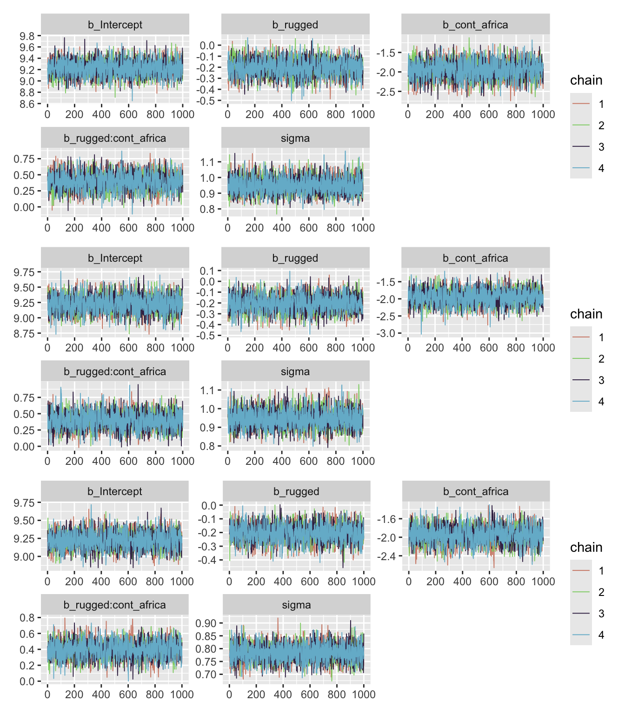
Code
# Sigmas for priors
curve( dcauchy(x,0,2) , from=0 , to=10 ,
xlab="sigma" , ylab="Density" , ylim=c(0,1),
main = "Comparison of Sigmas for Prior Distributions" )
curve( dcauchy(x,0,0.1) , add=TRUE , col="red" )
curve( dexp(x,100) , add=TRUE , col="blue" )
legend("topright", legend = c("Cauchy (scale = 2)",
"Cauchy (scale = 0.1)", "Exponential (rate = 100)"),
col = c("black", "red", "blue"), lty = 1)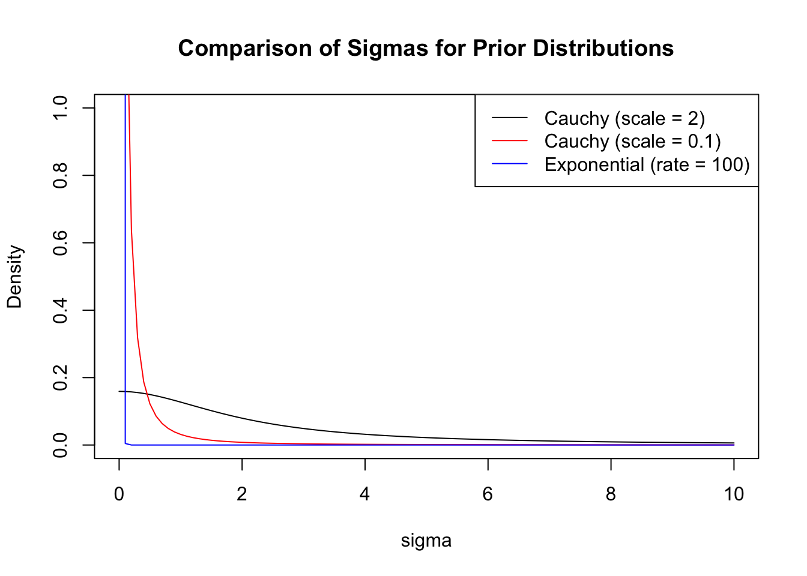
Code
# Compare sigmas for posterior distribution
sigma_original <- as_draws_df(b8.1)
sigma_uniform <- as_draws_df(uniform_new)
sigma_exponential <- as_draws_df(exponential_new)
dens( sigma_original[[5]] , xlab="sigma" , xlim=c(0.5,1.5), ylim=c(0,13),
main = "Comparison of Sigmas for Posterior Distributions")
dens( sigma_uniform[[5]] , add=TRUE , col = "red" )
dens( sigma_exponential[[5]] , add=TRUE , col = "blue" )
legend("topright", legend = c("Cauchy (scale = 2)", "Cauchy (scale = 0.1)",
"Exponential (rate = 100)"),
col = c("black", "red", "blue"), lty = 1)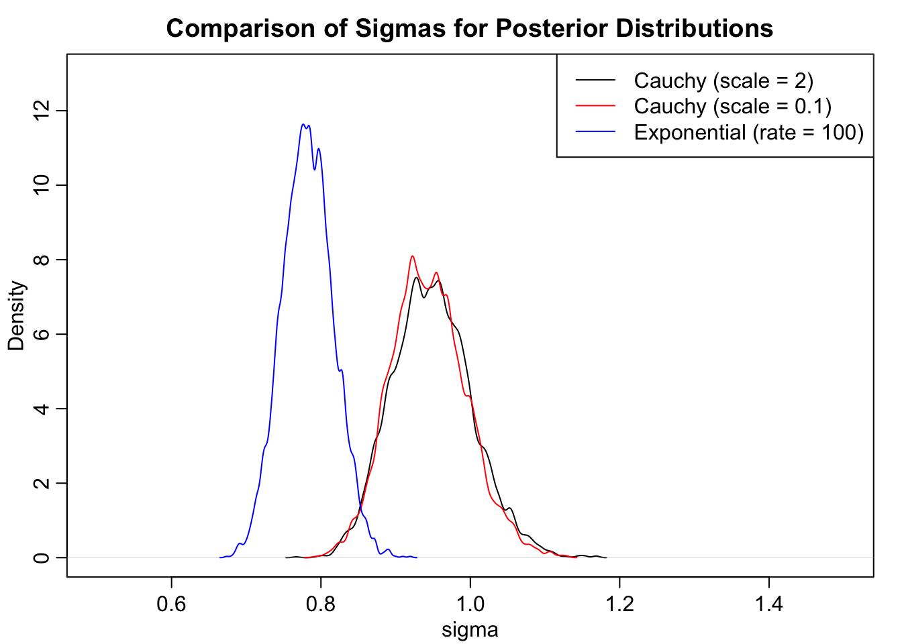
8M3. Re-estimate one of the Stan models from the chapter, but at different numbers of warmup iterations. Be sure to use the same number of sampling iterations in each case. Compare the n_eff values. How much warmup is enough?
Code
# Function to fit model and calculate effective sample size
fit.model.function <- function(warmup) {
# Fit the model
output <- capture.output(model <- brm(data = list(y = c(-1, 1)),
family = gaussian,
y ~ 1,
prior = c(prior(normal(0, 10), class = Intercept),
prior(cauchy(0, 1), class = sigma)),
inits = list(list(Intercept = 0, sigma = 1),
list(Intercept = 0, sigma = 1)),
iter = 4000, warmup = warmup, chains = 2,
seed = 8))
# Extract MCMC samples
mcmc_samples <- as.mcmc(model)
# Calculate effective sample size
ess <- effectiveSize(mcmc_samples)
return(ess)
}
# List of warm-up values
warmup_values <- c(1, 5, 10, 100, 500, 1000)
# Loop through each warm-up value and fit the model
output <- capture.output(ess_values <- sapply(warmup_values, function(warmup) {
fit.model.function(warmup)
}))
ess_values [,1] [,2] [,3] [,4] [,5] [,6]
b_Intercept 11.774220 1053.849 1069.568 1087.359 1325.983 1020.0948
sigma 10.129209 1945.339 1481.949 1597.755 1322.890 944.8151
lprior 8.114041 1652.867 1503.860 1510.818 1251.462 947.6088
lp__ 8.221878 1178.211 1192.542 1171.055 1184.733 910.6791Code
## A warmup value of 5 is enough for this model. Hard
8H1. Run the model below and then inspect the posterior distribution and explain what it is accomplishing. Compare the samples for the parameters a and b. Can you explain the different trace plots, using what you know about the Cauchy distribution?
8H2. Recall the divorce rate example from Chapter 5. Repeat that analysis, using map2stan this time, fitting models m5.1, m5.2, and m5.3. Use compare to compare the models on the basis of WAIC. Explain the results.